In de versiehistorie wordt met WELT-xx verwezen naar de Wensen en Eisen Lijst voor de TPOD-standaard. Deze lijst bevat meldingen en wijzigingsverzoeken die door gebruikers van de standaard zijn ingediend. De ingediende meldingen zijn te vinden via https://www.geonovum.nl/geo-standaarden/omgevingswet/meldingen.
Voor de STOP-standaard bestaat een vergelijkbaar meldingssysteem, waarnaar wordt verwezen met STOP-issue #xx. De STOP-issuetracker is te vinden via https://gitlab.com/koop/STOP/standaard/-/issues.
Versie
Datum
Wijziging
2.1.0-rc
2021-12-17
Hele document:
tekst gecorrigeerd en verbeterd
tekst geactualiseerd n.a.v. wijzigingen in wet- en regelgeving
2.1.0-rc
2021-12-17
Hoofdstuk 4 De vormgeving van Besluit en Regeling bij het omgevingsplan
Beschrijving Besluitmodel in overeenstemming gebracht met STOP: in BesluitCompact wordt een WijzigArtikel niet onderverdeeld in WijzigLeden
Bepaald wanneer gebruik gemaakt mag worden van een PDF-bijlage in Besluit en Regeling
Modellering Toelichting en ArtikelgewjizeToelichting aangepast en advies toegevoegd over de toepassing hiervan, met het oog op de toekomstige vereenvoudiging van deze elementen (STOP#194)
Advies toegevoegd om in het Besluit het element Inhoudsopgave niet te gebruiken
Toegevoegd aan het toelichtende deel dat -indien van toepassing- een rechtsmiddelenclausule in het besluit moet worden opgenomen
2.1.0-rc
2021-12-17
Paragraaf 5.2 Specificatie van de Artikelstructuur
Bepaling over gebruik tekstelement Titel gewijzigd (WELT-178)
Extra uitleg toegevoegd over element Vervallen
Aangegeven dat voor lijsten gebruik gemaakt moet worden van Lijst van het type expliciet
2.1.0-rc
2021-12-17
Paragraaf 5.3 Specificatie van de Vrijetekststructuur
Aangegeven dat voor lijsten gekozen kan worden tussen Lijst van het type expliciet en Lijst van het type ongemarkeerd
Figuren toegevoegd en bestaande figuren verduidelijkt
Hoofdstuk 10 gewijzigd van algemene beschrijving naar specifieke beschrijving van de procedure en de producten en gegevens die tijdens die procedure moeten worden aangeleverd
2.1.0-rc
2021-12-17
Hoofdstuk 11 Mutatiescenario’s toegevoegd
Beschrijving van mutatiescenario Integrale Tekstvervanging en wanneer dit mag worden toegepast (STOP#191)
2.1.1
2023-01-09
Hele document:
Tekst is gecorrigeerd en verbeterd
Tekst is geactualiseerd n.a.v. wijzigingen in wet- en regelgeving
2.1.1
2023-01-09
Paragraaf 2.4 Wijziging van het omgevingsplan door andere omgevingsdocumenten: meervoudig bronhouderschap
Tekst is herschreven om deze compacter en duidelijker te maken
Beschrijving symbolisatiestijl per objecttype is toegevoegd en met voorbeelden toegelicht
Er is toegevoegd dat er nu ook symbolisatiestijlen voor lijnen en punten zijn en kleurenranges voor Normwaarden
Afbeeldingen zijn aangepast aan nieuwe symbolisatiestijlen
2.1.1
2023-01-09
Hoofdstuk 4 De modellering van Besluit en Regeling bij het omgevingsplan
In dit hoofdstuk is nu onderscheid gemaakt tussen het besluit, dat wordt gepubliceerd c.q. bekendgemaakt, en de op het besluit betrekking hebbende stukken, die ter inzage moeten worden gelegd. Dit is waar relevant in de tekst van dit hoofdstuk verwerkt
In dit hoofdstuk is het onderscheid tussen Besluit en Regeling duidelijker gemaakt, aanvullingen daarvoor staan in paragrafen 4.3.2 en 4.3.3.
De voorkeursvariant voor het element Toelichting als onderdeel van het Besluit is gewijzigd
Bij de (hoofd)elementen ArtikelgewijzeToelichting en Inhoudsopgave (van het Besluit) is aangegeven dat ze in een toekomstige versie van de standaard gaan vervallen en dat gebruik ontraden wordt
In het onderdeel WijzigBijlage, RegelingMutatie is de beschrijving van de wijzigacties verwijderd. Dat zijn toepassingen van de wijzigingsmethode renvooi die door software worden uitgevoerd, niet op hun plaats in de normbeschrijving
Er zijn afbeeldingen toegevoegd met schematische overzichten van de onderdelen van BesluitCompact respectievelijk RegelingCompact voor het omgevingsplan
Bij het hoofdelement ArtikelgewijzeToelichting en bij het inhoud-element InleidendeTekst (van het Besluit) is aangegeven dat ze in een toekomstige versie van de standaard gaan vervallen en dat gebruik ontraden wordt
Is paragraaf 5.4.3 toegevoegd; in deze paragraaf wordt beschreven dat de op het besluit betrekking hebbende stukken elektronisch ter inzage gelegd moeten worden met een kader met toekomstige functionaliteit en een workaround
in paragraaf 7.4.1 is toegevoegd dat het is toegestaan om bij Lijn naast de geometrie van het type Curve ook het type MultiCurve te gebruiken en bij Punt naast de geometrie van het type Point ook het type MultiPoint te gebruiken, met toelichting wat de betekenis van de Multi-varianten is (WELT-191)
In paragraaf 7.4.4 zijn constraints voor de toegestane geometrietypen voor Gebied, Lijn en Punt toegevoegd, met in paragraaf 7.4.5 een toelichting op die constraints
In de paragrafen 6.1.2.1 en 6.1.2.2 zijn de beschrijvingen van noemer, werkingsgebied, de functies van het OW-object Locatie, het werken met gebiedengroepen en de relatie tussen OW-Locatie en GIO aangepast
In paragraaf 7.4.5 is de tekst over de noemer van het OW-object Locatie gewijzigd
Paragrafen 7.6.6, 7.7.6, 7.8.6 en 7.9.6 Aanbevelingen voor Locatie, noemer en naam GIO bij annoteren met Activiteit/ Omgevingswaarde/ Omgevingsnorm/ Gebiedsaanwijzing zijn toegevoegd
De definitie van dit objecttype is aangepast om duidelijk te maken dat de bij een Juridische regel of Tekstdeel behorende domeinspecifieke OW-objecten (Activiteit, Gebiedsaanwijzing, Omgevingsnorm, Omgevingswaarde) op de Kaart worden weergegeven en niet de Locaties bij de Juridische regel of het Tekstdeel
Paragraaf is herschreven om doel en betekenis Pons duidelijker te maken, m.n. wijzigingen in subparagraaf 7.14.1
Er is expliciet gemaakt dat een Pons alleen kan horen bij de hoofdregeling van het omgevingsplan, niet bij tijdelijk regelingdelen (WELT-205)
2.1.1
2023-01-09
Hoofdstuk 8 Wijzigen van omgevingsdocumenten met wijzigingsbesluiten
Hoofdstuk is toegevoegd (en daaropvolgende hoofdstukken vernummerd)
Bestaande tekst over het muteren van OW-objecten en het mutatiescenario Integrale tekstvervanging is naar dit hoofdstuk verplaatst
Nieuwe tekst is toegevoegd over het wijzigen van tekst, met renvooi als standaard-wijzigingsmethode en Intrekken & vervangen en Integrale tekstvervanging als alternatieve wijzigingsmethoden
Nieuwe tekst is toegevoegd over het wijzigen van GIO’s
Paragraaf 8.4 over parallelle wijzigingsprocessen is toegevoegd
2.1.1
2023-01-09
Paragraaf 9.6 Hergebruik van en verwijzen naar GIO’s en OW-objecten in een ander omgevingsdocument
In subparagraaf 9.6.2 is een aankondiging toegevoegd van een toekomstige wijziging van de standaard i.v.m. het eigenaarschap van OW-objecten
2.1.1
2023-01-09
Paragraaf 9.7 Onderdelen van de standaard die voor omgevingsdocumenten met Artikelstructuur verplicht of noodzakelijk zijn
Toegevoegd aan de samenvatting van de verplichtingen is dat bij gebruik van normwaarden de locaties en waarden in een GIO moeten worden vastgesteld
2.1.1
2023-01-09
Hoofdstuk 10 Procedure, aan te leveren producten en gegevens
Dit hoofdstuk (voorheen hoofdstuk 9) is fors herschreven
Paragraaf 10.2 beschrijft de producten die tijdens de procedure moeten worden aangeleverd
Paragraaf 10.3 geeft aan welke gegevens over producten en procedure moeten worden aangeleverd
Paragraaf 10.4 geeft per procedurestap concreet aan wat de juridische situatie is, welke producten moeten worden aangeleverd en hoe de aan te leveren gegevens moeten worden toegepast
2.1.1
2023-01-09
In alle kaders over toekomstige functionaliteit is nu ook aangegeven of er een workaround bestaat en zo ja, wat die workaround is.
A Uitgangspunten voor de modellering
1 Inleiding
1.1 Aanleiding
Het motto van de Omgevingswet is ‘Ruimte voor ontwikkeling, waarborgen voor kwaliteit’. De Omgevingswet staat voor een goede balans tussen het benutten en beschermen van de fysieke leefomgeving. Met benutten wordt bedoeld het doelmatig beheren, gebruiken en ontwikkelen van de fysieke leefomgeving om maatschappelijke behoeften te vervullen. Bij beschermen gaat het over het bereiken en in stand houden van een veilige en gezonde fysieke leefomgeving en een goede omgevingskwaliteit.
1.1.1 Nieuw stelsel omgevingsrecht
De Omgevingswet bundelt de wetgeving en regels voor ruimte, wonen, infrastructuur, milieu, natuur en water. Met de Omgevingswet wordt het huidige stelsel van ruimtelijke regels volledig herzien en wordt het fundament van het nieuwe stelsel voor het omgevingsrecht gelegd. Met het vernieuwen van het omgevingsrecht wil de wetgever vier verbeteringen bereiken:
Het omgevingsrecht is inzichtelijk, voorspelbaar en gemakkelijk in het gebruik.
De leefomgeving staat op een samenhangende manier centraal in beleid, besluitvorming en regelgeving.
Een actieve en flexibele aanpak biedt overheden meer afwegingsruimte om doelen voor de leefomgeving te bereiken.
Besluitvorming over projecten in de leefomgeving gaat sneller en beter.
Voor de realisatie van deze doelen biedt de wetgever diverse juridische instrumenten, waaronder de besluiten en andere rechtsfiguren die verschillende bevoegde gezagen in staat stellen besluiten te nemen die ingrijpen in de leefomgeving. De belangrijkste instrumenten zijn:
Algemene Maatregel van Bestuur (Rijk)
Ministeriële Regeling (Rijk)
Omgevingsvisie (Rijk, provincies en gemeenten)
Omgevingsverordening (Provincies)
Waterschapsverordening (Waterschappen)
Omgevingsplan (Gemeenten)
Projectbesluit (Rijk, provincies en waterschappen)
Programma (Rijk, provincies, gemeenten en waterschappen)
1.1.2 LVBB, overheid.nl en DSO-LV
Besluiten moeten, om werking te kunnen hebben, worden bekendgemaakt respectievelijk gepubliceerd. Daartoe moeten ze worden aangeleverd aan de Landelijke Voorziening Bekendmaken en Beschikbaarstellen (verder: LVBB). De LVBB verzorgt vervolgens de bekendmaking van de besluiten en de consolidatie van wijzigingsbesluiten in de (geconsolideerde) Regeling. Beide worden geplaatst op het internetportaal overheid.nl: de bekendmaking van de besluiten komt op officielebekendmakingen.nl in het digitale publicatieblad van het bevoegde gezag en de geconsolideerde Regeling in de nationale respectievelijk lokale regelingenbank. De geconsolideerde Regeling (in STOP-termen: de Toestand) wordt doorgeleverd aan de hierna te bespreken DSO-LV. Deze processen en de resultaten daarvan zijn nader beschreven in paragraaf 3.8.
Digitalisering is een van de instrumenten voor het behalen van de in paragraaf 1.1.1 genoemde verbeterdoelen. De Omgevingswet bevat de grondslagen voor de Landelijke Voorziening Digitaal Stelsel Omgevingswet (verder: DSO-LV). Daarmee is de juridische basis gelegd voor de ontwikkeling van DSO-LV en kunnen er regels worden gesteld over onder andere gemeenschappelijke definities in de standaarden en voorzieningen die onderdeel zijn van het stelsel.
DSO-LV zorgt voor samenhangende, eenduidige en toegankelijke informatie van goede kwaliteit en draagt bij aan de verbetering van het stelsel van het omgevingsrecht. Het stimuleert een snellere en integrale besluitvorming onder de Omgevingswet en vergroot het gebruikersgemak.
DSO-LV biedt het digitale loket waar initiatiefnemers, overheden en belanghebbenden snel kunnen zien wat kan en mag in de fysieke leefomgeving: het Omgevingsloket. Via het Omgevingsloket kunnen zij:
vergunningen aanvragen en meldingen doen;
zien welke regels en beleid van toepassing zijn op een locatie;
(op termijn) informatie raadplegen over de kwaliteit van de fysieke leefomgeving, zoals gegevens over water- of luchtkwaliteit en geluidbelasting.
Om aan deze doelstellingen van DSO-LV te kunnen voldoen, is het nodig om bepaalde besluiten en andere rechtsfiguren machineleesbaar te maken en de gebruikte gegevens uitwisselbaar te maken. Dat betekent dat ze vanuit informatiekundig en technisch oogpunt moeten worden gestructureerd en gestandaardiseerd.
De Omgevingswet biedt daartoe de mogelijkheid door het stellen van regels over die besluiten en andere rechtsfiguren.
1.2 STOP, IMOW en TPOD
Op grond van artikel 20.26 lid 2 Omgevingswet worden besluiten en andere rechtsfiguren op grond van die wet die bij ministeriële regeling zijn aangeduid als omgevingsdocument, ontsloten via DSO-LV. De bedoelde ministeriële regeling is de Regeling standaarden publicaties Omgevingswet[1] De Regeling standaarden publicaties Omgevingswet is een ministeriële regeling bij de Bekendmakingswet . Deze regeling wijst besluiten en andere rechtsfiguren aan als omgevingsdocument en stelt het verplicht om die omgevingsdocumenten, en ontwerpen daarvan, elektronisch vorm te geven conform de Standaard voor Officiële Publicaties, het InformatieModel Omgevingswet en het voor het betreffende omgevingsdocument voorgeschreven toepassingsprofiel. Ook bevat deze regeling de verplichting om omgevingsdocumenten voor publicatie aan te bieden aan het Bronhouderkoppelvlak van de LVBB.
De Standaard voor Officiële Publicaties (verder: STOP) beschrijft hoe officiële publicaties moeten worden opgesteld en aangeleverd om te kunnen worden bekendgemaakt of gepubliceerd en om te kunnen worden geconsolideerd. STOP gaat daarbij niet over de inhoud van officiële bekendmakingen, maar beschrijft wel de mechanismen en bouwstenen om die inhoud digitaal vast te leggen.
Per domein kan een specificatie van STOP gemaakt worden. Voor het domein van de Omgevingswet is die specificatie gegeven in het ToepassingsProfiel voor OmgevingsDocumenten (TPOD). Daarbij behoort het InformatieModel Omgevingswet (verder: IMOW). IMOW is het logische model dat is toegespitst op de keten ‘Van plan tot publicatie’. IMOW bepaalt hoe omgevingsdocumenten aan DSO-LV moeten worden aangeleverd. IMOW omvat implementatierichtlijnen en implementatie-afspraken voor de omgevingsdocumenten. IMOW is bedoeld voor bouwers van plansoftware en voor technisch ingestelde medewerkers van bevoegde gezagen en adviesbureaus.
Naast IMOW is er, als serviceproduct, het Conceptueel InformatieModel Omgevingswet (verder: CIMOW). CIMOW is het informatiemodel voor informatie-uitwisseling binnen DSO-LV. CIMOW is bedoeld voor de DSO-keten. Per omgevingsdocument is in een Toepassingsprofiel beschreven op welke wijze STOP en IMOW moeten worden toegepast. Een Toepassingsprofiel is een nadere invulling c.q. beperking van STOP en bevat domein- en omgevingsdocument-specifieke afspraken. De toepassingsprofielen geven de informatiekundige specificaties conform STOP en IMOW voor de (inhoudelijke) onderwerpen, de regels en richtlijnen die gelden voor het betreffende omgevingsdocument. Het is in feite de schakel tussen de juridisch(-inhoudelijke) bepalingen in de Omgevingswet en de technische specificaties voor het opstellen van de afzonderlijke omgevingsdocumenten en de data die daarin wordt vastgelegd en het ontwikkelen van software daarvoor. Het TPOD is primair bedoeld voor beleidsmedewerkers en juristen van de bevoegde gezagen, die de omgevingsdocumenten volgens de standaard inhoud en vorm zullen geven.
De STOP/TPOD-standaard legt vast hoe tekst moet worden ingedeeld en geannoteerd, hoe tekst aan locaties moet worden gekoppeld, welke waardelijsten van toepassing zijn en hoe het resultaat vervolgens uitgewisseld moet worden. Het is aan de bevoegde gezagen om de inhoud te bepalen.
Het onderhavige document is het toepassingsprofiel voor het omgevingsplan. Het behoort tot het Toepassingsprofiel voor Omgevingsdocumenten, dat de volgende onderdelen omvat:
Informatiemodel Omgevingswet (document en schema’s);
Toepassingsprofielen voor de omgevingsdocumenten;
Symbolenbibliotheek STOP-TPOD;
Waardelijsten IMOW.
Bij het Toepassingsprofiel voor Omgevingsdocumenten hoort een set van serviceproducten, waaronder:
Conceptueel Informatiemodel Omgevingswet;
Presentatiemodel;
Wegwijzer;
Validatiematrix.
1.3 Leeswijzer
Dit document is in drie delen verdeeld. Deel A beschrijft de uitgangspunten voor de modellering: de doelstellingen van Omgevingswet, STOP/TPOD-standaard en DSO; de juridische, inhoudelijke en procedurele aspecten van het omgevingsplan en tot slot de uitgangspunten die de bouwstenen vormden voor de ontwikkeling van de toepassingsprofielen. Deel B is volledig gewijd aan de modellering van het omgevingsplan. Beschreven worden de vormgeving van Besluit en Regeling, de toepassing van de STOP-tekststructuren, het annoteren met OW-objecten, het wijzigen van omgevingsdocumenten met wijzigingsbesluiten en enkele andere aspecten. Deel C tenslotte beschrijft de wettelijk voorgeschreven procedure die het omgevingsplan doorloopt en de producten en gegevens die per stap in die procedure moeten worden aangeleverd.
Dit toepassingsprofiel stelt een aantal (overwegend technische en structurerende) normen voor het opstellen van het omgevingsplan. Voorbeelden daarvan zijn het model voor Besluit en Regeling dat op het omgevingsplan en een besluit tot vaststelling of wijziging daarvan moet worden toegepast, de attributen die nodig zijn om een bepaalde annotatie vast te leggen en de manier waarop de relatie tussen tekst en werkingsgebied wordt vormgegeven. Uiteraard bevat het toepassingsprofiel ook een toelichting op die normen. Om volstrekt helder te maken wat tot de norm behoort, wordt in de tekst een duidelijk onderscheid gemaakt tussen beide teksttypen. De toelichtende teksten staan steeds in de subparagraaf Toelichting, de normen staan in de subparagraaf Norm. Het gaat hier om de functionele normen uit de standaard, niet om juridische normen die regels stellen. De subparagraaf Norm beschrijft hoe bij het opstellen van het omgevingsplan voldaan moet worden aan de TPOD-standaard. Doelstelling hiervan is dat de omgevingsdocumenten van verschillende bevoegde gezagen op eenzelfde manier geraadpleegd en bevraagd kunnen worden en het combineren van informatie uit verschillende omgevingsdocumenten over eenzelfde onderwerp vereenvoudigd wordt. Hiermee hebben deze normen een functionele invalshoek. Validatieregels die bepalen of een omgevingsplan kan worden bekendgemaakt en/of in DSO-LV getoond kan worden, kennen een technische invalshoek: kan het geautomatiseerde systeem het document verwerken?
2 Inhoudelijke aspecten van het omgevingsplan
Dit hoofdstuk beschrijft het instrument omgevingsplan en heeft als doel de vereisten voor de modellering in dit toepassingsprofiel te identificeren.
Paragraaf 2.1 schetst het karakter van het omgevingsplan. Deze schets bevat informatie op hoofdlijnen, die van belang is voor de functionele elementen in het toepassingsprofiel. In paragraaf 2.2 staan algemene kenmerken van het omgevingsplan. Deze kenmerken geven de (juridische, procedurele, etc.) context weer van het omgevingsplan. Paragraaf 2.3 beschrijft domeinspecifieke kenmerken: de inhoud en werking van het omgevingsplan. Paragraaf 2.4 heeft als onderwerp de andere omgevingsdocumenten die het omgevingsplan kunnen wijzigen, te weten het voorbereidingsbesluit, de reactieve interventie en het projectbesluit, en het meervoudig bronhouderschap dat daarbij een rol speelt. Paragraaf 2.5 ten slotte gaat over het overgangsrecht en de overgangsfase waarin wordt gegaan van omgevingsplan van rechtswege naar het omgevingsplan dat is opgesteld conform de Omgevingswet.
2.1 Kenschets rechtsfiguur
Rijk, provincies, waterschappen en gemeenten stellen elk (integraal) beleid en regels vast en nemen vervolgens andere (uitvoerings)besluiten over de ontwikkeling, het gebruik, de bescherming en het beheer en onderhoud van de fysieke leefomgeving voor hun grondgebied. Zij leggen dit vast in één of meerdere omgevingsdocumenten.
Elk van deze bestuurslagen heeft in het stelsel voor het omgevingsrecht zijn eigen bevoegdheden en verantwoordelijkheden en daarmee samenhangende instrumenten, waaronder de omgevingsdocumenten.
De gemeente stelt regels over de fysieke leefomgeving en legt deze vast in één omgevingsplan voor haar gehele grondgebied. Het omgevingsplan bevat in de eerste plaats de regels die op grond van de Omgevingswet worden gesteld en daarnaast ook regels over de fysieke leefomgeving die worden gesteld op grond van de Gemeentewet en andere bijzondere wetten.
Het omgevingsplan bevat de regels die nodig zijn met het oog op een evenwichtige toedeling van functies aan locaties. Daarnaast kunnen in het omgevingsplan regels worden gesteld over activiteiten die gevolgen (kunnen) hebben voor de fysieke leefomgeving.
Het omgevingsplan is een normerend instrument dat voor eenieder rechten en plichten in het leven roept.
2.2 Algemene kenmerken omgevingsplan
In Tabel 1 tot en met Tabel 3 zijn de algemene kenmerken van het omgevingsplan opgenomen. Deze kenmerken leggen de algemene eigenschappen vast, waarmee informatie over het omgevingsplan wordt bijgehouden. Doel van deze tabellen is het weergeven van de meest essentiële algemene kenmerken van het instrument zodat de lezer het beter kan plaatsen en vergelijken met bestaande instrumenten, niet om een volledig sluitende beschrijving te geven. De in de tabellen aangehaalde artikelen zijn afkomstig uit de Omgevingswet (verder: Ow), tenzij anders vermeld.
Tabel 1Juridische kenmerken
Onderwerp
Specificatie
Grondslag rechtsfiguur
Artikel 2.4 Ow
Voorbereidingsprocedure
Verplichtingen:
kennis geven van voornemen omgevingsplan vast te stellen in Gemeenteblad (art. 16.29 Ow)
in de kennisgeving aangeven hoe burgers, bedrijven, maatschappelijke organisaties en bestuursorganen bij de voorbereiding worden betrokken (art. 10.2 lid 1 Omgevingsbesluit (verder: Ob))
toepassen afdeling 3.4 Awb (art. 16.30 Ow)
bij het vaststellen aangeven hoe burgers, bedrijven, maatschappelijke organisaties en bestuursorganen bij de voorbereiding zijn betrokken en wat de resultaten daarvan zijn; aangeven op welke wijze invulling is gegeven aan het gemeentelijke participatiebeleid (art. 10.2 lid 2 Ob)
Tijdstip bekendmaking/
terinzagelegging vastgesteld omgevingsplan
(art. 16.77b Ow) Bekendmaking niet eerder dan 2 weken na datum vaststelling, tenzij:
GS geen zienswijze over ontwerp hebben ingebracht,
t.o.v. ontwerp geen wijzigingen zijn aangebracht, of
GS hebben bepaald dat omgevingsplan eerder mag worden bekendgemaakt
Wijze van bekendmaking
Bekendmaking door plaatsing van het volledige besluit in het elektronisch publicatieblad van het bestuursorgaan dat het besluit heeft genomen
Tijdstip inwerkingtreding
Omgevingsplan treedt in werking 4 weken na dag van bekendmaking van het besluit, tenzij in omgevingsplan later tijdstip is bepaald (art. 16.78 Ow).
Aan regels omgevingsplan kan tijdelijke werking worden gegeven[2] NvT Omgevingsbesluit (juni 2017), Par. 3.2.4, pag. 36
Rechtsbescherming
Beroep bij Afdeling bestuursrechtspraak Raad van State[3] Artikel 2.2 onderdeel B sub 2 sub g sub a Invoeringswet Omgevingswet, waarmee artikel 2.4 Ow (de vaststelling van het omgevingsplan) wordt toegevoegd aan artikel 2 van Bijlage 2 van de Awb, waarmee de besluiten worden aanwezen waartegen op grond van artikel 8:6 lid 1 Awb rechtstreeks beroep bij de Afdeling bestuursrecht van de Raad van State openstaat
Geldt toepassingsprofiel ook voor ontwerpbesluit
Ja
Rechtsfiguur roept meldingsplicht of vergunningplicht in het leven
Ja (art. 4.4 Ow)
Rechtsfiguur bevat voor eenieder bindende regels
Ja
Tabel 2Kenmerken ten behoeve van metadata en annotaties
Onderwerp
Specificatie
Bevoegde bestuurslaag
bevoegd tot vaststellen:
gemeente (art. 2.4 Ow)
(via indeplaatsstelling) provincie (art. 124 Gemeentewet)
bevoegd tot wijzigen bij projectbesluit, voorbereidingsbesluit of reactieve interventie (meervoudig bronhouderschap[4] De Omgevingswet voorziet in (juridisch) meervoudig bronhouderschap. Bij inwerkingtreden van de Omgevingswet is meervoudig bronhouderschap in technische zin voor voorbereidingsbesluit en reactieve interventie nog niet mogelijk. Vooralsnog wordt daarvoor een andere technische oplossing geboden, die is beschreven in de toepassingsprofielen voor die instrumenten. ):
waterschap (art. 5.52 Ow)
provincie (artt. 4.16, 5.52, 16.21 Ow)
Rijk (artt. 4.16, 5.52 Ow)
Bestuursorgaan
bevoegd tot vaststellen:
gemeenteraad (art. 2.4 Ow)
burgemeester en wethouders (na delegatie, art. 2.8 Ow)
bevoegd tot wijzigen bij projectbesluit, voorbereidingsbesluit of reactieve interventie (meervoudig bronhouderschap[5] Zie vorige noot ):
dagelijks bestuur waterschap (art. 5.52 Ow)
gedeputeerde staten (artt. 4.16, 5.52, 16.21 Ow)
minister (artt. 4.16, 5.52 Ow)
Omgevingsdocument kan rechtstreeks ander omgevingsdocument wijzigen (meervoudig bronhouderschap[6] Zie noot 4 )
Nee
Ander omgevingsdocument kan rechtstreeks onderhavig omgevingsdocument wijzigen (meervoudig bronhouderschap[7] Zie noot 42 )
Ja, namelijk:
besluit GS dat een onderdeel omgevingsplan geen deel van het omgevingsplan uitmaakt (art. 16.21 Ow, reactieve interventie)
projectbesluit (art. 5.52 Ow)
voorbereidingsbesluit genomen door ander bestuursorgaan dat omgevingsplan wijzigt met voorbeschermingsregels (art. 4.16 Ow)
Rechtsfiguur kan gewijzigd worden door wijzigingsbesluiten
Ja
Tabel 3Vergelijking met huidige rechtsfiguren en RO Standaarden
Onderwerp
Specificatie
Vergelijkbaar met / voortzetting van huidige rechtsfiguur
bestemmingsplan, uitwerkingsplan, wijzigingsplan en inpassingsplan op basis van Wro
beheersverordening op basis van Wro
bestemmingsplan met verbrede reikwijdte op basis van Crisis- en herstelwet
welstandsnota op basis van Woningwet
erfgoedverordening op basis van Monumentenwet
algemene plaatselijke verordening op basis van Gemeentewet
…
Voortzetting van instrument in RO Standaarden
Ja, bestemmingsplan en beheersverordening
INSPIRE-thema
Planned Land Use: SpatialPlan
2.3 De inhoud van het omgevingsplan
De Omgevingswet geeft geen sluitend overzicht van onderwerpen waarover in het omgevingsplan regels gesteld moeten of kunnen worden. Wel is bepaald welke aspecten de fysieke leefomgeving in ieder geval omvat en welke gevolgen worden aangemerkt als gevolgen voor de fysieke leefomgeving.
In de wet staan vervolgens -soms expliciet, soms ook impliciet- specifiekere bepalingen over de inhoud van het omgevingsplan, zoals het aanwijzen van onderwerpen waarover regels alleen in een omgevingsplan mogen worden opgenomen.
In de Omgevingswet is bepaald dat bij AMvB gevallen kunnen worden aangewezen:
waarin regels over de fysieke leefomgeving alleen in het omgevingsplan mogen worden opgenomen;
waarin regels over de fysieke leefomgeving niet in het omgevingsplan mogen worden opgenomen.
Deze gevallen zijn aangewezen in artikel 2.1 van het Omgevingsbesluit. Naast de regels die, als ze worden gesteld, in het omgevingsplan moeten worden opgenomen en de regels over onderwerpen die daarin niet mogen worden opgenomen, ontstaat als vanzelf ook een categorie regels over onderwerpen die in het omgevingsplan kunnen worden opgenomen maar waarvan dat niet verplicht wordt gesteld. Over die onderwerpen kunnen regels ook in een (andere) verordening worden gesteld.
Tabel 4 biedt een overzicht van de belangrijkste regels en onderwerpen die het omgevingsplan op grond van de Omgevingswet moet, respectievelijk kan, bevatten.
Tabel 4Inhoudelijke kenmerken omgevingsplan
Onderwerp
Bron
Karakterisering/Toelichting
Vaststellen van omgevingswaarde
art 2.11 lid 1 Ow
Omgevingswaarden zijn normen die de gewenste staat of kwaliteit van de fysieke leefomgeving of een onderdeel daarvan als beleidsdoel vastleggen. Omgevingswaarden worden uitgedrukt in meetbare of berekenbare eenheden of anderszins in objectieve termen. Een omgevingswaarde leidt bij dreigende overschrijding tot verplichtingen voor de overheid en heeft geen rechtstreekse werking voor anderen.
NB: omgevingswaarden kunnen in aanvulling op of in afwijking van omgevingswaarden uit omgevingsverordening of AMvB worden vastgesteld, maar alleen als dat in omgevingsverordening of AMvB is bepaald.
Aanwijzen van programma en bestuursorgaan dat bevoegd is programma vast te stellen
art. 3.15 lid 2 en 5 jo art. 3.16 Ow
Het moet gaan om programma dat betrekking heeft op omgevingswaarden gemeente of andere doelstelling voor fysieke leefomgeving waarvoor in omgevingsplan een regel over verlenen of weigeren van omgevingsvergunning voor een omgevingsplanactiviteit is gesteld.
Met de term ‘aanwijzen van programma’s’ wordt ook bedoeld dat in het omgevingsplan kan worden bepaald dat een programma met programmatische aanpak moet worden vastgesteld.
Regels over betrekken omgevingswaarde of andere doelstelling uit programma bij uitoefening van taken en bevoegdheden en regels over welke bepalingen o.g.v. artt. 2.22 lid 1, 2.24 lid 1, 5.18, 5.19 lid 1 of 5.30 of welke regels over verlenen/weigeren omgevingsvergunning voor omgevingsplanactiviteit geheel/gedeeltelijk buiten toepassing blijven
art. 3.16 lid 2 Ow jo artt. 2.22 lid 1, 2.24 lid 1, 5.18, 5.19 lid 1 of 5.30 Ow
Regels over activiteiten die gevolgen hebben of kunnen hebben voor fysieke leefomgeving
art. 4.1 lid 1 Ow
NB: begrip ‘activiteit’: alle handelingen die de Omgevingswet reguleert (MvT op ontwerp-Omgevingswet, juni 2014)
Regels die nodig zijn met het oog op een evenwichtige toedeling van functies aan locaties
art. 4.2 lid 1 Ow
Verbod om zonder voorafgaande melding aan het bevoegd gezag een activiteit te verrichten
art. 4.4 lid 1 Ow
meldingsplicht
Verbod om zonder omgevingsvergunning een activiteit te verrichten
art. 4.4 lid 2 Ow
vergunningplicht
Aanwijzen van onderwerp waarvoor het bevoegd gezag maatwerkvoorschriften kan stellen of voorschriften aan omgevingsvergunning kan verbinden
art. 4.5 lid 1 Ow
Bepalen dat maatwerkvoorschriften of vergunningvoorschriften kunnen afwijken van regels omgevingsplan
art. 4.5 lid 2 Ow
Bepalen dat maatwerkvoorschrift niet kan worden gesteld als over onderwerp voorschrift aan omgevingsvergunning kan worden verbonden
art. 4.5 lid 3 Ow
Stellen van maatwerkregels
art. 4.6 Ow
Maatwerkregels: aanvullende of nadere regels of regels die afwijken van regels uit AMvB of omgevingsverordening over onderwerpen die in AMvB of omgevingsverordening daarvoor zijn aangewezen
NB: maatwerkregels kunnen afwijken van regels uit AMvB of omgevingsverordening, maar alleen als dat in AMvB of verordening is bepaald.
Voorschrijven dat een maatregel moet worden getroffen
art. 4.7 lid 1 Ow
Bepalen dat treffen gelijkwaardige maatregel is toegestaan zonder voorafgaande toestemming
art. 4. 7 lid 2 Ow
Verbod om gelijkwaardige maatregel toe te passen zonder voorafgaande melding
art. 4. 7 lid 2 Ow
Meldingsplicht
Stellen van nadere regels over treffen maatregel of gelijkwaardige maatregel
art. 4.7 lid 3 Ow
Uitsluiten dat gelijkwaardige maatregel wordt getroffen
art. 4.7 lid 3 Ow
Voorbeschermingsregels
art. 4.14 en 4.16 Ow
NB het predicaat voorbeschermingsregels zegt niets over de inhoud van de regel, wel over totstandkoming, bevoegd gezag dat regel heeft toegevoegd en de tijdelijkheid van de regel
Aanwijzen van locaties waar aanwezige bouwwerken moeten worden gemoderniseerd of vervangen door gelijksoortige bebouwing
art. 4.18 Ow
Uitgangspunt: dit is vorm van toedeling van functie aan locatie (MvT)
Regels over uiterlijk van bouwwerken
art. 4.19 Ow
In afwijking van AMvB bepalen dat activiteit vergunningplichtig dan wel vergunningvrij is in gevallen waarin dat o.g.v. AMvB is toegestaan
art. 5.2 lid 1 Ow
Regels over het verlenen of weigeren van de omgevingsvergunning voor de omgevingsplanactiviteit
art. 5.21 jo 5.18 Ow
Beoordelingsregels
Regels over verbinden van voorschriften aan omgevingsvergunning voor omgevingsplanactiviteit
art. 5.34 lid 3 Ow
Regels over kostenverhaal
art. 13.14 Ow, via Aanvullingswet grondeigendom)
Kostenverhaalregels
Aanwijzen van bestuursorganen en andere instanties die advies kunnen uitbrengen over aanvragen om omgevingsvergunning voor omgevingsplanactiviteit
art. 16.15 lid 2 Ow
Regels over bij aanvraag om omgevingsvergunning voor omgevingsplanactiviteit te verstrekken gegevens en bescheiden
art. 16.55 lid 4 Ow
Regels over monitoring
artt. 20.1 lid 3, 20.2, 20.14 lid 2 Ow
2.4 Wijziging van het omgevingsplan door andere omgevingsdocumenten: meervoudig bronhouderschap
2.4.1 Beoogde werking van meervoudig bronhouderschap
In het algemeen is een bestuursorgaan verantwoordelijk voor het vaststellen en wijzigen van het omgevingsdocument waarvoor het op grond van de Omgevingswet is aangewezen als bevoegd gezag en worden omgevingsdocumenten alleen gewijzigd door wijzigingsbesluiten van hetzelfde type. In het geval van het omgevingsplan berust die bevoegdheid primair bij de gemeente, maar zijn er ook andere bestuursorganen, van andere bestuurslagen, die andere typen besluiten nemen die leiden tot wijziging van het omgevingsplan:
gedeputeerde staten kunnen met een reactieve interventie besluiten dat een onderdeel van een besluit tot vaststelling of wijziging van het omgevingsplan geen deel van het omgevingsplan uitmaakt[8] Artikel 16.21 Ow ;
bestuursorganen van provincie en Rijk kunnen een voorbereidingsbesluit nemen dat het omgevingsplan wijzigt met voorbeschermingsregels[9] Artikel 4.16 Ow ;
bestuursorganen van waterschap, provincie en Rijk kunnen met een projectbesluit het omgevingsplan wijzigen met regels die nodig zijn voor het uitvoeren en in werking hebben of in stand houden van het project[10] Artikel 5.52 lid 1 Ow .
Artikel 16.2 Ow bepaalt dat, ter uitvoering van artikel 19 van de Bekendmakingswet, op een bestuursorgaan dat met een van de genoemde instrumenten een omgevingsplan wijzigt, ook de verplichting rust om deze wijziging te verwerken in een nieuwe geconsolideerde versie van het omgevingsplan.
De wetgever heeft reactieve interventie, voorbereidingsbesluit en projectbesluit zo bedoeld dat het bestuursorgaan dat een van die instrumenten vaststelt, ook zelf het omgevingsplan, een instrument van een ander type en van een ander bevoegd gezag van een andere bestuurslaag, wijzigt. Technisch uitgedrukt zijn er in dat geval meerdere bronhouders die eenzelfde omgevingsdocument kunnen wijzigen. Dit wordt meervoudig bronhouderschap genoemd.
2.4.2 Uitvoering meervoudig bronhouderschap en consolidatie met concept ‘tijdelijk regelingdeel’
Gebleken is dat de door de wetgever beoogde vorm van meervoudig bronhouderschap juridisch én technisch heel complex is. Ten eerste omdat iedere wijziging niet alleen een wijziging van tekst is, maar ook van locaties, annotaties en geografische informatieobjecten (en daarmee ook gevolgen kan hebben voor de juridische en technische opzet van het omgevingsplan) en ook gevolgen kan hebben voor de toepasbare regels waarmee het omgevingsplan in het Omgevingsloket bevraagd kan worden. Ten tweede omdat niet eenduidig is hoe wijzigingen uitgevoerd moeten worden. Voor het omgevingsplan geldt namelijk een overgangsfase waarin gemeenten het omgevingsplan stapsgewijs kunnen opbouwen. In die periode bestaat het omgevingsplan uit het omgevingsplan van rechtswege (met name bestaande uit de geldende bestemmingsplannen c.a. die in Ruimtelijkeplannen.nl zijn gepubliceerd en dan via de overbruggingsfunctie in DSO-LV getoond worden), het omgevingsplan van Rijkswege (oftewel de bruidsschatregels) en het omgevingsplan dat de gemeente zelf aan het opbouwen is. Bovendien zal het omgevingsplan naar verwachting vaak gewijzigd worden, zowel door wijzigingsbesluiten (van gemeenteraad maar ook van B&W) en voorbereidingsbesluiten van de gemeente zelf als door voorbereidingsbesluiten, reactieve interventies en projectbesluiten van bestuursorganen van andere bestuurslagen. Alleen al voor de wijzigingsbesluiten van de gemeente zelf geldt dat er zeer zorgvuldig geregisseerd moet worden wanneer welk besluit wordt genomen. Om deze redenen is de door de wetgever beoogde vorm van meervoudig bronhouderschap niet haalbaar gebleken.
In de STOP/TPOD-standaard is de wel haalbare technische invulling ontwikkeld van het meervoudig bronhouderschap: het tijdelijk regelingdeel. Dit concept houdt in dat de juridische geconsolideerde regeling kan bestaan uit een hoofdregeling en een of meer tijdelijk regelingdelen. Het tijdelijk regelingdeel maakt tijdelijk deel uit van de geconsolideerde regeling en/of is afkomstig van een ander bevoegd gezag dan de ‘eigenaar’ van het omgevingsdocument. Technisch zijn het losse delen. Schematisch ziet dit er uit zoals weergegeven in Figuur 1:
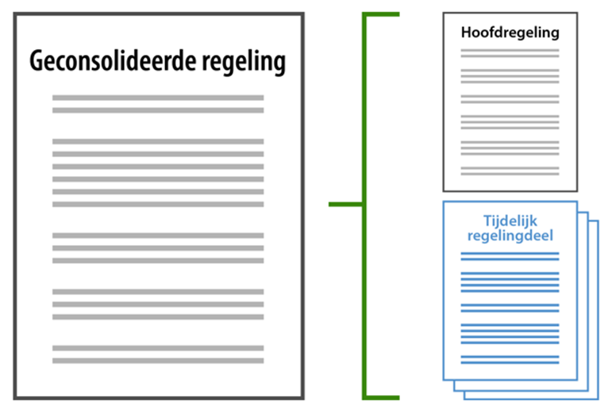Figuur 1Onderdelen geconsolideerde regeling: hoofdregeling en tijdelijk regelingdelen
Een regeling bestaat op deze manier uit één hoofdregeling en nul of meer tijdelijke regelingdelen. Elk deel (de hoofdregeling en ieder tijdelijk regelingdeel) is een apart ‘work’ (een eigenstandig deel) en kan worden beheerd door een ander bevoegd gezag. Elk deel kan worden gewijzigd en heeft dus ook zijn eigen versies. In STOP is het tijdelijk regelingdeel vormgegeven in het tekstmodel RegelingTijdelijkdeel.
De hoofdregeling is het initiële omgevingsplan (de bruidsschat), geconsolideerd met alle wijzigingsbesluiten die de gemeente daarna heeft genomen. Een tijdelijk regelingdeel is een technisch afzonderlijk deel, dat niet wordt geconsolideerd in de hoofdregeling, maar wel samen met de hoofdregeling de geconsolideerde regeling vormt. Ieder tijdelijk regelingdeel kan met wijzigingsbesluiten worden gewijzigd; dan ontstaat een consolidatie van dat tijdelijk regelingdeel.
Ieder tijdelijk regelingdeel begint met een tekstblok met daarin de conditie van het tijdelijk regelingdeel: een beschrijving in woorden van de verhouding tussen dit tijdelijk regelingdeel en de hoofdregeling. Doorgaans zal in de conditie worden bepaald dat de regels in het tijdelijk regelingdeel -daar waar ze afwijken- voorrang hebben op de regels in de hoofdregeling.
Het concept tijdelijk regelingdeel wordt toegepast bij alle verschijningsvormen van het voorbereidingsbesluit, dus niet alleen bij de voorbereidingsbesluiten met meervoudig bronhouderschap (o.g.v. artikel 4.16 Ow), maar ook bij voorbereidingsbesluiten zonder meervoudig bronhouderschap (o.g.v. artikel 4.14 Ow). Bij die laatste categorie voorbereidingsbesluiten voegt het bevoegd gezag met het voorbereidingsbesluit voorbeschermingsregels toe aan het ‘eigen’ omgevingsplan. Er is een aantal redenen voor de keuze om het tijdelijk regelingdeel ook toe te passen bij voorbereidingsbesluiten zonder meervoudig bronhouderschap. Het zorgt voor de raadpleger voor uniformiteit: alle voorbeschermingsregels zijn op dezelfde manier vormgegeven en te benaderen. Verder geldt dat voorbeschermingsregels altijd vervallen. Door ze onder te brengen in het tijdelijk regelingdeel is het technisch eenvoudig om ze niet meer te laten tonen nadat ze zijn vervallen. Na slechts een beperkte handeling zijn de voorbeschermingsregels dan niet meer zichtbaar in DSO-LV. Wanneer de voorbeschermingsregels rechtstreeks zijn opgenomen in de geconsolideerde versie van het omgevingsplan vraagt dat veel meer van plansoftware en administratie. Dan moet immers de volledige verwerking van de voorbeschermingsregels in het omgevingsplan worden teruggedraaid, waarbij eventueel ook nog tussentijdse wijzigingsbesluiten een rol kunnen spelen. Daarom is gekozen voor een oplossing die voor de bevoegde gezagen een zo beperkt mogelijk aantal complicaties met zich meebrengt.
Bij de reactieve interventie wordt het tijdelijk regelingdeel gebruikt om aan een raadpleger van overheid.nl en DSO-LV duidelijk te maken hoe de regels van het omgevingsplan luiden door toedoen van de reactieve interventie. Onderdeel van de reactieve interventie is de opdracht van provincie aan de gemeente om te zorgen voor verwerking van de reactieve interventie in (de hoofdregeling van) het omgevingsplan. Het tijdelijk regelingdeel vanuit een reactieve interventie maakt dus maar heel kort deel uit van de regeling van het omgevingsplan, namelijk tot de gemeente de reactieve interventie in het omgevingsplan heeft verwerkt.
Het tijdelijk regelingdeel waarmee een projectbesluit het omgevingsplan wijzigt bevat permanente regels en verdwijnt dus niet. Daardoor kan er een langdurige situatie ontstaan waarin op een bepaalde locatie een of meer regels in de hoofdregeling in strijd zijn met de regels in het tijdelijk regelingdeel. In de conditie in het tijdelijk regelingdeel is dan uiteraard vastgelegd dat de regels in het tijdelijk regelingdeel voorgaan boven de regels in de hoofdregeling, maar voor een raadpleger is dat een minder inzichtelijke oplossing. Als de gemeente dat onwenselijk vindt, kan zij ervoor kiezen om de regels waarmee een projectbesluit het omgevingsplan heeft gewijzigd, te verwerken in de hoofdregeling van het omgevingsplan. Als dat gedaan is, moet het tijdelijk regelingdeel niet meer getoond worden. De gemeente doet dat door bij de aanlevering van het wijzigingsbesluit waarmee de regels uit het tijdelijk regelingdeel in de hoofdregeling van het omgevingsplan worden verwerkt, ook de intrekking van het tijdelijk regelingdeel aan te leveren.
Ieder afzonderlijk voorbereidingsbesluit, reactieve interventie en projectbesluit leidt tot een afzonderlijk tijdelijk regelingdeel. Er kunnen dus tegelijkertijd voor het grondgebied van één gemeente meerdere tijdelijk regelingdelen zijn, ieder ontstaan uit een afzonderlijk voorbereidingsbesluit, afzonderlijke reactieve interventie of afzonderlijk projectbesluit. Het is dus niet zo dat er per gemeente één tijdelijk regelingdeel is waarin alle reactieve interventies, alle wijzigingen vanuit projectbesluiten en de voorbeschermingsregels van alle genomen voorbereidingsbesluiten, worden opgenomen.
Visueel gemaakt in een kaartbeeld zoals dat in bijvoorbeeld DSO-LV te zien kan zijn, ziet dat eruit als weergegeven in Figuur 2:
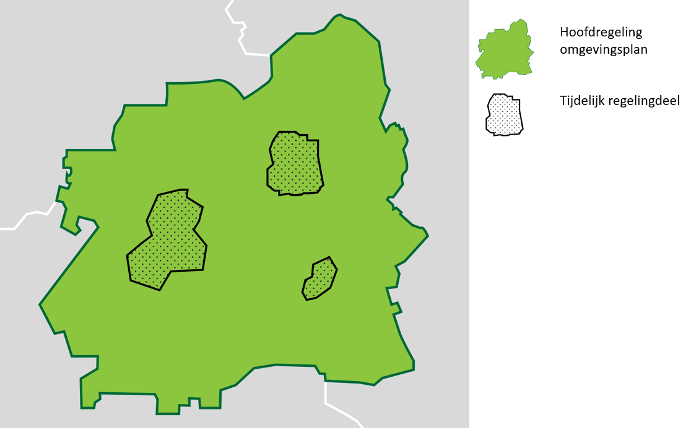Figuur 2Schematisch kaartbeeld van geconsolideerde regeling bestaande uit hoofdregeling en tijdelijk regelingdelen van één gemeente
Opgemerkt wordt dat er toepasbare regels kunnen zijn bij regels uit de hoofdregeling die door een voorbereidingsbesluit of projectbesluit zijn gewijzigd. Als die toepasbare regels in de Vergunningcheck- en Aanvraagmodules van DSO-LV aanwezig blijven, krijgt een raadpleger onjuiste informatie. Wanneer er zowel bij de hoofdregeling als bij het tijdelijk regelingdeel toepasbare regels zijn, krijgt een raadpleger dubbele informatie die deels juist en deels onjuist is. Er zullen bestuurlijke afspraken moeten worden gemaakt hoe hiermee omgegaan moet worden.
2.5 Overgangsrecht en overgangsfase
Na inwerkingtreden van de Omgevingswet vormen Chw-bestemmings- en -inpassingsplannen, regels over archeologisch onderzoek uit de verordening voor archeologische monumentenzorg, de verordening met betrekking tot afvloeiend hemelwater of grondwater, bestemmingsplannen, wijzigingsplannen, uitwerkingsplannen, inpassingsplannen, beheersverordeningen, exploitatieplannen, bepaalde voorbereidingsbesluiten, de kaarten met gegevens over de kwaliteit en functie van de bodem en de verleende ontheffingen om in afwijking van een bestemmingsplan voor een termijn van ten hoogste vijf jaar grond of een ander materiaal op te slaan indien dat met het oog op de voortgang van de bodemsanering noodzakelijk is, tezamen het van rechtswege voor het gehele grondgebied van een gemeente geldende omgevingsplan (artt. 22.1 Ow en 4.6 Invoeringswet Omgevingswet).
Daarnaast zullen ook de regels die het Rijk decentraliseert als onderdeel van de zogenoemde ‘bruidsschat’ onderdeel gaan uitmaken van het omgevingsplan zoals dat geldt ten tijde van de inwerkingtreding van de Omgevingswet (art. 22.2 Ow). Het Rijk draagt er zorg voor dat de regels uit de bruidsschat als onderdeel van het omgevingsplan elektronisch geraadpleegd kunnen worden. Het omgevingsplan van rechtswege en de bruidsschatregels samen vormen het tijdelijke deel van het omgevingsplan.
De verplichting tot vaststelling van een omgevingsplan geldt pas vanaf een bij koninklijk besluit te bepalen tijdstip. Vanaf dat moment worden regels over de fysieke leefomgeving alleen nog in het omgevingsplan gesteld (art. 22.4 Ow).
Voor een uitvoerige beschrijving van de overgangsfase van bestemmingsplan naar een omgevingsplan dat aan alle eisen van de Omgevingswet voldoet, wordt verwezen naar paragraaf 5.2.3 van de Memorie van Toelichting van de Invoeringswet Omgevingswet (Kamerstukken II 2017/18, 34 986, nr. 3, blz. 97 e.v.).
De via ruimtelijkeplannen.nl elektronisch beschikbaar gestelde ruimtelijke plannen blijven via een overbruggingsfunctie in DSO-LV raadpleegbaar als onderdeel van het omgevingsplan van rechtswege. Het bevoegd gezag kan bij het aanleveren voor de bekendmaking van een besluit tot vaststelling of wijziging van het omgevingsplan aangeven of dat besluit een deel van het omgevingsplan van rechtswege vervangt. Het vervallen deel wordt dan in DSO-LV niet meer getoond. De extra informatie die daarvoor moet worden aangeleverd wordt de Pons genoemd. De werking en de technische specificaties zijn beschreven in paragraaf 7.14.
Ook de verplichting op grond van artikel 4.17 over het in overeenstemming brengen van het omgevingsplan met omgevingsvergunningen voor een buitenplanse omgevingsplanactiviteit geldt pas vanaf een bij koninklijk besluit te bepalen tijdstip.
3 Uitgangspunten voor de toepassingsprofielen voor omgevingsdocumenten
In dit hoofdstuk worden de uitgangspunten voor de toepassingsprofielen voor omgevingsdocumenten beschreven. Deze uitgangspunten zijn mede gebruikt als bouwstenen voor de ontwikkeling van de TPOD’s. Deze informatie is met name beschrijvend van aard en dient het doel achtergrond te bieden voor deel B, dat de modellering van het omgevingsplan beschrijft en voortborduurt op de uitgangspunten beschreven in dit hoofdstuk. Dit hoofdstuk beschrijft generiek de toegepaste principes in algemene bewoording. Het is mogelijk dat onderdelen van die teksten voor het omgevingsplan niet van toepassing zijn.
3.1 Proces van totstandkoming en bekendmaking c.q. publicatie van omgevingsdocumenten
Het proces van opstellen van omgevingsdocumenten en daarbij toepassen van de STOP/TPOD-standaard begint intern bij het bevoegd gezag. Waar dat relevant is voor het instrument kan een informeel deel volgen dat bestaat uit participatie en (voor)overleg. Deze informele fase is vormvrij. In het informele deel van het proces kan een informele versie van het omgevingsdocument gebruikt worden die aan de STOP/TPOD-standaard voldoet, maar dat is niet verplicht.
Bij het opstellen van het omgevingsdocument ten behoeve van het formele deel van het proces moet gebruik gemaakt worden van de standaarden STOP en TPOD. De standaarden ondersteunen ook dit opstelproces. Na het opstellen van het omgevingsdocument volgen voor die instrumenten waarvoor dat van toepassing is publicatie en kennisgeving van het ontwerp van het omgevingsdocument en later publicatie of bekendmaking van het besluit op overheid.nl.
Op overheid.nl worden alleen ontwerp- en vastgestelde besluiten gepubliceerd respectievelijk bekendgemaakt. De DSO-viewer toont alleen ontwerpregelingen en geldende regelingen. Vooralsnog zorgt de DSO-keten niet voor het beschikbaar stellen en raadpleegbaar maken van informele versies van de omgevingsdocumenten, zoals concepten en voorontwerpen.
3.2 Omgevingsdocumenten met en zonder regels
Er is onderscheid tussen omgevingsdocumenten die regels bevatten, zoals het omgevingsplan, en omgevingsdocumenten die geen regels bevatten, zoals de omgevingsvisie.
Omgevingsdocumenten die regels bevatten, zullen vanuit de gebruikerstoepassing van het DSO het meest bevraagd worden. Daarom worden aan die omgevingsdocumenten extra eisen gesteld ten behoeve van de bekendmaking en zijn er extra mogelijkheden aan toegevoegd voor bevraging en raadpleging. Om deze reden besteden de standaarden bijzondere aandacht aan deze categorie als het gaat om tekststructuur, annotaties en weergave.
De omgevingsdocumenten zonder regels hebben een ander karakter. Ze hebben een vrijere opzet en kennen geen artikelsgewijze indeling. Hiervoor geldt dan ook een aantal eisen niet die wel voor de omgevingsdocumenten met regels gelden, zoals vaste tekststructuren.
De specificaties voor de tekststructuur zijn opgenomen in hoofdstuk 5.
3.3 Initieel besluit, wijzigingsbesluit en geconsolideerde Regeling
Omgevingsdocumenten komen in principe tot stand door het nemen van een initieel besluit (het eerste besluit waarbij een volledig omgevingsdocument wordt vastgesteld). Bij het omgevingsplan en de waterschapsverordening bestaat het initiële besluit uit een overgangsrechtelijke situatie en/of een regeling van rijkswege. Daarna kunnen de omgevingsdocumenten door wijzigingsbesluiten gewijzigd worden. Voor omgevingsplannen, omgevingsverordeningen, waterschapsverordeningen, AMvB’s, MR en omgevingsvisies geldt de verplichting ze in geconsolideerde vorm beschikbaar te stellen. De LVBB zorgt er voor dat alle achtereenvolgens genomen wijzigingsbesluiten verwerkt worden tot een doorlopende versie van het omgevingsdocument: de geconsolideerde Regeling. In hoofdstuk 4 wordt dit nader beschreven.
3.4 Annoteren
Onder annoteren verstaan we het toevoegen van gegevens aan (onderdelen van) een omgevingsdocument die de inhoud van het omgevingsdocument voor de computer vertalen. Door het annoteren kan een viewer locaties en andere gegevens op een kaart en bij een tekst weergeven. Het annoteren zorgt er ook voor dat een omgevingsdocument op bepaalde kenmerken doorzoekbaar is. In het geval van omgevingsdocumenten met artikelstructuur waarin regels over activiteiten worden gesteld, helpt het annoteren ook bij het verbinden van toepasbare regels, oftewel vragenbomen, aan regels met locaties. De gegevens die bij het annoteren worden toegevoegd worden niet in de voor de mens leesbare tekst weergegeven. Voor degene die dat wil zijn ze wel terug te vinden. Het annoteren van omgevingsdocumenten met OW-objecten is beschreven in hoofdstuk 6. Daar wordt ook van ieder OW-object aangegeven wat het doel is van die annotatie, met andere woorden: wat levert de extra inspanning van het annoteren op aan meerwaarde voor gebruiker en opsteller?
3.5 Waardelijsten
Een waardelijst is een collectie van waarden die gebruikt kunnen worden bij het annoteren. Bij diverse attributen van annotaties hoort een waardelijst met vooraf gedefinieerde waarden. Waardelijsten zijn er in twee vormen: limitatieve waardelijsten en uitbreidbare waardelijsten. In de toepassingsprofielen voor de omgevingsdocumenten bedoelen we daar het volgende mee:
limitatieve waardelijst: een lijst met vooraf gedefinieerde waarden waaruit gekozen moet worden. Deze waardelijst wordt centraal beheerd en kan alleen beheermatig gewijzigd worden, aangezien een wijziging direct effect heeft op de werking en functionaliteiten van de applicaties van DSO-LV en LVBB;
uitbreidbare waardelijst: een lijst met vooraf gedefinieerde waarden. Wanneer de gewenste waarde op de waardelijst voorkomt, wordt die gebruikt. De bedoeling is dat, als de gewenste waarde niet op de waardelijst voorkomt, het bevoegd gezag een eigen waarde kan definiëren. Het stelsel ondersteunt uitbreidbare waardelijsten echter nog niet. Daarom is aan de uitbreidbare waardelijsten toegevoegd de waarde ‘Nog toe te voegen’. Die waarde kan worden gebruikt wanneer het bevoegd gezag een eigen waarde zou willen gebruiken.
De waardelijsten IMOW zijn vastgelegd in de Stelselcatalogus van het DSO-LV.
In hoofdstuk 7 is per objecttype is aangegeven voor welke attributen een waardelijst geldt en of deze limitatief of uitbreidbaar is.
3.6 Presentatiemodel
De inhoud van een omgevingsdocument dient kenbaar te zijn. Daarom moet een omgevingsdocument niet alleen machineleesbaar worden aangeboden, maar is ook een voor de mens te interpreteren weergave noodzakelijk. Uitgangspunt is dat de tekst, de bijbehorende Locaties in combinatie met de annotaties met OW-objecten en de waarden die normen op de verschillende Locaties hebben zo overzichtelijk worden weergegeven dat de raadpleger ze kan interpreteren.
Het Presentatiemodel richt zich op de mensleesbare vorm van het weergeven. Onder weergeven verstaan we het weergeven en visualiseren van de inhoud van een regeling in een voorgedefinieerde vorm (gebruik van symbolen, kleur, lijndikte, arcering, karakterset) conform een afgesproken standaard. Het Presentatiemodel beschrijft daarbij de wijze van weergave van annotaties met OW-objecten op een kaart.
De mensleesbare weergave van Locaties maakt gebruik van de annotaties met OW-objecten, waardelijsten en symboolcodes. Een symboolcode die is toegekend aan een waarde uit de waardelijsten IMOW bepaalt hoe Locaties, de bijbehorende annotaties en waarden op een kaartbeeld worden weergegeven. De tabel geeft de symbolisatie waarmee een annotatie wordt weergegeven. Hierbij wordt een waarde uit een limitatieve waardelijst aan de bijbehorende, afgesproken, symboolcode gekoppeld. Gebruik van de symboolcode uit de waardelijsten IMOW leidt tot een standaardweergave, ook wel geharmoniseerde weergave genoemd. Ieder OW-objecttype heeft daarbij, als het is gekoppeld aan een Gebied, een eigen symbolisatiestijl. Voorbeelden zijn: Het objecttype Activiteit wordt weergegeven met verschillende vormen van arceringen en rasters in verschillende kleuren, gecombineerd met verschillende randlijnstijlen. Het objecttype Gebiedsaanwijzing wordt weergegeven met een volledige vlakvulling in verschillende kleuren, gecombineerd met verschillende randlijnstijlen en verschillende mate van transparantie. Voor Lijnen en Punten is een heel scala aan symbolisaties beschikbaar, met variaties in kleur, lijnsoort, vorm, grootte en dikte. Voor Normwaarden zijn er in de symbolenbibliotheek kleurenranges beschikbaar.
Figuur 3 laat de werking van de standaardweergave zien voor een annotatie met een Gebiedsaanwijzing.
Figuur 3Weergave op de kaart door annoteren met object, type en groep, in combinatie met symboolcode uit waardelijst IMOW, toepassing standaardweergave
Figuur 3 laat zien dat een tekst wordt gekoppeld aan een Locatie. Om de Locatie herkenbaar op een kaart weer te geven is deze geannoteerd met een Gebiedsaanwijzing, in dit geval van het type Natuur. Het bevoegd gezag heeft zelf een naam gekozen voor de Gebiedsaanwijzing (in dit geval ‘Gelders Natuurnetwerk’) en heeft aangegeven tot welke groep die specifieke Gebiedsaanwijzing hoort. De groep wordt gekozen uit de waardelijst ‘Natuurgroep’ die hoort bij de Gebiedsaanwijzing van het type Natuur. In het voorbeeld is uit de waardelijst de waarde ‘Natuurnetwerk Nederland’ gekozen. De groep is het onderdeel van de annotatie dat bepaalt hoe de Locatie op de kaart wordt weergegeven. Alle waarden voor groep van de waardelijsten IMOW hebben een symboolcode die bepaalt hoe de groep wordt weergegeven: de kleur, arcering, mate van transparantie en lijnstijl. Voor het bevoegd gezag is het voldoende om aan te geven welke groep van toepassing is. Een viewer kan dan geautomatiseerd met behulp van de symboolcode uit de waardelijsten IMOW de Locatie met de juiste standaardsymbolisatie weergeven.
Het bevoegd gezag heeft twee methoden om zelf invloed uit te oefenen op de weergave van objecten, Locaties en waarden op een kaart. De eerste methode is door te kiezen voor een eigen, specifieke symbolisatie in plaats van de standaardweergave. Dit maakt het bijvoorbeeld mogelijk om de activiteiten ‘het exploiteren van een discotheek’ en ‘het exploiteren van daghoreca’ ieder op een eigen manier weer te geven in plaats van met de standaardweergave die hoort bij de Activiteitengroep ‘exploitatieactiviteit horeca’. Figuur 4 laat daarvan (enigszins versimpeld) een voorbeeld zien. IMOW heeft daarvoor het objecttype SymbolisatieItem. Met SymbolisatieItem kan het bevoegd gezag een eigen, specifieke symbolisatie geven aan ActiviteitLocatieaanduiding, Normwaarde en (de verschillende typen) Gebiedsaanwijzing.
Figuur 4Weergave op de kaart door annoteren, links toepassing standaardweergave door object en groep, rechts eigen weergave door keuze symboolcode uit symbolenbibliotheek
Figuur 4 laat het verschil zien tussen de toepassing van de standaardweergave en de eerste methode voor het bevoegd gezag om zelf invloed uit te oefenen op de weergave, namelijk door te kiezen voor een eigen, specifieke symbolisatie. Het bovenste deel van de afbeelding laat, net als in Figuur 3 maar dan voor een activiteit, zien dat een tekst wordt gekoppeld aan een Locatie, de activiteit een naam krijgt en een groep wordt gekozen. Het onderste deel van de figuur laat aan de linkerkant de toepassing van de standaardweergave zien. Dit is al beschreven in de toelichting op Figuur 3. De rechterkant toont de toepassing van de eigen, specifieke symbolisatie. Het bevoegd gezag kiest uit de symbolenbibliotheek de symboolcode die het beste past bij de manier waarop het het object wil weergeven. In dat geval gaat de specifieke symbolisatie boven de weergave-werking van de groep.
De tweede methode die het bevoegd gezag heeft om zelf invloed uit te oefenen op de weergave is het samenstellen van kaarten en kaartlagen. Daarmee geeft het bevoegd gezag zelf aan dat bepaalde informatie, of een set van informatie, op een kaart of kaartlaag wordt weergegeven. IMOW kent hiervoor de objecten Kaart en Kaartlaag, die in de paragrafen 7.11 en 7.12 zijn beschreven.
3.7 Metadata
Informatie en specificaties voor de metadata die moeten worden meegeleverd bij de aanlevering voor de bekendmaking c.q. publicatie van omgevingsdocumenten zijn te vinden in de STOP-documentatie.
3.8 Van plan tot publicatie
3.8.1 Het aanleverproces
Het bevoegd gezag levert via het digitale kanaal het digitale besluit aan via het bronhouderkoppelvlak. Het digitale besluit bestaat uit een generiek formeel deel met daarin de artikelen c.q. beleidstekst en geografische informatieobjecten (verder afgekort tot GIO, zie hiervoor paragraaf 6.1.2.1) en een Omgevingswetdeel met specifieke objecten vanuit dit domein (verder: OW-objecten, zie hiervoor hoofdstuk 7). In het geval van een wijzigingsbesluit levert het bevoegd gezag de consolidatie-instructies ten behoeve van het consolideren van het wijzigingsbesluit in de regeling. Beide delen vormen een gevalideerd consistent geheel. De LVBB verzorgt de publicatie van het formele deel van het besluit in het digitale publicatieblad van het bevoegde gezag op officiëlebekendmakingen.nl en consolideert het besluit in de regeling. De OW-objecten worden gedistribueerd naar DSO-LV ten behoeve van het Omgevingsloket.
Figuur 5Aanleverproces
3.8.2 Raadplegen
3.8.2.1 Raadplegen in het officiële publicatieblad
Op officielebekendmakingen.nl wordt het besluit formeel bekend gemaakt in het digitale publicatieblad van het bevoegde gezag. De authentieke tekst van het besluit wordt in PDF-formaat weergegeven en er is een zogeheten landingspagina voor de informatieobjecten. Tevens is er een web-versie van het besluit.
Daarnaast worden de consolidatie-instructies verwerkt in de geldende regeling van dat moment. Dit resulteert in een documentgerichte weergave van de regeling van waaruit de informatieobjecten kunnen worden benaderd. De informatieobjecten worden afzonderlijk getoond in een interactieve viewer en kunnen vanuit daar ook worden gedownload.
Raadplegen is alleen mogelijk per omgevingsdocument of regeling en dus ook alleen van één bevoegd gezag. Er is geen integraal overzicht van alle regels voor de leefomgeving.
3.8.2.2 Raadplegen in DSO-LV
DSO-LV ontvangt de geconsolideerde regeling met de OW-objecten. In het Omgevingsloket zijn diverse functies beschikbaar voor de gebruiker. Het biedt de mogelijkheid tot het oriënteren op de integrale regels of het integrale beleid over de fysieke leefomgeving via de kaart. Met een klik op de kaart zijn de daar geldende regels en het geldende beleid te raadplegen. De locaties uit de diverse regelingen worden via een legenda gesymboliseerd op de kaart. De tekst en kaart geven ook selectiemogelijkheden, bijvoorbeeld het tonen van regeltekst en locaties voor een specifieke activiteit, het uitsluitend tonen van regels die voor iedereen gelden of het tonen van beleid over een specifiek beleidsaspect met de bijbehorende locaties. De getoonde tekst komt uit de geconsolideerde Regelingen vanuit de officiële publicatiebladen.
Tot slot vormen, in omgevingsdocumenten met artikelstructuur waarin regels over activiteiten worden gesteld, de OW-objecten Activiteit en ActiviteitLocatieaanduiding de basis voor de toepasbare regels (vragenbomen) in het Omgevingsloket. De locaties zijn gekoppeld aan de activiteiten in de vragenboom. De vragenbomen zelf worden via een apart kanaal aangeleverd.
B Modellering van het omgevingsplan
Dit deel beschrijft de modellering van het omgevingsplan en voorziet in de vertaling van (een deel van) de kenmerken van de tabellen uit hoofdstuk 2 naar het model dat de kenmerken structureert en aan elkaar relateert. Het model legt uit hoe het omgevingsplan zodanig gestructureerd wordt, dat het machineleesbaar en op een gestandaardiseerde manier uitwisselbaar wordt.
Hoofdstuk 4 beschrijft de vormgeving van Besluit en Regeling bij het omgevingsplan. In hoofdstuk 5 wordt de toepassing van de STOP-tekststructuren op het omgevingsplan beschreven. Hoofdstuk 6 geeft een inleiding op het Informatiemodel Omgevingswet (IMOW). Hoofdstuk 7 beschrijft in detail het annoteren met OW-objecten van het omgevingsplan. Hoofdstuk 8 licht het wijzigen van omgevingsdocumenten met wijzigingsbesluiten toe. In hoofdstuk 9 komen de resterende modelleringsaspecten aan de orde.
IMOW en de toepassing daarvan vormen een domeinspecifieke toepassing van STOP. Om een omgevingsdocument op te stellen en juridisch juist te kunnen bekendmaken is het uiteraard ook nodig om te voldoen aan de specificaties van STOP. Die zijn voor zover nodig en mogelijk in dit toepassingsprofiel beschreven. Voor het overige wordt verwezen naar de STOP-standaard.
4 De vormgeving van Besluit en Regeling bij het omgevingsplan
4.1 Besluit, juridisch geldende versie en (geconsolideerde) Regeling van het omgevingsplan
4.1.1 Besluit in de juridische context
Het samenstel van Awb, Bekendmakingswet en Omgevingswet maakt, voor besluiten die niet tot een of meer belanghebbenden zijn gericht en die zijn voorbereid met toepassing van afdeling 3.4 Awb, onderscheid tussen het (ontwerp)besluit en de op dat (ontwerp)besluit betrekking hebbende stukken. Met het (ontwerp)besluit wordt hier bedoeld dat wat het bestuursorgaan besluit (of voornemens is te besluiten) en wat het bestuursorgaan vaststelt (c.q. gaat vaststellen). De op het (ontwerp)besluit betrekking hebbende stukken zijn stukken die het bestuursorgaan gebruikt bij de onderbouwing van het (ontwerp)besluit, maar niet vaststelt. Een voorbeeld: als de gemeenteraad het besluit neemt tot wijziging van het omgevingsplan, stelt hij de wijziging van het omgevingsplan vast. Rapportages van onderzoeken die zijn uitgevoerd ter onderbouwing van die wijziging zijn op het (ontwerp)besluit betrekking hebbende stukken. De gemeenteraad stelt deze stukken niet vast, maar betrekt ze bij het nemen van het besluit.
Het (ontwerp)besluit moet gepubliceerd c.q. bekend gemaakt worden door mededeling: plaatsing van de volledige inhoud van het (ontwerp)besluit in het publicatieblad van het bevoegd gezag[11] Artikelen 3:11 lid 1 en 3:44 lid 2 Awb en artikel 12 Bekendmakingswet . De op het (ontwerp)besluit betrekking hebbende stukken moeten ter inzage gelegd worden. Deze terinzagelegging geschiedt zowel op elektronische wijze als op een door het bestuursorgaan aan te wijzen locatie. De (elektronische) terinzagelegging vindt niet plaats in de publicatiebladen.
4.1.2 Het juridische besluit in de informatiekundige context van de STOP/TPOD-standaard
De LVBB moet kunnen bepalen wat in het publicatieblad gepubliceerd dan wel bekendgemaakt moet worden (namelijk alles wat behoort tot het in de vorige paragraaf beschreven besluit in de juridische context) en dat wat geconsolideerd moet worden. Daartoe maakt de STOP/TPOD-standaard onderscheid tussen Besluit en Regeling.
De Regeling bevat de juridische regels c.q. beleid- of realisatietekst en de geografische begrenzingen van de gebieden waar de regels c.q. de beleid- of realisatietekst gelden, die door het bestuursorgaan worden vastgesteld, gewijzigd of ingetrokken. Voorbeelden zijn het omgevingsplan en de omgevingsvisie. Het Besluit bevat de tekst waarmee het bestuursorgaan bepaalt wat er gebeurt bij de bekendmaking: het stelt een initiële regeling vast, het wijzigt een regeling, het trekt een regeling in etc. Het bestuursorgaan bepaalt ook wanneer die vaststelling, wijziging of intrekking in werking treedt. Onderdeel van het Besluit is dus ook de nieuwe regeling of de wijziging van de regeling. Voorbeelden zijn het raadsbesluit met alle bijbehorende onderdelen waarmee de gemeenteraad een wijziging van het omgevingsplan vaststelt en het statenbesluit met alle bijbehorende onderdelen waarmee provinciale staten de omgevingsvisie vaststellen.
Het Besluit wordt, met inbegrip van de inhoud of wijziging van de Regeling die onderdeel is van het Besluit, bekendgemaakt in het publicatieblad van het bevoegd gezag op officielebekendmakingen.nl. De juridisch geldende versie van het omgevingsplan waaraan rechten en plichten kunnen worden ontleend, bestaat uit de verzameling van de nieuwe regeling en alle daarna vastgestelde wijzigingen van die regeling. Om die verzameling op een voor de mens leesbare en begrijpelijke manier weer te geven is er ook de geconsolideerde Regeling. Een (Toestand van een) geconsolideerde Regeling bevat de inhoud van een regeling zoals die geldt op een bepaald moment. De geconsolideerde Regeling wordt afgeleid uit de initiële regeling waarin steeds de (in werking getreden) wijzigingen uit de wijzigingsbesluiten zijn verwerkt tot een doorlopende versie van het omgevingsplan. De geconsolideerde Regeling vormt de basis voor de weergave van de regeling in de nationale respectievelijk lokale regelingenbank op overheid.nl én van de versie van het omgevingsplan die in DSO-LV te raadplegen is.
Bij Besluit en Regeling kunnen bijlagen worden gevoegd die integraal onderdeel zijn van de tekst van Besluit of Regeling maar om redenen van leesbaarheid e.d. niet in het lichaam van Besluit of Regeling kunnen worden opgenomen. Rapportages van onderzoeken die zijn uitgevoerd ter onderbouwing van het nemen van het juridische besluit als bedoeld in de vorige paragraaf zijn op het besluit betrekking hebbende stukken. Het zijn geen bijlagen bij Besluit of Regeling als bedoeld in de STOP/TPOD-standaard. Ze worden niet in de publicatiebladen gepubliceerd maar ter inzage gelegd. Zie voor de elektronische terinzagelegging van deze stukken paragraaf 5.4.3.
4.2 Modellen voor Besluit en Regeling en tekststructuren
STOP schrijft voor hoe een officiële publicatie vormgegeven en aangeleverd moet worden om te kunnen worden bekendgemaakt of gepubliceerd en om te kunnen worden geconsolideerd. Onderdeel van die voorschriften van STOP zijn de modellen voor Besluit en Regeling en de tekststructuren. Beide spelen een belangrijke rol bij het opstellen en aanleveren van omgevingsdocumenten. De TPOD-standaard geeft daarvan per type omgevingsdocument een specificatie: welk model moet worden gebruikt en hoe moet dat model worden toegepast.
4.2.1 Modellen voor Besluit en Regeling
Er zijn modellen voor het Besluit en modellen voor de Regeling. De STOP/TPOD-standaard kent voor het Besluit de modellen BesluitKlassiek en BesluitCompact. Voor de Regeling zijn dat de modellen RegelingKlassiek, RegelingCompact, RegelingVrijetekst en RegelingTijdelijkdeel. RegelingKlassiek is uitsluitend bedoeld voor de instrumenten met regels van het Rijk. RegelingCompact is het model voor de decentrale regels, oftewel de instrumenten met regels van gemeente, waterschap en provincie, maar kan ook voor instrumenten met regels van het Rijk gebruikt worden. Het Rijk heeft dus een keuzemogelijkheid tussen RegelingKlassiek en RegelingCompact, waarbij wordt opgemerkt dat als het omgevingsdocument eenmaal is vormgegeven conform een van de modellen, er niet op een later moment in de levensloop van datzelfde omgevingsdocument zomaar kan worden overgestapt op het andere model. RegelingVrijetekst wordt gebruikt voor alle instrumenten met Vrijetekststructuur. RegelingTijdelijkdeel tot slot is het model dat moet worden gebruikt wanneer een tijdelijk regelingdeel wordt toegevoegd aan de geconsolideerde regeling van omgevingsplan of omgevingsverordening: bij een voorbereidingsbesluit, een reactieve interventie en een projectbesluit als dat een of meer omgevingsplannen wijzigt met regels die nodig zijn voor het uitvoeren en in werking hebben of in stand houden van het project. BesluitKlassiek wordt alleen in combinatie met RegelingKlassiek gebruikt. BesluitCompact wordt gebruikt als besluitmodel bij RegelingCompact, RegelingVrijetekst en RegelingTijdelijkdeel. In het vervolg van dit hoofdstuk worden alleen de modellen beschreven die voor het omgevingsplan van toepassing zijn.
De modellen voor Regeling en Besluit die in het geval van het omgevingsplan gebruikt moeten worden, zijn in detail beschreven in paragraaf 4.3.
4.2.2 Tekststructuren
De STOP/TPOD-standaard onderscheidt twee tekststructuren:
Artikelstructuur: de tekststructuur voor het Lichaam[12] Lichaam van de regeling als bedoeld in Aanwijzing 3.53 van de Aanwijzingen voor de regelgeving en in STOP van een Regeling als dat is opgebouwd uit één of meer artikelen;
Vrijetekststructuur:
de tekststructuur voor het Lichaam van een Regeling van juridisch authentieke documenten die geen artikelen bevat;
de tekststructuur voor onderdelen van Besluit en Regeling buiten het Lichaam.
Opgemerkt wordt dat er ook in het Lichaam van een Besluit artikelen voorkomen. Deze artikelen vallen echter niet onder het begrip Artikelstructuur. Dat de elementen van de Vrijetekststructuur worden gebruikt buiten het Lichaam geldt zowel voor omgevingsdocumenten met Artikelstructuur als voor omgevingsdocumenten met Vrijetekststructuur, en zowel voor Besluit als voor Regeling.
In het vervolg van dit hoofdstuk is vastgelegd welke modellen voor Besluit en Regeling gebruikt moeten worden en welke bijzondere bepalingen gelden voor het omgevingsplan. In hoofdstuk 5 zijn de STOP-tekststructuren en de toepassing daarvan op het omgevingsplan beschreven.
4.3 De vormgeving van Besluit en Regeling bij omgevingsdocumenten met Artikelstructuur
4.3.1 Model
4.3.1.1 Toelichting
Bij het opstellen en wijzigen van omgevingsdocumenten werkt het bevoegd gezag in de eigen plansoftware aan het omgevingsdocument in Regeling-vorm: de volledige inhoud van het omgevingsdocument. Met de volledige inhoud wordt bedoeld: alle artikelen (en boven- en onderliggende tekstelementen), alle informatieobjecten en alle OW-informatie.
Voorafgaand aan de terinzagelegging van een ontwerpbesluit en voorafgaand aan (en eventueel ook na) het nemen van een definitief besluit genereert de software van het bevoegd gezag uit die Regeling een Besluit. In het geval van een besluit tot het instellen van een nieuwe Regeling genereert de software een Besluit met daarin de volledige nieuwe Regeling, in het geval van een wijzigingsbesluit genereert de software een Besluit dat in renvooiweergave de wijzigingen bevat van de bestaande Regelingversie naar de nieuwe Regelingversie, oftewel een overzicht van de wijzigingen die het besluit aanbrengt in de bestaande Regeling. Naast het onderdeel met de nieuwe Regeling of de wijzigingen in de Regeling, bevat het Besluit ook andere onderdelen, zoals de ondertekening, motivering en bijlagen. Het bevoegd gezag levert het Besluit aan de LVBB aan. De LVBB zorgt ervoor dat het aangeleverde Besluit bekend gemaakt wordt en genereert met behulp van het Besluit een nieuwe RegelingVersie, oftewel een nieuwe geconsolideerde Regeling. Om het de LVBB mogelijk te maken om die verwerkingen te doen stelt de STOP/TPOD-standaard eisen aan de vormgeving van de tekst van Besluit en Regeling. Die eisen zijn vastgelegd in modellen voor Besluit en modellen voor Regeling. Zoals hiervoor al gezegd kent de STOP/TPOD-standaard twee modellen voor documenten met Artikelstructuur: het compacte model (RegelingCompact en BesluitCompact) en het klassieke model (RegelingKlassiek en BesluitKlassiek).
Het model voor het Besluit is beschreven in paragraaf 4.3.2. Het model voor de Regeling is het onderwerp van paragraaf 4.3.3. In de paragrafen Toelichting en Voorbeeld bij beide worden tekstvoorbeelden gegeven. Die (tekst)voorbeelden zijn bedoeld om voor verschillende omgevingsdocumenten met artikelstructuur de toepassing van die modellen toe te lichten. Ze hebben niet steeds betrekking op het omgevingsdocument dat onderwerp is van dit toepassingsprofiel.
4.3.1.2 Norm
Op het omgevingsplan moet het compacte model voor Besluit en Regeling worden toegepast: BesluitCompact en RegelingCompact.
4.3.2 Besluit
In het Besluit staat wat het bestuursorgaan vaststelt (of wijzigt), met inbegrip van de procedure van totstandkoming en de motivering van het besluit. Het Besluit wordt, met inbegrip van de inhoud of wijziging van de Regeling die onderdeel is van het Besluit, bekendgemaakt op officielebekendmakingen.nl.
In paragraaf 4.3.2.1 is de norm voor de toepassing van het STOP-model BesluitCompact op het omgevingsplan vastgelegd: welke elementen moeten respectievelijk mogen worden gebruikt en hoe vaak kunnen ze voorkomen. Paragraaf 4.3.2.2 geeft een uitgebreide toelichting op de elementen van het Besluit, waaronder ook tips over het al dan niet gebruikelijk zijn van een bepaald element. In paragraaf 4.3.2.3 worden norm en toelichting concreet gemaakt met een voorbeeld.
Opgemerkt wordt dat de STOP-modellen voor Besluit en Regeling XML-modellen zijn. Met de in de volgende paragrafen genoemde elementen worden dus (STOP-)XML-elementen bedoeld.
Omwille van de leesbaarheid en herkenbaarheid zijn de namen van de ‘hoofdelementen’ vetgedrukt en die van de ‘subelementen’ schuingedrukt. De ‘hoofdelementen’ zijn genummerd om er in de toelichting en het voorbeeld in de volgende paragrafen naar te kunnen verwijzen.
4.3.2.1 Norm
Een besluit tot vaststelling of wijziging van het omgevingsplan moet worden opgesteld en aangeleverd overeenkomstig het model BesluitCompact. BesluitCompact bevat de volgende elementen:
RegelingOpschrift: STOP-element dat de officiële titel van het Besluit bevat. Verplicht element. Komt 1 keer voor.
Aanhef: STOP-element dat een blok tekst aan het begin van een Besluit bevat. Optioneel element. Komt 0 of 1 keer voor.
Lichaam: STOP-element dat het lichaam (oftewel het dictum) van het Besluit bevat: dat wat het bestuursorgaan vaststelt of wijzigt. Verplicht element. Komt 1 keer voor. Bestaat voor zowel initieel besluit (besluit dat een regeling instelt) als wijzigingsbesluit (besluit dat een regeling wijzigt) uit de volgende elementen:
WijzigArtikel: STOP-element dat beschrijft wat wordt vastgesteld of gewijzigd en verwijst naar de WijzigBijlage. Verplicht element. Komt ten minste 1 keer voor. Ieder WijzigArtikel moet en mag alleen de volgende onderdelen bevatten:
Kop: STOP-element dat de Kop bevat. Verplicht element. Komt 1 keer voor. Bevat ten minste één van de Kopelementen Label, Nummer en Opschrift; ieder van deze onderdelen komt 0 of 1 keer voor.
Wat: STOP-element dat bevat:
een tekstuele omschrijving van dat wat het bestuursorgaan vaststelt (in het geval van een initieel besluit) respectievelijk wijzigt (in het geval van een wijzigingsbesluit); en
een verwijzing, zowel tekstueel als met IntRef, naar de WijzigBijlage.
Artikel: STOP-element dat een regulier artikel bevat. Verplicht element. Komt ten minste 1 keer voor. Ieder Artikel moet de volgende onderdelen bevatten:
Kop: STOP-element dat de Kop bevat. Verplicht element. Komt 1 keer voor. Bevat ten minste één van de Kopelementen Label, Nummer en Opschrift; ieder van deze onderdelen komt 0 of 1 keer voor.
Verplichte keuze tussen Lid en Inhoud.
Sluiting: STOP-element dat het Besluit afsluit. Optioneel element. Komt 0 of 1 keer voor. De tekst van de Sluiting staat in een of meer reguliere Alinea’s. Ook kan gebruik gemaakt worden van de optionele elementen Slotformulering, Dagtekening en Ondertekening.
WijzigBijlage: STOP-element dat voor een initieel besluit de inhoud van de instelling van de Regeling en voor een wijzigingsbesluit de wijzigingen van een versie van de Regeling bevat. Verplicht element. Komt ten minste 1 keer voor. Een WijzigBijlage bevat de volgende elementen:
Kop: STOP-element dat de Kop bevat. Verplicht element. Komt 1 keer voor. Bevat ten minste één van de onderdelen Label, Nummer en Opschrift; ieder van deze onderdelen komt 0 of 1 keer voor. Optioneel kan het element Subtitel worden toegevoegd.
Een verplichte keuze uit:
RegelingCompact: STOP-element dat de volledige tekst van de initiële regeling bevat. Onder voorwaarde verplicht element: alleen te gebruiken bij een initieel besluit; is dan verplicht en komt dan 1 keer voor.
RegelingMutatie: STOP-element dat de wijzigingen tussen twee RegelingVersies bevat. Onder voorwaarde verplicht element: alleen te gebruiken bij een wijzigingsbesluit; is dan verplicht en komt dan 1 keer voor.
Bijlage: STOP-element dat een bijlage (in dit geval bij het Besluit) bevat. Optioneel element. Komt zo vaak voor als gewenst. Hoofdregel is dat een bijlage is vormgegeven als onderdeel van de tekst in STOP-XML. In bijzondere gevallen is het toegestaan een bijlage als PDF-document aan te leveren. Een Bijlage die in STOP-XML wordt opgesteld, bevat de volgende elementen:
Kop: STOP-element dat de Kop bevat. Verplicht element. Komt 1 keer voor. Bevat ten minste één van de Kopelementen Label, Nummer en Opschrift; ieder van deze onderdelen komt 0 of 1 keer voor. Optioneel kan het element Subtitel worden toegevoegd.
De inhoud van de Bijlage, opgebouwd met Divisie (optioneel element) en Divisietekst (verplicht element). Divisie en Divisietekst moeten voldoen aan de specificaties voor de Vrijetekststructuur in paragraaf 5.3.
Sluiting: STOP-element dat de Bijlage afsluit. Optioneel element. Komt 0 of 1 keer voor. De tekst van de Sluiting staat in een of meer reguliere Alinea’s. Ook kan gebruik gemaakt worden van de optionele elementen Slotformulering, Dagtekening en Ondertekening.
Een bijlage mag alleen als PDF-document worden aangeleverd als het voor het bevoegd gezag redelijkerwijs niet mogelijk is om de bijlage als onderdeel van de tekst in STOP-XML op te stellen én als de bijlage informatie bevat die daadwerkelijk als bijlage gezien kan worden. Het PDF-document moet dan voldoen aan de eisen van PDF/A-1a of PDF/A-2a, moet worden gemodelleerd als informatieobject en mag uitsluitend een deel van de tekst bevatten dat daadwerkelijk als bijlage gezien kan worden.
Toelichting: STOP-element dat de toelichting op het Besluit bevat. Optioneel element. Komt 0 of 1 keer voor. Een Toelichting als onderdeel van het Besluit bevat de volgende elementen:
Kop: STOP-element dat de Kop bevat. Verplicht indien de -hierna beschreven- aanbevolen eenvoudige modellering voor de toelichting wordt gebruikt. Onder voorwaarde verplicht element indien de gestructureerde modellering voor de toelichting wordt gebruikt: verplicht indien binnen het element Toelichting zowel het element AlgemeneToelichting als het element ArtikelgewijzeToelichting voorkomt, komt dan 1 keer voor; optioneel indien binnen het element Toelichting slechts één van de elementen AlgemeneToelichting en ArtikelgewijzeToelichting voorkomt, komt dan 0 of 1 keer voor. Bevat ten minste één van de Kopelementen Label, Nummer en Opschrift; ieder van deze onderdelen komt 0 of 1 keer voor. Optioneel kan het element Subtitel worden toegevoegd.
De inhoud van de Toelichting, opgebouwd met Divisie (optioneel element) en Divisietekst (verplicht element Divisie en Divisietekst moeten voldoen aan de specificaties voor de Vrijetekststructuur in paragraaf 5.3. Dit is de aanbevolen modellering voor een Toelichting op het Besluit. Geadviseerd wordt om voor de Toelichting op het Besluit deze eenvoudige modellering te gebruiken en niet de hierna beschreven onderverdeelde modellering.
Een onderverdeling van de Toelichting in het geval van een toelichting die zowel een algemeen deel als een artikelsgewijs deel heeft. Aanbevolen wordt om voor een Toelichting op het Besluit niet deze gestructureerde modellering te gebruiken maar de hiervoor beschreven eenvoudige modellering. Indien toch gebruikt bestaat de toelichting uit de volgende elementen:
AlgemeneToelichting: STOP-element dat de algemene toelichting bevat. Optioneel element. Komt 0 of 1 keer voor. Een AlgemeneToelichting bevat de volgende elementen:
Kop: STOP-element dat de Kop bevat. Verplicht element. Komt 1 keer voor. Bevat ten minste één van de Kopelementen Label, Nummer en Opschrift; ieder van deze onderdelen komt 0 of 1 keer voor. Optioneel kan het element Subtitel worden toegevoegd.
De inhoud van de AlgemeneToelichting, opgebouwd met Divisie (optioneel element) en Divisietekst (verplicht element). Divisie en Divisietekst moeten voldoen aan de specificaties voor de Vrijetekststructuur in paragraaf 5.3.
ArtikelgewijzeToelichting: STOP-element dat de artikelsgewijze toelichting bevat. Optioneel element. Komt 0 of 1 keer voor. Een ArtikelgewijzeToelichting bevat de volgende elementen:
Kop: STOP-element dat de Kop bevat. Verplicht element. Komt 1 keer voor. Bevat ten minste één van de Kopelementen Label, Nummer en Opschrift; ieder van deze onderdelen komt 0 of 1 keer voor. Optioneel kan het element Subtitel worden toegevoegd.
De inhoud van de ArtikelgewijzeToelichting, opgebouwd met Divisie (optioneel element) en Divisietekst (verplicht element). Divisie en Divisietekst moeten voldoen aan de specificaties voor de Vrijetekststructuur in paragraaf 5.3.
Sluiting: STOP-element dat de Toelichting afsluit. Optioneel element. Komt 0 of 1 keer voor. De tekst van de Sluiting staat in een of meer reguliere Alinea’s. Ook kan gebruik gemaakt worden van de optionele elementen Slotformulering, Dagtekening en Ondertekening.
Bijlage: STOP-element dat een bijlage (in dit geval bij de Toelichting op het Besluit) bevat. Optioneel element. Komt zo vaak voor als gewenst. Een bijlage bij de Toelichting wordt niet geconsolideerd. Voor een bijlage bij de Toelichting gelden dezelfde eisen als voor het ‘hoofdelement’ Bijlage.
ArtikelgewijzeToelichting: STOP-element dat de artikelsgewijze toelichting, oftewel de toelichting op de artikelen in het Besluit, bevat. Optioneel element. Komt 0 of 1 keer voor. Mogelijkheid die STOP biedt voor een toelichting die uitsluitend een toelichting op de artikelen in het besluit is. Dit element zal in een toekomstige versie van de standaard vervallen; gebruik daarvan wordt daarom nu afgeraden. Indien toch gebruikt gelden voor deze ArtikelgewijzeToelichting dezelfde eisen als voor de ArtikelgewijzeToelichting binnen het element Toelichting onder 7.
Motivering: STOP-element dat de motivering van het Besluit bevat. Optioneel element. Komt 0 of 1 keer voor. Een Motivering bevat de volgende elementen:
Kop: STOP-element dat de Kop bevat. Verplicht element. Komt 1 keer voor. Bevat ten minste één van de Kopelementen Label, Nummer en Opschrift; ieder van deze onderdelen komt 0 of 1 keer voor. Optioneel kan het element Subtitel worden toegevoegd.
De inhoud van de Motivering, opgebouwd met Divisie (optioneel element) en Divisietekst (verplicht element). Divisie en Divisietekst moeten voldoen aan de specificaties voor de Vrijetekststructuur in paragraaf 5.3.
Sluiting: STOP-element dat de Motivering afsluit. Optioneel element. Komt 0 of 1 keer voor. De tekst van de Sluiting staat in een of meer reguliere Alinea’s. Ook kan gebruik gemaakt worden van de optionele elementen Slotformulering, Dagtekening en Ondertekening.
Bijlage: STOP-element dat een bijlage (in dit geval bij de Motivering) bevat. Optioneel element. Komt zo vaak voor als gewenst. Een bijlage bij de Motivering wordt niet geconsolideerd. Voor een bijlage bij de Motivering gelden dezelfde eisen als voor het ‘hoofdelement’ Bijlage.
Inhoudsopgave: STOP-element dat de inhoudsopgave van het Besluit bevat. Optioneel element. Komt 0 of 1 keer voor. Een inhoudsopgave wordt niet geconsolideerd. In een toekomstige versie van de standaard zal dit element vervallen. Geadviseerd wordt om dit element niet te gebruiken.
4.3.2.2 Toelichting
In deze paragraaf worden de elementen toegelicht die moeten respectievelijk kunnen voorkomen in een Besluit dat is opgesteld overeenkomstig het model BesluitCompact. Figuur 6 laat schematisch zien hoe het model BesluitCompact voor het omgevingsplan er uit ziet (de nummers voor de elementen verwijzen naar de nummering in de vorige paragraaf).
Figuur 6Overzicht van model BesluitCompact
Figuur 6 toont de toepassing van het model BesluitCompact op een besluit tot wijziging van het omgevingsplan. De onderdelen 1 t/m 9 komen in het publicatieblad. In de regelingenbank op overheid.nl en in DSO-LV is alleen de inhoud van de WijzigBijlage (nr 5) te zien.
In de hierna volgende toelichting wordt de nummering van paragraaf 4.3.2.1 gevolgd. In die paragraaf is van ieder element aangegeven of het moet (verplicht) of mag (optioneel) voorkomen; dat wordt in deze toelichting niet herhaald. De ‘hoofdelementen’ zijn weer vetgedrukt en de ‘subelementen’ schuingedrukt.
RegelingOpschrift: de officiële titel van het Besluit. Bijvoorbeeld: Vaststelling Omgevingsverordening Utrecht, of Vaststelling 58e wijziging Omgevingsplan Amsterdam.
Aanhef: blok tekst aan het begin van het Besluit. Hierin kunnen bijvoorbeeld de overwegingen van het bestuursorgaan staan, die voorafgaan aan het daadwerkelijke besluit. Bijvoorbeeld: “Overwegende dat, overeenkomstig artikel 16.30 Omgevingswet en afdeling 3.4 Awb, het ontwerpbesluit tot wijziging van het omgevingsplan gedurende zes weken ter inzage heeft gelegen en er 16 zienswijzen zijn ontvangen; Gelezen het raadsvoorstel d.d. 16 mei 2022 waarin wordt voorgesteld aan die zienswijzen gedeeltelijk tegemoet te komen.”
Lichaam: het Lichaam van het Besluit, in de bestuurspraktijk ook wel het dictum genoemd. Het Lichaam bevat ten minste één WijzigArtikel. Een WijzigArtikel mag slechts naar één WijzigBijlage verwijzen, anders gezegd: er zijn net zoveel WijzigArtikelen als er WijzigBijlagen zijn. In de tekst van het WijzigArtikel staat wat het bestuursorgaan besluit vast te stellen of te wijzigen en een verwijzing naar de WijzigBijlage, het onderdeel van het besluit waarin de inhoud of wijzigingen van de Regeling staan. Daarnaast moet het WijzigArtikel een machineleesbare verwijzing (met IntRef) naar de WijzigBijlage bevatten. Een voorbeeld van de tekstuele omschrijving en verwijzing bij de (initiële) vaststelling van de omgevingsverordening van de provincie Utrecht: “De omgevingsverordening Utrecht wordt vastgesteld zoals is aangegeven in Bijlage I”. Een voorbeeld van de tekstuele omschrijving en verwijzing bij een wijziging van de omgevingsverordening van de provincie Utrecht: “De omgevingsverordening Utrecht wordt gewijzigd zoals is aangegeven in Bijlage A”. In een WijzigArtikel mag geen andere inhoud, zoals de datum van inwerkingtreding van het besluit, worden opgenomen. Opgemerkt wordt dat WijzigArtikel een technische term is die niet in de tekst van het besluit zal voorkomen. Bij gebruik van een Label zal de Kop dus niet Wijzigartikel II zijn maar Artikel II. In het Lichaam moet ten minste één (regulier) Artikel voorkomen. De (omschrijving van de) datum van inwerkingtreding van het besluit moet in zo’n regulier Artikel staan. In een Artikel mag geen inhoud worden opgenomen die in een WijzigArtikel hoort. Het is gebruikelijk dat WijzigArtikel voor Artikel komt, maar daar kan indien gewenst van worden afgeweken. RegelingOpschrift, Aanhef, Lichaam en de hierna te bespreken Sluiting samen vormen een geheel dat goed vergelijkbaar is met het raadsbesluit- of statenbesluit-document waarmee de besluitvormingsprocedure van een gemeente of provincie wordt vastgelegd. Wat (vermoedelijk) wel anders zal zijn is dat WijzigArtikel en Artikel verplicht een Kop moeten hebben. Die Kop moet ten minste één van de elementen Label, Nummer en Opschrift bevatten. In de besluit-voorbeelden in paragraaf 4.3.2.3 is dat te zien. Het voorbeeld van een initieel besluit (Figuur 7) toont een WijzigArtikel en Artikel met een Kop bestaande uit Label (namelijk: Artikel) en Nummer. Dat maakt het makkelijk om vanuit de WijzigBijlage naar het bijbehorende WijzigArtikel te verwijzen. Het voorbeeld van een wijzigingsbesluit (Figuur 8) toont een WijzigArtikel en Artikel met een Kop die alleen uit een Nummer bestaat. Op de WijzigArtikelen en Artikelen in het Lichaam van het Besluit zijn de in paragraaf 4.3.2.1 genoemde eisen van toepassing. De bepalingen over de Artikelstructuur van paragraaf 5.2 gelden er niet voor. Ze kunnen niet worden geannoteerd met de in hoofdstuk 7 beschreven annotaties met OW-objecten.
Sluiting: de afsluiting van het Besluit. Hier staat vaak de datum waarop het bestuursorgaan het besluit heeft genomen. Ook staan hier de namen en dergelijke van de personen die namens het bestuursorgaan het besluit hebben ondertekend. Een voor de interne huishouding van het bevoegd gezag gebruikt papieren of digitaal exemplaar van het besluitdocument kan ook de handtekeningen van die personen bevatten. De versie van het besluit die ter bekendmaking aan de LVBB wordt aangeboden wordt niet voorzien van handtekeningen. Wanneer tegen het besluit beroep kan worden ingesteld wordt de rechtsmiddelenclausule in dit onderdeel opgenomen: de vermelding dat tegen het besluit beroep kan worden ingesteld en door wie, binnen welke termijn en bij welk orgaan dat beroep kan worden ingesteld. Dit is alleen het geval bij de aanlevering van een definitief besluit.
WijzigBijlage: het element waarin óf de inhoud van de initiële Regeling staat óf de wijzigingen die het Besluit aanbrengt in de bestaande versie van de Regeling. De WijzigBijlage bevat de inhoud van de (wijziging van de) Regeling. Een WijzigBijlage heeft dus een heel andere functie dan een (gewone) Bijlage. De WijzigBijlage moet worden voorzien van een Kop. Een voorbeeld van deze Kop: ‘Bijlage A bij artikel I.’ Het artikel waarnaar wordt verwezen is het WijzigArtikel in het Lichaam van het Besluit. Na de Kop moet een keuze worden gemaakt tussen RegelingCompact en RegelingMutatie. RegelingCompact wordt gekozen wanneer een bevoegd gezag met het besluit een nieuwe, initiële, regeling instelt. Een voorbeeld is het instellen van een volledig nieuwe omgevingsverordening. De RegelingCompact bevat de volledige Regeling, oftewel de artikelen met de inhoud, van het omgevingsdocument. Dit onderdeel moet voldoen aan de specificaties voor RegelingCompact die in paragraaf 4.3.3 zijn vastgelegd en aan de specificaties voor de Artikelstructuur die zijn beschreven in paragraaf 5.2. Dit is ook het onderdeel dat wordt geannoteerd met OW-objecten. Dit is beschreven in hoofdstuk 7. Bij de omgevingsverordening zal er een initieel besluit zijn waarmee een initiële regeling wordt ingesteld. Bij het omgevingsplan en de waterschapsverordening zullen gemeente respectievelijk waterschap in principe geen initieel besluit met initiële regeling aanleveren, omdat bij beide door de bruidsschat al een initiële regeling bestaat. Zij zullen dus doorgaans wijzigingsbesluiten aanleveren. Alleen in specifieke gevallen van bestuurlijke herindeling kan het nodig zijn dat een gemeente of waterschap een initiële regeling van omgevingsplan of waterschapsverordening moet aanleveren. RegelingMutatie wordt gekozen wanneer het bevoegd gezag een wijzigingsbesluit neemt: een besluit dat een bestaande versie van de Regeling wijzigt. De RegelingMutatie bevat de wijzigingen van een RegelingVersie naar een nieuwe RegelingVersie in een was-wordt- oftewel renvooiweergave. Per te wijzigen onderdeel van de RegelingVersie wordt aangegeven of het wordt toegevoegd, vervangen, verwijderd of dat een Kop wordt gewijzigd. Onderdelen van de RegelingVersie die niet gewijzigd worden, worden niet opgenomen in de RegelingMutatie. Er wordt bijvoorbeeld aangegeven welke artikelen, leden en/of GIO’s geheel of gedeeltelijk worden toegevoegd, geschrapt, gewijzigd of vervangen door andere. Renvooiweergave betekent dat met visuele middelen wordt duidelijk gemaakt wat wordt toegevoegd of geschrapt.
Bijlage: het gaat hier om een Bijlage bij het Besluit. Dit zijn bijlagen die integraal onderdeel zijn van de tekst van het Besluit maar die om redenen van leesbaarheid e.d. niet in het lichaam van het Besluit kunnen worden opgenomen. Rapportages van onderzoeken die zijn uitgevoerd ter onderbouwing van het nemen van het juridische besluit als bedoeld in paragraaf 4.1.1 zijn geen bijlagen bij het Besluit (of de Regeling) als bedoeld in de STOP/TPOD-standaard, maar op het besluit betrekking hebbende stukken. Er kunnen zoveel bijlagen bij het Besluit worden gevoegd als nodig is. Bijlagen bij het Besluit worden alleen bekendgemaakt en niet geconsolideerd. Deze bijlagen zijn dus wel te vinden in het publicatieblad van het bevoegd gezag op officielebekendmakingen.nl, maar niet in de regelingenbank op overheid.nl en niet in DSO-LV. Vanuit de regelingenbanken op overheid.nl en DSO-LV kunnen door middel van een link naar de officiële bekendmaking de bijlagen wel eenvoudig gevonden worden. Uitgangspunt van de STOP/TPOD-standaard is dat elke tekst die onderdeel is van een officiële publicatie, zoals een besluit of regeling, wordt uitgewisseld in STOP-XML. Daarmee is gewaarborgd dat de teksten voldoen aan alle wettelijke eisen. De teksten kunnen dan juridisch rechtsgeldig gepubliceerd worden en de voorzieningen zorgen er voor dat ze volgens de richtlijnen van digitale toegankelijkheid worden ontsloten. Als de bijlage onderdeel is van de tekst in STOP-XML, staat de inhoud in een of meer Divisieteksten, die desgewenst hiërarchisch kunnen worden gestructureerd in Divisies. Deze elementen van de Vrijetekststructuur en hun specificaties zijn beschreven in paragraaf 5.3. Tekst uitwisselen in STOP-XML is niet altijd mogelijk zonder de tekst te moeten overtypen. Daarom ondersteunt de STOP/TPOD-standaard ook het aanleveren van tekst als PDF-document. Een tekst in een PDF-document is voor de landelijke voorzieningen minder goed te hanteren; denk aan verwijzen naar specifieke onderdelen en muteren dat niet -of niet goed- mogelijk is. Daarom wordt het gebruik van PDF-documenten slechts in specifieke, in het toepassingsprofiel vastgelegde, gevallen toegestaan. In dit toepassingsprofiel is, in de norm van paragraaf 4.3.2.1, bepaald dat het aanleveren van een bijlage als PDF-document alleen is toegestaan als het voor het bevoegd gezag redelijkerwijs niet mogelijk is om de bijlage als onderdeel van de tekst in STOP-XML op te stellen én als de bijlage informatie bevat die daadwerkelijk als (te consolideren) bijlage gezien kan worden. Een bijlage in de vorm van een PDF-document moet onveranderlijk zijn. Daarom moet het PDF-document voldoen aan de eisen van PDF/A-1a of PDF/A-2a en moet het worden gepubliceerd als informatieobject. Een beschrijving van beide publicatiemogelijkheden voor bijlagen staat in paragraaf 5.4. Een Bijlage wordt niet geannoteerd met OW-objecten. Een Bijlage kan worden afgesloten met het element Sluiting. Van die mogelijkheid zal naar verwachting niet vaak gebruik gemaakt worden.
Toelichting: het gaat hier om een Toelichting bij het Besluit. Deze toelichting is onder andere vergelijkbaar met het voorstel-document waarmee het dagelijks bestuur van gemeente, provincie of waterschap een onderbouwing geeft voor het voorgestelde besluit dat het aan het algemeen bestuur voorlegt. De STOP/TPOD-standaard biedt in de huidige versie voor zowel Besluit als Regeling een aantal mogelijkheden voor het indelen van toelichtingen. Er zijn de ‘hoofdelementen’ Toelichting en ArtikelgewijzeToelichting. Binnen het ‘hoofdelement’ Toelichting kan worden gekozen tussen enerzijds een vrije, niet nader gestructureerde opzet en anderzijds een gestructureerde opzet met de onderliggende elementen AlgemeneToelichting en/of ArtikelgewijzeToelichting. Deze mogelijkheden stellen medewerkers van bevoegde gezagen en adviesbureaus die de standaard in hun omgevingsdocumenten toepassen en bouwers van plansoftware voor lastige keuzes. Bovendien noodzaken ze de applicaties die de tekst tonen (officielebekendmakingen.nl, de regelingenbanken op overheid.nl en DSO-LV) om alle mogelijkheden te ondersteunen. Daarom zal in de toekomst de standaard zo worden aangepast dat er nog maar één modellering voor de toelichting als onderdeel van BesluitCompact is. Aangezien een artikelsgewijze toelichting bij een besluit een toelichting zou geven op de artikelen en wijzigartikelen in het lichaam van het besluit en het niet erg voor de hand ligt om dat te doen, zal de toekomstige modellering voor de toelichting als onderdeel van het besluit bestaan uit het ‘hoofdelement’ Toelichting met daarbinnen de vrije, niet nader gestructureerde opzet met Divisies en Divisieteksten. Aanbevolen wordt om voor de toelichting bij het besluit alleen de toekomstige modellering te gebruiken en geen gebruik te maken van het ‘hoofdelement’ ArtikelgewijzeToelichting en ook niet van de gestructureerde opzet met de onderliggende elementen AlgemeneToelichting en/of ArtikelgewijzeToelichting binnen het ‘hoofdelement’ Toelichting. Dit is een (dringende) aanbeveling. Op het moment van uitbrengen van deze versie van dit toepassingsprofiel is het namelijk nog niet mogelijk om de modellering in deze zin te wijzigen. NB: voor de toelichting op de Regeling geldt een andere aanbeveling, zie daarvoor onderdeel 4 van paragraaf 4.3.3.2. De daadwerkelijke inhoud van de toelichting staat in een of meer Divisieteksten, die desgewenst hiërarchisch kunnen worden gestructureerd in Divisies. Deze elementen van de Vrijetekststructuur en hun specificaties zijn beschreven in paragraaf 5.3. Het element Toelichting heeft verplicht een Kop. Een Toelichting kan worden afgesloten met het element Sluiting. Van die mogelijkheid zal naar verwachting niet vaak gebruik gemaakt worden. Aan een Toelichting kunnen een of meer Bijlagen worden toegevoegd. Een Toelichting wordt niet geannoteerd met OW-objecten. Een Toelichting op het Besluit wordt alleen bekendgemaakt en niet geconsolideerd. Deze Toelichting is dus wel te vinden op officielebekendmakingen.nl, maar niet in de regelingenbank op overheid.nl en niet in DSO-LV. Vanuit de regelingenbanken op overheid.nl en DSO-LV kan door middel van een link naar de officiële bekendmaking de Toelichting wel eenvoudig gevonden worden.
ArtikelgewijzeToelichting: dit element zal in een toekomstige versie van de standaard vervallen; gebruik daarvan wordt daarom nu afgeraden. Daarom zijn in de norm in paragraaf 4.3.2.1 de subelementen van de ArtikelgewijzeToelichting niet opgenomen en wordt er in deze paragraaf geen nadere toelichting op gegeven.
Motivering: dit is de motivering oftewel de inhoudelijke onderbouwing van het Besluit. In de STOP/TPOD-standaard is dit element bedoeld als de plek voor de deugdelijke motivering waarop het besluit ingevolge afdeling 3.7 Awb dient te berusten. In de motivering wordt aangegeven op welke wijze gevolg is gegeven aan de toepasselijke instructieregels en instructies van provincie en Rijk en kan worden verwezen naar relevant beleid van het eigen dan wel een ander bevoegd gezag. Ook kan worden gemotiveerd om welke redenen het besluit bijdraagt aan een evenwichtige toedeling van functies aan locaties dan wel hoe de regels over activiteiten bijdragen aan het bereiken van de doelen van de Omgevingswet. In het geval van een wijzigingsbesluit wordt in dit deel onder andere beschreven op welke onderdelen het omgevingsplan wordt aangepast en waarom. De inhoud van een Motivering staat in een of meer Divisieteksten, die desgewenst hiërarchisch kunnen worden gestructureerd in Divisies. Deze elementen van de Vrijetekststructuur en hun specificaties zijn beschreven in paragraaf 5.3. De Motivering kan worden afgesloten met het element Sluiting. Dat dat bij een omgevingsdocument daadwerkelijk gebeurt, ligt niet voor de hand. Daarom wordt de Sluiting niet nader toegelicht. Ter ondersteuning van de motivering kunnen een of meer Bijlagen worden toegevoegd. Indien dat gebeurt, gelden daarvoor dezelfde specificaties als voor het ‘hoofdelement’ Bijlage; zie ook de toelichting bij nr. 6. Een Motivering wordt niet geannoteerd met OW-objecten. Een Motivering wordt alleen bekendgemaakt en niet geconsolideerd. De Motivering is dus wel te vinden op officielebekendmakingen.nl, maar niet in de regelingenbanken op overheid.nl en niet in DSO-LV. Vanuit de regelingenbanken op overheid.nl en DSO-LV kan door middel van een link naar de officiële bekendmaking de Motivering wel eenvoudig gevonden worden.
Inhoudsopgave: STOP maakt het mogelijk dat aan een Besluit een Inhoudsopgave wordt toegevoegd. Dat dat bij een besluit tot vaststelling of wijziging van een omgevingsdocument daadwerkelijk gebeurt, ligt niet voor de hand. Dit element zal dan ook in een toekomstige versie van de standaard vervallen. Daarom wordt geadviseerd om dit element niet te gebruiken. Om deze redenen zijn in de norm in paragraaf 4.3.2.1 de subelementen van de Inhoudsopgave niet opgenomen en wordt dit element niet nader toegelicht.
Veel van de hiervoor besproken elementen moeten worden voorzien van een Kop. Voor de Kop zijn de Kopelementen Label, Nummer en Opschrift beschikbaar. Label is de aanduiding van het type tekstelement, zoals Hoofdstuk, Paragraaf of Artikel. Opschrift is de titel van het tekstelement, die aangeeft waar de tekst over gaat. Voor de Koppen buiten het Lichaam van RegelingCompact gelden niet de voorschriften voor Koppen van paragraaf 5.2.2.1.1.
In de schema’s van STOP komt in een aantal hoofd- en subelementen het element InleidendeTekst -bedoeld voor niet-juridische contextinformatie- voor. Dit element zal in een toekomstige versie van de standaard vervallen en in de STOP-documentatie wordt het gebruik van dit element ontraden. Daarom is dit element hier niet opgenomen.
4.3.2.3 Voorbeeld
Door toepassing van model BesluitCompact ziet een besluit tot vaststelling van een omgevingsdocument met Artikelstructuur, oftewel een initieel besluit dat een initiële Regeling instelt, er schematisch uit zoals aangegeven in Figuur 7.
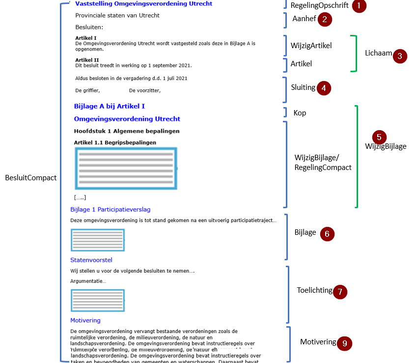Figuur 7Voorbeeld toepassing model BesluitCompact en RegelingCompact op initieel besluit omgevingsverordening
Door toepassing van model BesluitCompact ziet een besluit tot wijziging van een omgevingsdocument met Artikelstructuur, oftewel een wijzigingsbesluit, er schematisch uit zoals aangegeven in Figuur 8.
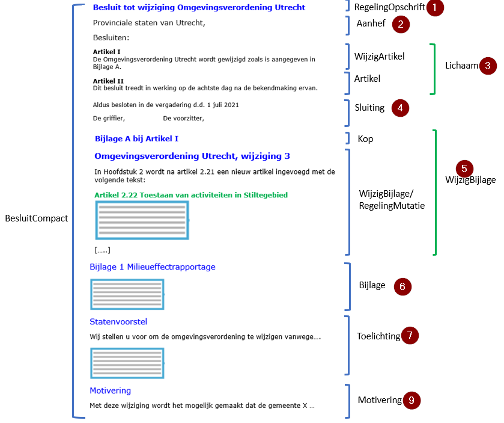Figuur 8Voorbeeld toepassing model BesluitCompact en RegelingMutatie op wijzigingsbesluit omgevingsverordening
In het voorbeeld van het initieel besluit van Figuur 7 zijn WijzigArtikel en Artikel in het Lichaam van het Besluit-deel letterlijk opgevat door ze een Kop met Label Artikel te geven. Dat is niet verplicht, STOP verplicht er slechts toe dat de Kop van een Artikel ten minste één van de elementen Label, Nummer en Opschrift bevat. Het is dus ook mogelijk om in de kop van de betreffende artikelen alleen een nummer op te nemen. Het voorbeeld van Figuur 8 toont een toepassing van een WijzigArtikel en Artikel zonder gebruik te maken van Label en Opschrift.
4.3.3 Regeling
In de Regeling van een omgevingsdocument staat welke regels of beleid gelden in de fysieke leefomgeving, dan wel, in het geval van een projectbesluit, wat er wordt gerealiseerd in de fysieke leefomgeving. De Regeling is te vinden in de regelingenbank op overheid.nl en in DSO-LV.
In paragraaf 4.3.3.1 is de norm voor het model RegelingCompact vastgelegd: welke elementen moeten respectievelijk mogen worden gebruikt en hoe vaak kunnen ze voorkomen. Paragraaf 4.3.3.2 geeft een uitgebreide toelichting op de elementen van de Regeling, waaronder ook tips over het al dan niet gebruikelijk zijn van een bepaald element. In paragraaf 4.3.3.3 worden norm en toelichting concreet gemaakt met een voorbeeld.
Opgemerkt wordt dat de STOP-modellen voor Besluit en Regeling XML-modellen zijn. Met de in de volgende paragrafen genoemde elementen worden dus (STOP-)XML-elementen bedoeld.
Omwille van de leesbaarheid en herkenbaarheid zijn de namen van de ‘hoofdelementen’ vetgedrukt en die van de ‘subelementen’ schuingedrukt. De ‘hoofdelementen’ zijn genummerd om er in de toelichting en het voorbeeld in de volgende paragrafen naar te kunnen verwijzen.
4.3.3.1 Norm
De (geconsolideerde) Regeling van het omgevingsplan is opgebouwd overeenkomstig het model RegelingCompact. RegelingCompact bevat de volgende elementen:
RegelingOpschrift: STOP-element dat de officiële titel van de Regeling, oftewel het omgevingsdocument, bevat. Verplicht element. Komt 1 keer voor.
Lichaam: STOP-element dat de inhoud, oftewel de artikelen, van de (geconsolideerde) Regeling van het omgevingsdocument bevat. Verplicht element. Komt 1 keer voor[13] Het Lichaam is het belangrijkste onderdeel van de Regeling. Zie daarvoor de toelichting in de volgende paragraaf en vooral de beschrijving van de Artikelstructuur in paragraaf 5.2. Dit is het deel dat wordt geannoteerd met OW-objecten, zie daarvoor hoofdstuk 7 . De artikelen moeten voldoen aan de specificaties voor de Artikelstructuur in paragraaf 5.2.
Bijlage: STOP-element dat een bijlage (in dit geval bij de Regeling) bevat. Optioneel element. Komt zo vaak voor als gewenst. Een bijlage die onderdeel is van de Regeling wordt geconsolideerd. Hoofdregel is dat een bijlage is vormgegeven als onderdeel van de tekst in STOP-XML. In bijzondere gevallen is het toegestaan een bijlage als PDF-document aan te leveren. Een Bijlage die in STOP-XML wordt opgesteld, bevat de volgende elementen:
Kop: STOP-element dat de Kop bevat. Verplicht element. Komt 1 keer voor. Bevat ten minste één van de Kopelementen Label, Nummer en Opschrift; ieder van deze elementen komt 0 of 1 keer voor. Optioneel kan het element Subtitel worden toegevoegd.
Gereserveerd: leeg STOP-element waarmee bij weergave op overheid.nl en in DSO-LV de tekst ‘Gereserveerd’ wordt gegenereerd. Optioneel element. Komt 0 of 1 keer voor. Indien in een Bijlage het element Gereserveerd wordt gebruikt mag in die Bijlage geen van de elementen Vervallen, Divisie en Divisietekst voorkomen.
Vervallen: leeg STOP-element waarmee bij weergave op overheid.nl en in DSO-LV de tekst ‘Vervallen’ wordt gegenereerd. Geeft aan dat de Bijlage de status ‘vervallen’ heeft; het is niet langer juridisch geldig en heeft geen inhoud meer. Optioneel element. Komt 0 of 1 keer voor. Indien in een Bijlage het element Vervallen wordt gebruikt mag in die Bijlage geen van de elementen Gereserveerd, Divisie en Divisietekst voorkomen.
De inhoud van de Bijlage, opgebouwd met Divisie (optioneel element) en Divisietekst (verplicht element). Indien een Bijlage inhoud bevat, mogen in die Bijlage de elementen Gereserveerd en Vervallen niet voorkomen. Divisie en Divisietekst moeten voldoen aan de specificaties voor de Vrijetekststructuur in paragraaf 5.3.
Sluiting: STOP-element dat de Bijlage afsluit. Optioneel element. Komt 0 of 1 keer voor. De tekst van de Sluiting staat in een of meer reguliere Alinea’s. Ook kan gebruik gemaakt worden van de optionele elementen Slotformulering, Dagtekening en Ondertekening.
Een bijlage mag alleen als PDF-document worden aangeleverd als het voor het bevoegd gezag redelijkerwijs niet mogelijk is om de bijlage als onderdeel van de tekst in STOP-XML op te stellen én als het de bijlage informatie bevat die daadwerkelijk als (te consolideren) bijlage gezien kan worden. Het PDF-document moet dan voldoen aan de eisen van PDF/A-1a of PDF/A-2a, moet worden gemodelleerd als informatieobject.
Toelichting: STOP-element dat de toelichting op de Regeling bevat. Optioneel element. Komt 0 of 1 keer voor. Een Toelichting als onderdeel van de Regeling bevat de volgende elementen:
Kop: STOP-element dat de Kop bevat. Onder voorwaarde verplicht element: verplicht indien binnen het element Toelichting zowel het element AlgemeneToelichting als het element ArtikelgewijzeToelichting voorkomt, komt dan 1 keer voor; optioneel indien binnen het element Toelichting slechts één van de elementen AlgemeneToelichting en ArtikelgewijzeToelichting voorkomt, komt dan 0 of 1 keer voor. Bevat ten minste één van de Kopelementen Label, Nummer en Opschrift; ieder van deze onderdelen komt 0 of 1 keer voor. Optioneel kan het element Subtitel worden toegevoegd.
AlgemeneToelichting: STOP-element dat de algemene toelichting bevat. Optioneel element. Komt 0 of 1 keer voor. Een AlgemeneToelichting bevat de volgende elementen:
Kop: STOP-element dat de Kop bevat. Verplicht element. Komt 1 keer voor. Bevat ten minste één van de Kopelementen Label, Nummer en Opschrift; ieder van deze onderdelen komt 0 of 1 keer voor. Optioneel kan het element Subtitel worden toegevoegd.
De inhoud van de AlgemeneToelichting, opgebouwd met Divisie (optioneel element) en Divisietekst (verplicht element). Divisie en Divisietekst moeten voldoen aan de specificaties voor de Vrijetekststructuur in paragraaf 5.3.
ArtikelgewijzeToelichting: STOP-element dat de artikelsgewijze toelichting bevat. Optioneel element. Komt 0 of 1 keer voor. Een ArtikelgewijzeToelichting bevat de volgende elementen:
Kop: STOP-element dat de Kop bevat. Verplicht element. Komt 1 keer voor. Bevat ten minste één van de Kopelementen Label, Nummer en Opschrift; ieder van deze onderdelen komt 0 of 1 keer voor. Optioneel kan het element Subtitel worden toegevoegd.
De inhoud van de ArtikelgewijzeToelichting, opgebouwd met Divisie (optioneel element) en Divisietekst (verplicht element). Divisie en Divisietekst moeten voldoen aan de specificaties voor de Vrijetekststructuur in paragraaf 5.3.
De inhoud van de Toelichting, opgebouwd met Divisie (optioneel element) en Divisietekst (verplicht element), zonder de structurerende elementen AlgemeneToelichting en/of ArtikelgewijzeToelichting. Mogelijkheid die STOP biedt voor een toelichting die uitsluitend algemeen van aard is. Geadviseerd wordt om van deze mogelijkheid geen gebruik te maken. Indien toch gebruikt moeten Divisie en Divisietekst voldoen aan de specificaties voor de Vrijetekststructuur in paragraaf 5.3.
Sluiting: STOP-element dat de Toelichting afsluit. Optioneel element. Komt 0 of 1 keer voor. De tekst van de Sluiting staat in een of meer reguliere Alinea’s. Ook kan gebruik gemaakt worden van de optionele elementen Slotformulering, Dagtekening en Ondertekening.
Bijlage: STOP-element dat een bijlage (in dit geval bij de Toelichting) bevat. Optioneel element. Komt zo vaak voor als gewenst. Een bijlage bij de Toelichting wordt geconsolideerd. Voor een bijlage bij de Toelichting gelden dezelfde eisen als voor het ‘hoofdelement’ Bijlage.
ArtikelgewijzeToelichting: STOP-element dat de artikelsgewijze toelichting, oftewel de toelichting op de artikelen in de Regeling, bevat. Optioneel element. Komt 0 of 1 keer voor. Mogelijkheid die STOP biedt voor een toelichting die uitsluitend een toelichting op de artikelen in de regeling is. Dit element zal in een toekomstige versie van de standaard vervallen; gebruik daarvan wordt daarom nu afgeraden.. Indien toch gebruikt gelden voor deze ArtikelgewijzeToelichting dezelfde eisen als voor de ArtikelgewijzeToelichting binnen het element Toelichting onder 4.
4.3.3.2 Toelichting
RegelingCompact is het model dat een decentraal bevoegd gezag moet gebruiken als het een nieuw, initieel omgevingsdocument met Artikelstructuur instelt. Bij de omgevingsverordening zal er een initiële regeling worden ingesteld. Bij het omgevingsplan en de waterschapsverordening zullen gemeente respectievelijk waterschap in principe geen initiële regeling aanleveren, omdat bij beide door de bruidsschat al een initiële regeling bestaat. Alleen in specifieke gevallen van bestuurlijke herindeling kan het nodig zijn dat een gemeente of waterschap een initiële regeling van omgevingsplan of waterschapsverordening moet aanleveren. RegelingCompact is ook het model voor de geconsolideerde regeling van die omgevingsdocumenten met Artikelstructuur van decentrale bevoegde gezagen.
In deze paragraaf worden de elementen toegelicht die moeten respectievelijk kunnen voorkomen in een Regeling overeenkomstig het model RegelingCompact. Figuur 9 laat schematisch zien hoe het model RegelingCompact voor het omgevingsplan er uit ziet (de nummers voor de elementen verwijzen naar de nummering in de vorige paragraaf).
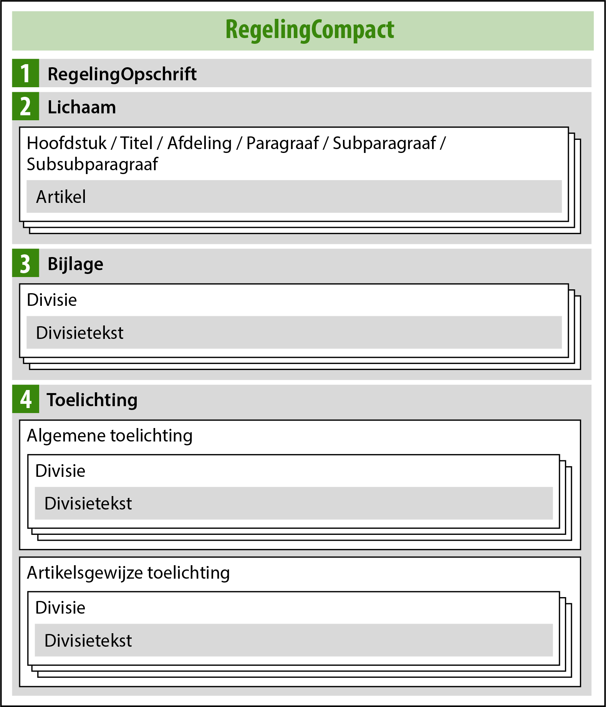Figuur 9Overzicht van model RegelingCompact
In de hierna volgende toelichting wordt de nummering van paragraaf 4.3.3.1 gevolgd. In die paragraaf is van ieder element aangegeven of het moet (verplicht) of mag (optioneel) voorkomen; dat wordt in deze toelichting niet herhaald. De ‘hoofdelementen’ zijn weer vetgedrukt en de ‘subelementen’ schuingedrukt.
RegelingOpschrift: de officiële titel van de Regeling. Bijvoorbeeld: Omgevingsverordening Utrecht, of Omgevingsplan Amsterdam.
Lichaam: het element dat de artikelen met de inhoud van het omgevingsdocument bevat. Voor de inhoud van het Lichaam gelden de specificaties voor de Artikelstructuur die zijn beschreven in paragraaf 5.2. Dit is het onderdeel dat wordt geannoteerd met de OW-objecten die zijn beschreven in hoofdstuk 7.
Bijlage: het gaat hier om een Bijlage bij de Regeling. Dit is een bijlage die informatie bevat die integraal onderdeel is van het omgevingsdocument maar om redenen van leesbaarheid en/of vormgeving (denk aan lange lijsten en complexe tabellen) niet goed in de artikelen van het Lichaam van de Regeling kan worden opgenomen. Er kunnen zoveel bijlagen bij de Regeling worden gevoegd als nodig is. Bijlagen bij de Regeling worden bekendgemaakt én geconsolideerd. Dat laatste houdt in dat ze met een later wijzigingsbesluit gewijzigd kunnen worden, waarbij ook onderdelen van een bijlage gewijzigd kunnen worden. Deze bijlagen zijn zowel te vinden in het publicatieblad van het bevoegd gezag op officielebekendmakingen.nl als in de regelingenbank op overheid.nl en in DSO-LV. Uitgangspunt van de STOP/TPOD-standaard is dat elke tekst die onderdeel is van een officiële publicatie, zoals een besluit of regeling, wordt uitgewisseld in STOP-XML. Daarmee is gewaarborgd dat de teksten voldoen aan alle wettelijke eisen. De teksten kunnen dan juridisch rechtsgeldig gepubliceerd worden en de voorzieningen zorgen er voor dat ze volgens de richtlijnen van digitale toegankelijkheid worden ontsloten. Als de bijlage onderdeel is van de tekst in STOP-XML, staat de inhoud in een of meer Divisieteksten, die desgewenst hiërarchisch kunnen worden gestructureerd in Divisies. Deze elementen van de Vrijetekststructuur en hun specificaties zijn beschreven in paragraaf 5.3. Een voorbeeld van een bijlage in STOP-XML is de bijlage met verwijzingen naar de (elders gepubliceerde) GIO’s. Een ander voorbeeld is de bijlage met begripsbepalingen, in het geval dat de begripsbepalingen niet in het artikel Begripsbepalingen in hoofdstuk 1 worden geplaatst maar in een bijlage. Het is mogelijk om zo’n bijlage in verschillende onderdelen op te delen, bijvoorbeeld in een onderdeel Begripsbepalingen (voor begrippen met hun definities), een onderdeel Verdragen (de aanhalingstermen van verdragen en hun volledige titel met vindplaats) en een onderdeel Normen (de aanhalingstermen van normen, versie en vindplaats). Voor die onderverdeling worden de vrijetekstelementen Divisie (optioneel element) en Divisietekst (verplicht element) gebruikt. Tekst uitwisselen in STOP-XML is niet altijd mogelijk zonder de tekst te moeten overtypen. Daarom ondersteunt de STOP/TPOD-standaard ook het aanleveren van tekst als PDF-document. Een tekst in een PDF-document is voor de landelijke voorzieningen minder goed te hanteren; denk aan verwijzen naar specifieke onderdelen en muteren dat niet -of niet goed- mogelijk is. Daarom wordt het gebruik van PDF-documenten slechts in specifieke, in het toepassingsprofiel vastgelegde, gevallen toegestaan. In dit toepassingsprofiel is, in de norm van paragraaf 4.3.3.1, bepaald dat een bijlage alleen als PDF-document mag worden aangeleverd als het voor het bevoegd gezag redelijkerwijs niet mogelijk is om de bijlage als onderdeel van de tekst in STOP-XML op te stellen én als de bijlage informatie bevat die daadwerkelijk als (te consolideren) bijlage gezien kan worden. Dat de bijlage informatie moet bevatten die daadwerkelijk als (te consolideren) bijlage gezien kan worden betekent dat het moet gaan om informatie die onlosmakelijk onderdeel is van de regeling maar om redenen van leesbaarheid en/of vormgeving niet in het Lichaam van de Regeling kan worden opgenomen. Het betekent ook dat niet de volledige inhoud van het Lichaam van de Regeling in een bijlage in PDF-formaat mag worden opgenomen. Een bijlage in de vorm van een PDF-document moet onveranderlijk zijn. Daarom moet het PDF-document voldoen aan de eisen van PDF/A-1a of PDF/A-2a en moet het worden gepubliceerd als informatieobject. Een beschrijving van beide publicatiemogelijkheden voor bijlagen staat in paragraaf 5.4. In een Bijlage bij de Regeling kan het element Gereserveerd worden gebruikt. Dit element maakt het mogelijk om alvast een structuur neer te zetten die is voorbereid op toekomstige aanvullingen. Het is een leeg element waarmee bij weergave op overheid.nl en in DSO-LV de tekst ‘Gereserveerd’ wordt gegenereerd. Het bevoegd gezag kan het element niet zelf vullen met eigen tekst. Met latere wijzigingsbesluiten kan het element Gereserveerd worden vervangen door een structuurelement met daadwerkelijke inhoud. Wanneer een bijlage vervalt kan in het element Bijlage het element Vervallen worden opgenomen. Op deze manier blijft zichtbaar dat er een bijlage was en dat die later is vervallen. Het voordeel daarvan is dat in de wetstechnische informatie de historie van het element kan worden teruggevonden. Een andere mogelijkheid bij het vervallen van een bijlage is om het element Bijlage met een wijzigingsbesluit te verwijderen. Dan is het element niet langer zichtbaar en is er ook geen wetstechnische informatie meer. Een Bijlage kan worden afgesloten met het element Sluiting. Van die mogelijkheid zal naar verwachting niet vaak gebruik gemaakt worden. Een Bijlage wordt niet geannoteerd met OW-objecten.
Toelichting: het gaat hier om de Toelichting op de Regeling. De STOP/TPOD-standaard biedt in de huidige versie voor zowel Besluit als Regeling een aantal mogelijkheden voor het indelen van toelichtingen. Er zijn de ‘hoofdelementen’ Toelichting en ArtikelgewijzeToelichting. Binnen het ‘hoofdelement’ Toelichting kan worden gekozen tussen enerzijds een gestructureerde opzet met de onderliggende elementen AlgemeneToelichting en/of ArtikelgewijzeToelichting en anderzijds een vrije, niet nader gestructureerde opzet. Deze mogelijkheden stellen medewerkers van bevoegde gezagen en adviesbureaus die de standaard in hun omgevingsdocumenten toepassen en bouwers van plansoftware voor lastige keuzes. Bovendien noodzaken ze de applicaties die de tekst tonen (officielebekendmakingen.nl, de regelingenbanken op overheid.nl en DSO-LV) om alle mogelijkheden te ondersteunen. Daarom zal in de toekomst de standaard zo worden aangepast dat er nog maar één modellering voor toelichtingen is, namelijk het ‘hoofdelement’ Toelichting met daarbinnen de gestructureerde opzet. Op het moment van uitbrengen van deze versie van dit toepassingsprofiel is die aanscherping nog niet mogelijk. Het is uiteraard niet wenselijk dat er omgevingsdocumenten worden opgesteld met een toelichting-modellering die in de toekomst niet meer voldoet aan de dan aangescherpte standaard en dan moeten worden aangepast. Daarom wordt met klem geadviseerd om alleen de toekomstige modellering te gebruiken en geen gebruik te maken van het ‘hoofdelement’ ArtikelgewijzeToelichting en ook niet van de vrije, niet nader gestructureerde opzet met Divisies en Divisieteksten binnen het ‘hoofdelement’ Toelichting. NB: voor de toelichting op het besluit geldt een andere aanbeveling, zie daarvoor onderdeel 7 van paragraaf 4.3.2.2. De toekomstige modellering bestaat er uit dat alleen gebruik wordt gemaakt van het ‘hoofdelement’ Toelichting en daarbinnen de gestructureerde opzet met de elementen AlgemeneToelichting en/of ArtikelgewijzeToelichting. Een toelichting kan dan alleen een algemene toelichting bevatten, alleen een artikelsgewijze toelichting of allebei. De algemene toelichting en de artikelsgewijze toelichting hebben verplicht een kop. De kop van het element Toelichting is verplicht wanneer de elementen AlgemeneToelichting en ArtikelgewijzeToelichting allebei voorkomen. Wanneer slechts een van beide elementen voorkomt is de kop van het element Toelichting optioneel: het bevoegd gezag mag dan zelf kiezen of het de toelichting al dan niet een kop geeft. Let op dat de hier besproken algemene toelichting een algemene toelichting geeft op de hele regeling en niet op een besluit. In deze algemene toelichting kan bijvoorbeeld een beschouwing worden gegeven over de gehanteerde sturingsfilosofie en over de visie van het bestuursorgaan op het omgevingsplan (globaal, gedetailleerd, wijze waarop invulling is gegeven aan de beleidsvrijheid etc.). Deze algemene toelichting is dus niet de plek voor een toelichting op een concreet (wijzigings)besluit. In DSO-LV is de algemene toelichting aan het hele regelingsgebied gekoppeld. Het is niet mogelijk om onderdelen van de toelichting te koppelen aan specifieke locaties, bijvoorbeeld om een toelichting te geven op een concrete ontwikkeling. In de artikelsgewijze toelichting wordt, waar nodig, een toelichting gegeven op de artikelen in het lichaam van de regeling en desgewenst ook op de bijlage(n) die onderdeel zijn van de regeling. Een Toelichting kan worden afgesloten met het element Sluiting. Van die mogelijkheid zal naar verwachting niet vaak gebruik gemaakt worden. Aan een Toelichting kunnen een of meer Bijlagen worden toegevoegd. Een Toelichting bij de Regeling wordt bekendgemaakt én geconsolideerd. Deze toelichting is dus zowel te vinden op officielebekendmakingen.nl als in de regelingenbank op overheid.nl en in DSO-LV. Een Toelichting wordt niet geannoteerd met OW-objecten.
ArtikelgewijzeToelichting: dit element zal in een toekomstige versie van de standaard vervallen; gebruik daarvan wordt daarom nu afgeraden. Daarom zijn in de norm in paragraaf 4.3.3.1 de subelementen van de ArtikelgewijzeToelichting niet opgenomen en wordt er in deze paragraaf geen nadere toelichting op gegeven.
Veel van de hiervoor besproken elementen moeten worden voorzien van een Kop. Voor de Kop zijn de Kopelementen Label, Nummer en Opschrift beschikbaar. Label is de aanduiding van het type tekstelement, zoals Hoofdstuk, Paragraaf of Artikel. Opschrift is de titel van het tekstelement, die aangeeft waar de tekst over gaat. Voor de Koppen in het Lichaam van de Regeling van omgevingsdocumenten met Artikelstructuur gelden extra eisen, die zijn beschreven in paragraaf 5.2.2.1.1.
In de schema’s van STOP komt in een aantal hoofd- en subelementen het element InleidendeTekst -bedoeld voor niet-juridische contextinformatie- voor. Dit element zal in een toekomstige versie van de standaard vervallen en in de STOP-documentatie wordt het gebruik van dit element ontraden. Daarom is dit element hier niet opgenomen.
4.3.3.3 Voorbeeld
Door toepassing van model RegelingCompact ziet de Regeling van een omgevingsdocument met Artikelstructuur er schematisch uit zoals aangegeven in Figuur 10.
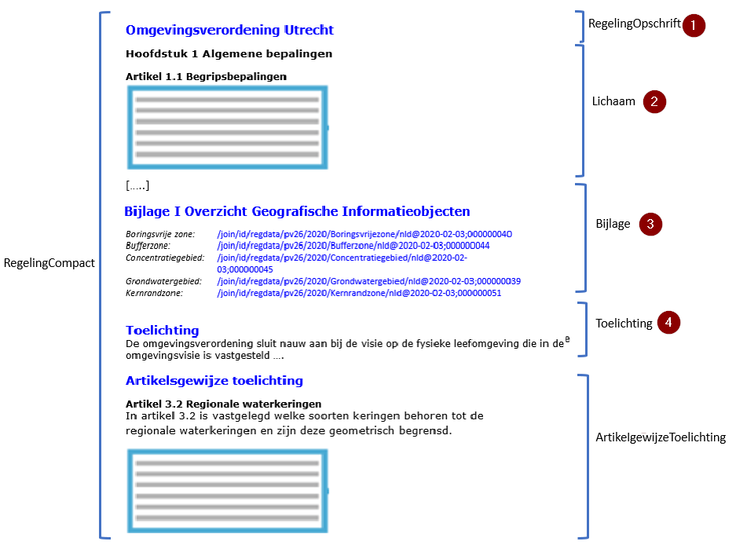Figuur 10Voorbeeld toepassing model RegelingCompact op omgevingsverordening
5 Toepassing van de STOP-tekststructuren op omgevingsdocumenten
STOP benoemt tekstelementen en beschrijft de structuur waarin die tekstelementen toegepast kunnen worden. STOP geldt voor alle officiële overheidspublicaties. Specifieke typen publicaties hebben een eigen toepassingsprofiel op het STOP-model, dat nadere specificaties van STOP kan geven. In dit hoofdstuk wordt beschreven hoe de STOP-tekststructuren in zijn algemeenheid op omgevingsdocumenten en vervolgens specifiek op het omgevingsplan moeten worden toegepast.
5.1 Soorten tekststructuur
STOP onderscheidt twee tekststructuren:
Artikelstructuur: de tekststructuur voor het Lichaam van een Regeling als dat is opgebouwd uit één of meer artikelen;
Vrijetekststructuur:
de tekststructuur voor het Lichaam van een Regeling van juridisch authentieke documenten die geen artikelen bevat;
de tekststructuur voor onderdelen van Regeling en Besluit buiten het Lichaam.
Er zijn omgevingsdocumenten waarvan het Lichaam artikelen bevat en dus de Artikelstructuur heeft, zoals de omgevingsverordening, de waterschapsverordening en het omgevingsplan, en omgevingsdocumenten waarvan het Lichaam geen artikelen bevat en dus de Vrijetekststructuur heeft, zoals de omgevingsvisie. In het vervolg van dit toepassingsprofiel worden omgevingsdocumenten waarvan het Lichaam artikelen bevat ‘omgevingsdocument met Artikelstructuur’ genoemd en worden omgevingsdocumenten waarvan het Lichaam de Vrijetekststructuur heeft (oftewel geen artikelen bevat) ‘omgevingsdocument met Vrijetekststructuur’ genoemd.
Zoals in hoofdstuk 4 al is opgemerkt komen er ook in het Lichaam van een Besluit artikelen voor. Deze artikelen vallen echter niet onder het begrip Artikelstructuur. Dat de elementen van de Vrijetekststructuur worden gebruikt buiten het Lichaam geldt zowel voor omgevingsdocumenten met Artikelstructuur als voor omgevingsdocumenten met Vrijetekststructuur, en zowel voor Regeling als Besluit. De specificatie van de STOP-Artikelstructuur is dus alleen van toepassing op het Lichaam van omgevingsdocumenten met Artikelstructuur. De specificatie van de STOP-Vrijetekststructuur is van toepassing op alle omgevingsdocumenten.
5.2 Specificatie van de Artikelstructuur
Zoals in paragraaf 5.1 is beschreven is de Artikelstructuur de tekststructuur voor het Lichaam van de Regeling[14] Zie voor de begrippen Lichaam en Regeling ook hoofdstuk 4 van omgevingsdocumenten met Artikelstructuur, zoals de omgevingsverordening, de waterschapsverordening en het omgevingsplan. Dit is het deel dat de artikelen met de inhoud van het omgevingsdocument bevat. De specificaties voor de Artikelstructuur en de toepassing van die specificaties voor het omgevingsplan worden in de navolgende paragrafen beschreven.
De opmaak van de tekst, waaronder die van de Koppen, wordt bepaald door de applicaties die de tekst tonen: officielebekendmakingen.nl, de regelingenbanken op overheid.nl en DSO-LV. Dit toepassingsprofiel bevat daarom geen voorschriften over de opmaak van de elementen en hun Koppen. Ten behoeve van de mensleesbare tekst in het proces van opstellen van en besluitvorming over het omgevingsdocument, voorafgaand aan de bekendmaking en consolidatie, kan de plansoftware -door leverancier of bevoegd gezag te bepalen- opmaak aan de tekst toevoegen.
5.2.1 Gebruik van tekstelementen en hun volgorde in het omgevingsplan
De elementen van de STOP-Artikelstructuur zijn onder te verdelen in structuurelementen, elementen met inhoud en de inhoud zelf. Structuurelementen zijn die elementen die de tekst structureren maar zelf geen inhoud bevatten: Hoofdstuk, Titel, Afdeling, Paragraaf, Subparagraaf en Subsubparagraaf. Elementen met inhoud zijn die elementen die inhoud bevatten maar niet zelf inhoud zijn: Artikel en Lid. De inhoud zelf is dat wat in Artikel of Lid staat. Voorbeelden van de vorm die de inhoud kan aannemen zijn Alinea, Tabel en Figuur. In de navolgende tekst gebruiken we ‘tekstelement’ als term voor de drie elementsoorten tezamen.
In paragraaf 5.3.1 is de norm voor de toepassing van de Artikelstructuur op het omgevingsplan vastgelegd: welke elementen moeten respectievelijk mogen worden gebruikt, hoe vaak kunnen ze voorkomen en in welke volgorde. Paragraaf 5.3.2 geeft daar een toelichting op.
5.2.1.1 Norm
Het omgevingsplan is een omgevingsdocument met Artikelstructuur. Voor de indeling van het Lichaam van de Regeling van het omgevingsplan gelden de volgende regels:
Boek en Deel mogen niet gebruikt worden.
Hoofdstuk en Artikel komen altijd voor.
Als er behoefte is om in een Hoofdstuk Artikelen te groeperen wordt Afdeling gebruikt.
In hoofdstukken waarin een onderverdeling in Afdelingen niet volstaat (bijvoorbeeld vanwege de omvang van het hoofdstuk of de verscheidenheid aan onderwerpen in het hoofdstuk) wordt Paragraaf gebruikt; dit tekstelement komt tussen Afdeling en Artikel.
Een volgende onderverdeling ontstaat door Subparagraaf te gebruiken; dit tekstelement komt tussen Paragraaf en Artikel.
Bij behoefte aan nog verder gaande onderverdeling wordt Subsubparagraaf gebruikt; dit tekstelement komt tussen Subparagraaf en Artikel.
Als er behoefte is om in een Hoofdstuk Afdelingen te groeperen kan Titel worden gebruikt; dit tekstelement komt dan tussen Hoofdstuk en Afdeling.
Een tekstelement mag slechts één lagerliggend type tekstelement bevatten.
Artikelen kunnen worden onderverdeeld in Leden.
Leden kunnen niet worden onderverdeeld in Subleden.
Concrete tekst kan alleen voorkomen onder Artikel en Lid: de Inhoud. Wanneer een Artikel is onderverdeeld in Leden bevatten alleen de Leden Inhoud; het Artikel zelf brengt in dat geval structuur aan en kent zelf geen tekst oftewel Inhoud.
Het element Inhoud bevat ten minste één van de inhoud-elementen Alinea, Begrippenlijst, Figuur, Formule, Groep, Lijst en Tabel; deze kunnen alleen voorkomen onder Artikel en Lid. Het is niet toegestaan om het element Tussenkop te gebruiken.
Onder ieder structuurelement en onder Artikel kan het element Gereserveerd worden geplaatst: leeg STOP-element waarmee bij weergave op overheid.nl en in DSO-LV de tekst ‘Gereserveerd’ wordt gegenereerd.
Onder ieder structuurelement en onder Artikel kan het element Vervallen worden geplaatst: leeg STOP-element waarmee bij weergave op overheid.nl en in DSO-LV de tekst ‘Vervallen’ wordt gegenereerd. Geeft aan dat het element de status ‘vervallen’ heeft; het is niet langer juridisch geldig en heeft geen inhoud meer.
Het element Redactioneel is niet toegestaan.
Voet- en eindnoten zijn niet toegestaan.
Voor tekstelementen in het Lichaam van de Regeling van omgevingsdocumenten met Artikelstructuur gelden de regels uit Tabel 5. Daarbij geldt dat een tekstelement uit de kolom ‘Type tekstelement’ slechts één type tekstelement van de in de kolom ‘Mag bevatten’ genoemde typen tekstelementen mag bevatten.
Tabel 5Regels voor tekstelementen en hun invulling - Artikelstructuur
Type tekstelement
Aantal
Mag voorkomen onder
Mag bevatten
Mag niet bevatten
Hoofdstuk
1..n
Lichaam
Titel, Afdeling, Artikel, element Gereserveerd, element Vervallen
Inhoud, in het geval het Artikel is onderverdeeld in Leden
Lid
0..n
Artikel
Inhoud, Gereserveerd
Hoofdstuk, Titel, Afdeling, Paragraaf, Artikel, Subparagraaf, Subsubparagraaf, Artikel, Lid, element Gereserveerd, element Vervallen
Inhoud: Alinea
1..n
Artikel, Lid
-
Hoofdstuk, Titel, Afdeling, Paragraaf, Artikel, Subparagraaf, Subsubparagraaf, Artikel, Lid, element Gereserveerd, element Vervallen
Inhoud: Begrippenlijst, Figuur, Formule, Groep, Lijst en Tabel; element Tussenkop is niet toegestaan
0..n
Artikel, Lid
-
Hoofdstuk, Titel, Afdeling, Paragraaf, Artikel, Subparagraaf, Subsubparagraaf, Artikel, Lid, element Gereserveerd, element Vervallen
5.2.1.2 Toelichting
De tekstelementen die kunnen worden gebruikt in het Lichaam van de Regeling van het omgevingsplan, oftewel het onderdeel dat de artikelen bevat en dat geannoteerd kan worden met de OW-objecten die in hoofdstuk 7 zijn beschreven, zijn Hoofdstuk, Titel, Afdeling, Paragraaf, Subparagraaf, Subsubparagraaf, Artikel en Lid. Deze tekstelementen zijn ontleend aan de Aanwijzingen voor de regelgeving (aanwijzingen 3.54, 3.56, 3.57, 3.58, 3.59), met enige nadere specificaties en toevoegingen. Artikel en Lid zijn de tekstelementen die de daadwerkelijke inhoud bevatten. Figuur 11 laat zien dat als een Artikel is onderverdeeld in Leden, het Artikel zelf geen Inhoud bevat.
Figuur 11Voorbeeld van een Artikel dat is onderverdeeld in Leden
In de norm staat dat een tekstelement slechts één lagerliggend type tekstelement mag bevatten (nr 8 en boven Tabel 5). Een voorbeeld om dat te verduidelijken: als een Paragraaf Subparagrafen bevat, moeten de Artikelen in de Subparagrafen staan; de Paragraaf kan dus niet eerst een aantal Artikelen bevatten en daarna Subparagrafen.
Figuur 12 toont de juiste plaatsing van de Artikelen, de plaatsing van de artikelen 2.1 en 2.2 in het voorbeeld van Figuur 13 is niet toegestaan.
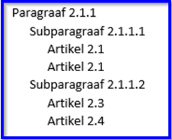Figuur 12Juiste plaatsing van Artikelen in SubparagraafFiguur 13Onjuiste plaatsing van Artikelen in een Paragraaf die ook Subparagrafen bevat
Onder ieder structuurelement en onder Artikel kunnen de elementen Gereserveerd en Vervallen geplaatst worden. Het element Gereserveerd is een leeg element waarmee bij weergave op overheid.nl en in DSO-LV de tekst ‘Gereserveerd’ wordt gegenereerd. Het bevoegd gezag kan het element niet zelf vullen met eigen tekst. Dit element maakt het mogelijk om alvast een structuur neer te zetten die is voorbereid op toekomstige aanvullingen. Met latere wijzigingsbesluiten kan het element Gereserveerd worden vervangen door een structuurelement met daadwerkelijke inhoud.
Het element Vervallen is een leeg element waarmee bij weergave op overheid.nl en in DSO-LV de tekst ‘Vervallen’ wordt gegenereerd. Het bevoegd gezag kan het element niet zelf vullen met eigen tekst. Wanneer een structuurelement of artikel vervalt kan het worden vervangen door het element Vervallen. Op deze manier blijft zichtbaar dat er een structuurelement of artikel was en dat dat later is vervallen. Het voordeel daarvan is dat in de wetstechnische informatie de historie van het element kan worden teruggevonden. Het werken met het element Vervallen is niet verplicht: het is ook mogelijk om het betreffende structuurelement of artikel met een wijzigingsbesluit volledig te verwijderen. Dan is het element niet langer zichtbaar. Het nadeel hiervan is dat er van het element geen wetstechnische informatie meer is.
In de tabel komt het Inhoud-element Begrippenlijst voor. Dit element kan in slechts een paar gevallen gebruikt worden. Dat is gespecificeerd in paragraaf 9.2.
Artikel is de kleinste mutatie-eenheid. Dit betekent dat het de eenheid is die, ongeacht hoeveel wijzigingen met een wijzigingsbesluit in dat artikel of in de leden van dat artikel worden aangebracht, als geheel vervangen wordt bij consolidatie. Bij gebruik van de wijzigingsmethode renvooi wordt door de renvooi-weergave van de wijzigingen zichtbaar wat er door het wijzigingsbesluit in het artikel gewijzigd is. Het artikel is ook de eenheid waarover in de wetstechnische informatie in de regelingenbanken de juridische verantwoording wordt bijgehouden.
5.2.2 Gebruik van Koppen en Lijsten in het omgevingsplan
Ten behoeve van de leesbaarheid en de oriëntatie in de tekst moet een groot deel van de tekstelementen in het Lichaam van de Regeling van het omgevingsplan worden voorzien van een Kop. STOP kent voor de Kop de Kopelementen Label, Nummer en Opschrift en stelt het verplicht om ten minste één van die Kop-elementen te gebruiken. Dit toepassingsprofiel stelt striktere eisen aan Kop. Daarnaast stelt dit toepassingsprofiel eisen aan het gebruik van Lijsten in het omgevingsplan.
In paragraaf 5.2.2.1 is de norm voor de toepassing van Koppen en Lijsten in het omgevingsplan vastgelegd. Paragraaf 5.2.2.2 geeft daar een toelichting op.
5.2.2.1 Norm
5.2.2.1.1 Koppen
De in het navolgende overzicht genoemde tekstelementen moeten worden voorzien van een Kop. Een Kop bevat de volgende Kop-elementen:
Label: de tekstuele aanduiding van het type van het tekstelement
Nummer: de identificatie van het tekstelement met een nummer of andere aanduiding
Opschrift: de titel van het tekstelement, waarmee de inhoud van het onderdeel beknopt wordt aangeduid[15] Ontleend aan Aanwijzing 3.57 van de Aanwijzingen voor de regelgeving .
Gebruik van het element Subtitel, het vierde (optionele) Kop-element dat STOP kent, is in omgevingsdocumenten met Artikelstructuur niet toegestaan.
Voor de Kop van de tekstelementen die in het omgevingsplan zijn toegestaan, gelden de onderstaande regels, waarbij geldt dat alle Kopelementen verplicht zijn, tenzij expliciet anders is vermeld.
Hoofdstuk:
Label: Hoofdstuk
Nummer: Hoofdstukken worden oplopend genummerd in Arabische cijfers. Achter het cijfer mag een letter worden toegevoegd. Tussen cijfer en letter en achter het laatste karakter komt geen punt.
Opschrift:
Hoofdstuk 1 heeft het Opschrift Algemene bepalingen
Het bevoegd gezag is vrij in de keuze van het Opschrift van de overige hoofdstukken.
Titel:
Label: Titel
Nummer: De nummering van Titels begint met het volledige nummer van het Hoofdstuk waarin de Titel voorkomt, waar nodig inclusief de aan het cijfer toegevoegde letter, gevolgd door een punt, daarna oplopende nummering van de Titels in Arabische cijfers. Achter het laatste cijfer mag een letter worden toegevoegd. Tussen cijfer en letter en achter het laatste karakter komt geen punt.
Opschrift: Door het bevoegd gezag zelf te kiezen.
Afdeling:
Label: Afdeling
Nummer:
In het geval dat tussen Hoofdstuk en Afdeling Titel voorkomt: De nummering van Afdelingen begint met het volledige samengestelde nummer van de Titel waarin de Afdeling voorkomt, waar nodig inclusief de toegevoegde letter, gevolgd door een punt, daarna oplopende nummering van de Afdelingen in Arabische cijfers. Achter het laatste cijfer mag een letter worden toegevoegd. Tussen cijfer en letter en achter het laatste karakter komt geen punt.
In het geval dat tussen Hoofdstuk en Afdeling geen Titel voorkomt: De nummering van Afdelingen begint met het volledige nummer van het Hoofdstuk waarin de Afdeling voorkomt, waar nodig inclusief de toegevoegde letter, gevolgd door een punt, daarna oplopende nummering van de Afdelingen in Arabische cijfers. Achter het laatste cijfer mag een letter worden toegevoegd. Tussen cijfer en letter en achter het laatste karakter komt geen punt.
Opschrift: Door het bevoegd gezag zelf te kiezen.
Paragraaf:
Label: Paragraaf; in plaats daarvan kan het paragraafteken (§) gebruikt worden
Nummer: De nummering van Paragrafen begint met het volledige samengestelde nummer van de Afdeling waarin de Paragraaf voorkomt, waar nodig inclusief de toegevoegde letter, gevolgd door een punt, daarna oplopende nummering van de Paragrafen in Arabische cijfers. Achter het laatste cijfer mag een letter worden toegevoegd. Tussen cijfer en letter en achter het laatste karakter komt geen punt.
Opschrift: Door het bevoegd gezag zelf te kiezen.
Subparagraaf:
Label: Subparagraaf; in plaats daarvan kan het paragraafteken (§) gebruikt worden
Nummer: De nummering van Subparagrafen begint met het volledige samengestelde nummer van de Paragraaf waarin de Subparagraaf voorkomt, waar nodig inclusief de toegevoegde letter, gevolgd door een punt, daarna oplopende nummering van de Subparagrafen in Arabische cijfers. Achter het laatste cijfer mag een letter worden toegevoegd. Tussen cijfer en letter en achter het laatste karakter komt geen punt.
Opschrift: Door het bevoegd gezag zelf te kiezen.
Subsubparagraaf:
Label: Subsubparagraaf; in plaats daarvan kan het paragraafteken (§) gebruikt worden
Nummer: De nummering van Subsubparagrafen begint met het volledige samengestelde nummer van de Subparagraaf waarin de Subsubparagraaf voorkomt, waar nodig inclusief de toegevoegde letter, gevolgd door een punt, daarna oplopende nummering van de Subsubparagrafen in Arabische cijfers. Achter het laatste cijfer mag een letter worden toegevoegd. Tussen cijfer en letter en achter het laatste karakter komt geen punt.
Opschrift: Door het bevoegd gezag zelf te kiezen.
Artikel:
Label: Artikel
Nummer: De nummering van Artikelen begint met het volledige nummer van het Hoofdstuk waarin het Artikel voorkomt, waar nodig inclusief de toegevoegde letter, gevolgd door een punt, daarna oplopende nummering van de Artikelen in Arabische cijfers. Achter het laatste cijfer mag een letter worden toegevoegd. Tussen cijfer en letter en achter het laatste karakter komt geen punt. NB: De nummering van Artikel wordt dus alleen bepaald door de plaats van het Artikel in het Hoofdstuk en niet door de positie van het Artikel in Titel, Afdeling, Paragraaf, Subparagraaf of Subsubparagraaf.
Opschrift: Door het bevoegd gezag zelf te kiezen.
Lid:
Label: n.v.t., Lid heeft geen Label
Nummer: Leden worden per artikel oplopend genummerd in Arabische cijfers, waarbij het eerste lid van ieder artikel het nummer 1 krijgt. Achter het laatste cijfer mag een letter worden toegevoegd. Tussen cijfer en letter komt geen punt. Achter het laatste karakter komt een punt.
Opschrift: n.v.t., Lid heeft geen Opschrift
5.2.2.1.2 Lijsten
Voor Lijsten gelden de volgende regels:
Lijsten mogen voorkomen onder Artikel en Lid.
Een Lijst wordt altijd voorafgegaan door een inleidende tekst, oftewel de aanhef. Voor de aanhef moet verplicht gebruik gemaakt worden van het element Alinea uit de STOP-elementen voor Inhoud.
Lijsten mogen in ten hoogste drie niveaus gebruikt worden.
De onderdelen van de Lijst op het eerste niveau worden aangegeven met letters, op het tweede niveau met Arabische cijfers en op het derde niveau met Romeinse cijfers. Voor deze lijsten moet gebruik gemaakt worden van het STOP-element Lijst van het type expliciet: de opsommingstekens worden expliciet meegeleverd.
Het aantal Lijstitems per niveau is onbeperkt.
Een Lijst heeft geen opschrift.
5.2.2.2 Toelichting
Alle structuurelementen en Artikel worden voorzien van een Kop die bestaat uit alle drie de Kopelementen Label, Nummer en Opschrift. Over het algemeen kan het bevoegd gezag (de tekst van) het Opschrift zelf kiezen.
Lijsten kunnen voorkomen in Artikelen en Leden. Een Lijst wordt altijd voorafgegaan door een inleidende tekst, oftewel de aanhef. Daarvoor wordt gebruik gemaakt van het STOP-tekstelement Alinea. Er gelden regels voor het maximum aantal niveaus in Lijsten en de te gebruiken opsommingstekens in Lijsten. Het is goed gebruik dat achter het nummer of cijfer van lijstitems een punt wordt geplaatst.
STOP kent twee typen voor Lijst: expliciet en ongemarkeerd. Bij gebruik van het type expliciet levert het bevoegd gezag de opsommingstekens mee; ze staan dus hard in de tekst. Bij gebruik van het type ongemarkeerd wordt per lijstitem niet het opsommingsteken maar de positie van dat item in de totale lijst aangegeven. De applicaties die de tekst tonen (officielebekendmakingen.nl, de regelingenbanken op overheid.nl en DSO-LV) bepalen dan met welke opsommingstekens de lijstitems worden weergegeven. Voor de hier bedoelde lijsten in artikelen en leden in het Lichaam van omgevingsdocumenten met Artikelstructuur is het verplicht om Lijst van het type expliciet te gebruiken.
Figuur 14Artikel met Leden, Lijst met aanhef
Figuur 14 geeft een voorbeeld van een Artikel met Leden. Lid 1 bevat een Lijst, voorafgegaan door een aanhef direct achter het nummer van het Lid.
Zoals uit de norm van paragraaf 5.2.2.1 blijkt, bestaat de nummering van Hoofdstuk, Titel, Afdeling, Paragraaf, Subparagraaf, Subsubparagraaf, Artikel en Lid uit Arabische cijfers. Bij ieder tekstelement is het toegestaan om aan die nummering letters toe te voegen.
Wanneer met een wijzigingsbesluit een nieuw tekstelement wordt ingevoegd tussen al bestaande tekstelementen, bijvoorbeeld een nieuw artikel tussen de artikelen 2.5 en 2.6, zijn daar twee methoden voor:
het ingevoegde tekstelement krijgt het nummer dat volgt op dat van het tekstelement waarna het wordt ingevoegd; de daaropvolgende tekstelementen worden vernummerd (in het voorbeeld: het nieuwe artikel krijgt het nummer 2.6, de daaropvolgende artikelen worden vernummerd naar 2.7 etc.);
het ingevoegde tekstelement krijgt hetzelfde nummer als het tekstelement waarna het wordt ingevoegd met daarachter (de eerstvolgende beschikbare) letter (in het voorbeeld: het nieuwe artikel krijgt het nummer 2.5a, de daaropvolgende artikelen behouden hun oorspronkelijke nummering).
Het voordeel van methode 1 is dat de nummering van tekstelementen volledig geautomatiseerd door software kan worden uitgevoerd. Nadelen zijn dat het met een wijzigingsbesluit invoegen van een tekstelement kan leiden tot een omvangrijke vernummering met als gevolg een omvangrijke aanlevering van gewijzigde onderdelen in renvooiweergave en tot mogelijke problemen wanneer meerdere wijzigingsbesluiten tegelijk in procedure zijn.
Voordelen van methode 2 zijn dat het invoegen van een tekstelement niet leidt tot een omvangrijker aanlevering bij een wijzigingsbesluit dan vanwege inhoudelijke wijzigingen nodig is en dat zich minder nummeringsconflicten zullen voordoen in het geval meerdere wijzigingsbesluiten tegelijk in procedure zijn. Nadeel van deze methode is, naast het wellicht meer visuele aspect van een ondoorzichtige nummering door het toevoegen van letters, dat de nummering van tekstelementen niet volledig geautomatiseerd door software kan worden uitgevoerd; dat kan leiden tot fouten.
5.3 Specificatie van de Vrijetekststructuur
Zoals in paragraaf 5.1 is beschreven is de Vrijetekststructuur:
de tekststructuur voor het Lichaam van een Regeling van juridisch authentieke documenten die geen artikelen bevat;
de tekststructuur voor onderdelen van Regeling en Besluit buiten het Lichaam: Bijlage, Toelichting, ArtikelgewijzeToelichting en Motivering[16] Zie voor uitleg en toepassing van de elementen Lichaam, Regeling, Bijlage, Toelichting, ArtikelgewijzeToelichting en Motivering hoofdstuk 4 .
De specificaties voor de Vrijetekststructuur en de toepassing van die specificaties voor het omgevingsplan worden in de navolgende paragrafen beschreven.
De elementen van de STOP-tekststructuren zijn onder te verdelen in structuurelementen, elementen met inhoud en de inhoud zelf. Structuurelementen zijn die elementen die de tekst structureren maar zelf geen inhoud bevatten. In de Vrijetekststructuur is dat het element Divisie. Elementen met inhoud zijn die elementen die inhoud bevatten maar niet zelf inhoud zijn. In de Vrijetekststructuur is dat het element Divisietekst. De inhoud zelf is dat wat in de Divisietekst staat. Voorbeelden van de vorm die de inhoud kan aannemen zijn Alinea, Tabel en Figuur. In de navolgende tekst gebruiken we ‘tekstelement’ als term voor de drie elementsoorten tezamen.
De opmaak van de tekst, waaronder die van de Koppen, wordt bepaald door de applicaties die de tekst tonen: officielebekendmakingen.nl, de regelingenbanken op overheid.nl en DSO-LV. Dit toepassingsprofiel bevat daarom geen voorschriften over de opmaak van de elementen en hun Koppen. Ten behoeve van de mensleesbare tekst in het proces van opstellen van en besluitvorming over het omgevingsdocument, voorafgaand aan de bekendmaking en consolidatie, kan de plansoftware -door leverancier of bevoegd gezag te bepalen- opmaak aan de tekst toevoegen.
In paragraaf 5.2.1.1 is de norm voor de toepassing van de Vrijetekststructuur op het omgevingsplan vastgelegd: welke elementen moeten respectievelijk mogen worden gebruikt, hoe vaak kunnen ze voorkomen en in welke volgorde. Paragraaf 5.2.1.2 geeft daar een toelichting op.
5.3.1 Norm
De elementen van Besluit en Regeling van het omgevingsplan waarvan in hoofdstuk 4 is bepaald dat ze moeten worden opgebouwd volgens de Vrijetekststructuur, moeten voldoen aan de specificaties in deze paragraaf. De Vrijetekststructuur kent de volgende elementen:
Divisie: STOP-structuurelement dat gebruikt wordt voor de structurering van vrije tekst. Optioneel element. Komt zo vaak voor als gewenst. Divisie kan genest worden, oftewel hiërarchisch ingedeeld worden in verschillende niveaus van Divisie. Indien gebruik gemaakt wordt van Divisie, moet in ieder geval de Divisie van het laagste hiërarchische niveau een of meer elementen Divisietekst bevatten. De Divisies van de overige hiërarchische niveaus kunnen Divisietekst bevatten. In de hiërarchische indeling van de Divisies kunnen geen niveaus worden overgeslagen. Divisie bevat de volgende elementen:
Kop: STOP-element dat de Kop bevat. Verplicht element. Komt 1 keer voor. Bevat ten minste één van de Kopelementen Label, Nummer en Opschrift; ieder van deze elementen komt 0 of 1 keer voor. Optioneel kan het element Subtitel worden toegevoegd.
Gereserveerd: leeg STOP-element waarmee bij weergave op overheid.nl en in DSO-LV de tekst ‘Gereserveerd’ wordt gegenereerd. Optioneel element. Komt 0 of 1 keer voor. Mag alleen voorkomen in een Divisie binnen de Regeling. Indien in een Divisie het element Gereserveerd wordt gebruikt mag in die Divisie geen van de elementen Divisie of Divisietekst voorkomen.
Vervallen: leeg STOP-element waarmee bij weergave op overheid.nl en in DSO-LV de tekst ‘Vervallen’ wordt gegenereerd. Geeft aan dat de Divisie de status ‘vervallen’ heeft; het is niet langer juridisch geldig en heeft geen inhoud meer. Optioneel element. Komt 0 of 1 keer voor. Mag alleen voorkomen in een Divisie binnen de Regeling. Indien in een Divisie het element Vervallen wordt gebruikt mag in die Divisie geen van de elementen Gereserveerd, Divisie en Divisietekst voorkomen.
Wanneer binnen de Divisie de elementen Gereserveerd of Vervallen niet voorkomen: een verplichte keuze tussen:
Divisie (van een lagergelegen niveau)
Divisietekst
Divisietekst: STOP-element dat de inhoudelijke bouwsteen is voor de Vrijetekststructuur. Onder voorwaarde verplicht element: alleen te gebruiken wanneer binnen het bovenliggende element de elementen Gereserveerd en Vervallen niet voorkomen; is dan verplicht en komt dan ten minste 1 keer voor. Divisietekst bevat de volgende elementen:
Kop: STOP-element dat de Kop bevat. Optioneel element. Komt 0 of 1 keer voor. Indien Kop voorkomt bevat het ten minste één van de Kopelementen Label, Nummer en Opschrift; ieder van deze onderdelen komt 0 of 1 keer voor. Optioneel kan het element Subtitel worden toegevoegd.
Gereserveerd: leeg STOP-element waarmee bij weergave op overheid.nl en in DSO-LV de tekst ‘Gereserveerd’ wordt gegenereerd. Optioneel element. Komt 0 of 1 keer voor. Mag alleen voorkomen in een Divisietekst binnen de Regeling. Indien in een Divisietekst het element Gereserveerd wordt gebruikt mag in die Divisie geen van de elementen Divisie of Divisietekst voorkomen.
Vervallen: leeg STOP-element waarmee bij weergave op overheid.nl en in DSO-LV de tekst ‘Vervallen’ wordt gegenereerd. Geeft aan dat de Divisietekst de status ‘vervallen’ heeft; het is niet langer juridisch geldig en heeft geen inhoud meer. Optioneel element. Komt 0 of 1 keer voor. Mag alleen voorkomen in een Divisietekst binnen de Regeling. Indien in een Divisietekst het element Vervallen wordt gebruikt mag in die Divisie geen van de elementen Gereserveerd, Divisie en Divisietekst voorkomen.
Inhoud: STOP-element voor de inhoud. Onder voorwaarde verplicht element: alleen te gebruiken wanneer binnen de Divisietekst de elementen Gereserveerd en Vervallen niet voorkomen; is dan verplicht en komt dan (per Divisietekst) ten minste 1 keer voor. Het element Inhoud bevat ten minste één van de inhoud-elementen Alinea, Begrippenlijst, Citaat, Figuur, Formule, Groep, Lijst, Tabel en Tussenkop. Deze elementen zijn desgewenst binnen het element Kadertekst te plaatsen.
Voor het inhoud-element Lijst kan gekozen worden tussen Lijst van het type expliciet en Lijst van het type ongemarkeerd.
5.3.2 Toelichting
De Artikelstructuur wordt alleen toegepast in het Lichaam van de Regeling van omgevingsdocumenten met Artikelstructuur. De Vrijetekststructuur is de tekststructuur voor het Lichaam van de Regeling van omgevingsdocumenten met Vrijetekststructuur, zoals de omgevingsvisie. Dit is het deel dat de (beleids)tekst met de inhoud van het omgevingsdocument bevat. Daarnaast is de Vrijetekststructuur de tekststructuur die wordt gebruikt in diverse delen van Regeling en Besluit buiten het Lichaam: Bijlage, Toelichting, ArtikelgewijzeToelichting en Motivering. Dat geldt zowel voor omgevingsdocumenten met Vrijetekststructuur als voor omgevingsdocumenten met Artikelstructuur.
In de Artikelstructuur wordt structuur aangebracht met specifiek benoemde structuurelementen zoals Hoofdstuk, Afdeling en Paragraaf. Die structuur toont direct -mens- en machineleesbaar- de positie van een element in het geheel. In de Vrijetekststructuur komt slechts één structuurelement voor, namelijk Divisie. Divisies kunnen genest worden: de opsteller kan desgewenst de tekst naar eigen inzicht hiërarchisch indelen in verschillende niveaus van Divisie. De positie van een Divisie in de hiërarchie bepaalt het niveau van die Divisie. De indeling in Divisies is de structuur zoals die kan worden weergegeven in een inhoudsopgave. Figuur 15 toont een voorbeeld van een tekst met Divisie in drie hiërarchische niveaus.
Figuur 15Divisie in drie hiërarchische niveaus
In het Label van de Kop van de Divisie kan uiteraard gebruik gemaakt worden van de termen hoofdstuk, afdeling en paragraaf. Dat wordt getoond in Figuur 16.
Figuur 16Divisie in drie hiërarchische niveaus met de termen hoofdstuk, afdeling en paragraaf als Label in de Kop
Divisie is dus het structuurelement van de Vrijetekststructuur, vergelijkbaar met structuurelementen als Hoofdstuk en Paragraaf in de Artikelstructuur. Divisie is een optioneel element: het is dus niet verplicht om tekstdelen met Vrijetekststructuur te structureren met Divisies. In de praktijk zal dat vaak wel gebeuren en zal Divisie in ten minste één niveau voorkomen. Iedere Divisie moet worden voorzien van een Kop. In de Vrijetekststructuur worden slechts beperkte eisen aan Kop gesteld: er moet ten minste één van de Kopelementen Label, Nummer of Opschrift zijn. Hoe die worden ingevuld is aan de opsteller. Figuur 17 geeft een voorbeeld van een tekst met Divisies in drie niveaus waarbij in de Kop alleen gebruik wordt gemaakt van het Kop-element Opschrift.
Figuur 17Divisie in drie hiërarchische niveaus met een Kop die alleen bestaat uit Opschrift
In de Vrijetekststructuur is Divisietekst het element met inhoud: het element dat inhoud bevat maar niet zelf inhoud is. Divisietekst is het verplichte element: het moet in iedere tekst met Vrijetekststructuur voorkomen. Het element Divisietekst van de Vrijetekststructuur komt overeen met Artikel (en Lid) van de Artikelstructuur. Divisietekst kan niet genest worden en is dus niet in te delen in hiërarchische niveaus. Divisietekst is de kleinste mutatie-eenheid. Dit betekent dat het de eenheid is die, ongeacht hoeveel wijzigingen met een wijzigingsbesluit in die Divisietekst worden aangebracht, als geheel vervangen wordt bij consolidatie. Bij gebruik van de wijzigingsmethode renvooi wordt door de renvooi-weergave van de wijzigingen zichtbaar wat er door het wijzigingsbesluit in de Divisietekst gewijzigd is. De Divisietekst is ook de eenheid waarover in de wetstechnische informatie in de regelingenbanken de juridische verantwoording wordt bijgehouden.
Divisietekst is in STOP gedefinieerd als een zelfstandig leesbaar stuk tekst met een interne inhoudelijke samenhang. De opsteller bepaalt zelf wat tot een Divisietekst behoort. Dat kunnen een of meer alinea’s zijn, maar ook de volledige tekst binnen een Divisie.
Bij Divisietekst is de Kop optioneel: de opsteller kan een Divisietekst voorzien van een Kop, maar dat is niet verplicht. Als een Divisietekst een Kop heeft, geldt ook daarvoor de beperkte eis dat de Kop uit ten minste één van de Kopelementen Label, Nummer of Opschrift moet bestaan. Hoe die worden ingevuld is aan de opsteller.
Figuur 18Een structuur met Divisie in twee hiërarchische niveaus, met daaronder DivisietekstFiguur 19Een structuur met Divisie in twee hiërarchische niveaus met de termen hoofdstuk en afdeling als Label in de Kop, met daaronder Divisietekst met een Kop met als label paragraaf
Binnen de Divisietekst wordt Inhoud opgenomen. Hiervoor kan gebruik gemaakt worden van alle Inhoud-elementen die STOP kent. We lichten hier de Inhoud-elementen Tussenkop en Lijst toe. Met het element Tussenkop kan een niet-structurerende ordening in de tekst worden aangebracht. Tussenkop is geen structuurelement en komt dan ook niet in een inhoudsopgave voor. Voor Lijst kent STOP twee typen: expliciet en ongemarkeerd. Bij gebruik van het type expliciet levert het bevoegd gezag de opsommingstekens mee; ze staan dus hard in de tekst. Bij gebruik van het type ongemarkeerd levert het bevoegd gezag niet de opsommingstekens aan. De applicaties die de tekst tonen (officielebekendmakingen.nl, de regelingenbanken op overheid.nl en DSO-LV) tonen de lijstitems in de door het bevoegd gezag aangeleverde volgorde en bepalen zelf met welke opsommingstekens de lijstitems worden weergegeven. Voor een tekst met Vrijetekststructuur is niet voorgeschreven welk type Lijst gebruikt moet worden: het is aan het bevoegd gezag om een keuze tussen de twee types te maken. Wanneer het bevoegd gezag zelf wil bepalen met welke opsommingstekens lijstitems worden weergegeven, kiest het voor de Lijst van het type expliciet. Als het bevoegd gezag het aan de applicaties wil overlaten, kiest het voor de Lijst van type ongemarkeerd.
Figuur 20Toepassing van de Vrijetekststructuur in het Lichaam van de Regeling van een omgevingsvisie
In Figuur 20 is te zien dat Divisietekst kan voorkomen onder een Divisie van ieder niveau, ook als er Divisies van lagere niveaus zijn. De vrijetekststructuur geeft dus meer vrijheid dan de artikelstructuur, waar een artikel alleen onder het structuurelement van het laagste niveau kan voorkomen.
Zowel in Divisie als in Divisietekst die voorkomen in de Regeling kunnen de elementen Gereserveerd en Vervallen geplaatst worden. Het element Gereserveerd is een leeg element waarmee bij weergave op overheid.nl en in DSO-LV de tekst ‘Gereserveerd’ wordt gegenereerd. Het bevoegd gezag kan het element niet zelf vullen met eigen tekst. Dit element maakt het mogelijk om alvast een structuur neer te zetten die is voorbereid op toekomstige aanvullingen. Met latere wijzigingsbesluiten kan het element Gereserveerd worden vervangen door een structuurelement met daadwerkelijke inhoud. Dat verklaart ook waarom het element Gereserveerd niet in Divisie en Divisietekst in het Besluit kan voorkomen. Het Besluit zelf wordt immers niet gewijzigd en daardoor zou het element Gereserveerd nooit vervangen worden door daadwerkelijke inhoud. Ook inhoudelijk zou een element Gereserveerd in een Besluit een wonderlijke keuze zijn.
Het element Vervallen is een leeg element waarmee bij weergave op overheid.nl en in DSO-LV de tekst ‘Vervallen’ wordt gegenereerd. Het bevoegd gezag kan het element niet zelf vullen met eigen tekst. Wanneer een Divisie of Divisietekst vervalt kan het worden vervangen door het element Vervallen. Op deze manier blijft zichtbaar dat er een Divisie of Divisietekst was en dat die later is vervallen. Het voordeel daarvan is dat in de wetstechnische informatie de historie van het element kan worden teruggevonden. Het element Vervallen kan niet in Divisie en Divisietekst in het Besluit voorkomen. Het Besluit zelf wordt immers niet gemuteerd en daardoor zijn er geen Besluit-onderdelen die vervallen. Het werken met het element Vervallen is niet verplicht: het is ook mogelijk om de betreffende Divisie of Divisietekst met een wijzigingsbesluit volledig te verwijderen. Dan is het element niet langer zichtbaar. Het nadeel hiervan is dat er van het element geen wetstechnische informatie meer is.
Opgemerkt wordt dat waar in deze paragraaf Divisie en Divisietekst worden genoemd, het gaat over de STOP-structuurelementen Divisie en Divisietekst. Het gaat niet over de OW-objecten Divisie en Divisietekst. Zoals hiervoor al gezegd komen de STOP-structuurelementen Divisie en Divisietekst voor in het Lichaam van de Regeling van omgevingsdocumenten met Vrijetekststructuur, maar ook in onderdelen van Besluit en Regeling daarbuiten, zowel in omgevingsdocumenten met Vrijetekststructuur als in omgevingsdocumenten met Artikelstructuur. In IMOW komen Divisie en Divisietekst voor als objecttypen, die alleen gebruikt kunnen worden in het Lichaam van de Regeling van omgevingsdocumenten met Vrijetekststructuur.
5.4 Bijlagen en op het besluit betrekking hebbende stukken
5.4.1 Onderscheid tussen bijlagen en op het besluit betrekking hebbende stukken
In paragraaf 4.1.1 over het besluit in de juridische context is beschreven dat het samenstel van Awb, Bekendmakingswet en Omgevingswet leidt tot onderscheid tussen het besluit en de op dat besluit betrekking hebbende stukken. Het besluit is dat wat het bestuursorgaan besluit en vaststelt. Het besluit wordt bekend gemaakt in het publicatieblad van het bevoegd gezag. Van het besluit kunnen bijlagen deel uitmaken. Deze bijlagen bevatten informatie die onderdeel is van wat het bestuursorgaan vaststelt maar om redenen van leesbaarheid en/of vormgeving niet goed in het besluit kan worden opgenomen. Bijlagen worden dus ook in het publicatieblad opgenomen.
Op het (ontwerp)besluit betrekking hebbende stukken zijn stukken die het bestuursorgaan gebruikt bij de onderbouwing van het besluit, maar niet vaststelt. Rapportages van onderzoeken die zijn uitgevoerd ter onderbouwing van het besluit zijn typische voorbeelden van op het (ontwerp)besluit betrekking hebbende stukken. De op het (ontwerp)besluit betrekking hebbende stukken moeten ter inzage gelegd worden. Die terinzagelegging vindt niet plaats in het publicatieblad.
5.4.2 Bijlagen bij Besluit en Regeling
Er is informatie die onderdeel vormt van (een besluit tot vaststelling of wijziging van) een omgevingsdocument maar niet goed direct in het lichaam van besluit of regeling is op te nemen. Deze informatie wordt dan in een bijlage opgenomen. Redenen daarvoor zijn met name leesbaarheid en vormgeving (denk aan lange lijsten en complexe tabellen). Ook kan een bijlage bestaan uit verwijzingen naar de (geografische) informatieobjecten of uit niet-tekstuele informatie. Deze bijlagen worden als onderdeel van Besluit en Regeling gepubliceerd c.q. bekend gemaakt in het publicatieblad.
Bijlagen kunnen worden gepubliceerd als:
bijlage als onderdeel van de tekst in STOP-XML;
PDF-document, gemodelleerd als informatieobject.
De hoofdregel is dat elke tekst die onderdeel is van een besluit of regeling, dus ook een bijlage, wordt vormgegeven als onderdeel van de tekst in STOP-XML. Op die manier is gewaarborgd dat de teksten voldoen aan alle wettelijke eisen betreffende publicatie en bekendmaking. De teksten kunnen dan juridisch rechtsgeldig gepubliceerd en geconsolideerd worden en de voorzieningen kunnen ze volgens de richtlijnen van digitale toegankelijkheid ontsluiten. Ook is het dan mogelijk om te verwijzen naar specifieke onderdelen van de tekst en om onderdelen van de tekst te muteren. Slechts in bijzondere gevallen is het toegestaan een bijlage als PDF-document aan te leveren. Dat is omdat het niet altijd mogelijk is om tekst in STOP-XML uit te wisselen zonder de tekst te moeten overtypen. Het aanleveren van een bijlage als PDF-document is alleen toegestaan in specifieke gevallen die in het betreffende toepassingsprofiel zijn vastgelegd. In dit toepassingsprofiel is dat gedaan in de normen in paragraaf 4.3.3.1. Het gebruik van een PDF-document als bijlage is alleen toegestaan als het voor het bevoegd gezag redelijkerwijs niet mogelijk is om de bijlage als onderdeel van de tekst in STOP-XML op te stellen én als de bijlage informatie bevat die daadwerkelijk als (te consolideren) bijlage gezien kan worden.
Opgemerkt wordt dat aan DSO-LV alleen tekstonderdelen worden doorgeleverd die in de Regeling zijn opgenomen. DSO-LV kan dus ook alleen die onderdelen tonen. Bijlagen die onlosmakelijk onderdeel zijn van het omgevingsdocument zelf, zoals bijlagen bij de regels of de beleidstekst, moeten dus in de Regeling zelf worden opgenomen om in DSO-LV getoond en gebruikt te kunnen worden.
5.4.2.1 Bijlage als onderdeel van de tekst in STOP-XML
Een bijlage die onderdeel is van de tekst wordt gecodeerd in XML overeenkomstig het STOP-model voor Vrijetekststructuur dat is beschreven in paragraaf 5.3. Een bijlage die onderdeel is van de regeling wordt geconsolideerd, een bijlage die onderdeel is van het besluit wordt niet geconsolideerd. Een voorbeeld van een bijlage die onderdeel is van de tekst in STOP-XML is de bijlage met verwijzingen naar de GIO’s.
5.4.2.2 PDF-document, gemodelleerd als informatieobject
Een bijlage die niet in XML via het STOP-model gecodeerd kan worden, is in STOP een informatieobject. Een informatieobject is een zelfstandige entiteit die onderdeel is van het besluit of de regeling waarin het vastgesteld wordt, maar niet is opgenomen in de (XML-) tekst van besluit of regeling.
Naast het geografisch informatieobject, dat wordt beschreven in paragraaf 6.1.2.1, kent STOP het informatieobject dat wordt gebruikt voor tekstuele bijlagen. De bijlage wordt in de vorm van een PDF-document met het besluit meegegeven, gemodelleerd als informatieobject. Een bijlage mag alleen als PDF-document worden aangeleverd als het voor het bevoegd gezag redelijkerwijs niet mogelijk is om de bijlage als onderdeel van de tekst in STOP-XML op te stellen én als de bijlage informatie bevat die daadwerkelijk als (te consolideren) bijlage gezien kan worden. Als de bijlage bekendgemaakt en/of geconsolideerd moet worden, moet het PDF-document onveranderlijk zijn. Daarom moet het voldoen aan de eisen van PDF/A-1a of PDF/A-2a. Bij een latere wijziging van het informatieobject moet het gehele document worden vervangen. STOP kent namelijk geen voorziening om een informatieobject te muteren.
Let op dat een PDF-document als informatieobject precies hetzelfde werkt als een GIO. In een bijlage Informatieobjecten wordt de naam van het PDF-document opgenomen op een manier vergelijkbaar met een begrip en zijn definitie: bij wijze van definitie komt achter de naam van het PDF-document de volledige identificatie van het informatieobject. Aanbevolen wordt om twee verschillende bijlagen informatieobjecten te maken: een bijlage voor de GIO’s en een bijlage voor de PDF-document-informatieobjecten. In de bekendmaking en de viewers op overheid.nl en in DSO-LV zijn PDF-documenten alleen via een omweg (mogelijk via het klikken op een link) te raadplegen. Dit is een extra reden waarom wordt aanbevolen om als dat maar enigszins mogelijk is, bijlagen als onderdeel van de tekst in STOP-XML toe te voegen.
5.4.3 Op het besluit betrekking hebbende stukken
In paragraaf 5.4.1 is aangegeven wat op het (ontwerp)besluit betrekking hebbende stukken zijn: dat zijn stukken die het bestuursorgaan gebruikt bij de onderbouwing van het besluit, maar niet vaststelt. Bekende voorbeelden zijn de rapportages van onderzoeken die zijn uitgevoerd ter onderbouwing van het besluit, zoals een milieueffectrapportage en rapportages van akoestisch onderzoek, archeologisch onderzoek en bodemonderzoek. Op het (ontwerp)besluit betrekking hebbende stukken zijn geen onderdeel van de publicatie of bekendmaking in het publicatieblad, maar worden ter inzage gelegd. Vanuit het besluit in het publicatieblad moet het mogelijk zijn om op eenvoudige wijze de elektronisch ter inzage gelegde stukken te raadplegen.
Toekomstige functionaliteit
In een volgende versie van dit toepassingsprofiel wordt beschreven hoe de ter inzage legging van op het (ontwerp)besluit betrekking hebbende stukken gaat werken. De verwachting is dat dit tijdig voor inwerkingtreden van de Omgevingswet bekend is.
Workaround
Mocht niet bekend zijn hoe de elektronische terinzagelegging van op het besluit betrekking hebbende stukken gaat werken en van welke voorziening daarvoor gebruikt moet worden, dan kan het bevoegd gezag:
de betreffende stukken als onderdeel van het BesluitCompact conform STOP aan de LVBB aanleveren; of
de betreffende stukken via de eigen website ontsluiten.
6 Inleiding op het Informatiemodel Omgevingswet
Het Informatiemodel Omgevingswet, verder afgekort tot IMOW, beschrijft vanuit informatiekundig én domeininhoudelijk perspectief de aspecten die van belang zijn voor het annoteren bij het opstellen van omgevingsdocumenten en ten behoeve van de informatieverschaffing in DSO-LV.
Dit hoofdstuk geeft een introductie op IMOW. Paragraaf 6.1 beschrijft de drie hoofdcomponenten van IMOW: tekst, locatie en annotatie. Voordat daar in hoofdstuk 7 gedetailleerd wordt ingegaan, wordt in paragraaf 6.2 beschreven hoe het annoteren met OW-objecten vanuit de standaard is bedoeld.
6.1 De drie hoofdcomponenten van IMOW: tekst, locatie en annotatie
Figuur 21De hoofdcomponenten van IMOW
Bovenstaande figuur toont de drie hoofdcomponenten van IMOW in hun samenhang. IMOW is een model waarmee van tekst kan worden vastgelegd op welke locatie deze geldig is en aan tekst en locatie met behulp van annotaties gegevens kunnen worden toegevoegd. Die gegevens maken tekst en locatie machineleesbaar waardoor ze bekendgemaakt kunnen worden, herkenbaar in een viewer weergegeven kunnen worden en waardoor onderdelen geselecteerd en bevraagd kunnen worden. Het vervolg van deze paragraaf beschrijft deze drie componenten in grote lijnen. In hoofdstuk 7 worden ze in detail beschreven.
Benadrukt wordt dat IMOW alleen van toepassing is op het Lichaam van de Regeling van omgevingsdocumenten, oftewel het onderdeel dat de artikelen respectievelijk de (beleids)teksten bevat.
6.1.1 Tekst
Zoals in hoofdstuk 5 al is beschreven kent STOP twee soorten tekststructuur: Artikelstructuur en Vrijetekststructuur. In het STOP-tekstmodel is Artikelstructuur de tekststructuur voor het Lichaam van een Regeling die is opgebouwd uit één of meer artikelen. Vrijetekststructuur is de tekststructuur die wordt gebruikt voor het Lichaam van een Regeling van juridisch authentieke documenten die geen artikelen bevat én voor diverse onderdelen van Regeling en Besluit buiten het Lichaam, waaronder Bijlage en Toelichting.
IMOW maakt eveneens onderscheid tussen de Artikelstructuur en de Vrijetekststructuur. Het verschil met STOP is dat IMOW alleen wordt toegepast op het lichaam van de Regeling van omgevingsdocumenten, oftewel het onderdeel dat de artikelen respectievelijk de (beleids)teksten bevat. IMOW wordt dus niet toegepast op de overige onderdelen van de Regeling, zoals motivering, artikelsgewijze toelichting en bijlagen, en niet op de onderdelen van het Besluit. Twee voorbeelden: IMOW wordt wel toegepast op de artikelen met regels van het omgevingsdocument maar niet op bijlagen bij die regels en ook niet op de motivering die onderdeel vormt van het besluit, wel op de beleidsteksten in de omgevingsvisie maar niet op een eventuele bijbehorende zienswijzennota of participatieverslag.
Voor tekst met Artikelstructuur onderscheidt IMOW de objecten Regeltekst en Juridische regel (beschreven in subparagraaf 6.1.1.1), voor het lichaam van omgevingsdocumenten met Vrijetekststructuur heeft IMOW de objecten Divisie, Divisietekst en Tekstdeel (de onderwerpen van subparagraaf 6.1.1.2).
6.1.1.1 Regeltekst en Juridische regel
Voor het Lichaam van de Regeling van omgevingsdocumenten met Artikelstructuur onderscheidt IMOW de objecttypen Regeltekst en Juridische regel.
Regeltekst is de IMOW-term voor de kleinste zelfstandige eenheid van (een of meer) bij elkaar horende Juridische regels in een omgevingsdocument met Artikelstructuur: artikel en lid. Het OW-objecttype Regeltekst is het koppelobject naar de STOP-elementen Artikel en Lid. Zoals in paragraaf 5.2 is beschreven zijn Artikel en Lid in STOP elementen met inhoud en geen structuurelementen. De Regeltekst is in een tekst concreet aan te wijzen.
Het OW-objecttype Juridische regel staat voor een abstract concept waarmee een regel met juridische werkingskracht wordt beschreven. Juridische regel wordt gebruikt om aan verschillende onderdelen van een Regeltekst locaties en annotaties met de domeinspecifieke OW-objecten (zie daarvoor hoofdstuk 7) te kunnen koppelen.
Regeltekst bevat altijd ten minste één Juridische regel; wanneer dat gewenst is kan Regeltekst meerdere Juridische regels bevatten. De individuele Juridische regels in een Regeltekst met meerdere Juridische regels zijn niet als zelfstandige eenheden te identificeren. Bij bevraging in bijvoorbeeld DSO-LV zal altijd de volledige Regeltekst als resultaat worden weergegeven en niet de individuele Juridische regel. Het is niet verplicht om een Regeltekst in meerdere Juridische regels onder te verdelen.
6.1.1.2 Divisie, Divisietekst en Tekstdeel
Voor het Lichaam van de Regeling van omgevingsdocumenten met Vrijetekststructuur onderscheidt IMOW de objecttypen Divisie, Divisietekst en Tekstdeel.
De OW-objecttypen Divisie en Divisietekst zijn de koppelobjecten naar de Divisie en Divisietekst van STOP. Zoals in paragraaf 5.3 is beschreven is Divisie in STOP het structurerende element dat ingedeeld kan worden in verschillende hiërarchische niveaus. De STOP-Divisie is dus vergelijkbaar met Hoofdstuk, Afdeling en Paragraaf et cetera van de Artikelstructuur. In STOP is Divisietekst het element dat de inhoud bevat, het is de inhoudelijke bouwsteen van de Vrijetekststructuur. De STOP-Divisietekst is vergelijkbaar met Artikel (en Lid) van de Artikelstructuur.
Het OW-objecttype Tekstdeel staat voor een abstract concept waarmee een deel van een tekst wordt beschreven. Tekstdeel wordt gebruikt om aan verschillende onderdelen van een Divisie of Divisietekst Locaties en annotaties met de domeinspecifieke OW-objecten (zie daarvoor hoofdstuk 7) te kunnen koppelen. Een Divisie of Divisietekst bevat altijd ten minste één Tekstdeel; wanneer dat gewenst is kan een Divisie of Divisietekst meerdere Tekstdelen bevatten.
Let op dat het STOP-tekstmodel de elementen Divisie en Divisietekst kent en IMOW de objecttypen Divisie en Divisietekst. Ze zijn niet hetzelfde. De STOP-elementen Divisie en Divisietekst worden gebruikt voor het Lichaam van de Regeling van omgevingsdocumenten met Vrijetekststructuur, maar ook voor diverse andere onderdelen van Besluit en Regeling. Dat is ruimer dan de OW-objecten Divisie en Divisietekst, die alleen kunnen voorkomen in het Lichaam van de Regeling van een omgevingsdocument met Vrijetekststructuur.
6.1.2 Locatie
6.1.2.1 Juridisch vastleggen van Locatie met geografisch informatieobject
In regelingen kan informatie worden vastgelegd die niet op een begrijpelijke manier in tekst te beschrijven is. De geometrische begrenzing van Locatie is daar een voorbeeld van; gedacht kan ook worden aan een geluidsfragment. STOP gebruikt het informatieobject als bedoeld in Aanwijzing 3.50 van de Aanwijzingen voor de regelgeving (waarin de voorwaarden staan waar verwijzingen naar informatie op internet aan moeten voldoen) om dergelijke informatie op een juridisch juiste manier vast te leggen en er vanuit de tekst van een regeling naar te verwijzen. Een informatieobject dat de geometrische begrenzing van een of meer Locaties vastlegt wordt een geografisch informatieobject genoemd. (Zoals al eerder gemeld wordt de term geografisch informatieobject afgekort tot GIO.) Feitelijk is een GIO een GML-bestand met een of meer geometrieën, voorzien van metadata conform de STOP-specificatie voor een GIO.
Een GIO is een technische voorziening voor het accuraat specificeren en juridisch borgen van een gebied. Het is onderdeel van het besluit als informatie die niet uit tekst bestaat als bedoeld in artikel 7, eerste lid, van de Bekendmakingswet. Het wordt tegelijk met de tekst van het besluit in het publicatieblad van het betreffende bevoegd gezag op officielebekendmakingen.nl gepubliceerd.
De tekst van de Regeling moet minimaal één keer met een tekstuele aanduiding verwijzen naar ieder GIO. Daardoor wordt de inhoud ervan onderdeel van besluit en regeling. Voor die tekstuele aanduiding wordt de naam van het GIO gebruikt. De vermelding van de naam van het GIO in de tekst heeft als doel dat een lezer begrijpt op welke locatie de tekst betrekking heeft. De systematiek waarmee informatieobjecten machineleesbaar worden vastgelegd en de manier waarop de tekst van de Regeling verwijst naar het informatieobject zorgen ervoor dat:
de informatie permanent via de verwijzing is terug te vinden;
de informatie met algemeen beschikbare software op een voor de mens begrijpelijke manier weergegeven kan worden;
de onveranderlijkheid van het informatieobject voldoende is gewaarborgd.
STOP bevat de eisen waaraan een GIO moet voldoen. Deze eisen zorgen voor de borging van de juridische bestendigheid van de GIO’s. Optioneel kan aan een GIO een module worden toegevoegd daarin de GIO-symbolisatie: informatie over hoe een GIO (op overheid.nl) wordt afgebeeld op een kaart.
Voor de bekendmaking van omgevingsdocumenten is het verplicht om de geometrische begrenzing van onderdelen van de regeling vast te leggen in een GIO. Een uitzondering daarop is een regel die geldt voor het hele ambtsgebied van het bevoegd gezag: in dat geval wordt de Locatie, oftewel het ambtsgebied, niet vastgelegd met een GIO. Zie hiervoor verder paragraaf 7.4.5.
Het in omgevingsdocumenten juridisch juist werken met GIO’s gebeurt als volgt:
In de tekst van de Regeling moet de (mensleesbare) naam van ieder GIO minimaal één keer voorkomen, voorzien van een (machineleesbare) verwijzing naar het betreffende onderdeel in de bijlage Informatieobjecten.
De coördinaten van iedere Locatie moeten zijn vastgelegd in een GIO.
In de bijlage Informatieobjecten wordt de naam van het GIO opgenomen op een manier vergelijkbaar met een begrip en zijn definitie: bij wijze van definitie komt achter de naam de volledige identificatie van het GIO.
De constructie met de naam van het GIO in de lopende tekst waarna in de bijlage die naam wordt gekoppeld aan de volledige identificatie van het GIO zorgt ervoor dat de lopende tekst goed leesbaar blijft, maar dat tevens de unieke identificatie van het GIO, waarmee de inhoud van het GIO wordt ontsloten, leesbaar in de regeling te vinden is.
Figuur 22 laat een voorbeeld van deze verwijzing zien in een Juridische regel; Figuur 23 laat een voorbeeld zien van deze verwijzing in een Tekstdeel:
Figuur 22Tekstuele aanduiding en informatieobject in omgevingsdocument met ArtikelstructuurFiguur 23Tekstuele aanduiding en informatieobject in omgevingsdocument met Vrijetekststructuur
6.1.2.2 OW-Locatie en werkingsgebied
In de toelichtingen op Omgevingswet en Omgevingsbesluit wordt de term werkingsgebied gebruikt voor het gebied waar een regel zijn werking heeft. In de praktijk bestaat het werkingsgebied van een Regeltekst niet altijd uit één aaneengesloten gebied, maar vaak uit meerdere gebieden en soms ook uit punten of lijnen. IMOW gebruikt voor de afzonderlijke onderdelen van het juridische werkingsgebied van een Regeltekst het object Locatie, dat de coördinaten bevat die het gebied begrenzen. Het werkingsgebied van de Regeltekst bestaat uit de optelling van alle Locaties van de Juridische regels die samen de Regeltekst vormen. Uit het juridisch systeem volgt dat van iedere Regeltekst duidelijk moet zijn waar deze geldt. Iedere Regeltekst heeft daarom een werkingsgebied en dus ook één of meer Locaties. In IMOW is het werkingsgebied de relatie tussen de Regeltekst en de Locatie(s) van die Regeltekst, of, als de Regeltekst uit meerdere Juridische regels bestaat, alle Locaties van de Juridische regels in de Regeltekst. Deze relatie wordt in DSO-LV afgeleid, het bevoegd gezag hoeft geen afzonderlijke geometrie voor het werkingsgebied aan te leveren.
Het OW-object Locatie heeft twee functies. De eerste functie is het (impliciet) juridisch vastleggen van het werkingsgebied van de Regeltekst. Dit maakt de ‘klik op de kaart’ mogelijk: door een klik op de kaart worden de op die plek geldende regels (of het geldende beleid) getoond. Het maakt ook het omgekeerde mogelijk: vanuit de tekst laten zien waar die tekst geldt. De tweede functie van Locatie is dat het vastlegt waar de domeinspecifieke objecttypen Activiteit (via ActiviteitLocatieaanduiding), Omgevingswaarde, Omgevingsnorm en de verschillende typen Gebiedsaanwijzing van toepassing zijn.
Gebieden, punten en lijnen kunnen worden gegroepeerd tot respectievelijk gebiedengroep, puntengroep of lijnengroep, in welk geval de groep een Locatie vormt. Soms komt de groep overeen met het GIO en soms de losse Locatie. Het OW-object Locatie heeft het optionele attribuut noemer. Dit maakt het mogelijk om een mensleesbare relatie te leggen tussen de OW-Locatie en de naam van het GIO die in de tekst van de regel voorkomt (zie hiervoor verder paragraaf 6.1.2.1). Iedere OW-locatie moet in een GIO voorkomen.
Locatie komt ook voor in het Lichaam van de Regeling van omgevingsdocumenten met Vrijetekststructuur. Het wordt gebruikt om het gebied vast te leggen waarover een Tekstdeel iets zegt. Net als bij de Regeltekst wordt de optelling van alle Locaties van de Tekstdelen die samen de Divisie of de Divisietekst vormen werkingsgebied genoemd. Ook hier geldt dat de relatie door LVBB en in DSO-LV wordt afgeleid en het bevoegd gezag geen afzonderlijke geometrie voor het werkingsgebied hoeft aan te leveren. Anders dan bij Juridische regel is het niet verplicht om aan ieder Tekstdeel een Locatie te koppelen.
Figuur 24 laat een voorbeeld zien: een artikel uit een omgevingsdocument met Artikelstructuur respectievelijk een Divisie of Divisietekst uit een omgevingsdocument met Vrijetekststructuur heeft drie Locaties die samen het werkingsgebied van dat artikel of Divisie c.q. Divisietekst vormen.
Figuur 24Drie Locaties die samen een werkingsgebied vormen
In paragraaf 6.1.2.1 is al beschreven dat de naam van ieder GIO minimaal één keer in de tekst van de Regeling moet voorkomen. Meer algemeen geldt dat uit de tekst duidelijk moet blijken waar een Juridische regel of Tekstdeel geldt. Voorbeelden daarvan zijn (de term waaruit blijkt waar de tekst geldt is cursief weergegeven): “In het ‘Stiltegebied’ is het verboden om een toestel te gebruiken dat het ervaren van de natuurlijke geluiden kan verstoren.” “Ter plaatse van de locatie ‘Duurzame energie’ wordt ernaar gestreefd om in 2025 18 hectare zonnepanelen gerealiseerd te hebben.” Als de locatie steeds dezelfde is, is het niet nodig om zo’n verwijzing in ieder artikel of lid op te nemen. Een oplossing kan zijn om in het begin van bij voorbeeld een afdeling of paragraaf een artikel op te nemen dat aangeeft wat het werkingsgebied van de artikelen in die afdeling of paragraaf is. Een voorbeeld: “Deze paragraaf geldt ter plaatse van de functie ‘wonen’.” Het is niet de bedoeling om alleen in het artikel of de bijlage met begripsbepalingen alle mensleesbare namen van de GIO’s en hun (machineleesbare) verwijzingen naar de betreffende onderdelen in de bijlage Informatieobjecten op te nemen en dat in de lopende tekst van de regeling niet te doen.
Met het OW-objecttype Locatie wordt de begrenzing vastgelegd van het gebied waarover een Juridische regel of een Tekstdeel gaat. Het kan wenselijk zijn om in de tekst een onderdeel van zo’n gebied in woorden te beschrijven, bijvoorbeeld met een geografische of vergelijkbare term (in het Stadspark, op de Veluwe, in ieder hoekpand), zonder de begrenzing van zo’n onderdeel vast te leggen. LVBB en DSO-LV kunnen de ligging van zo’n in woorden beschreven gebied niet afleiden en ook niet tonen. Zij weten immers niet waar het Stadspark is of waar de hoekpanden zijn. In zo’n geval worden de Locaties getoond die het werkingsgebied vormen van de Regeltekst of de Divisie of Divisietekst waarin die Juridische regel of dat Tekstdeel voorkomt. Het wordt dan aan de lezer overgelaten om te interpreteren waar de regel wel en niet werking heeft.
Locatie en de toepassing ervan worden in detail beschreven in paragraaf 7.4.
6.1.3 Annotatie
De STOP/TPOD-standaard maakt het voor bevoegde gezagen mogelijk om zich te beperken tot het verbinden van Juridische regels of Tekstdelen met Locaties. Een computer weet dan dat beide bij elkaar horen maar kan geen verdere betekenis aan die relatie geven en kan de Locaties ook niet op een voor de mens herkenbare manier op een kaart weergeven.
Dat kan wel met het in paragraaf 3.4 al kort beschreven mechanisme annoteren: het toevoegen van gegevens aan (onderdelen van) een omgevingsdocument die de inhoud van het omgevingsdocument voor de computer vertalen. Door het annoteren kan een viewer locaties en andere gegevens op een kaart en bij een tekst weergeven. Het annoteren zorgt er ook voor dat een omgevingsdocument op bepaalde kenmerken doorzoekbaar is. Het annoteren kan, in omgevingsdocumenten met artikelstructuur waarin regels over activiteiten worden gesteld, ook helpen bij het verbinden van toepasbare regels, oftewel vragenbomen, aan regels en Locaties. In paragraaf 6.2 wordt de bedoeling van het annoteren van omgevingsdocumenten met OW-objecten toegelicht. In hoofdstuk 7 worden de OW-objecten in detail gespecificeerd en toegelicht.
6.2 De bedoeling van het annoteren met OW-objecten
Zoals hiervoor al is beschreven maakt IMOW het mogelijk om vast te leggen op welke Locatie een bepaalde tekst geldig is en om daar nadere gegevens aan toe te voegen. Het doel daarvan is om die Locaties herkenbaar op een kaart weer te geven en om de informatie in het omgevingsdocument raadpleegbaar te maken: met behulp van die informatie kunnen bepaalde onderdelen geselecteerd worden. Een voorbeeld daarvan is het annoteren met de activiteit zwemmen. Door in een zoekscherm de activiteit zwemmen te selecteren, worden in DSO-LV de artikelen getoond waarin Juridische regels zijn geannoteerd met die Activiteit. Ook worden in het bijbehorende kaartbeeld alle Locaties getoond die bij die artikelen en die Activiteit-annotatie horen.
De bedoeling van het annoteren met IMOW is dat de Locaties en de nadere gegevens een letterlijke vertaling of vastlegging van de regels respectievelijk de beleidstekst zijn. IMOW is niet bedoeld voor interpretaties, nadere afleidingen of het toevoegen van niet door regels of beleidsteksten vastgelegde gebieden. Ook is IMOW niet bedoeld voor a contrario-redeneringen, bijvoorbeeld dat het gebruik van een annotatie op de ene plek een betekenis geeft aan het ontbreken van die annotatie (of juist zijn tegenhanger) op een andere plek.
Dit wordt toegelicht aan de hand van twee voorbeelden, het eerste voor een omgevingsdocument met Artikelstructuur en het tweede voor een omgevingsdocument met Vrijetekststructuur. De afbeeldingen in de voorbeelden zijn bedoeld om het principe uit te leggen, niet om de werking van een specifiek instrument te tonen. De weergave is willekeurig gekozen, het Presentatiemodel is niet toegepast.
Figuur 25Voorbeeld bedoeling van IMOW, activiteit in omgevingsplan
Bovenstaande afbeelding toont het grondgebied van een gemeente en de Locatie, bestaande uit drie Gebieden (eventueel gegroepeerd in één Gebiedengroep), die hoort bij de Juridische regel van artikel 2.10. Ter plaatse van deze Locatie is het -kort gezegd- toegestaan om zonder vergunning of melding een kinderopvanginstelling te exploiteren. De OW-objecten zijn niet bedoeld om vervolgens af te leiden dat in de rest van het grondgebied van deze gemeente het exploiteren van een kinderopvanginstelling verboden is, of dat daar voor die activiteit een vergunningplicht of meldingsplicht geldt. Dat is alleen zo wanneer het bevoegd gezag dat expliciet heeft bepaald, bijvoorbeeld door een Locatie voor de rest van het grondgebied op te nemen en daaraan een Juridische regel met een verbod, vergunningplicht of meldingsplicht te koppelen, met de bijbehorende annotatie.
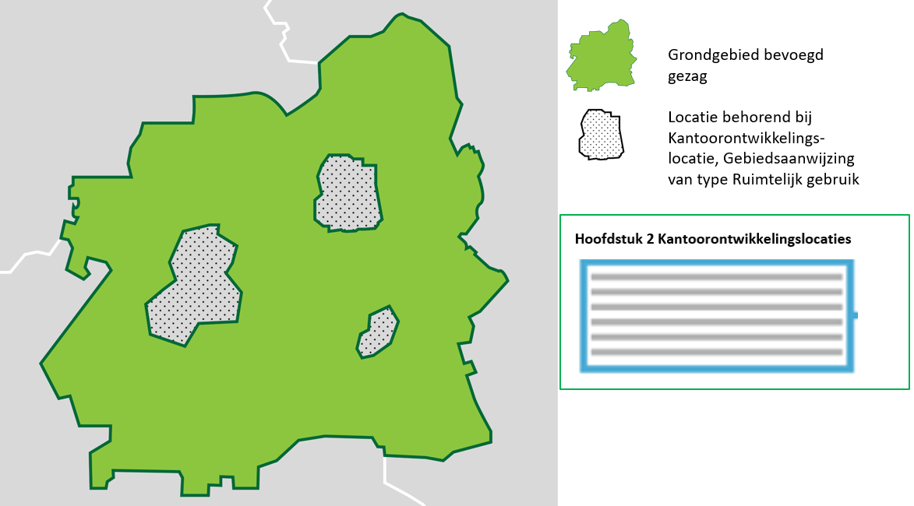Figuur 26Voorbeeld bedoeling van IMOW, omgevingsvisie
Bovenstaande afbeelding toont het grondgebied van een provincie en de Locatie, bestaande uit drie Gebieden (eventueel gegroepeerd in één Gebiedengroep), die hoort bij een hoofdstuk in de omgevingsvisie over kantoorontwikkelingslocaties. In haar omgevingsvisie legt de provincie vast dat zij de haar ter beschikking staande middelen wil inzetten om deze gebieden te ontwikkelen tot kantoorlocaties. De OW-objecten zijn niet bedoeld om vervolgens af te leiden dat er in de rest van het grondgebied van deze provincie geen kantoren aanwezig zijn of geen nieuwe kantoren kunnen komen. Dat is alleen zo wanneer het bevoegd gezag dat expliciet heeft bepaald, bijvoorbeeld door een Locatie voor de rest van het grondgebied op te nemen en daarvoor als beleidsvoornemen te formuleren dat bestaande leegstaande kantoorruimte wordt omgevormd tot woonruimte en dat geen nieuwe kantoorgebouwen worden toegestaan.
7 Annoteren met OW-objecten: productmodel, objecten en attributen
Dit hoofdstuk beschrijft de toepassing van het annoteren met OW-objecten op het omgevingsplan. De objecten, de bijbehorende attributen en waardelijsten worden gedetailleerd toegelicht. Paragraaf 7.1 bevat het productmodel voor het omgevingsplan in de vorm van een IMOW-UML-klassediagram, met een korte toelichting op het diagram. In de paragrafen 7.2 tot en met 7.10 worden in detail de OW-objecten en hun attributen en de toepassing van het annoteren met die objecten op het omgevingsplan beschreven. Ieder onderdeel wordt volgens een vast stramien beschreven. Het begint met een toelichting op de toepassing: waarvoor en wanneer wordt het object of attribuut in de praktijk gebruikt. Daarna volgt een definitie van het object, om precies aan te geven waar het over gaat. In de volgende subparagraaf wordt aangegeven wat het doel van het objecttype is, met andere woorden: wat is het resultaat, wat levert de extra inspanning van het annoteren met dit object op? Vervolgens wordt de norm gesteld. Deze subparagraaf begint steeds met een uitsnede van het IMOW-diagram met daarin die objecten en relaties die relevant zijn. De norm somt de attributen op die horen bij dit OW-object, waarbij wordt aangegeven of het attribuut verplicht of optioneel is, hoe vaak het attribuut kan of moet voorkomen, of er een waardelijst voor het attribuut bestaat en of er constraints, oftewel voorwaarden voor de toepassing, gelden. De daaropvolgende subparagraaf geeft een toelichting op de attributen, de waardelijsten en de eventuele constraints die samen de norm vormen.
In de laatste twee paragrafen van dit hoofdstuk wordt beschreven op welk niveau annotaties worden geplaatst en wordt aangegeven hoe het annoteren wordt toegepast wanneer een deel van norm of beleid in een bijlage staat.
Daar waar in dit hoofdstuk de naam van een OW-object gebruikt wordt, wordt die naam met een hoofdletter geschreven. De namen van attributen van objecten worden cursief gedrukt.
7.1 Productmodel: het IMOW-UML-diagram voor het omgevingsplan
Figuur 27 toont het volledige IMOW-diagram in UML voor het Lichaam van de Regeling van het omgevingsplan: het deel dat de artikelen met de inhoud bevat.
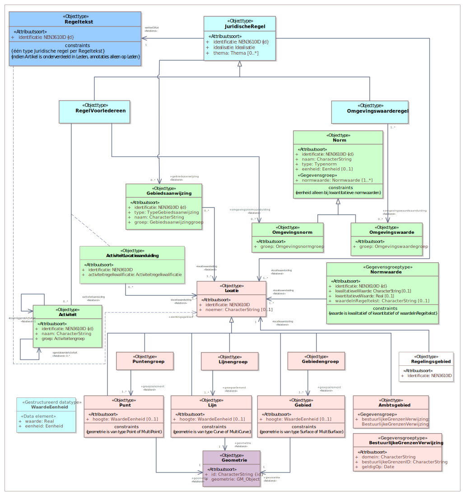Figuur 27IMOW-UML-klassediagram voor het omgevingsplan
In het diagram zijn in blauw de tekstobjecten weergegeven: Regeltekst en Juridische regel (inclusief zijn drie typen). Regeltekst (in het donkerblauwe blokje) is het koppelobject naar STOP. In roze is Locatie met zijn verschijningsvormen weergegeven. De groene blokjes staan voor de domeinspecifieke annotatie-objecten Activiteit, Omgevingswaarde, Omgevingsnorm en Gebiedsaanwijzing. Tekst, Locatie en Annotatie zijn de hoofdcomponenten van IMOW die in paragraaf 6.1 al zijn beschreven. Het witte blokje is het Regelingsgebied. In het model is aangegeven welke waardelijsten van toepassing zijn. Het model bevat ook de attributen die nodig zijn om domeinspecifieke annotaties op een kaart weer te kunnen geven. In de navolgende paragrafen worden de objecten in detail beschreven.
7.2 Objecttype Regeltekst
7.2.1 Toelichting op de toepassing
Regeltekst is de STOP/TPOD-term voor de kleinste zelfstandige eenheid van ordening en informatie in het Lichaam van een Regeling van een omgevingsdocument met Artikelstructuur: artikel of lid. Regeltekst bevat altijd ten minste één Juridische regel; wanneer dat nodig is kan Regeltekst meerdere Juridische regels bevatten. Iedere Regeltekst heeft een werkingsgebied-relatie met Locatie, waarmee wordt aangegeven waar een Regeltekst zijn werking heeft. Opgemerkt wordt dat het annoteren van Juridische regel met OW-objecten via het koppelobject Regeltekst wordt gekoppeld aan de STOP-elementen Artikel en Lid. Artikel en Lid zijn in STOP elementen die inhoud bevatten en geen structuurelementen. Omgevingsdocumenten met Artikelstructuur kunnen dus, anders dan omgevingsdocumenten met Vrijetekststructuur, niet geannoteerd worden op het niveau van structuurelementen zoals Hoofdstuk en Afdeling.
7.2.2 Definitie
Regeltekst is de kleinste zelfstandige eenheid van (een of meer) bij elkaar horende Juridische regels in het Lichaam van de Regeling van omgevingsdocumenten met Artikelstructuur, te weten een artikel of een lid.
7.2.3 Doel
Doel van het objecttype Regeltekst is het leggen van de verbinding tussen de Juridische regel uit het Omgevingswet-domein en het artikel of lid uit STOP.
7.2.4 Norm
Figuur 28Uitsnede uit IMOW-diagram voor objecttype Regeltekst
Regeltekst kent de volgende attributen:
identificatie: de unieke identificatie waaronder elk object van dit type bekend is. Identificatie conform datatype NEN3610-ID. Verplicht attribuut. Komt 1 keer voor.
Regeltekst kent geen waardelijsten.
Regeltekst kent de volgende constraints:
één type Juridische regel per Regeltekst; constraint geldig op het niveau van Artikel: alle Juridische regels in een Artikel en alle Juridische regels in alle Leden van een Artikel moeten van hetzelfde type zijn;
indien Artikel is onderverdeeld in Leden, annotaties alleen op Leden.
7.2.5 Toelichting op de norm
Attributen
Het attribuut identificatie behoeft geen toelichting.
In de uitsnede van het diagram is ook de relatie werkingsgebied te zien. Deze relatie is de verwijzing van een specifieke Regeltekst naar (de identificatie van) de bijbehorende Locatie(s). De relatie is in een onderbroken lijn weergegeven omdat het een conceptuele relatie is. De relatie is impliciet inbegrepen in de relatie tussen Regeltekst, Juridische regel en Locatie en geeft aan wat het werkingsgebied van de Regeltekst is: het gebied waar het Artikel of Lid zijn werking heeft. De relatie wordt afgeleid in DSO-LV waarbij de som van de locaties van de onderliggende Juridische regels wordt gebruikt. Het is dus niet zo dat het bevoegd gezag ook nog een afzonderlijke geometrie voor het werkingsgebied moet aanleveren.
Regeltekst kent geen waardelijsten.
Constraints
‘één type Juridischeregel per Regeltekst: deze constraint betekent dat alle Juridische regels in een Regeltekst van hetzelfde type moeten zijn. Deze voorwaarde dient het doel van het onderscheid in de verschillende typen Juridische regel, namelijk het als uitgangssituatie alleen tonen van die regels die op de betreffende doelgroep gericht zijn. De typen Juridische regel en de achterliggende doelgroepbenadering worden toegelicht bij Juridische regel in paragraaf 7.3.5. Deze constraint geldt op het niveau van Artikel: alle Juridische regels in een Artikel en alle Juridische regels in alle Leden van een Artikel moeten van hetzelfde type zijn.
indien Artikel is onderverdeeld in Leden, annotaties alleen op Leden: deze constraint houdt in dat als een Artikel is onderverdeeld in Leden, de annotaties alleen mogen verwijzen naar de Leden en niet naar het Artikel, oftewel annotaties worden dan alleen op Lid-niveau toegepast. Deze constraint heeft ook tot gevolg dat als een Artikel is onderverdeeld in Leden, alleen de Leden kunnen worden geannoteerd als Regeltekst en Artikel niet.
7.3 Objecttype Juridische regel
7.3.1 Toelichting op de toepassing
Juridische regel is een conceptuele constructie, die in IMOW wordt gebruikt om verschillende onderdelen van een Regeltekst, bijvoorbeeld de onderdelen van een Lijst of de verschillende activiteiten die in een Regeltekst worden genoemd, een eigen Locatie te kunnen geven. Ook maakt Juridische regel het mogelijk om verschillende onderdelen van een Regeltekst een eigen thema te geven en/of te annoteren met verschillende annotaties Activiteit, Omgevingsnorm, Omgevingswaarde en Gebiedsaanwijzing. Juridische regel is altijd onderdeel van een Regeltekst en, zoals we in de paragrafen 6.1.1 en 7.2 al hebben gezien, Regeltekst kan meerdere Juridische regels bevatten. In een Regeltekst met meerdere Juridische regels zijn de individuele Juridische regels niet als zelfstandige eenheid te identificeren.
Bij de Juridische regel moet worden aangegeven hoe nauwkeurig het bevoegd gezag de Locatie van die Juridische regel bedoeld heeft en hoe Locatie geïnterpreteerd moet worden. Een Locatie kan exact bedoeld zijn, maar ook indicatief. Een voorbeeld van dat laatste is als een grens met een formule berekend is; de grens houdt dan geen rekening met de situering van objecten als woningen e.d. terwijl dat in de interpretatie wel zou moeten. Ook kan een Locatie in een omgevingsdocument bedoeld zijn als indicatie of zoekzone voor de plek voor een toekomstige ontwikkeling: pas later wordt de daadwerkelijke plek bepaald.
Met het OW-object Juridische regel kan extra informatie aan de Juridische regel worden gekoppeld: tot welke regelsoort de Juridische regel behoort, wat het thema is waarover de Juridische regel gaat en met welk OW-object of met welke OW-objecten de Juridische regel geannoteerd is.
Juridische regel heeft drie typen: Regel voor iedereen, Instructieregel en Omgevingswaarderegel. Doel van deze typen is het eenvoudig kunnen selecteren van regeltekst voor een specifieke gebruikersgroep, waardoor iedere gebruikersgroep als uitgangssituatie alleen die regels krijgt voorgelegd die voor die groep van belang zijn. Daartoe wordt onderscheid gemaakt tussen instructieregels, die alleen voor andere overheden zijn bedoeld, omgevingswaarderegels, die op zichzelf alleen werking hebben voor de bestuursorganen van het bevoegd gezag dat de omgevingswaarde heeft vastgesteld, en regels die voor iedereen van belang zijn. Uiteraard wordt alleen dat type gekozen dat in het betreffende omgevingsdocument kan voorkomen. Instructieregels kunnen alleen voorkomen in AMvB, ministeriële regeling en omgevingsverordening. Omgevingswaarden kunnen alleen in AMvB, omgevingsverordening en omgevingsplan voorkomen. Regels voor iedereen tot slot kunnen voorkomen in alle omgevingsdocumenten met regels. Het type Juridische regel geeft dus aan tot welke soort een Juridische regel behoort en voor wie de Juridische regel bedoeld is.
Instructieregels kunnen worden gesteld over de uitoefening van een bevoegdheid of een taak. Ze richten zich dus tot een bepaald instrument of een taakuitoefening. Om met behulp van een computer snel te kunnen selecteren welke instructieregels relevant zijn, wordt aan Instructieregel extra informatie toegevoegd: richt de instructieregel zich tot een instrument, en zo ja tot welk instrument, of gaat het over de uitoefening van een taak en zo ja wie moet die taak uitoefenen.
Bij Regeltekst is de voorwaarde opgenomen dat alle Juridische regels binnen één Regeltekst van hetzelfde type moeten zijn, zie hiervoor ook paragraaf 7.2. Op deze manier wordt voorkomen dat Juridische regels die voor verschillende doelgroepen bedoeld zijn bij elkaar in één lid respectievelijk artikel worden geplaatst. Dit komt het tonen van regels per doelgroep ten goede.
7.3.2 Definitie
Juridische regel is het objecttype, te gebruiken in het Lichaam van de Regeling van omgevingsdocumenten met Artikelstructuur, dat een regel met juridische werkingskracht beschrijft.
7.3.3 Doel
Doel van het objecttype Juridische regel is:
het kunnen verbinden van verschillende onderdelen van een Regeltekst met eigen Locaties;
het kunnen annoteren van verschillende onderdelen van een Regeltekst met thema en de domeinspecifieke annotaties Activiteit, Omgevingsnorm, Omgevingswaarde en de verschillende typen Gebiedsaanwijzing;
het kunnen leggen van relaties tussen de domeinspecifieke annotaties, waardoor de Juridische regel als geheel machineleesbaar wordt;
het, door middel van het attribuut thema, in samenhang kunnen tonen van verschillende Juridische regels binnen hetzelfde omgevingsdocument;
het kunnen selecteren van Regelteksten naar doelgroep door middel van de keuze voor het type Juridische regel;
het kunnen leggen van verbindingen tussen onderdelen van verschillende omgevingsdocumenten, bijvoorbeeld een omgevingsvisie en een omgevingsverordening, die met hetzelfde thema zijn geannoteerd.
7.3.4 Norm
Figuur 29Uitsnede uit IMOW-diagram voor objecttype Juridische regel
Juridische regel kent de volgende attributen en waardelijsten:
identificatie: de unieke identificatie waaronder elk object van dit type bekend is. Identificatie conform datatype NEN3610-ID. Verplicht attribuut. Komt 1 keer voor.
idealisatie: attribuut dat vastlegt op welke manier de begrenzing van Locatie voor deze Juridische regel geïnterpreteerd moet worden en door het bevoegd gezag bedoeld is. Te kiezen uit de limitatieve waardelijst ‘Idealisatie’. Verplicht attribuut. Komt 1 keer voor.
thema: de naam van het thema van de Juridische regel, te kiezen uit de limitatieve waardelijst ‘Thema’. Optioneel attribuut. Komt zo vaak voor als gewenst.
locatieaanduiding: de verwijzing van een specifieke Juridische regel naar (de identificatie van) de bijbehorende Locatie(s); attribuut dat een of meer specifieke Locatie(s) aanduidt waar deze Juridische regel van toepassing is. Verplicht attribuut. Komt ten minste 1 keer voor.
gebiedsaanwijzing: de verwijzing van een specifieke Juridische regel naar (de identificatie van) een Gebiedsaanwijzing; attribuut dat vastlegt dat de Juridische regel met (één van de typen van) het object Gebiedsaanwijzing geannoteerd is. Optioneel attribuut. Komt zo vaak voor als gewenst.
artikelOfLid: de verwijzing van een specifieke Juridische regel naar de Regeltekst oftewel het artikel of lid waar de Juridische regel onderdeel van is. Verplicht attribuut. Komt 1 keer voor.
kaartaanduiding: de verwijzing van een specifieke Juridische regel naar (de identificatie van) de Kaart waarop de Locaties en OW-objecten worden weergegeven die horen bij de betreffende Juridische regel. Optioneel attribuut. Komt zo vaak voor als gewenst.
Juridische regel kent drie typen:
Regel voor iedereen: een Juridische regel die voor eenieder relevant is of relevant kan zijn; te gebruiken voor iedere Juridische regel die geen Instructieregel of Omgevingswaarderegel is. Regel voor iedereen heeft alle attributen van Juridische regel, aangevuld met:
activiteitaanduiding: de verwijzing van een specifieke Juridische regel naar (de identificatie van) een Activiteit; attribuut dat vastlegt dat de Juridische regel met het object Activiteit geannoteerd is. Optioneel attribuut. Komt zo vaak voor als gewenst.
omgevingsnormaanduiding: de verwijzing van een specifieke Juridische regel van het type Regel voor iedereen naar (de identificatie van) een Omgevingsnorm; attribuut dat vastlegt dat de Juridische regel met het object Omgevingsnorm geannoteerd is. Optioneel attribuut. Komt zo vaak voor als gewenst.
Instructieregel: regel als bedoeld in paragraaf 2.5.1 Omgevingswet, gericht tot een ander bestuursorgaan of bestuurlijke organisatie. Instructieregels kunnen niet voorkomen in het omgevingsplan. Daarom wordt dit type Juridische regel hier niet verder besproken.
Omgevingswaarderegel: regel over een omgevingswaarde als bedoeld in afdeling 2.3 Omgevingswet, die op zichzelf alleen gericht is tot de bestuursorganen van het bevoegd gezag dat de omgevingswaarde heeft vastgesteld. Omgevingswaarderegel heeft alle attributen van Juridische regel, aangevuld met:
omgevingswaardeaanduiding: de verwijzing van een specifieke Juridische regel van het type Omgevingswaarderegel naar (de identificatie van) een Omgevingswaarde; attribuut dat vastlegt dat de Juridische regel met het object Omgevingswaarde geannoteerd is. Optioneel attribuut. Komt zo vaak voor als gewenst.
Juridische regel kent de volgende constraint:
instructieregelInstrument of instructieregelTaakuitoefening.
Ook is voor Juridische regel relevant dat het objecttype Regeltekst de constraint heeft dat alle Juridische regels in een Regeltekst van hetzelfde type moeten zijn. Zie hiervoor paragraaf 7.2.4.
Werkafspraak
Tot anders is bepaald in een volgende versie van dit toepassingsprofiel dan wel in een nader bericht van de beheerder van de TPOD-Standaard geldt de volgende werkafspraak:
Het attribuut idealisatie moet voor alle Juridische regels in een Regeltekst dezelfde waarde hebben.
7.3.5 Toelichting op de norm
Attributen en waardelijsten
idealisatie: attribuut dat aangeeft op welke manier het bevoegd gezag de begrenzing van Locatie voor een Juridische regel door bedoeld heeft: is het een exacte of een indicatieve afbakening? De waardelijst ‘Idealisatie’ kent twee waarden: exact en indicatief. Hiermee kan worden aangegeven of de begrenzing van Locatie voor deze Juridische regel exact of indicatief bedoeld is. Wanneer wordt gekozen voor de waarde indicatief geeft dat alleen aan dat de begrenzing indicatief bedoeld is. Met idealisatie wordt niet vastgelegd met welke marge de indicatieve begrenzing bedoeld is. Het attribuut idealisatie is in IMOW gepositioneerd als attribuut van Juridische regel. Dat lijkt misschien vreemd omdat het informatie geeft over de gewenste interpretatie van Locatie. Toch hoort idealisatie bij Juridische regel omdat het vertelt hoe de Locatie voor déze Juridische regel geïnterpreteerd moet worden. Op deze manier is het mogelijk om dezelfde Locatie ook voor een andere Juridische regel te (her)gebruiken en voor die Juridische regel een andere idealisatie te geven. Figuur 30 geeft hiervan een voorbeeld. De artikelen 3.28 en 5.7 van een omgevingsverordening gaan over dezelfde Locatie ‘provinciale wegen’. Artikel 3.28 bevat een Juridische regel van het type Regel voor iedereen; met de waarde exact voor idealisatie wordt aangegeven dat voor deze Juridische regel de begrenzing exact is bedoeld. Wanneer een omgevingsvergunning voor een uitweg wordt aangevraagd voor een plek die ligt binnen de begrenzing is deze (beoordelings)regel daarop van toepassing; ligt de plek net daarbuiten dan is de regel daar niet van toepassing. In artikel 5.7 staat een Juridische regel van het type Instructieregel. Met de waarde indicatief voor idealisatie heeft de provincie aangegeven dat voor deze Juridische regel de begrenzing indicatief is bedoeld.
Figuur 30Gebruik van idealisatie bij twee Juridische regels over dezelfde Locatie
thema: attribuut dat kernachtig de grondgedachte van de Juridische regel weergeeft. Het thema is een aanduiding van het aspect van de fysieke leefomgeving waar de Juridische regel over gaat. Om harmonisatie tussen bevoegde gezagen en tussen instrumenten te bevorderen is er een waardelijst voor thema. Het overgrote deel van de waarden van deze waardelijst is rechtstreeks ontleend aan artikel 1.2 Ow, waarin is aangegeven welke aspecten de fysieke leefomgeving omvat. In 1 wordt de relatie tussen artikel 1.2 Ow en de waarden van de waardelijst gelegd. Per Juridische regel kunnen net zoveel thema’s worden toegevoegd als gewenst is. thema is een attribuut en geen object. Het kent daardoor geen eigen weergave. Met het attribuut thema kan het thema van een Juridische regel worden aangegeven. thema kan bijvoorbeeld worden gebruikt om alle Juridische regels over een bepaald thema in eenzelfde omgevingsdocument te selecteren, of om van verschillende omgevingsdocumenten de Juridische regels en/of Tekstdelen met hetzelfde thema te selecteren. Afhankelijk van de functionaliteit die een viewer biedt is het vervolgens ook mogelijk om de Locaties van alle Juridische regels en/of Tekstdelen met hetzelfde thema op een kaartbeeld weer te geven. Overwogen wordt om aan het objecttype Juridische regel een attribuut subthema toe te voegen waarmee het bevoegde gezag desgewenst binnen een thema een nadere specialisatie kan aanbrengen.
locatieaanduiding: attribuut dat de verwijzing bevat naar de identificatie van de Locatie(s) die bij de Juridische regel horen én aangeeft wat de betekenis van die Locatie(s) is voor het object waar het bij hoort; in dit geval voor Juridische regel. Dit attribuut legt dus vast dat deze Locatie(s) de locatie(s) is (zijn) waar deze Juridische regel van toepassing is. Iedere Juridische regel heeft een verwijzing naar één of meer Locaties. Ook de objecten ActiviteitLocatieaanduiding, Omgevingsnorm, Omgevingswaarde en (de verschillende typen) Gebiedsaanwijzing hebben een verwijzing naar één of meer Locaties. Op deze manier is van iedere Juridische regel, ongeacht het object of de objecten waarmee het is geannoteerd, duidelijk voor welke Locatie(s) deze geldt. Doordat ieder specifiek voorkomen van de objecten ActiviteitLocatieaanduiding, Omgevingsnorm, Omgevingswaarde en (de verschillende typen) Gebiedsaanwijzing ook zelf een verwijzing naar één of meer Locaties heeft, kan van iedere Activiteit - ActiviteitLocatieaanduiding-combinatie, Omgevingsnorm, Omgevingswaarde en Gebiedsaanwijzing worden getoond voor welke Locatie(s) deze geldt, onafhankelijk van de Juridische regels waarin hij geldt.
artikelOfLid: attribuut voor de verwijzing van een Juridische regel naar de identificatie van de Regeltekst oftewel het artikel of lid waarin de Juridische regel voorkomt.
activiteitaanduiding, gebiedsaanwijzing, omgevingswaardeaanduiding en omgevingsnormaanduiding: de attributen die de verwijzing bevatten van de Juridische regel (of het type Juridische regel) naar de identificatie van de domeinspecifieke annotatie oftewel Activiteit, Gebiedsaanwijzing, Omgevingswaarde en/of Omgevingsnorm. Samen met die domeinspecifieke annotatie duiden deze attributen aan waar de Juridische regel over gaat: over een activiteit, over een van de typen gebiedsaanwijzing, over een omgevingswaarde en/of over een omgevingsnorm.
kaartaanduiding: attribuut dat de verwijzing bevat van de Juridische regel naar de identificatie van een specifiek Kaartobject. Met het objecttype Kaart kan bij een Juridische regel een specifieke kaart worden gegenereerd waarop alle bij die Juridische regel behorende Locaties en OW-objecten worden weergegeven. Het is ook mogelijk om vanuit meerdere Juridische regels te verwijzen naar dezelfde Kaart. Daardoor ontstaat een gecombineerd kaartbeeld met alle kaartgerelateerde informatie uit alle Juridische regels die naar dezelfde Kaart verwijzen. Zie voor het objecttype Kaart paragraaf 7.11.
De drie typen van Juridische regel geven aan tot welke soort een Juridische regel behoort en geven daarvan indien nodig een nadere specificatie. Zoals in paragraaf 7.3.1 al is uitgelegd is het doel daarvan het eenvoudig kunnen selecteren van regels voor een specifieke gebruikersgroep, waardoor een gebruiker in principe alleen die regels krijgt voorgelegd die voor hem of haar van belang zijn. Daartoe wordt onderscheid gemaakt tussen instructieregels, die alleen voor andere overheden zijn bedoeld, omgevingswaarderegels, die op zichzelf alleen werking hebben voor de bestuursorganen van het bevoegd gezag dat de omgevingswaarde heeft vastgesteld, en regels die voor iedereen van belang zijn.
Wanneer de Juridische regel een instructieregel is, wordt gekozen voor het type ‘Instructieregel’. Instructieregels zijn regels die door provincie of Rijk bij omgevingsverordening, AMvB of ministeriële regeling worden gesteld over de uitoefening van taken of bevoegdheden door bestuursorganen om te voldoen aan in de omgevingsverordening, AMvB of ministeriële regeling vastgestelde omgevingswaarden of voor het bereiken van andere doelstellingen voor de fysieke leefomgeving. Ze zijn dus in de basis alleen voor andere overheden bedoeld en niet, of veel minder, voor iedereen van belang. Opgemerkt wordt dat beoordelingsregels in strikt juridische zin gezien zouden kunnen worden als een bijzondere vorm van instructieregel omdat het een opdracht van het ene aan het andere bestuursorgaan is om bij het beoordelen van een aanvraag om omgevingsvergunning bepaalde criteria te betrekken. In het kader van de standaarden worden beoordelingsregels niet als instructieregels gezien, maar als Regel voor iedereen. Dat is omdat ze voor eenieder van belang zijn om te bezien of een aanvraag tot een vergunning kan leiden of dat een aanpassing van de aanvraag leidt tot een grotere kans op een vergunning.
Instructieregels kunnen niet voorkomen in het omgevingsplan. Daarom wordt dit type Juridische regel hier niet verder besproken.
Het type ‘Omgevingswaarderegel’ is voor de Juridische regels die gaan over een omgevingswaarde. Dit type wordt gekozen voor Juridische regels over omgevingswaarden die alleen werking hebben voor de bestuursorganen van het bevoegd gezag dat de omgevingswaarde heeft vastgesteld. Voor regels die omgevingswaarden concreet maken, bijvoorbeeld regels met een vergunningplicht die bijdraagt aan het bereiken van de omgevingswaarde, is dit type niet bedoeld; dan moet worden gekozen voor het type ‘Regel voor iedereen’. Het type ‘Omgevingswaarderegel’ kent geen nadere specificatie of waardelijst.
Wanneer de Juridische regel geen instructieregel is en ook geen omgevingswaarderegel, moet het type ‘Regel voor iedereen’ gekozen worden.
In het model is vastgelegd met welke domeinspecifieke OW-objecten een type Juridische regel geannoteerd kan worden. Het object Activiteit kan alleen gebruikt worden in combinatie met een Regel voor iedereen. Het object Omgevingsnorm kan worden toegepast in combinatie met een Regel voor iedereen en een Instructieregel. Het object Omgevingswaarde kan alleen worden gebruikt in combinatie met een Omgevingswaarderegel. Het object Gebiedsaanwijzing kan worden toegepast in combinatie met alle typen Juridische regel. In het IMOW-diagram is dat te zien doordat het attribuut gebiedsaanwijzing verwijst van Juridische regel naar het object Gebiedsaanwijzing en niet vanuit een van de typen Juridische regel.
In AMvB, ministeriële regeling en omgevingsverordening kunnen alle drie de typen Juridische regel voorkomen. Het omgevingsplan kan de typen ‘Regel voor iedereen’ en ‘Omgevingswaarderegel’ bevatten. In de waterschapsverordening ten slotte kan alleen het type ‘Regel voor iedereen’ voorkomen.
Constraints
instructieregelInstrument of instructieregelTaakuitoefening: deze constraint, die geldt voor de Juridische regel van het type Instructieregel, houdt in dat er bij een instructieregel altijd één van de genoemde attributen gekozen moet worden, met andere woorden: het is verplicht dat er precies één van de twee voorkomt, niet minder en niet meer.
Opgemerkt wordt dat voor Regeltekst de constraint geldt ‘één type Juridische regel per Regeltekst’. Dat betekent dat alle Juridische regels in een Regeltekst van hetzelfde type moeten zijn. Deze constraint is toegelicht in paragraaf 7.2.5.
Zoals gezegd kan een Regeltekst één of meer Juridische regels bevatten. Een Juridische regel kan geannoteerd worden met een of meer Gebiedsaanwijzingen, Activiteiten, Omgevingsnormen en/of Omgevingswaarden. Dit samen betekent dat IMOW het mogelijk maakt om een Juridische regel te annoteren met:
één of meer voorkomens van één objecttype (bijvoorbeeld één Activiteit);
combinaties van één of meer verschillende objecttypen (bijvoorbeeld meerdere Activiteiten, een Gebiedsaanwijzing en meerdere Omgevingsnormen).
Een Regeltekst kan daardoor één Juridische regel bevatten die is geannoteerd met meerdere objecten. Een Regeltekst kan ook meerdere Juridische regels bevatten die ieder zijn geannoteerd met één of meer objecten. IMOW maakt het zelfs mogelijk om in de Regeltekst net zoveel Juridische regels te onderscheiden als er objecten zijn. Het is aan het bevoegd gezag om hierin een keuze te maken.
Toelichting op werkafspraak
idealisatie is het attribuut van Juridische regel dat aangeeft op welke manier het bevoegd gezag de begrenzing van de Locatie(s) voor die Juridische regel bedoeld heeft: is het een exacte of een indicatieve afbakening? Bij een Regeltekst kunnen 1 of meer Juridische regels horen. Modelmatig is het toegestaan dat bij een Regeltekst zowel Juridische regels met een exacte als Juridische regels met een indicatieve idealisatie horen. Juridische regel is echter een abstract concept, waardoor in de tekst van een artikel of lid niet is aan te wijzen welke delen van de tekst horen bij welke Juridische regel en ook niet is aan te wijzen welke Locatie hoort bij welk deel van de tekst. Als bij een Regeltekst zowel Juridische regel(s) met een exacte als Juridische regel(s) met een indicatieve idealisatie horen kunnen viewers daardoor niet laten zien voor welk deel van de tekst van het artikel of lid de begrenzing van de Locatie exact of juist indicatief bedoeld is.
Daarom geldt, totdat in een volgende versie van dit toepassingsprofiel dan wel in een nader bericht van de beheerder van de TPOD-Standaard anders is bepaald, de werkafspraak ‘Het attribuut idealisatie moet voor alle Juridische regels in een Regeltekst dezelfde waarde hebben.’
7.4 Objecttype Locatie
7.4.1 Toelichting op de toepassing
Het OW-object Locatie geeft aan waar een Juridische regel of Tekstdeel en de domeinspecifieke annotaties Activiteit, Omgevingswaarde, Omgevingsnorm, de verschillende typen Gebiedsaanwijzing en de bijbehorende waarden van toepassing zijn. De optelling van alle Locaties van alle Juridische regels in een Regeltekst vormt het werkingsgebied van de Regeltekst; de optelling van alle Locaties van alle Tekstdelen in een Divisie of Divisietekst vormt het werkingsgebied van de Divisie of Divisietekst. Locatie wordt altijd vastgelegd in een GIO.
Locatie heeft zeven verschijningsvormen: Gebied, Gebiedengroep, Lijn, Lijnengroep, Punt, Puntengroep en Ambtsgebied. Optioneel kan de hoogteligging van het Gebied, de Lijn of de Punt worden vastgelegd. Toegestane geometrieën bij een Gebied zijn Surface en MultiSurface (de termen die de GML-standaard gebruikt voor Vlak en Multivlak); bij een Lijn zijn dat Curve en MultiCurve (GML-termen voor Lijn en Multilijn) en bij Punt tenslotte zijn toegestaan Point en MultiPoint (de GML-termen voor Punt en Multipunt). Bij MultiSurface worden meerdere vlakken samengevoegd tot één onlosmakelijk geheel. Wanneer slechts een onderdeel gewijzigd moet worden, leidt dat toch tot een wijziging van de hele MultiSurface. Datzelfde geldt voor MultiCurve en MultiPoint. Aanbevolen wordt om MultiSurface, MultiCurve en MultiPoint alleen te gebruiken wanneer het daadwerkelijk de bedoeling is dat er één onlosmakelijk geheel ontstaat. Een voorbeeld van een geval waarin zo’n onlosmakelijk geheel de bedoeling is, is een Omgevingswaarde of Omgevingsnorm die een gezamenlijke waarde voor een aantal vlakken stelt. Een andere manier van groepering is het samenvoegen van twee of meer Gebieden, Lijnen of Punten tot een Gebiedengroep, Lijnengroep respectievelijk Puntengroep. Op deze manier is het mogelijk om één van de Gebieden van een Gebiedengroep, één van de Lijnen van een Lijnengroep of één van de Punten van een Puntengroep te wijzigen. Punt is noodzakelijk voor het als omgevingswaarde vaststellen van geluidproductieplafonds; die hebben de vorm van een puntlocatie. Lijn wordt onder andere in het omgevingsplan gebruikt voor het aangeven van rooilijnen bij het stellen van regels over het situeren van bouwwerken. Voor het overige is het aan te bevelen om Punt en Lijn als Geometrie zoveel mogelijk te vermijden omdat bij raadplegen in een viewer een punt en een lijn lastig te vinden zijn.
Locaties kunnen onbeperkt gestapeld worden, dat wil zeggen dat Locaties elkaar geheel of gedeeltelijk kunnen overlappen. Dat geldt zowel voor Locaties met eenzelfde annotatie oftewel OW-object als voor Locaties met verschillende annotaties c.q. OW-objecten. Het is dus mogelijk om op exact dezelfde plek bijvoorbeeld de Locaties van verschillende Juridische regels of Tekstdelen, van een aantal Activiteiten, van een Omgevingswaarde, van een aantal Omgevingsnormen en diverse typen Gebiedsaanwijzing neer te leggen. Ook kunnen die Locaties elkaar gedeeltelijk overlappen. De navolgende figuren laten daarvan voorbeelden zien. De figuren laten mogelijke toepassingen in het omgevingsplan zien, maar zijn bedoeld om generiek voor omgevingsdocumenten het principe te illustreren.
Figuur 31Voorbeelden van stapeling van Locaties
7.4.2 Definitie
Locatie is het objecttype dat machineleesbaar vastlegt waar een Juridische regel, Tekstdeel en/of de domeinspecifieke objecttypen van toepassing zijn.
7.4.3 Doel
Doel van het objecttype Locatie is het met coördinaten vastleggen waar een Juridische regel, Tekstdeel, Activiteit, Omgevingsnorm, Omgevingswaarde, type Gebiedsaanwijzing en bij Omgevingsnorm en Omgevingswaarde behorende waarden van toepassing zijn.
7.4.4 Norm
Figuur 32Uitsnede uit IMOW-diagram voor objecttype Locatie
Locatie kent de volgende attributen:
identificatie: de unieke identificatie waaronder elk object van dit type bekend is. Identificatie conform datatype NEN3610-ID. Verplicht attribuut. Komt 1 keer voor.
noemer: de mensleesbare term of frase waarmee een Locatie wordt aangeduid. Optioneel attribuut. Komt 0 of 1 keer voor.
Locatie kent zeven verschijningsvormen:
Gebied: op zichzelf staande geometrisch afgebakende ‘ruimte’ in een virtuele weergave van de fysieke leefomgeving. De geometrische afbakening is juridisch van aard. Gebied heeft alle attributen van Locatie, aangevuld met:
hoogte: de hoogte waarop het Gebied ligt of de hoogte binnen het Gebied waarop de Juridische regel of het Tekstdeel van toepassing is. Optioneel attribuut. Komt 0 of 1 keer voor. Wordt vastgelegd met WaardeEenheid, dat bestaat uit de volgende elementen:
waarde: de numerieke waarde van de hoogte. Verplicht element indien het attribuut hoogte wordt gebruikt.
eenheid: de grootheid waarin de hoogte wordt uitgedrukt. Voor eenheid kan gebruik gemaakt worden van de uitbreidbare waardelijst 'Eenheid’. Verplicht element indien het attribuut hoogte wordt gebruikt.
geometrie: de verwijzing van een specifiek Gebied naar (de identificatie van) de bijbehorende Geometrie. Verplicht attribuut. Komt 1 keer voor.
Gebiedengroep: een groep of verzameling van bij elkaar behorende Gebieden, die samen de Locatie vormen. Gebiedengroep heeft alle attributen van Locatie, aangevuld met:
groepselement: de verwijzing van een Gebiedengroep naar de Gebieden die samen de Gebiedengroep vormen. Verplicht attribuut. Komt ten minste 1 keer voor.
Lijn: op zichzelf staande geometrisch afgebakende lijnlocatie in een virtuele weergave van de fysieke leefomgeving. De geometrische afbakening is juridisch van aard. Lijn heeft alle attributen van Locatie, aangevuld met:
hoogte: de hoogte waarop de Lijn ligt. Optioneel attribuut. Komt 0 of 1 keer voor. Wordt vastgelegd met WaardeEenheid, dat bestaat uit de volgende elementen:
waarde: de numerieke waarde van de hoogte. Verplicht element indien het attribuut hoogte wordt gebruikt.
eenheid: de grootheid waarin de hoogte wordt uitgedrukt. Voor eenheid kan gebruik gemaakt worden van de uitbreidbare waardelijst 'Eenheid’. Verplicht element indien het attribuut hoogte wordt gebruikt.
geometrie: de verwijzing van een specifieke Lijn naar (de identificatie van) de bijbehorende Geometrie. Verplicht attribuut. Komt 1 keer voor.
Lijnengroep: een groep of verzameling van bij elkaar behorende Lijnen, die samen de Locatie vormen. Lijnengroep heeft alle attributen van Locatie, aangevuld met:
groepselement: de verwijzing van een Lijnengroep naar de Lijnen die samen de Lijnengroep vormen. Verplicht attribuut. Komt ten minste 1 keer voor.
Punt: op zichzelf staande geometrisch afgebakende puntlocatie in een virtuele weergave van de fysieke leefomgeving. De geometrische afbakening is juridisch van aard. Punt heeft alle attributen van Locatie, aangevuld met:
hoogte: de hoogte waarop de Punt ligt. Optioneel attribuut. Komt 0 of 1 keer voor. Wordt vastgelegd met WaardeEenheid, dat bestaat uit de volgende elementen:
waarde: de numerieke waarde van de hoogte. Verplicht element indien het attribuut hoogte wordt gebruikt.
eenheid: de grootheid waarin de hoogte wordt uitgedrukt. Voor eenheid kan gebruik gemaakt worden van de uitbreidbare waardelijst 'Eenheid’. Verplicht element indien het attribuut hoogte wordt gebruikt.
geometrie: de verwijzing van een specifieke Punt naar (de identificatie van) de bijbehorende Geometrie. Verplicht attribuut. Komt 1 keer voor.
Puntengroep: een groep of verzameling van bij elkaar behorende Punten, die samen de Locatie vormen. Puntengroep heeft alle attributen van Locatie, aangevuld met:
groepselement: de verwijzing van een Puntengroep naar de Punten die samen de Puntengroep vormen. Verplicht attribuut. Komt ten minste 1 keer voor.
Ambtsgebied: bijzondere vorm van Gebied, zijnde een op zichzelf staande geometrisch afgebakende ‘ruimte’ in een virtuele weergave van de fysieke leefomgeving, die samenvalt met het ambtsgebied van een bepaald bevoegd gezag: het gebied waarover dat bevoegd gezag de bevoegdheid tot regeling en bestuur heeft. Ambtsgebied heeft alle attributen van Locatie, aangevuld met:
bestuurlijkeGrenzenVerwijzing: attribuut dat de gegevens voor het doen van een verwijzing naar de bestuurlijkeGrenzen-voorziening bevat. bestuurlijkeGrenzenVerwijzing wordt ingevuld met de gegevensgroep BestuurlijkeGrenzenVerwijzing die de volgende attributen kent:
bestuurlijkeGrenzenID: de identificatie van het gebied in de bestuurlijkegrenzenvoorziening: de CBS-code respectievelijk de RVIG-code van het bevoegd gezag, inclusief de letteraanduiding in hoofdletters van de bestuurslaag;
domein: het onderdeel van de bestuurlijkeGrenzen-voorziening waarin de ambtsgebieden worden bijgehouden. Verplicht attribuut. Komt 1 keer voor. Wordt ingevuld met de verplichte waarde ‘NL.BI.BestuurlijkGebied’.
geldigOp: de datum waarop Ambtsgebied geldig is. Verplicht attribuut. Komt 1 keer voor. De verwijzing is altijd statisch: met de Locatie Ambtsgebied wordt bedoeld het ambtsgebied zoals dat gold op de ingevulde datum.
Locatie kent geen waardelijsten.
Locatie kent de volgende constraints:
(bij Gebied): geometrie is van type Surface of MultiSurface;
(bij Lijn): geometrie is van type Curve of MultiCurve;
(bij Punt): geometrie is van type Point of MultiPoint.
7.4.5 Toelichting op de norm
noemer: de mensleesbare term of frase waarmee de Locatie wordt aangeduid en beschreven, waardoor er, indien relevant, naar de Locatie kan worden verwezen. Let op: de noemer is niet altijd gelijk aan de naam van het GIO. Het gebruik van noemer is optioneel omdat een noemer niet altijd zinvol is en omdat er Locaties zijn die niet met een term of frase te benoemen zijn. Dat geldt bijvoorbeeld voor de losse Locaties binnen een Gebiedengroep. Voorbeelden van noemer voor omgevingsplan respectievelijk omgevingsverordening, waarbij de noemer in cursieve tekst is weergegeven, zijn: Ter plaatse van de functie Levendig stadscentrum zijn de volgende activiteiten toegestaan. Nieuwe luidruchtige activiteiten en gedragingen zijn in een stiltegebied verboden. Locatie kan de locatie zijn van een Juridische regel of Tekstdeel (en daarmee, al dan niet samen met andere Locaties, het werkingsgebied van de Regeltekst, de Divisie of de Divisietekst), en/of de Locatie van een van de domeinspecifieke annotaties Activiteit, Gebiedsaanwijzing, Omgevingsnorm en Omgevingswaarde. Het hangt af van het objecttype waarmee de Locatie wordt gecombineerd of het gebruik van het attribuut noemer zinvol is of niet. Bij de beschrijving van die objecttypen wordt dit aangegeven.
hoogte: optioneel attribuut waarmee voor Gebied, Lijn en Punt de hoogteligging kan worden vastgelegd. hoogte wordt vastgelegd met WaardeEenheid, dat bestaat uit de elementen waarde en eenheid. waarde legt de hoogte in een getal vast, eenheid geeft aan in welke grootheid de hoogte moet worden gemeten. Voor eenheid kan gebruik gemaakt worden van de uitbreidbare waardelijst 'Eenheid’. Zie voor de -vooralsnog beperkte- betekenis van uitbreidbare waardelijsten paragraaf 3.5. Het gebruik van het attribuut hoogte maakt een (zeer beperkte) benadering van 3D mogelijk. hoogte kan bijvoorbeeld worden gebruikt om van (de omgevingswaarde) geluidproductieplafonds aan te geven op welke hoogte ze gelden; in dat geval wordt de eenheid meter gekozen.
geometrie: attribuut dat de verwijzing bevat van een specifiek Gebied, Lijn of Punt naar de identificatie van de bijbehorende Geometrie. Dit attribuut legt dus vast dat deze Geometrie bij het betreffende Gebied, Lijn of Punt hoort. Bij Ambtsgebied kan er geen geometrie worden meegeleverd.
bestuurlijkeGrenzenVerwijzing: attribuut waardoor DSO-LV weet dat de inhoud van dit object te vinden is in een andere voorziening, alleen te gebruiken bij Ambtsgebied. Het bijhouden van het Ambtsgebied gebeurt in de bestuurlijkeGrenzen-voorziening. Het attribuut bestuurlijkeGrenzenVerwijzing maakt gebruik van de gegevensgroep BestuurlijkeGrenzenVerwijzing. In het navolgende worden de attributen van BestuurlijkeGrenzenVerwijzing toegelicht.
bestuurlijkeGrenzenID: de identificatie van het Ambtsgebied. Deze is gelijk aan de bevoegd-gezag-code. Voor gemeenten, provincies en waterschappen is dat de CBS-code, inclusief de letteraanduiding van de bestuurslaag. Een voorbeeld daarvan is GM0297 voor de gemeente Zaltbommel. Voor het Rijk wordt de RVIG-code gehanteerd. Aan de hand van deze code weet DSO-LV van welk bevoegd gezag het ambtsgebied uit de bestuurlijkeGrenzen-voorziening getoond moet worden
domein: attribuut dat aangeeft welke van de onderdelen van de bestuurlijkeGrenzen-voorziening moet worden bevraagd: het bestuurlijk gebied;
geldigOp: attribuut waardoor DSO-LV weet welke versie van het ambtsgebied getoond moet worden: het Ambtsgebied zoals dat geldig was op de ingevulde datum. Wanneer naar aanleiding van een bestuurlijke herindeling of andere grenscorrectie het ambtsgebied is gewijzigd, kan met een wijzigingsbesluit het Ambtsgebied-object gewijzigd worden door de geldigOp-datum van de bestuurlijkeGrenzenVerwijzing te wijzigen.
Met uitzondering van Locatie in de verschijningsvorm van Ambtsgebied wordt Locatie altijd vastgelegd in een GIO.
Ambtsgebied
Het Ambtsgebied-object wordt alleen aangeleverd als dat noodzakelijk is: de eerste keer dat in een Regeling het Ambtsgebied de Locatie is van een regel én wanneer naar aanleiding van een bestuurlijke herindeling of andere grenscorrectie in een wijzigingsbesluit het Ambtsgebied wordt gewijzigd naar een nieuwe versie van dat Ambtsgebied.
Uitgangspunt van regelgeving over de bekendmaking van besluiten is dat informatie die niet op een begrijpelijke manier in tekst te beschrijven is, wordt vastgelegd in een informatieobject. Daarom wordt de locatie waar een regel (of beleid) geldig is, vastgelegd met een GIO. Op deze manier is de locatie permanent terug te vinden en is de onveranderlijkheid van de locatie gewaarborgd (zie ook paragraaf 6.1.2.1). Door het nemen van het besluit stelt het bevoegd gezag het GIO vast en ‘ontstaat’ de locatie. Wanneer een regel geldt voor het hele ambtsgebied van het bevoegd gezag wordt het niet passend geacht als het bevoegd gezag dat ambtsgebied in de vorm van een GIO vast zou stellen. Ambtsgebieden worden immers door andere wetgeving (en in de meeste gevallen door een ander bevoegd gezag) vastgesteld. Daarom wordt Ambtsgebied als verschijningsvorm van Locatie niet vastgelegd met het object Geometrie en niet vastgesteld in de vorm van een GIO, maar neemt het bevoegd gezag een verwijzing op naar het eigen ambtsgebied in de bestuurlijkeGrenzen-voorziening. Dit is de voorziening waarin de door die andere wetgeving vastgestelde bestuurlijke grenzen worden vastgelegd en beheerd. Aangezien Ambtsgebied niet wordt vastgelegd met het object Geometrie en niet door het bevoegd gezag wordt vastgesteld, kent het niet de attributen geometrie en hoogte.
Bij het gebruik van Ambtsgebied als Locatie van een regel of beleid wordt altijd statisch verwezen naar het Ambtsgebied. Dat is nodig om bij een eventuele toekomstige bestuurlijke herindeling de overgang naar de nieuwe indeling te kunnen maken.
Aanbevolen wordt om, als het de bedoeling is dat een regel of (beleids)tekst geldt voor het hele ambtsgebied, vanuit de Juridische regel of het Tekstdeel te verwijzen naar (de identificatie van) het ambtsgebied in de bestuurlijkeGrenzen-voorziening. Het is echter mogelijk om in zo’n geval gebruik te maken van een zelf gecreëerde Locatie. Het is dan aan het bevoegd gezag om er voor te zorgen dat de geometrie van die zelf gecreëerde Locatie exact samenvalt met de geometrie van het ambtsgebied in de bestuurlijkeGrenzen-voorziening. Dat kan door een kopie te maken van de geometrie van het ambtsgebied in de bestuurlijkeGrenzen-voorziening. Het aanleveren van een onjuiste geometrie heeft gevolgen voor de vindbaarheid van regels op locatie in DSO-LV.
Locatie kent geen waardelijsten.
Constraints
Locatie heeft drie constraints:
(bij Gebied): geometrie is van type Surface of MultiSurface;
(bij Lijn): geometrie is van type Curve of MultiCurve;
(bij Punt): geometrie is van type Point of MultiPoint.
Deze constraints betekenen enerzijds -tamelijk voor de hand liggend- dat de Locatieverschijningsvorm Gebied alleen mag verwijzen naar vlak-geometrieën en niet naar punt- of lijn-geometrieën, dat de Locatieverschijningsvorm Lijn alleen mag verwijzen naar lijn-geometrieën en niet naar punt- of vlak-geometrieën en dat de Locatieverschijningsvorm Punt alleen mag verwijzen naar punt-geometrieën en niet naar vlak- of lijn-geometrieën. Anderzijds betekenen de constraints dat gekozen moet worden tussen de enkelvoudige en de multivariant van de geometrietypen. Zoals in paragraaf 7.4.1 al is beschreven, worden bij de multivarianten meerdere vlakken (of lijnen of punten) samengevoegd tot één onlosmakelijk geheel en moeten de multivarianten alleen gekozen worden als het daadwerkelijk de bedoeling is dat er één onlosmakelijk geheel ontstaat.
7.5 Objecttype Geometrie
7.5.1 Toelichting op de toepassing
Met uitzondering van Ambtsgebied worden de in de vorige paragraaf besproken typen van Locatie vastgelegd met Geometrie. Het object Geometrie legt de positie en vorm van een Gebied, Lijn of Punt vast door middel van coördinaten om het te kunnen begrenzen en op een kaart op de juiste positie te kunnen weergeven. Geometrie wordt door zowel IMOW als STOP gebruikt. Geometrie wordt vastgelegd in de vorm van een GML-bestand dat in het GIO wordt opgenomen.
7.5.2 Definitie
Geometrie is het object dat de geometrische bepaling van een Gebied, Lijn of Punt door middel van coördinaten bevat.
7.5.3 Doel
Doel van het objecttype Geometrie is:
het vastleggen en begrenzen van Locatie door middel van coördinaten ten behoeve van het publiceren van geo-informatieobjecten;
het op een kaart of in een viewer op de juiste positie weergeven van Locaties.
7.5.4 Norm
Figuur 33Uitsnede uit IMOW-diagram voor objecttype Geometrie
Geometrie kent de volgende attributen:
id: het identificerend attribuut dat gebruikt wordt om naar de Geometrie te verwijzen. Verplicht attribuut. Komt 1 keer voor.
geometrie: het attribuut dat de coördinaten van de Geometrie bevat. Verplicht attribuut. Komt 1 keer voor.
Geometrie kent geen waardelijsten en constraints.
7.5.5 Toelichting op de norm
geometrie: dit attribuut bevat de coördinaten van de Geometrie. De geometrische typen die gebruikt worden binnen dit attribuut dienen overeen te komen met de gekozen verschijningsvorm van Locatie. Zie hiervoor de constraints bij het objecttype Locatie. Deze constraints zijn beschreven in paragraaf 7.4.4 en toegelicht in paragraaf 7.4.5.
7.6 Objecttype Activiteit
7.6.1 Toelichting op de toepassing
In het domein van de Omgevingswet is een activiteit ieder menselijk handelen waarbij, of ieder menselijk nalaten waardoor een verandering of effect in de fysieke leefomgeving wordt of kan worden bewerkstelligd. In de omgevingsdocumenten met regels zullen regels gesteld worden over veel verschillende activiteiten.
Regels over activiteiten zullen naar verwachting behoren tot de meest bevraagde regels in DSO-LV. De grootste groep gebruikers, die bestaat uit initiatiefnemers (zowel professionele als niet-professionele) en derde-belanghebbenden, wil weten welke regels over een bepaalde activiteit voor hem of haar gelden. Dat zijn alleen de rechtstreeks werkende regels over activiteiten: de regels die voor degene die een activiteit verricht én voor derde-belanghebbenden rechten en plichten vastleggen. Instructieregels over activiteiten zijn gericht tot een ander bevoegd gezag en zijn voor de genoemde groep gebruikers niet van rechtstreeks belang. Datzelfde geldt voor regels over activiteiten in het kader van omgevingswaarden, wanneer ze alleen werking hebben voor het bevoegde gezag zelf. Daarom maakt IMOW juist de rechtstreeks werkende regels over activiteiten extra machineleesbaar door middel van de annotatie Activiteit. Dat is ook de reden waarom de objecten Activiteit en Juridische regel in IMOW zo gemodelleerd zijn dat de annotatie met het OW-object Activiteit alleen kan worden toegepast in combinatie met een Juridische regel van het type Regel voor iedereen. De annotatie Activiteit kan dus niet worden gebruikt voor instructieregels die bepalen dat in een ander omgevingsdocument regels over een bepaalde activiteit moeten worden opgenomen en ook niet voor Juridische regels van het type Omgevingswaarderegel.
Bij het object Activiteit hoort het object ActiviteitLocatieaanduiding. Dit object vormt de verbinding tussen de Juridische regel (van het type Regel voor iedereen), Activiteit en Locatie. ActiviteitLocatieaanduiding heeft het attribuut activiteitregelkwalificatie waarmee een regel die met Activiteit is geannoteerd nader wordt gekwalificeerd, bijvoorbeeld dat de Juridische regel een vergunningplicht of een meldingsplicht instelt. ActiviteitLocatieaanduiding zorgt voor ‘instanties’ van Activiteit: voor Activiteit A bepaalt Juridische regel B dat op Locatie C een vergunningplicht geldt; voor diezelfde Activiteit A bepaalt Juridische regel D dat op Locatie E het verrichten van die activiteit zonder vergunning of melding is toegestaan.
Er zullen regels over heel veel verschillende activiteiten gesteld worden. Er is geen symbolisatie (kleur, arcering, lijnstijl) voorhanden die een grote hoeveelheid activiteiten kan weergeven op een manier waarbij voor het menselijk oog voldoende onderscheid is tussen de verschillende activiteiten. Daarom heeft niet iedere individuele activiteit een eigen symbolisatie, maar is er een (standaard)symbolisatie per groep bij elkaar horende activiteiten. Daarvoor heeft Activiteit het attribuut groep met een bijbehorende (limitatieve) waardelijst. Het bevoegd gezag kiest een eigen naam voor de individuele activiteit en kiest voor het attribuut groep uit de waardelijst de waarde die het meest overeenkomt met de bedoeling van die activiteit. Hierdoor kunnen de Locaties van iedere activiteit in een (interactieve) viewer met de standaardweergave worden weergegeven op een kaart. Het is dan mogelijk om een kaartbeeld weer te geven van de Locaties van alle activiteiten waarmee een artikel is geannoteerd, maar ook om de locaties van alle activiteiten van een bepaalde activiteitengroep weer te geven.
Juridische regels over activiteiten zullen in DSO-LV veel bevraagd worden. Daarvoor zal gebruik gemaakt worden van toepasbare regels. De objecten Activiteit en ActiviteitLocatieaanduiding bevatten een aantal attributen die het opstellen van toepasbare regels vergemakkelijken.
7.6.2 Definitie
Activiteit is het objecttype voor het Lichaam van de Regeling van omgevingsdocumenten met Artikelstructuur dat machineleesbaar maakt dat een rechtstreeks werkende regel en de bijbehorende Locatie(s) gaan over een activiteit als bedoeld in de Omgevingswet: menselijk handelen waarbij, of menselijk nalaten waardoor een verandering of effect in de fysieke leefomgeving wordt of kan worden bewerkstelligd.
7.6.3 Doel
Doel van het objecttype Activiteit is:
machineleesbaar vastleggen dat een regel en de bijbehorende Locatie(s) gaan over een activiteit;
herkenbaar weergeven van de Locaties waar de regels over de activiteit gelden;
inzicht geven in de kwalificatie van de regel op een bepaalde Locatie, waardoor een gebruiker weet of op die Locatie het verrichten van de activiteit is toegestaan of dat daarvoor eerst een vergunning moet worden aangevraagd, een melding gedaan et cetera;
vastleggen van activiteiten in de functionele structuur van de Registratie Toepasbare Regels;
vastleggen van locaties die gebruikt kunnen worden bij toepasbare regels;
ondersteuning bieden bij het filteren van regels over een bepaalde activiteit in een viewer of op een kaart.
7.6.4 Norm
Figuur 34Uitsnede uit IMOW-diagram voor objecttype Activiteit
Activiteit kent de volgende attributen:
identificatie: de unieke identificatie waaronder elk object van het type Activiteit bekend is. Identificatie conform datatype NEN3610-ID. Verplicht attribuut. Komt 1 keer voor.
naam: de naam van de Activiteit, die wordt overgenomen uit of ontleend aan de naam of omschrijving van de betreffende activiteit in de regel. Het bevoegd gezag is vrij in de keuze van de naam van de Activiteit. Verplicht attribuut. Komt 1 keer voor.
groep: de categorie waartoe de Activiteit behoort. Attribuut dat zorgt voor symbolisatie conform de standaardweergave. Te kiezen uit de limitatieve waardelijst ‘Activiteitengroep’. Verplicht attribuut. Komt 1 keer voor.
bovenliggendeActiviteit: de verwijzing van een specifieke Activiteit naar (de identificatie van) een andere Activiteit, die inhoudelijk generieker is dan de Activiteit die wordt geannoteerd. Attribuut dat alleen wordt gebruikt voor het hiërarchisch ordenen van activiteiten in de functionele structuur van de Registratie Toepasbare Regels. Verplicht attribuut. Komt 1 keer voor.
gerelateerdeActiviteit: de verwijzing van een specifieke Activiteit naar (de identificatie van) een andere Activiteit in het geval de regels over die andere Activiteit contextueel relevant zijn voor de specifieke Activiteit. Optioneel attribuut. Komt zo vaak voor als gewenst.
Het attribuut activiteitaanduiding, attribuut van Juridische regel van het type Regel voor iedereen dat de verwijzing is van een specifieke Regel voor iedereen naar (de identificatie van) een Activiteit, kent specifieke gegevens die met het object ActiviteitLocatieaanduiding worden vastgelegd. Een ActiviteitLocatieaanduiding hoort bij precies één combinatie van een Activiteit en een Juridische regel. Het object ActiviteitLocatieaanduiding kent de volgende attributen:
identificatie: de unieke identificatie waaronder elk object van het type ActiviteitLocatieaanduiding bekend is. Identificatie conform datatype NEN3610-ID. Verplicht attribuut. Komt 1 keer voor.
activiteitregelkwalificatie: de naam van de kwalificatie van de Juridische regel over een activiteit. Te kiezen uit de limitatieve waardelijst ‘Activiteitregelkwalificatie’. Verplicht attribuut. Komt 1 keer voor.
locatieaanduiding: de verwijzing van een specifieke Activiteit-ActiviteitLocatieaanduiding-combinatie naar (de identificatie van) de bijbehorende Locatie(s); attribuut dat de specifieke Locatie(s) aanduidt waar deze annotatie Activiteit van toepassing is. Verplicht attribuut. Komt ten minste 1 keer voor.
Activiteit en ActiviteitLocatieaanduiding kennen geen constraints.
7.6.5 Toelichting op de norm
naam: de naam van de Activiteit. Het aantal activiteiten waarover in omgevingsdocumenten regels gesteld zullen worden, zal nagenoeg onuitputtelijk zijn. Er geldt daarom geen waardelijst voor de naam van de Activiteit; het bevoegd gezag kan zelf de naam van de Activiteit bepalen. Uiteraard ligt het voor de hand om waar mogelijk aan te sluiten bij in de Omgevingswet (en bijbehorende regelgeving) en de bestaande praktijk gebruikte benamingen voor activiteiten. De naam kan worden overgenomen uit de regel. Wanneer de activiteit in de regel een lange naam of omschrijving heeft kan indien gewenst een verkorte versie daarvan in het attribuut naam worden opgenomen. De naam van de Activiteit mag dezelfde zijn als de naam van de hierna genoemde activiteitengroep. Elke Activiteit die gecreëerd wordt dient primair het doel om te voldoen aan de wettelijke vereiste om regels te stellen over activiteiten in de fysieke leefomgeving én heeft mede het doel een activiteitgerichte bevraging in verschillende componenten van de DSO-LV mogelijk te maken. Primair wordt de Activiteit gebruikt voor de weergave van omgevingsdocumenten op de kaart van de DSO-viewer: daardoor kan deze de Locaties van een specifieke bepaling over een activiteit herkenbaar op de kaart weergeven en aanvullende informatie geven over die regel en die activiteit. Daarnaast ondersteunt de Activiteit bij de activiteitgerichte bevraging in DSO-LV en bij de opbouw van de functionele structuur in de Registratie Toepasbare Regels. De functionele structuur voedt onder andere digitale voorzieningen voor het opstellen van toepasbare regels.
groep: om een nagenoeg onuitputtelijk aantal Activiteiten op een kaartbeeld te kunnen weergeven op een manier die voor het menselijk oog voldoende onderscheidend is, worden Activiteiten gebundeld in groepen. De groep vormt het kenmerk waarop de symbolisatie (kleur, arcering, lijnstijl) van de standaardweergave wordt georganiseerd. De groepen die gebruikt kunnen worden zijn opgenomen in de limitatieve waardelijst ‘Activiteitengroep’. Om het mogelijk te maken ook Activiteiten te annoteren die nu nog niet voorzien zijn, is de groep ‘overig’ aan de waardelijst toegevoegd. Zie hiervoor ook de uitgebreidere toelichting in paragraaf 7.6.1
bovenliggendeActiviteit: dit verplichte attribuut zorgt voor een logische hiërarchische ordening in de functionele structuur van de Registratie Toepasbare Regels. Toepasbare regels maken gebruik van deze functionele structuur. De bovenliggendeActiviteit speelt geen rol in de viewer van DSO-LV. Met bovenliggendeActiviteit moet worden verwezen naar een Activiteit die voorkomt in hetzelfde omgevingsdocument. De hoogste bovenliggende Activiteit is de meest generieke Activiteit die in het omgevingsdocument voorkomt, bijvoorbeeld: ‘Activiteit gereguleerd in het omgevingsplan gemeente Gemeentestad’. De Activiteit die in de hiërarchie van een regeling de hoogste is, moet verwijzen naar een bovenliggende Activiteit die reeds bestaat in de functionele structuur. Met bovenliggendeActiviteit mag niet verwezen worden naar een Activiteit die lager in de hiërarchie ligt. Figuur 35 laat een voorbeeld zien van de functionele structuur met de bovenliggende-activiteit-relaties. De Activiteit ‘aanbieden van short stay’ is de onderste Activiteit in de structuur. De Activiteit ‘Activiteit gereguleerd in het omgevingsplan gemeente Amsterdam’ is de Activiteit die in de hiërarchie van de regeling ‘omgevingsplan Amsterdam’ de hoogste is. De bovenliggende Activiteit daarvan is ‘Activiteit gereguleerd in het omgevingsplan’, die al aanwezig is in de functionele structuur. De Activiteit van het allerhoogste niveau is ‘Activiteit met gevolgen voor de leefomgeving’, die voor alle regelingen van alle bevoegde gezagen de meest bovenliggende Activiteit is.
Figuur 35Functionele structuur met daarin gemarkeerd de bovenliggendeActiviteit-relatie; de pijl wijst van de activiteit naar de bovenliggende activiteit
gerelateerdeActiviteit: attribuut dat aangeeft dat een specifieke Activiteit een sterke relatie heeft met een andere Activiteit: als je activiteit A gaat verrichten, ga je ook altijd activiteit B verrichten. Het attribuut speelt een rol bij de vergunningcheck in DSO-LV. Als een activiteit is gerelateerd aan een andere activiteit wordt bij een vergunningcheck op de activiteit automatisch ook een vergunningcheck op de gerelateerde activiteit uitgevoerd. Een voorbeeld waarin de activiteit ‘lassen van metalen’ is gerelateerd aan de activiteit ‘handeling in het kader van de metaalproductenindustrie’. Bij het uitvoeren van een vergunningcheck voor het ‘lassen van metalen’ wordt ook een vergunningcheck voor de ‘handeling in het kader van de metaalproductenindustrie’ uitgevoerd. Andersom is dat niet zo, bij het uitvoeren van een vergunningcheck voor de ‘handeling in het kader van de metaalproductenindustrie’ wordt niet automatisch een vergunningcheck gedaan voor het ‘lassen van metalen’. Het attribuut gerelateerdeActiviteit is optioneel, hoeft dus niet toegevoegd te worden. Dit attribuut speelt een rol bij de dienstverlening (vergunningcheck in DSO-LV), het heeft geen juridische betekenis voor de inhoud van het omgevingsplan. Met het attribuut gerelateerdeActiviteit kan van een specifieke Activiteit die door een bevoegd gezag is gecreëerd, worden verwezen naar een gerelateerde Activiteit van datzelfde bevoegd gezag die al bestaat in de functionele structuur.
Met het object ActiviteitLocatieaanduiding worden extra gegevens toegevoegd aan de relatie van Regel voor iedereen, een van de typen Juridische regel, met Activiteit en indirect ook met Locatie. Omdat dit object zeer sterk aan Activiteit gelieerd is en zonder Activiteit geen betekenis heeft, wordt het hier samen met Activiteit besproken en niet in een afzonderlijke subparagraaf.
Een ActiviteitLocatieaanduiding hoort bij precies één combinatie van een Activiteit en een Juridische regel. Dit betekent dat iedere combinatie van een Activiteit en een Juridische regel een eigen unieke identificatie moet krijgen. In eerdere versies van de TPOD-standaard was dit niet helder geformuleerd en daarom wordt dit in de implementatie van deze versie van de standaard nog niet afgedwongen. In een toekomstige versie kan dit wel gebeuren.
Het object ActiviteitLocatieaanduiding maakt het mogelijk om ‘instanties’ te maken van een Activiteit gecombineerd met de kwalificatie én de Locatie van die Activiteit. Daardoor ontstaat de mogelijkheid om bijvoorbeeld alle Juridische regels en alle Locaties te tonen waar voor een bepaalde activiteit een vergunningplicht geldt, of waar die activiteit verboden is. In het navolgende worden de attributen van het object ActiviteitLocatieaanduiding toegelicht.
identificatie: iedere ActiviteitLocatieaanduiding heeft een identificatie. Let op: ook Activiteit zelf heeft een identificatie.
activiteitregelkwalificatie: als de regel over een activiteit gaat en met het OW-object Activiteit wordt geannoteerd, worden Juridische regel, Activiteit en Locatie met dit attribuut nog verder gespecificeerd. Hiervoor wordt gebruik gemaakt van de waardelijst 'Activiteitregelkwalificatie'. Voorbeelden van waarden van deze waardelijst zijn verbod, gebod en vergunningplicht. Deze waardelijst kent een beperkt aantal waarden. Wanneer de andere, concrete, waarden van die waardelijst niet van toepassing zijn, wordt de waarde ‘anders geduid’ gebruikt. Deze waarde kan ook worden gebruikt wanneer de kwalificatie meer genuanceerd is. Een voorbeeld daarvan is dat voor een activiteit afhankelijk van condities die in de regel zijn vastgelegd wel of juist niet een vergunningplicht geldt. In de waardelijst 'Activiteitregelkwalificatie' zijn alle waarden voorzien van een definitie die uitlegt wat er mee bedoeld wordt en voor welke gevallen zo’n waarde is bedoeld. Iedere combinatie van Juridische regel van het type Regel voor iedereen, Activiteit, ActiviteitLocatieaanduiding en Locatie krijgt dus een kwalificatie. De waarde ‘anders geduid’ geeft geen aanvullende informatie maar zorgt er wel voor dat activiteitregelkwalificatie altijd toegepast kan worden.
locatieaanduiding: het attribuut dat de verwijzing bevat naar de identificatie van de specifieke Locatie(s) die bij deze ActiviteitLocatieaanduiding en dus bij deze Activiteit horen én aangeeft wat de betekenis van die Locatie(s) is voor het object waar het bij hoort; in dit geval voor Activiteit. Dit attribuut legt dus vast dat deze Locatie de locatie is waar de specifieke Activiteit-ActiviteitLocatieaanduiding-combinatie van toepassing is.
De eerste keer dat een specifieke Activiteit (bij voorbeeld het exploiteren van een horeca-inrichting) in een omgevingsdocument in een regel voorkomt, wordt deze met de OW-objecten Activiteit en ActiviteitLocatieaanduiding geannoteerd, waardoor wordt verwezen naar de Locatie die bij dit voorkomen van de Activiteit hoort. Een volgende Juridische regel over diezelfde Activiteit verwijst naar het al bestaande Activiteit-object en naar een bij die Juridische regel horend ActiviteitLocatieaanduiding-object. Op deze manier is van iedere afzonderlijke Juridische regel over die Activiteit te zien welke combinatie van Locatie en activiteitregelkwalificatie er bij de Juridische regel hoort. Een Activiteit heeft dus altijd met 1 of meer Juridische regels een relatie.
In paragraaf 6.2 is al toegelicht dat de bedoeling van IMOW is dat de locaties en de nadere gegevens een letterlijke vertaling of vastlegging van de regels zijn en dat IMOW niet bedoeld is om er interpretaties en a contrario-redeneringen uit af te leiden. Alleen rechtstreeks werkende regels die een vergunningplicht, meldingsplicht, informatieplicht, verbod, gebod of zorgplicht instellen of die een activiteit toestaan zonder dergelijke plichten, worden geannoteerd met Activiteit. Een regel wordt alleen geannoteerd met die Activiteit of Activiteiten die in de regel benoemd worden.
Wat dat betekent voor de annotatie met het OW-object Activiteit wordt aan de hand van het volgende voorbeeld nader uitgelegd. Het voorbeeld laat een Activiteit in het omgevingsplan zien, maar is bedoeld om generiek het principe te illustreren.
Figuur 36Voorbeeld bedoeling van IMOW voor Activiteit
Bovenstaande afbeelding toont het grondgebied van een gemeente en de Locatie, bestaande uit drie Gebieden (eventueel gegroepeerd in één Gebiedengroep), die hoort bij de Juridische regel van artikel 2.10. Ter plaatse van deze Locatie is het -kort samengevat- toegestaan om zonder vergunning of melding een kinderopvanginstelling te exploiteren. Regel en Locatie zijn geannoteerd met Activiteit en ActiviteitLocatieaanduiding met als waarde voor activiteitregelkwalificatie ‘toegestaan’. Het is niet de bedoeling om uit deze annotaties af te leiden dat in de rest van het grondgebied van deze gemeente het exploiteren van een kinderopvanginstelling verboden is, of dat voor die activiteit een vergunningplicht of meldingsplicht geldt. Dat kan alleen gelden wanneer dat expliciet in een Juridische regel is bepaald.
IMOW is zo opgezet dat een regel over een activiteit wordt geannoteerd met een Activiteit, waaraan door middel van het object ActiviteitLocatieaanduiding een kwalificatie wordt gegeven en een Locatie wordt gekoppeld. Daarmee ontstaat een instantie van de Activiteit: op deze Locatie geldt voor die Activiteit dat deze zonder vergunning of melding is toegestaan. De juridische bedoeling wordt expliciet in de regel vastgelegd; de annotaties zijn daarvan een letterlijke vertaling.
Wanneer het bevoegd gezag in het voorbeeld van Figuur 36 wil bewerkstelligen dat het exploiteren van een kinderopvanginstelling alleen is toegestaan ter plaatse van de drie Locaties en niet is toegestaan in de rest van het grondgebied kan dat op verschillende manieren. We noemen er twee. Een eerste manier is dat er een algemene regel wordt opgenomen, voor het hele grondgebied geldend, met de strekking dat het verrichten van activiteiten alleen is toegestaan waar dat expliciet is bepaald. Voor het exploiteren van een kinderopvanginstelling heeft die algemene regel de werking dat het buiten de Locaties van het voorbeeld verboden is om die activiteit te verrichten. Een tweede manier is het toevoegen van een tweede Juridische regel die bepaalt dat het is verboden om een kinderopvanginstelling te exploiteren, met als Locatie de rest van het grondgebied en de annotaties Activiteit en ActiviteitLocatieaanduiding met als waarde voor activiteitregelkwalificatie ‘verbod’. Een derde manier is het formuleren van de regel als: “Uitsluitend ter plaatse van het werkingsgebied ‘exploiteren kinderopvang’ is het toegestaan om in een instelling voor kinderopvang de activiteit ‘het bedrijfsmatig of anders dan om niet verzorgen, opvoeden en bijdragen aan de ontwikkeling van kinderen’ te verrichten.” Aan deze regel worden twee locaties gekoppeld, die samen het werkingsgebied van het artikel (of lid) vormen: het ambtsgebied waar de volledige regel zijn werking heeft en specifieke locatie waar het exploiteren van een kinderopvanginstelling is toegestaan.
Voor interpretatiekwesties kunnen eventueel toepasbare regels worden benut.
7.6.6 Aanbevelingen voor Locatie, noemer en naam GIO bij annoteren met Activiteit
Een Activiteit wordt door middel van de ActiviteitLocatieaanduiding aan de bijbehorende Locatie gekoppeld. De locaties verwijzen steeds naar één Geometrie, dit kan een Surface (vlak) maar ook een MultiSurface (multivlak) zijn. Het koppelen van een Activiteit aan een Locatie kan op drie manieren:
Activiteit koppelen aan de Locatie van de Juridische regel Bij deze methode verwijst de Activiteit naar de Locatie van de Juridische regel waaraan ook de Activiteit is gekoppeld. Activiteit en Juridische regel hebben dus precies dezelfde Locatie. Deze methode zal vaak worden gekozen bij een meer gebiedsgericht omgevingsdocument. Aanbevelingen voor het gebruik van Locatie, noemer en naam GIO:
de Locatie is een Gebied of een Gebiedengroep;
de Locatie heeft een noemer;
de noemer van de Locatie is hetzelfde als de naam van het GIO;
de naam van de Activiteit moet in de tekst van de regel herkenbaar zijn;
de noemer moet in de tekst van de regel voorkomen.
Activiteit koppelen aan de Locatie van een Gebiedsaanwijzing Bij deze methode is de Juridische regel geannoteerd met zowel een Activiteit als een Gebiedsaanwijzing. De Activiteit verwijst naar de Locatie van de Gebiedsaanwijzing. Deze methode zal vaak worden gekozen bij een sterk gebiedsgericht omgevingsdocument, bijvoorbeeld een omgevingsplan waarin veel met functies op de kaart wordt gewerkt. Aanbevelingen voor het gebruik van Locatie, noemer en naam GIO:
de Locatie is een Gebiedengroep;
de Locatie heeft een noemer;
de naam van de activiteit moet in de tekst van de regel herkenbaar zijn;
de naam van de Gebiedsaanwijzing moet in de tekst van de regel voorkomen;
de naam van de Gebiedsaanwijzing is hetzelfde als de naam van het GIO;
de noemer van de Locatie is hetzelfde als de naam van de Gebiedsaanwijzing.
Activiteit koppelen aan een eigen Locatie Bij deze methode verwijst de Activiteit naar een eigen Locatie. Deze methode zal vaak worden gekozen bij een sterk activiteitgericht omgevingsdocument en bij een omgevingsdocument waarin onderscheid wordt gemaakt tussen de Locatie van de Juridische regel enerzijds en de Locatie van de Activiteit. Dat laatste zal vaak zijn wanneer de Locatie van de volledige Juridische regel het Ambtsgebied is en er een specifieke Locatie is waar voor de activiteit bijvoorbeeld een verbod of een vergunningplicht geldt. Aanbevelingen voor het gebruik van Locatie, noemer en naam GIO:
de Locatie is een Gebiedengroep;
de Locatie heeft een noemer;
de noemer van de Locatie is de naam van de Activiteit, aangevuld met de activiteitregelkwalificatie;
de noemer van de Locatie is hetzelfde als de naam van het GIO;
de noemer moet in de tekst van de regel voorkomen.
7.7 Objecttype Omgevingswaarde
7.7.1 Toelichting op de toepassing
In de Omgevingswet zijn diverse bepalingen opgenomen die duidelijk maken wat omgevingswaarden zijn. Omgevingswaarden zijn normen die voor (een onderdeel van) de fysieke leefomgeving de gewenste staat of kwaliteit, de toelaatbare belasting door activiteiten en/of de toelaatbare concentratie of depositie van stoffen als beleidsdoel vastleggen. De omgevingswaarden worden uitgedrukt in meetbare of berekenbare eenheden of anderszins in objectieve termen. Bij de vaststelling van een omgevingswaarde moet worden bepaald of de waarde een resultaatsverplichting, een inspanningsverplichting of een andere, daarbij te omschrijven verplichting met zich meebrengt. Ook moet vastgelegd worden op welke locaties de omgevingswaarde van toepassing is. Bij de vaststelling van een omgevingswaarde kan een termijn worden gesteld waarbinnen aan die verplichting moet zijn voldaan.
De Omgevingswet verbindt twee gevolgen aan het vaststellen van een omgevingswaarde:
Vastgestelde omgevingswaarden moeten door middel van een systeem van monitoring worden bewaakt en er moet worden beoordeeld of aan die omgevingswaarde wordt voldaan.
Wanneer niet wordt voldaan of naar verwachting niet zal worden voldaan aan een omgevingswaarde moet het bevoegd gezag een programma vaststellen: een pakket met beleids- of beheersmaatregelen om alsnog aan die waarde te voldoen.
Een omgevingswaarde leidt dus alleen tot verplichtingen voor de overheid en heeft geen rechtstreekse werking voor anderen. Omgevingswaarden kunnen in het omgevingsplan worden opgenomen voor zover provincie of Rijk voor dat specifieke beleidsveld geen omgevingswaarden hebben vastgesteld dan wel als zij bij het vaststellen van die omgevingswaarden hebben bepaald dat de gemeente aanvullende of afwijkende omgevingswaarden kan vaststellen.
Wanneer er in het omgevingsdocument slechts een beperkt aantal omgevingswaarden wordt vastgesteld, die omgevingswaarden voor het hele grondgebied van het bevoegd gezag gelden en iedere omgevingswaarde niet voor verschillende locaties verschillende waarden heeft, kan worden volstaan met voor de regels over omgevingswaarden te kiezen voor het type Juridische regel ‘Omgevingswaarderegel’ en daaraan als Locatie het hele grondgebied van het bevoegd gezag te koppelen. De standaarden maken het zelfs mogelijk om dit bij een omgevingswaarde met veel verschillende waarden voor verschillende locaties ver door te voeren door alle locaties en waarden in de tekst op te nemen. Een voorbeeld daarvan is –voor Omgevingsnorm- gegeven in Figuur 38 in paragraaf 7.8.1. Op deze manier is wel machineleesbaar dat de Juridische regels over omgevingswaarden gaan, maar wordt er geen verdere informatie aan toegevoegd en kan het feit dat op een locatie een omgevingswaarde geldt niet herkenbaar op een kaart worden weergegeven.
Het is ook mogelijk dat in een omgevingsdocument omgevingswaarden worden vastgesteld die op verschillende locaties verschillende waarden hebben. Het bevoegd gezag kan er dan voor kiezen om die omgevingswaarden bevraagbaar te maken en herkenbaar weer te geven op een kaartbeeld. Dit is mogelijk door de Juridische regel te annoteren met het OW-object Omgevingswaarde.
Naar verwachting zullen er in omgevingsdocumenten veel verschillende omgevingswaarden worden vastgesteld. Vanwege de verwachte verscheidenheid van die omgevingswaarden is er voor de standaard geen waardelijst Omgevingswaarde gemaakt. Het bevoegd gezag kan dus de naam van iedere omgevingswaarde zelf bepalen. Er is geen symbolisatie (kleur, arcering, lijnstijl) voorhanden die een grote hoeveelheid omgevingswaarden kan weergeven op een manier waarbij voor het menselijk oog voldoende onderscheid is tussen de verschillende omgevingswaarden. Daarom heeft niet iedere individuele omgevingswaarde een eigen symbolisatie, maar is er een (standaard)symbolisatie per groep bij elkaar horende omgevingswaarden. Daarvoor heeft Omgevingswaarde het attribuut groep met een bijbehorende (limitatieve) waardelijst. Het bevoegd gezag kiest een eigen naam voor de individuele omgevingswaarde en kiest voor het attribuut groep uit de waardelijst de waarde die het meest overeenkomt met de bedoeling van die omgevingswaarde. Hierdoor kunnen de Locaties van iedere omgevingswaarde in een (interactieve) viewer met de standaardweergave worden weergegeven op een kaart. Het is dan mogelijk om een kaartbeeld weer te geven van de Locaties van alle omgevingswaarden waarmee een artikel is geannoteerd, maar ook om de locaties van alle omgevingswaarden van een bepaalde omgevingswaardegroep weer te geven.
De waarden (oftewel de meetbare of berekenbare eenheden dan wel de anderszins objectieve termen waarin een omgevingswaarde volgens de wet moet worden uitgedrukt) die een omgevingswaarde kan aannemen, kunnen kwantitatief oftewel numeriek zijn, maar ook kwalitatief oftewel in woorden worden beschreven. De kwalitatieve waarden kunnen in de Juridische regel worden opgenomen. Dat zal met name worden gedaan wanneer de omgevingswaarde slechts één waarde heeft die voor iedere Locatie dezelfde is. Kwalitatieve waarden kunnen ook in het GIO worden opgenomen. Die mogelijkheid kan worden toegepast wanneer het de bedoeling is dat op verschillende Locaties verschillende kwalitatieve waarden gelden. Bij die laatste methode staan de in woorden beschreven waarden niet in de Juridische regel. Dit wordt in subparagraaf 7.7.5 verder toegelicht.
Welke verplichting een omgevingswaarde met zich meebrengt en de eventuele termijn waarbinnen aan die verplichting moet zijn voldaan worden in de tekst van de Juridische regel vastgelegd. IMOW kent daar geen attributen voor.
In paragraaf 7.3 is beschreven dat Juridische regel drie typen kent waarmee extra informatie kan worden toegevoegd over het soort regel. Zoals daar is beschreven wordt voor een Juridische regel over een omgevingswaarde het type Omgevingswaarderegel gekozen. Dit kan zowel als de regel is geannoteerd met het OW-object Omgevingswaarde als wanneer die annotatie niet is gebruikt.
Het object Omgevingswaarde is alleen bedoeld voor het annoteren van regels die daadwerkelijk een omgevingswaarde vaststellen en daar nadere bepalingen over geven. Daarom zijn de objecten Omgevingswaarde en Juridische regel in IMOW zo gemodelleerd dat de annotatie met het OW-object Omgevingswaarde alleen kan worden gebruikt in combinatie met een Juridische regel van het type Omgevingswaarderegel. De annotatie Omgevingswaarde kan dus niet worden gebruikt voor instructieregels die bepalen dat in het omgevingsplan een bepaalde omgevingswaarde moet worden vastgesteld en ook niet voor Juridische regels van het type Regel voor iedereen.
Let op: het OW-object Omgevingswaarde is alleen bedoeld voor gevallen die voldoen aan de beschrijving van omgevingswaarde in afdeling 2.3 van de Omgevingswet.
7.7.2 Definitie
Omgevingswaarde is het objecttype voor het Lichaam van de Regeling van omgevingsdocumenten met Artikelstructuur dat machineleesbaar maakt dat een Juridische regel en de bijbehorende Locatie(s) gaan over een omgevingswaarde als bedoeld in de Omgevingswet: een norm die voor (een onderdeel van) de fysieke leefomgeving de gewenste staat of kwaliteit, de toelaatbare belasting door activiteiten en/of de toelaatbare concentratie of depositie van stoffen als beleidsdoel vastlegt.
7.7.3 Doel
Doel van het objecttype Omgevingswaarde is:
machineleesbaar vastleggen dat een regel en de bijbehorende Locatie(s) gaan over een omgevingswaarde als bedoeld in de Omgevingswet;
juridisch geborgd vastleggen welke waarde een omgevingswaarde op de verschillende Locaties heeft, zonder alle locaties en waarden in de tekst van de regel op te moeten nemen;
herkenbaar weergeven van de Locaties waar de regels over de omgevingswaarde gelden in een viewer of op een kaart;
ondersteuning bieden bij het filteren van regels over een bepaalde omgevingswaarde in een viewer of op een kaart.
7.7.4 Norm
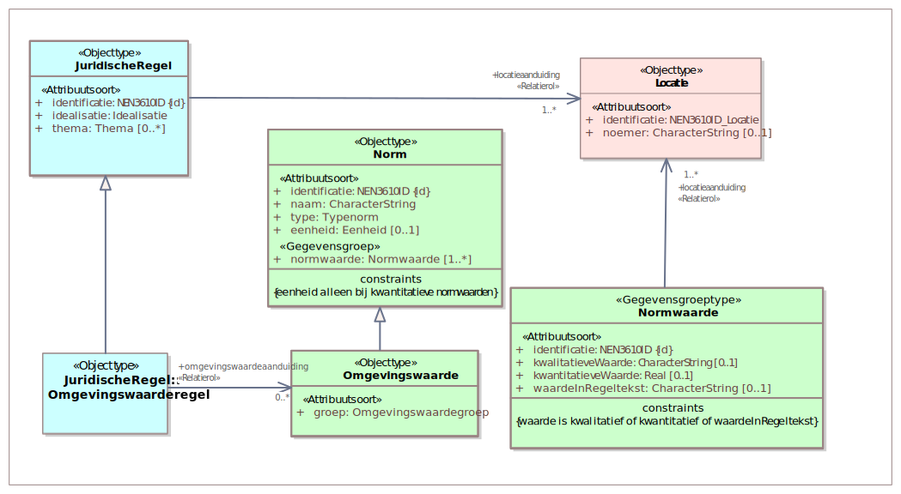Figuur 37Uitsnede uit IMOW-diagram voor objecttype Omgevingswaarde
Omgevingswaarde is één van de verschijningsvormen van Norm. Omgevingswaarde en Norm kennen samen de volgende attributen:
identificatie: de unieke identificatie waaronder elk object van het type Omgevingswaarde bekend is. Identificatie conform datatype NEN3610-ID. Verplicht attribuut. Komt 1 keer voor.
naam: de naam van de omgevingswaarde die wordt overgenomen uit of ontleend aan de naam of omschrijving van de betreffende omgevingswaarde in de Juridische regel. Het bevoegd gezag is vrij in de keuze van de naam. Verplicht attribuut. Komt 1 keer voor.
type: het type van de norm waartoe de omgevingswaarde behoort. Te kiezen uit de uitbreidbare waardelijst 'Typenorm'. Verplicht attribuut. Komt 1 keer voor.
groep: de categorie waartoe de omgevingswaarde behoort. Attribuut dat zorgt voor symbolisatie conform de standaardweergave. Te kiezen uit de limitatieve waardelijst ‘Omgevingswaardegroep’. Verplicht attribuut. Komt 1 keer voor.
normwaarde: attribuut waarmee kan worden vastgelegd welke waarde een omgevingswaarde op een bepaalde locatie heeft. normwaarde kan kwantitatief (oftewel numeriek) of kwalitatief (oftewel in woorden) worden uitgedrukt of in de Regeltekst worden opgenomen. Verplicht attribuut. Komt zo vaak voor als gewenst. normwaarde wordt ingevuld met de gegevensgroep Normwaarde die de volgende attributen kent:
identificatie: de unieke identificatie waaronder elk voorkomen van Normwaarde bekend is. Identificatie conform datatype NEN3610-ID. Verplicht attribuut. Komt 1 keer voor.
een verplichte keuze uit de volgende attributen:
kwalitatieveWaarde: de kwalitatief oftewel in woorden beschreven waarde van de omgevingswaarde wanneer deze op verschillende locaties een verschillende waarde heeft en die waarden in het informatieobject zijn opgenomen. Het bevoegd gezag is vrij in de keuze van de beschrijving van de waarde. Optioneel attribuut. Komt 0 of 1 keer voor. De waarden worden in het OW-object én in een GIO vastgelegd. Dit attribuut kan alleen worden gebruikt wanneer de waarden niet in de Regeltekst staan.
kwantitatieveWaarde: de kwantitatief oftewel numeriek vastgelegde waarde van de omgevingswaarde. Optioneel attribuut. Komt 0 of 1 keer voor. Wordt vastgelegd door middel van een getal. De waarden worden in het OW-object én in een GIO vastgelegd. Dit attribuut kan alleen worden gebruikt wanneer de waarden niet in de Regeltekst staan.
waardeInRegeltekst: attribuut dat wordt gebruikt wanneer de waarde van de omgevingswaarde in de Regeltekst is opgenomen. Het bevoegd gezag is vrij in de keuze van de beschrijving van de waarde. Optioneel attribuut. Komt 0 of 1 keer voor. Dit attribuut kan alleen worden gebruikt wanneer de waarden in de Regeltekst staan.
eenheid: de grootheid waarin de kwantitatieve waarde van de Omgevingswaarde wordt uitgedrukt. Het bevoegd gezag is vrij in de keuze van de eenheid, waarbij gebruik gemaakt kan worden van de uitbreidbare waardelijst 'Eenheid'. Onder voorwaarde verplicht attribuut: alleen te gebruiken wanneer bij Normwaarde is gekozen voor het attribuut kwantitatieveWaarde; dan verplicht. Komt dan 1 keer voor.
locatieaanduiding: de verwijzing van een specifieke Normwaarde behorend bij een Omgevingswaarde naar (de identificatie van) de bijbehorende Locatie(s); attribuut dat de specifieke Locatie(s) aanduidt waar deze annotatie Omgevingswaarde van toepassing is. Verplicht attribuut. Komt ten minste 1 keer voor.
Omgevingswaarde heeft de volgende constraints:
waarde is kwalitatief of kwantitatief of waardeInRegeltekst;
eenheid alleen bij kwantitatieve normwaarden.
7.7.5 Toelichting op de norm
Attributen en waardelijsten
naam: de naam van de omgevingswaarde. Het bevoegd gezag kan zelf de naam van de omgevingswaarde bepalen, er is geen waardelijst voor de naam van de omgevingswaarde. De naam kan worden overgenomen uit de Juridische regel. Wanneer de omgevingswaarde in de Juridische regel een lange naam of omschrijving heeft kan indien gewenst een verkorte versie daarvan in het attribuut naam worden opgenomen.
type: attribuut dat aangeeft tot welk type norm een omgevingswaarde behoort. Dit attribuut geeft een gedetailleerdere indeling van omgevingswaarden dan het attribuut groepdat hierna besproken wordt. Het speelt geen rol bij de weergave van omgevingswaarden. Dit attribuut is vergelijkbaar met de maatvoeringaanduidingen uit de RO Standaarden, maar dan voor het domein van de Omgevingswet. Een voorbeeld is: maximum toelaatbare concentratie. Voor type kan gebruik gemaakt worden van de uitbreidbare waardelijst ‘Typenorm’. Zie voor de -vooralsnog beperkte- betekenis van uitbreidbare waardelijsten paragraaf 3.5.
groep: om een groot aantal verschillende omgevingswaarden op een kaartbeeld te kunnen weergeven op een manier die voor het menselijk oog voldoende onderscheidend is, worden omgevingswaarden gebundeld in groepen. De groep vormt het kenmerk waarop de symbolisatie (kleur, arcering, lijnstijl) van de standaardweergave wordt georganiseerd. De groepen die gebruikt kunnen worden zijn opgenomen in de limitatieve waardelijst ‘Omgevingswaardegroep’. Om het mogelijk te maken ook omgevingswaarden te annoteren die nu nog niet voorzien zijn, is de groep ‘overig’ aan de waardelijst toegevoegd.
normwaarde: omgevingswaarden moeten worden uitgedrukt in meetbare of berekenbare eenheden of anderszins in objectieve termen. Met het attribuut normwaarde wordt vastgelegd welke specifieke waarden een omgevingswaarde-norm op specifieke locaties heeft en van welke soort die combinatie van norm en waarde voor een bepaalde omgevingswaarde is. Het attribuut normwaarde maakt gebruik van de gegevensgroep Normwaarde. In het navolgende worden de attributen van Normwaarde toegelicht.
identificatie: iedere Normwaarde heeft een identificatie. Let op: ook Omgevingswaarde zelf heeft een identificatie.
een keuze tussen de attributen kwalitatieveWaarde, kwantitatieveWaarde en waardeInRegeltekst:
kwalitatieveWaarde: dit attribuut wordt gekozen voor waarden die kwalitatief worden vastgelegd, oftewel in woorden worden omschreven, in het geval dat de Omgevingswaarde op verschillende locaties verschillende kwalitatieve waarden heeft, die in een GIO worden vastgelegd. Een (fictief) voorbeeld voor de omgevingswaarde duurzame energie: ‘voldoende om in de energiebehoefte van alle huishoudens te voorzien’ voor locatie A, ‘voldoende om in de energiebehoefte van alle kleinschalige bedrijven te voorzien’ voor locatie B. De STOP/TPOD-standaard staat niet toe dat kwalitatieve waarden die bij een norm horen zowel in de tekst als in het normwaarde-attribuut van Omgevingswaarde en GIO’s voorkomen. Er moet namelijk eenduidig vaststaan wat de bron van een waarde is. Dit uitgangspunt voorkomt ook dat in de tekst per abuis een andere waarde staat dan in het normwaarde-attribuut en het GIO. Daarom kan het attribuut kwalitatieveWaarde alleen gebruikt worden wanneer de waarden niet in de Regeltekst staan.
kwantitatieveWaarde: dit attribuut wordt gekozen bij een kwantitatieve oftewel numerieke vastlegging van de omgevingswaarde. Bij het attribuut kwantitatieveWaarde worden de waarden die voor de verschillende locaties gelden in getallen vastgelegd. Wanneer dit attribuut is gekozen, moet ook het attribuut eenheid worden toegepast. Dat wordt verderop in deze subparagraaf toegelicht, zie daarvoor ook de toelichting op de betreffende constraint. De STOP/TPOD-standaard staat niet toe dat kwantitatieve waarden die bij een norm horen zowel in de tekst als in het normwaarde-attribuut van Omgevingswaarde en GIO’s voorkomen. Er moet namelijk eenduidig vaststaan wat de bron van een waarde is. Dit uitgangspunt voorkomt ook dat in de tekst per abuis een andere waarde staat dan in het normwaarde-attribuut en het GIO. Daarom kan het attribuut kwantitatieveWaarde alleen gebruikt worden wanneer de waarden niet in de Regeltekst staan.
waardeInRegeltekst: dit attribuut wordt gebruikt in die gevallen waarin het bevoegd gezag het wel wenselijk vindt om een omgevingswaarde met het OW-object Omgevingswaarde te annoteren maar niet de waarden van de omgevingswaarde aan de annotatie wil toevoegen en in een GIO wil vastleggen. De omgevingswaarde wordt dan wel op een kaart weergegeven en is ook in het Omgevingsloket als omgevingswaarde bevraagbaar. Deze optie kan bijvoorbeeld gebruikt worden wanneer een omgevingswaarde overal waar hij voorkomt dezelfde waarde heeft en bij heel complexe waarden. Een voorbeeld van dat laatste is deze Juridische regel: “Voor zwaveldioxide geldt als ten hoogste toelaatbare concentratie 350 μg/m3 als uurgemiddelde dat ten hoogste 24 maal per kalenderjaar wordt overschreden.” Bij de keuze voor waardeInRegeltekst verschijnt bij raadpleging in de viewer de tekst ‘waarde staat in regeltekst’. De STOP/TPOD-standaard staat niet toe dat kwantitatieve en kwalitatieve waarden die bij een norm horen zowel in de tekst als in het normwaarde-attribuut van Omgevingswaarde en GIO’s voorkomen. Er moet namelijk eenduidig vaststaan wat de bron van een waarde is. Dit uitgangspunt voorkomt ook dat in de tekst per abuis een andere waarde staat dan in het normwaarde-attribuut en het GIO. Wanneer de waarden in de Regeltekst staan kan dan ook alleen het attribuut waardeInRegeltekst gebruikt worden.
De waarden die worden vastgelegd met kwalitatieveWaarde en kwantitatieveWaarde worden vastgelegd in GIO’s en krijgen daarmee hun juridische borging. Bij gebruik van het attribuut waardeInRegeltekst wordt in het GIO alleen de Locatie vastgelegd en niet de waarde.
eenheid: met het attribuut eenheid wordt aangegeven in welke grootheid de kwantitatieve waarde van de Normwaarde kwantitatieveWaarde is uitgedrukt, bijvoorbeeld μg/m3. Samen met het getal dat bij het attribuut kwantitatieveWaarde is ingevuld wordt dit bijvoorbeeld 200 μg/m3. Voor eenheid kan gebruik gemaakt worden van de uitbreidbare waardelijst ‘Eenheid’. Zie voor de -vooralsnog beperkte- betekenis van uitbreidbare waardelijsten paragraaf 3.5. Het attribuut eenheid is bij Norm geplaatst. Dat verplicht ertoe om alle voorkomens van een specifieke norm in dezelfde eenheid uit te drukken. Daardoor komen in een geo-informatieobject ook alleen waarden voor met dezelfde eenheid. Dit voorkomt bij voorbeeld dat een bepaalde omgevingswaarde de ene keer in meters en de andere keer in decimeters wordt uitgedrukt.
locatieaanduiding: het attribuut dat de verwijzing bevat naar de identificatie van de Locatie die bij deze specifieke Normwaarde behorend bij een Omgevingswaarde hoort én aangeeft wat de betekenis van Locatie is voor het object waar het bij hoort; in dit geval voor Omgevingswaarde. Dit attribuut legt dus vast dat deze Locatie de locatie is waar een bepaalde Normwaarde van de Omgevingswaarde van toepassing is.
Constraints
waarde is kwalitatief of kwantitatief of waardeInRegeltekst: deze constraint, die geldt voor Normwaarde, houdt in dat er bij Normwaarde altijd één van de genoemde attributen gekozen moet worden, met andere woorden: het is verplicht dat er precies één van de drie voorkomt, niet minder en niet meer.
eenheid alleen bij kwantitatieve normwaarden: deze constraint, die geldt voor het attribuut eenheid bij Norm, legt vast dat het attribuut eenheid alleen mag voorkomen indien bij Normwaarde is gekozen voor het attribuut kwantitatieveWaarde. Als bij Normwaarde gekozen is voor kwalitatieveWaarde of waardeInRegeltekst mag het attribuut eenheid niet voorkomen.
De eerste keer dat een specifieke omgevingswaarde (bij voorbeeld de omgevingswaarde ‘veiligheid primaire waterkeringen’) in een omgevingsdocument in een Juridische regel voorkomt, wordt deze met het OW-object Omgevingswaarde geannoteerd, met een verwijzing naar de Locatie die bij die Juridische regel hoort. Als in een volgende Juridische regel diezelfde omgevingswaarde wordt gebruikt, wordt in die Juridische regel volstaan met een verwijzing naar het betreffende al bestaande Omgevingswaarde-object, en wordt verwezen naar de Locatie die bij de nieuwe Juridische regel hoort. Op deze manier is van iedere afzonderlijke Juridische regel over die omgevingswaarde te zien welke Locatie er bij hoort en is ook zichtbaar welke Locaties horen bij de specifieke Omgevingswaarde. Een Omgevingswaarde heeft dus altijd met 1 of meer Juridische regels een relatie.
7.7.6 Aanbevelingen voor Locatie, noemer en naam GIO bij annoteren met Omgevingswaarde
Een Omgevingswaarde wordt door middel van de Normwaarde aan de bijbehorende Locatie gekoppeld. De locaties verwijzen steeds naar één Geometrie, dit kan een Surface (vlak) maar ook een MultiSurface (multivlak) zijn. Aanbevelingen voor het gebruik van Locatie, noemer en naam GIO:
de Locatie is een Gebiedengroep;
de Locatie heeft een noemer;
de naam van de Omgevingswaarde is hetzelfde als de naam van het GIO;
de naam van de Omgevingswaarde (en daarmee ook van het GIO) moet herkenbaar in de tekst van de regel voorkomen;
de noemer van de Locatie zal meestal hetzelfde zijn als de naam van de Omgevingswaarde;
bij een Omgevingswaarde die een gezamenlijke waarde voor een aantal vlakken stelt moet worden gekozen voor MultiSurface en moet in de naam van de Omgevingsnorm tot uitdrukking komen dat het om een gezamenlijke waarde voor meerdere vlakken gaat; Een (fictief) voorbeeld hiervan is de ‘gezamenlijke stikstofdepositie op alle Natura 2000-gebieden’.
bij een Omgevingswaarde die een waarde per vlak stelt moet worden gekozen voor Surface. Een voorbeeld hiervan is de overstromingskans per jaar die per dijktraject geldt. Er mag dan niet worden gekozen voor MultiSurface.
7.8 Objecttype Omgevingsnorm
7.8.1 Toelichting op de toepassing
In het bestuursrecht is een norm een regel met een waarde waaraan voldaan moet worden. De Omgevingswet kent een bijzondere norm, de omgevingswaarde als bedoeld in afdeling 2.3 van de Omgevingswet, die in paragraaf 7.7 is beschreven. In omgevingsdocumenten met regels worden ook andere normen dan omgevingswaarden gesteld. Om de gewone norm van de omgevingswaarde te onderscheiden gebruikt de standaard voor die gewone norm de term omgevingsnorm. Een omgevingsnorm is een norm over de fysieke leefomgeving die een kwantitatieve of kwalitatieve waarde stelt waaraan voldaan moet worden en die geen omgevingswaarde is. Uitgangspunt is dat een omgevingsnorm op verschillende locaties verschillende waarden heeft. Een voorbeeld van een omgevingsnorm is: “De bouwhoogte van een woning is niet hoger dan de ter plaatse van het werkingsgebied ‘maximum bouwhoogte’ bepaalde waarde.” Dit is geen omgevingsnorm: “Het is verboden om zonder omgevingsvergunning een boom te kappen met een stamomtrek van ten minste 31 centimeter op 130 centimeter hoogte boven maaiveld.” In de regel van het laatste voorbeeld staan wel getallen maar dat zijn geen waarden bij een omgevingsnorm. De frase “stamomtrek van ten minste 31 centimeter” is de conditie waaronder de vergunningplicht geldt. De frase “130 centimeter hoogte boven maaiveld” is een meetbepaling.
Een omgevingsnorm kan zo geformuleerd zijn dat norm, waarden en een beschrijving van de locatie in de regel zijn opgenomen. Een (fictief) voorbeeld daarvan voor het omgevingsplan is: ‘De geurbelasting door activiteiten op een geurgevoelig gebouw bedraagt in de hele gemeente niet meer dan 3,0 odour units’. Een voorbeeld voor de waterschapsverordening: ‘De boordiepte bij het plaatsen van pijlers in een watergang mag nooit meer zijn dan 15 meter.’ De standaarden staan er niet aan in de weg om dit ver door te voeren door alle locaties en waarden in de tekst op te nemen. Figuur 38 geeft daarvan een voorbeeld voor het omgevingsplan en Figuur 39 geeft een voorbeeld van die toepassing in de waterschapsverordening:
Figuur 38Weergave locaties en waarden in tekst, voorbeeld omgevingsplanFiguur 39Weergave locaties en waarden in tekst, voorbeeld waterschapsverordening
Vanuit het uitgangspunt dat iedere regel een werkingsgebied heeft, moet aan zo’n Regeltekst als Locatie het hele grondgebied van het bevoegd gezag worden gekoppeld. Dan is alleen machineleesbaar gemaakt dat Regeltekst en Locatie bij elkaar horen, maar niet dat het hier gaat om een norm met bijbehorende waarde en welke dat dan zijn.
Het bevoegd gezag kan er echter ook voor kiezen om de Juridische regel met de omgevingsnorm te annoteren met het OW-object Omgevingsnorm. Daardoor wordt iedere locatie waar de omgevingsnorm geldt, herkenbaar weergegeven op een kaartbeeld en worden de waarden die de omgevingsnorm op de verschillende locaties heeft, raadpleegbaar door interactie met het kaartbeeld. De term omgevingsnorm is door de standaard geïntroduceerd en wordt alleen als annotatie gebruikt. De term heeft geen juridische betekenis en zal niet in de regeltekst van het omgevingsplan voorkomen.
Naar verwachting zullen er in omgevingsdocumenten veel verschillende omgevingsnormen worden vastgesteld. Vanwege de verwachte verscheidenheid van die omgevingsnormen is er voor de standaard geen waardelijst Omgevingsnorm gemaakt. Het bevoegd gezag kan dus de naam van iedere omgevingsnorm zelf bepalen. Er is geen symbolisatie (kleur, arcering, lijnstijl) voorhanden die een grote hoeveelheid omgevingsnormen kan weergeven op een manier waarbij voor het menselijk oog voldoende onderscheid is tussen de verschillende omgevingsnormen. Daarom heeft niet iedere individuele omgevingsnorm een eigen symbolisatie, maar is er een (standaard)symbolisatie per groep bij elkaar horende omgevingsnormen. Daarvoor heeft Omgevingsnorm het attribuut groep met een bijbehorende (limitatieve) waardelijst. Het bevoegd gezag kiest een eigen naam voor de individuele omgevingsnorm en kiest voor het attribuut groep uit de waardelijst de waarde die het meest overeenkomt met de bedoeling van die omgevingsnorm. Hierdoor kunnen de Locaties van iedere omgevingsnorm in een (interactieve) viewer met de standaardweergave worden weergegeven op een kaart. Het is dan mogelijk om een kaartbeeld weer te geven van de Locaties van alle omgevingsnormen waarmee een artikel is geannoteerd, maar ook om de locaties van alle omgevingsnormen van een bepaalde omgevingsnormgroep weer te geven.
De waarden die een omgevingsnorm kan aannemen, kunnen kwantitatief oftewel numeriek zijn, maar ook kwalitatief oftewel in woorden worden beschreven. De kwalitatieve waarden kunnen in de Juridische regel worden opgenomen. Dat zal met name worden gedaan wanneer de omgevingsnorm slechts één waarde heeft die voor iedere Locatie dezelfde is. Een voorbeeld: “De bouwhoogte van een woning in het Centrumgebied is passend in het straatbeeld.” De frase ‘passend in het straatbeeld’ is de kwalitatieve waarde die in de Juridische regel is opgenomen. Kwalitatieve waarden kunnen ook in het GIO worden opgenomen. Die mogelijkheid kan worden toegepast wanneer het de bedoeling is dat op verschillende Locaties verschillende kwalitatieve waarden gelden. Een voorbeeld: “Het uiterlijk van bouwwerken dient te voldoen aan het niveau van redelijke eisen van welstand dat ter plaatse van de locatie ‘welstandsniveau’ is vastgelegd.”, waarbij in het ene gebied het welstandsniveau hoog is en in een ander gebied laag. Bij die laatste methode staan de kwalitatieve waarden niet in de Juridische regel. Dit wordt in subparagraaf 7.8.5 verder toegelicht.
Het objecttype Omgevingsnorm is primair bedoeld voor het annoteren van rechtstreeks werkende regels die daadwerkelijk een omgevingsnorm vaststellen en daar nadere bepalingen over geven. Het kan ook worden gebruikt in instructieregels om differentiatie aan te brengen in de waarden van omgevingsnormen die op grond van een instructieregel in een ander omgevingsdocument moeten worden opgenomen. Op die manier kunnen die waarden in de instructieregels door interactie met het kaartbeeld worden getoond en bevraagd. Een voorbeeld hiervan is de instructieregel die oplegt dat in een omgevingsplan voor gebied A de maximum inhoud van een agrarische bedrijfswoning niet meer mag zijn dan 400 m3 en in gebied B niet meer dan 600 m3. Daarom zijn de objecten Omgevingsnorm en Juridische regel in IMOW zo gemodelleerd dat de annotatie met het OW-object Omgevingsnorm kan worden gebruikt in combinatie met Juridische regels van het type Regel voor iedereen en van het type Instructieregel. Het is niet mogelijk om een Omgevingsnorm te gebruiken met Juridische regels van het type Omgevingswaarderegel.
7.8.2 Definitie
Omgevingsnorm is het objecttype voor het Lichaam van de Regeling van omgevingsdocumenten met Artikelstructuur dat machineleesbaar maakt dat een Juridische regel en de bijbehorende Locatie(s) gaan over een norm over de fysieke leefomgeving die in een kwantitatieve of kwalitatieve waarde wordt uitgedrukt en geen omgevingswaarde is.
7.8.3 Doel
Doel van het objecttype Omgevingsnorm is:
machineleesbaar vastleggen dat een regel en de bijbehorende Locatie(s) gaan over een omgevingsnorm;
juridisch geborgd vastleggen welke waarde een omgevingsnorm op de verschillende Locaties heeft, zonder alle locaties en waarden in de tekst van de regel op te moeten nemen;
herkenbaar weergeven van de Locaties waar de regels over de omgevingsnorm gelden in een viewer of op een kaart;
ondersteuning bieden bij het filteren van regels over een bepaalde omgevingsnorm in een viewer of op een kaart.
7.8.4 Norm
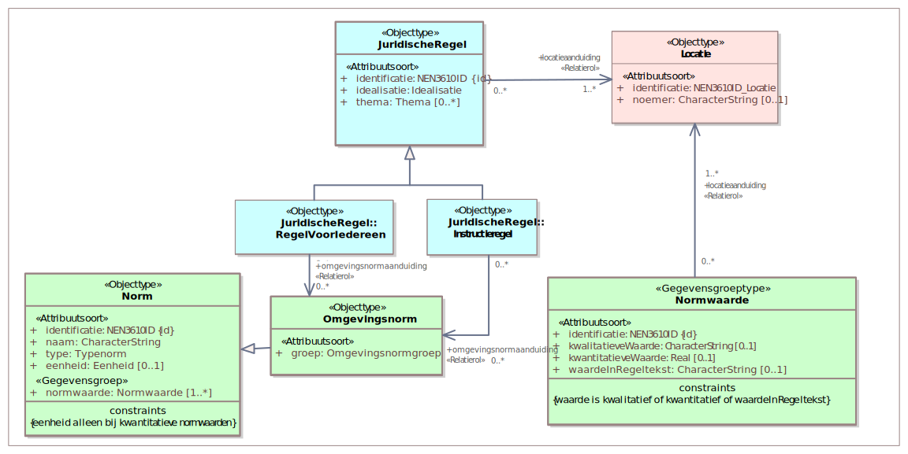Figuur 40Uitsnede uit IMOW-diagram voor objecttype Omgevingsnorm
Omgevingsnorm is één van de verschijningsvormen van Norm. Omgevingsnorm en Norm kennen samen de volgende attributen:
identificatie: de unieke identificatie waaronder elk object van dit type bekend is. Identificatie conform datatype NEN3610-ID. Verplicht attribuut. Komt 1 keer voor.
naam: de naam van de omgevingsnorm die wordt overgenomen uit of ontleend aan de naam of omschrijving van de betreffende omgevingsnorm in de Juridische regel. Het bevoegd gezag is vrij in de keuze van de naam. Verplicht attribuut. Komt 1 keer voor.
type: het type van de norm waartoe de omgevingsnorm behoort. Te kiezen uit de uitbreidbare waardelijst 'Typenorm'. Verplicht attribuut. Komt 1 keer voor.
groep: de categorie waartoe de omgevingsnorm behoort. Attribuut dat zorgt voor symbolisatie conform de standaardweergave. Te kiezen uit de limitatieve waardelijst ‘Omgevingsnormgroep’. Verplicht attribuut. Komt 1 keer voor.
normwaarde: attribuut waarmee kan worden vastgelegd welke waarde een omgevingsnorm op een bepaalde locatie heeft. De waarde kan kwantitatief (oftewel numeriek) of kwalitatief (oftewel in woorden) worden uitgedrukt of in de Regeltekst worden opgenomen. Verplicht attribuut. Komt zo vaak voor als gewenst. normwaarde wordt ingevuld met de gegevensgroep Normwaarde die de volgende attributen kent:
identificatie: de unieke identificatie waaronder elk voorkomen van Normwaarde bekend is. Identificatie conform datatype NEN3610-ID. Verplicht attribuut. Komt 1 keer voor.
een verplichte keuze uit de volgende attributen:
kwalitatieveWaarde: de kwalitatief oftewel in woorden beschreven waarde van de omgevingsnorm wanneer deze op verschillende locaties een verschillende waarde heeft en die waarden in het informatieobject zijn opgenomen. Het bevoegd gezag is vrij in de keuze van de beschrijving van de waarde. Optioneel attribuut. Komt 0 of 1 keer voor. De waarden worden in het OW-object én in een GIO vastgelegd. Dit attribuut kan alleen worden gebruikt wanneer de waarden niet in de Regeltekst staan.
kwantitatieveWaarde: de kwantitatief oftewel numeriek vastgelegde waarde van de omgevingsnorm. Optioneel attribuut. Komt 0 of 1 keer voor. Wordt vastgelegd door middel van een getal. De waarden worden in het OW-object én in een GIO vastgelegd. Dit attribuut kan alleen worden gebruikt wanneer de waarden niet in de Regeltekst staan.
waardeInRegeltekst: attribuut dat wordt gebruikt wanneer de waarde van de omgevingsnorm in de Regeltekst is opgenomen. Het bevoegd gezag is vrij in de keuze van de beschrijving van de waarde. Optioneel attribuut. Komt 0 of 1 keer voor. Dit attribuut kan alleen worden gebruikt wanneer de waarden in de Regeltekst staan.
eenheid: de grootheid waarin de kwantitatieve waarde van de Omgevingsnorm wordt uitgedrukt. Het bevoegd gezag is vrij in de keuze van de eenheid, waarbij gebruik gemaakt kan worden van de uitbreidbare waardelijst 'Eenheid'. Onder voorwaarde verplicht attribuut: alleen te gebruiken wanneer bij Normwaarde is gekozen voor het attribuut kwantitatieveWaarde; dan verplicht. Komt dan 1 keer voor.
locatieaanduiding: de verwijzing van een specifieke Normwaarde behorend bij een Omgevingsnorm naar (de identificatie van) de bijbehorende Locatie; attribuut dat de specifieke Locatie aanduidt waar deze annotatie Omgevingsnorm van toepassing is. Verplicht attribuut. Komt ten minste 1 keer voor.
Omgevingsnorm heeft de volgende constraints:
waarde is kwalitatief of kwantitatief of waardeInRegeltekst;
eenheid alleen bij kwantitatieve normwaarden.
7.8.5 Toelichting op de norm
Attributen en waardelijsten
naam: de naam van de omgevingsnorm. Het bevoegd gezag kan zelf de naam van de omgevingsnorm bepalen, er is geen waardelijst voor de naam van de omgevingsnorm. De naam kan worden overgenomen uit de Juridische regel. Wanneer de omgevingsnorm in de Juridische regel een lange naam of omschrijving heeft kan indien gewenst een verkorte versie daarvan in het attribuut naam worden opgenomen.
type: attribuut dat aangeeft tot welk type een omgevingsnorm behoort. Dit attribuut geeft een gedetailleerdere indeling van omgevingsnormen dan het attribuut groep dat hierna besproken wordt. Het speelt geen rol bij de weergave van omgevingsnormen. Dit attribuut is vergelijkbaar met de maatvoeringaanduidingen uit de RO Standaarden, maar dan voor het domein van de Omgevingswet. Een voorbeeld is: maximum aantal rijstroken. Voor type kan gebruik gemaakt worden van de uitbreidbare waardelijst ‘Typenorm’. Zie voor de -vooralsnog beperkte- betekenis van uitbreidbare waardelijsten paragraaf 3.5.
groep: om een groot aantal verschillende omgevingsnormen op een kaartbeeld te kunnen weergeven op een manier die voor het menselijk oog voldoende onderscheidend is, worden omgevingsnormen gebundeld in groepen. De groep vormt het kenmerk waarop de symbolisatie (kleur, arcering, lijnstijl) van de standaardweergave wordt georganiseerd. De groepen die gebruikt kunnen worden zijn opgenomen in de limitatieve waardelijst ‘Omgevingsnormgroep’. Om het mogelijk te maken ook omgevingsnormen te annoteren die nu nog niet voorzien zijn, is de groep ‘overig’ aan de waardelijst toegevoegd.
normwaarde: attribuut waarmee wordt vastgelegd welke specifieke waarden een omgevingsnorm op specifieke locaties heeft en van welke soort die combinatie van norm en waarde voor een bepaalde omgevingsnorm is. Het attribuut normwaarde maakt gebruik van de gegevensgroep Normwaarde. In het navolgende worden de attributen van Normwaarde toegelicht.
identificatie: iedere Normwaarde heeft een identificatie. Let op: ook Omgevingsnorm zelf heeft een identificatie.
een keuze tussen de attributen kwalitatieveWaarde, kwantitatieveWaarde en waardeInRegeltekst:
kwalitatieveWaarde: dit attribuut wordt gekozen voor waarden die kwalitatief worden vastgelegd, oftewel in woorden worden omschreven, in het geval dat de Omgevingsnorm op verschillende locaties verschillende kwalitatieve waarden heeft, die in een GIO worden vastgelegd. Een (fictief) voorbeeld voor de omgevingsnorm maximum bouwhoogte: 'passend in het straatbeeld' voor locatie A, 'niet hoger dan de kerk' voor locatie B. De STOP/TPOD-standaard staat niet toe dat kwalitatieve waarden die bij een norm horen zowel in de tekst als in het normwaarde-attribuut van Omgevingsnorm en GIO’s voorkomen. Er moet namelijk eenduidig vaststaan wat de bron van een waarde is. Dit uitgangspunt voorkomt ook dat in de tekst per abuis een andere waarde staat dan in het normwaarde-attribuut en het GIO. Daarom kan het attribuut kwalitatieveWaarde alleen gebruikt worden wanneer de waarden niet in de Regeltekst staan.
kwantitatieveWaarde: dit attribuut wordt gekozen bij een kwantitatieve oftewel numerieke vastlegging van de omgevingsnorm. Bij het attribuut kwantitatieveWaarde worden de waarden die voor de verschillende locaties gelden in getallen vastgelegd. Wanneer dit attribuut is gekozen, moet ook het attribuut eenheid worden toegepast. Dat wordt verderop in deze subparagraaf toegelicht. De STOP/TPOD-standaard staat niet toe dat kwantitatieve waarden die bij een norm horen zowel in de tekst als in het normwaarde-attribuut van Omgevingsnorm en GIO’s voorkomen. Er moet namelijk eenduidig vaststaan wat de bron van een waarde is. Dit uitgangspunt voorkomt ook dat in de tekst per abuis een andere waarde staat dan in het normwaarde-attribuut en het GIO. Daarom kan het attribuut kwantitatieveWaarde alleen gebruikt worden wanneer de waarden niet in de Regeltekst staan.
waardeInRegeltekst: dit attribuut wordt gebruikt in die gevallen waarin het bevoegd gezag het wel wenselijk vindt om een omgevingsnorm met het OW-object Omgevingsnorm te annoteren maar niet de waarden van de omgevingsnorm aan de annotatie wil toevoegen en in een GIO wil vastleggen. De omgevingsnorm wordt dan wel op een kaart weergegeven en is ook in het Omgevingsloket als omgevingsnorm bevraagbaar. Deze optie kan bijvoorbeeld gebruikt worden wanneer een omgevingsnorm overal waar hij voorkomt dezelfde waarde heeft, en bij heel complexe waarden. Bij de keuze voor waardeInRegeltekst verschijnt bij raadpleging in de viewer de tekst 'waarde staat in regeltekst'. De STOP/TPOD-standaard staat niet toe dat kwantitatieve en kwalitatieve waarden die bij een norm horen zowel in de tekst als in het normwaarde-attribuut van Omgevingsnorm en GIO’s voorkomen. Er moet namelijk eenduidig vaststaan wat de bron van een waarde is. Dit uitgangspunt voorkomt ook dat in de tekst per abuis een andere waarde staat dan in het normwaarde-attribuut en het GIO. Wanneer de waarden in de Regeltekst staan kan dan ook alleen het attribuut waardeInRegeltekst gebruikt worden.
De waarden die worden vastgelegd met kwalitatieveWaarde en kwantitatieveWaarde worden vastgelegd in GIO’s en krijgen daarmee hun juridische borging. Bij gebruik van het attribuut waardeInRegeltekst wordt in het GIO alleen de Locatie vastgelegd en niet de waarde.
eenheid: met het attribuut eenheid wordt aangegeven in welke grootheid de kwantitatieve waarde van de Normwaarde kwantitatieveWaarde is uitgedrukt, bijvoorbeeld μg/m3. Samen met het getal dat bij het attribuut kwantitatieveWaarde is ingevuld wordt dit bijvoorbeeld 200 μg/m3. Voor eenheid kan gebruik gemaakt worden van de uitbreidbare waardelijst 'Eenheid'. Zie voor de -vooralsnog beperkte- betekenis van uitbreidbare waardelijsten paragraaf 3.5. Het attribuut eenheid is bij Norm geplaatst. Dat verplicht er toe om alle voorkomens van een specifieke norm in dezelfde eenheid uit te drukken. Daardoor komen in een geo-informatieobject ook alleen waarden voor met dezelfde eenheid. Dit voorkomt bij voorbeeld dat een bepaalde omgevingsnorm de ene keer in meters en de andere keer in decimeters wordt uitgedrukt.
locatieaanduiding: het attribuut dat de verwijzing bevat naar de identificatie van de Locatie die bij deze specifieke Normwaarde behorend bij een Omgevingsnorm hoort én aangeeft wat de betekenis van Locatie is voor het object waar het bij hoort; in dit geval voor Omgevingsnorm. Dit attribuut legt dus vast dat deze Locatie de locatie is waar een bepaalde Normwaarde van de Omgevingsnorm van toepassing is.
Constraints
waarde is kwalitatief of kwantitatief of waardeInRegeltekst: deze constraint, die geldt voor Normwaarde, houdt in dat er bij Normwaarde altijd één van de genoemde attributen gekozen moet worden, met andere woorden: het is verplicht dat er precies één van de drie voorkomt, niet minder en niet meer.
eenheid alleen bij kwantitatieve normwaarden: deze constraint, die geldt voor het attribuut eenheid bij Norm, legt vast dat het attribuut eenheid alleen mag voorkomen indien bij Normwaarde is gekozen voor het attribuut kwantitatieveWaarde. Als bij Normwaarde gekozen is voor kwalitatieveWaarde of waardeInRegeltekst mag het attribuut eenheid niet voorkomen.
De eerste keer dat een specifieke omgevingsnorm (bij voorbeeld de omgevingsnorm ‘maximum aantal parkeerplaatsen’ of ‘maximum boordiepte') in een omgevingsdocument in een Juridische regel voorkomt, wordt deze met het OW-object Omgevingsnorm geannoteerd, met een verwijzing naar de Locatie die bij die Juridische regel hoort. Als in een volgende Juridische regel diezelfde omgevingsnorm wordt gebruikt, wordt in die Juridische regel volstaan met een verwijzing naar het betreffende al bestaande Omgevingsnorm-object, en wordt verwezen naar de Locatie die bij de nieuwe Juridische regel hoort. Op deze manier is van iedere afzonderlijke Juridische regel over die omgevingsnorm te zien welke Locatie er bij hoort en is ook zichtbaar welke Locaties horen bij de specifieke Omgevingsnorm. Een Omgevingsnorm heeft dus altijd met 1 of meer Juridische regels een relatie.
7.8.6 Aanbevelingen voor Locatie, noemer en naam GIO bij annoteren met Omgevingsnorm
Een Omgevingsnorm wordt door middel van de Normwaarde aan de bijbehorende Locatie gekoppeld. De locaties verwijzen steeds naar één Geometrie, dit kan een Surface (vlak) maar ook een MultiSurface (multivlak) zijn. Aanbevelingen voor het gebruik van Locatie, noemer en naam GIO:
de Locatie is een Gebiedengroep;
de Locatie heeft een noemer;
de naam van de Omgevingsnorm is hetzelfde als de naam van het GIO;
de naam van de Omgevingsnorm (en daarmee ook van het GIO) moet herkenbaar in de tekst van de regel voorkomen;
de noemer van de Locatie zal meestal hetzelfde zijn als de naam van de Omgevingsnorm;
bij een Omgevingsnorm die een gezamenlijke waarde voor een aantal vlakken stelt moet worden gekozen voor Multivlak en moet in de naam van de Omgevingsnorm tot uitdrukking komen dat het om een gezamenlijke waarde voor meerdere vlakken gaat; Voorbeelden hiervan zijn de ‘gezamenlijke verkoopvloeroppervlakte detailhandel’ in een winkelcentrum dat uit meerdere vlakken bestaat, of ‘gezamenlijk aantal woningen’ in een nieuwe woonwijk waar de verschillende gebieden waar die woningen mogen komen zijn aangegeven.
bij een Omgevingsnorm die een waarde per vlak stelt moet worden gekozen voor Surface. Voorbeelden hiervan zijn de maximum bouwhoogte en de maximum oppervlakte aan bebouwing die per perceel geldt. Er mag dan niet worden gekozen voor MultiSurface.
7.9 Objecttype Gebiedsaanwijzing
7.9.1 Toelichting op de toepassing
In omgevingsdocumenten worden gebieden benoemd waarover regels worden gesteld respectievelijk beleids- of uitvoeringsaspecten worden vastgelegd. Met het objecttype Gebiedsaanwijzing kunnen die gebieden op een kaart worden weergeven, op een zodanige manier dat duidelijk is waar de regel of het beleids- of uitvoeringsaspect over gaat. Ook maakt Gebiedsaanwijzing het mogelijk om in een viewer een selectie te maken van bepaalde gebieden.
Het objecttype Gebiedsaanwijzing is een generiek objecttype. Het is generiek gemodelleerd om voldoende flexibiliteit te bieden voor toekomstige ontwikkelingen. Het wordt specifiek gemaakt door het attribuut type, dat gekozen wordt uit een limitatieve waardelijst. Nieuwe typen gebieden kunnen worden aangewezen doordat (na een wijzigingsproces) nieuwe waarden aan de waardelijst voor type worden toegevoegd; het is dus niet nodig om extra objecttypen aan het informatiemodel toe te voegen.
De waardelijst voor de Gebiedsaanwijzingtypen bevat nu 19 waarden. Ze zijn onder te verdelen in sectorale en niet-sectorale typen, zoals is aangegeven in Tabel 6.
Tabel 6De Gebiedsaanwijzingtypen, onderverdeeld in sectoraal en niet-sectoraal
Sectorale Gebiedsaanwijzingtypen
Niet-sectorale Gebiedsaanwijzingtypen
Bodem
Landschap
Beperkingengebied
Bouw
Leiding
Functie
Defensie
Lucht
Ruimtelijk gebruik
Energievoorziening
Mijnbouw
Erfgoed
Natuur
Externe veiligheid
Recreatie
Geluid
Verkeer
Geur
Water en watersysteem
7.9.1.1 Onderscheid tussen sectorale en niet-sectorale Gebiedsaanwijzingtypen
Met de sectorale Gebiedsaanwijzingtypen wordt aangegeven voor welk aspect van de fysieke leefomgeving een gebied wordt aangewezen. Ze zijn bedoeld om gebieden waarover regels respectievelijk beleidsuitspraken met een sterk sectoraal karakter worden gesteld c.q. gedaan, in een viewer op een kaartbeeld weer te kunnen geven en er zoek- en selecteeracties mee te kunnen doen.
De drie typen Functie, Beperkingengebied en Ruimtelijk gebruik zijn niet bedoeld om een gebied voor een aspect van de fysieke leefomgeving aan te wijzen, maar hebben een ander karakter. De Gebiedsaanwijzing van het type Functie is bedoeld voor de situatie waarin het bevoegd gezag ervoor kiest om de evenwichtige toedeling van functies aan locaties niet alleen als abstract criterium te hanteren maar om het resultaat daarvan ook (geheel of gedeeltelijk) op een kaart weer te geven, vergelijkbaar met het in het bestemmingsplan aanwijzen van de bestemming van gronden op grond van de Wet ruimtelijke ordening. Dit type kan alleen in het omgevingsplan en de omgevingsverordening toegepast worden. Het Gebiedsaanwijzingtype Beperkingengebied is specifiek bedoeld voor het aanwijzen van beperkingengebieden: gebieden waar regels gelden over activiteiten die gevolgen hebben of kunnen hebben voor een bepaald, in dat gebied aanwezig, werk of object. Dit type kan alleen toegepast worden in omgevingsdocumenten waarvan in de Omgevingswet is bepaald dat ze beperkingengebieden kunnen aanwijzen en/of regels over beperkingengebiedactiviteiten kunnen bevatten. Het Gebiedsaanwijzingtype Ruimtelijk gebruik is enerzijds bedoeld om provincies in staat te stellen om hun niet-sectorale regels in een viewer op een kaartbeeld weer te geven. Anderzijds sluit het aan bij de door de VNG ontwikkelde staalkaarten voor het omgevingsplan en stelt het gemeenten in staat om tot een ordening van (combinaties van) activiteiten te komen, als alternatief voor het werken met functies.
7.9.1.2 Gebruik van Gebiedsaanwijzingtypen per omgevingsdocument
Niet ieder type Gebiedsaanwijzing kan in ieder omgevingsdocument worden gebruikt, zie bijvoorbeeld wat hiervoor al is aangegeven over het type Beperkingengebied. Daarnaast zijn er Gebiedsaanwijzingtypen waarvan het gebruik in het ene omgevingsdocument meer voor de hand ligt dan in het andere. Provincies worden geacht terughoudend te zijn met het toedelen van functies. Wanneer Rijk en provincies zelf gebiedsgerichte regels stellen, gebruiken ze daarvoor primair de sectorale Gebiedsaanwijzingtypen. Dat geldt ook voor de waterschappen. Omgekeerd ligt het in de rede dat gemeenten in het omgevingsplan terughoudend zijn bij het gebruik van de sectorale Gebiedsaanwijzingtypen. Hen wordt aangeraden voor dat instrument primair gebruik te maken van de Gebiedsaanwijzingtypen Functie en Ruimtelijk gebruik. Tabel 7 geeft inzicht in het beoogde gebruik van de Gebiedsaanwijzingtypen.
Tabel 7Gebruik van de Gebiedsaanwijzingtypen in de verschillende omgevingsdocumenten
Omgevingsdocument/ soort regeling
→
AMvB/MR
Omgevingsverordening
Waterschapsverordening
Omgevingsplan
Omgevingsvisie
Projectbesluit vrijetekstdeel
Omgevingsplanregels uit een projectbesluit[17] Dit zijn de regels in het tijdelijk regelingdeel waarmee het projectbesluit een omgevingsplan wijzigt
Voorbeschermingsregels omgevingsverordening
Voorbeschermingsregels omgevingsplan
Programma
Natura 2000-besluiten
Gebiedsaanwijzingtype
↓
Beperkingengebied
√
√
√
√
X
X
√
√
√
X
X
Bodem
√
√
T
T
√
√
T
√
T
√
X
Bouw
X
X
X
√
X
X
√
X
√
X
X
Defensie
√
√
X
T
√
√
T
√
T
√
X
Energievoorziening
√
√
T
T
√
√
T
√
T
√
X
Erfgoed
√
√
T
T
√
√
T
√
T
√
X
Externe veiligheid
√
√
X
√
√
√
√
√
√
√
X
Functie
X
T
X
√
X
X
√
T
√
X
X
Geluid
√
√
T
√
√
√
√
√
√
√
X
Geur
√
√
X
√
√
√
√
√
√
√
X
Landschap
√
√
T
T
√
√
T
√
T
√
X
Leiding
√
√
T
T
√
√
T
√
T
√
X
Lucht
√
√
X
T
√
√
T
√
T
√
X
Mijnbouw
√
√
X
T
√
√
T
√
T
√
X
Natuur
√
√
T
√
√
√
√
√
√
√
√
Recreatie
√
√
X
T
√
√
T
√
T
√
X
Ruimtelijk gebruik
√
√
X
√
√
√
√
√
√
√
X
Verkeer
√
√
T
T
√
√
T
√
T
√
X
Water en watersysteem
√
√
√
T
√
√
T
√
T
√
X
Tabel 8
√
Kan gebruikt worden in dit omgevingsdocument
T
Terughoudend gebruik
X
Kan niet gebruikt worden in dit omgevingsdocument
7.9.1.3 Combinatie van Gebiedsaanwijzing met objecttypen voor tekst
Het objecttype Gebiedsaanwijzing worden altijd toegepast in combinatie met een locatie en tekst. In het geval van omgevingsdocumenten met Vrijetekststructuur wordt de Gebiedsaanwijzing gecombineerd met het tekst-object Tekstdeel. In omgevingsdocumenten met Vrijetekststructuur kan geannoteerd worden op het niveau van het element dat inhoud bevat (Divisietekst) én op het niveau van het structuurelement (Divisie). Het annoteren met het objecttype Gebiedsaanwijzing ligt het meeste voor de hand op het niveau van het element dat inhoud bevat: Divisietekst. Het annoteren van Locatie bij een Tekstdeel is optioneel. Let op dat het niet annoteren van Locatie bij een Tekstdeel tot gevolg heeft dat het ook niet mogelijk is om dat Tekstdeel te annoteren met Gebiedsaanwijzing. Bij omgevingsdocumenten met Artikelstructuur wordt de Gebiedsaanwijzing gecombineerd met het tekst-object Juridische regel. De Gebiedsaanwijzing kan gecombineerd worden met alle typen Juridische regel. Dat maakt het mogelijk om met een Gebiedsaanwijzing een gebied aan te wijzen waarvoor een rechtstreeks werkende regel (dus een Juridische regel van het type Regel voor iedereen) wordt gesteld. Ook kan Gebiedsaanwijzing worden gebruikt om duidelijk te maken dat een instructieregel over een bepaald type gebied gaat waarbij dat gebied ook in de Juridische regel van de instructieregel wordt benoemd. Tot slot is het ook mogelijk om een omgevingswaarderegel, naast de annotatie met Omgevingswaarde, ook te annoteren met een Gebiedsaanwijzing.
7.9.1.4 Weergave op de kaart
Op voorhand is niet te zeggen hoeveel en welke specifieke vormen van een bepaald Gebiedsaanwijzingtype in de verschillende omgevingsdocumenten begrensd zullen worden, het is mogelijk dat het er veel verschillende zullen zijn. Er is geen symbolisatie (kleur, arcering, lijnstijl) voorhanden die een grote hoeveelheid verschillende specifieke vormen van een type kan weergeven op een manier die voor het menselijk oog voldoende onderscheidend is. Daarom heeft niet iedere individuele Gebiedsaanwijzing een eigen symbolisatie, maar is er een (standaard)symbolisatie per groep bij elkaar horende Gebiedsaanwijzingen van een bepaald type. Daarvoor heeft Gebiedsaanwijzing het attribuut groep en is er voor ieder Gebiedsaanwijzingtype een (limitatieve) waardelijst voor de groep. Het bevoegd gezag kiest een eigen naam voor de individuele Gebiedsaanwijzing van een bepaald type en kiest voor het attribuut groep uit de waardelijst de waarde die het meest overeenkomt met de bedoeling van die Gebiedsaanwijzing. Hierdoor kunnen de Locaties van alle specifieke vormen van dat type Gebiedsaanwijzing in een (interactieve) viewer met de standaardweergave worden weergegeven op een kaart. Een voorbeeld van het Gebiedsaanwijzingtype Functie om het gebruik van Gebiedsaanwijzing te verduidelijken: De functie supermarkt (naam) hoort tot de functiegroep detailhandel (groep) van het Gebiedsaanwijzingtype Functie (type).
7.9.2 Definitie
Gebiedsaanwijzing is het objecttype het Lichaam van de Regeling van omgevingsdocumenten dat machineleesbaar maakt dat een Juridische regel of een Tekstdeel en de bijbehorende Locatie(s) een specifiek type gebied aanwijzen.
7.9.3 Doel
Doel van het generieke objecttype Gebiedsaanwijzing is het bieden van modelmatige flexibiliteit waardoor het toevoegen van nieuwe typen mogelijk is zonder modelwijziging.
Doel van de verschillende typen Gebiedsaanwijzing is:
machineleesbaar vastleggen dat een Juridische regel of Tekstdeel en de bijbehorende Locatie(s) gaan over een specifiek type gebied;
zodanig op een kaart weergeven van de Locaties waar de regels of het beleid over dat type gebied gelden, dat herkenbaar is over welk aspect ze gaan en er een legenda gemaakt kan worden;
kunnen filteren in een viewer of op een kaart.
7.9.4 Norm
Figuur 41Uitsnede uit IMOW-diagram voor objecttype GebiedsaanwijzingFiguur 42Groepen bij een aantal van de verschillende typen Gebiedsaanwijzing
Gebiedsaanwijzing kent de volgende attributen:
identificatie: de unieke identificatie waaronder elk object van dit type bekend is. Verplicht attribuut. Komt 1 keer voor.
type: het type Gebiedsaanwijzing. Te kiezen uit de limitatieve waardelijst ‘TypeGebiedsaanwijzing’. Verplicht attribuut. Komt 1 keer voor.
naam: de naam van de specifieke vorm van een bepaald type Gebiedsaanwijzing. Het bevoegd gezag is vrij in de keuze van de naam. Verplicht attribuut. Komt 1 keer voor.
groep: de categorie waartoe de specifieke vorm van een bepaald type Gebiedsaanwijzing behoort; attribuut dat de koppeling legt naar de standaardsymbolisatie van die categorie van de Gebiedsaanwijzing. Te kiezen uit de voor het betreffende type Gebiedsaanwijzing van toepassing zijnde limitatieve waardelijst ‘[TypeGebiedsaanwijzing]groep’ (waarbij op de plaats van [TypeGebiedsaanwijzing] het betreffende type Gebiedsaanwijzing wordt ingevuld). Verplicht attribuut. Komt 1 keer voor.
locatieaanduiding: de verwijzing van een specifieke vorm van een bepaald type Gebiedsaanwijzing naar de bijbehorende Locatie door middel van de identificatie van; attribuut waarmee de Locatie wordt aangeduid waar deze annotatie Gebiedsaanwijzing van toepassing is. Verplicht attribuut. Komt ten minste 1 keer voor. Gebiedsaanwijzing heeft één of meer Locaties en één of meer locatieaanduiding-relaties met Locatie.
Gebiedsaanwijzing kent geen constraints.
7.9.5 Toelichting op de norm
type: Gebiedsaanwijzing is een generiek objecttype dat gespecificeerd wordt naar type. Het type wordt vastgelegd met het attribuut type. De typen die gebruikt kunnen worden zijn opgenomen in de limitatieve waardelijst ‘TypeGebiedsaanwijzing’. Voorbeelden zijn: Beperkingengebied, Externe veiligheid en Functie.
naam: door het bevoegd gezag zelf te kiezen, er is geen waardelijst voor de naam van de gebiedsaanwijzingen. Het gaat hier om de naam van een specifiek voorkomen van een bepaald type gebiedsaanwijzing, bijvoorbeeld ‘Centrumgebied’ als voorkomen van het Gebiedsaanwijzingtype Functie of ‘Kantoorlocatie’ als voorkomen van het Gebiedsaanwijzingtype Ruimtelijk gebruik.
groep: om een groot aantal verschillende gebiedsaanwijzingen van een bepaald type op een kaartbeeld te kunnen weergeven op een manier die voor het menselijk oog voldoende onderscheidend is, wordt ieder type Gebiedsaanwijzing gebundeld in groepen. De groep vormt het kenmerk waarop de symbolisatie (kleur, arcering, lijnstijl) van de standaardweergave wordt georganiseerd. Ieder type Gebiedsaanwijzing heeft een eigen, limitatieve, waardelijst voor de groepen. Afhankelijk van het type wordt de bijbehorende waardelijst gekozen. Zie hiervoor ook de uitgebreidere toelichting in paragraaf 7.9.1.4.
locatieaanduiding: attribuut dat vastlegt dat deze Locatie de locatie is waar deze specifieke vorm van een bepaald type Gebiedsaanwijzing van toepassing is. Bij een specifieke vorm van een bepaald Gebiedsaanwijzingtype horen één of meer Locaties; per Locatie is er een locatieaanduiding. Uitgangspunt is dat het objecttype Gebiedsaanwijzing wordt gebruikt voor het aanwijzen van gebieden. In principe verwijst de locatieaanduiding van een Gebiedsaanwijzing altijd naar Locaties van de verschijningsvorm Gebied of Gebiedengroep (of eventueel Ambtsgebied). Er zijn echter gevallen waarin het wenselijk kan zijn om een Gebiedsaanwijzing te gebruiken voor het herkenbaar weergeven van lijnen. Een voorbeeld daarvan is het gebruik van de Gebiedsaanwijzing Bouw om in het omgevingsplan rooilijnen weer te geven. Het gebruik van het object Gebiedsaanwijzing in combinatie met punten ligt minder voor de hand, maar wordt niet uitgesloten.
7.9.6 Aanbevelingen voor Locatie, noemer en naam GIO bij annoteren met Gebiedsaanwijzing
Een Gebiedsaanwijzing wordt aan de bijbehorende Locatie gekoppeld. De locaties verwijzen steeds naar één Geometrie, dit kan een Surface (vlak) maar ook een MultiSurface (multivlak) zijn. Aanbevelingen voor het gebruik van Locatie, noemer en naam GIO:
de Locatie is een Gebiedengroep;
de Locatie heeft een noemer;
de naam van de Gebiedsaanwijzing is hetzelfde als de naam van het GIO;
de naam van de Gebiedsaanwijzing (en daarmee ook van het GIO) moet in de tekst van de regel voorkomen;
de noemer van de Locatie is hetzelfde als de naam van de Gebiedsaanwijzing.
7.9.7 De typen Gebiedsaanwijzing
7.9.7.1 Beperkingengebied
7.9.7.1.1 Toelichting op de toepassing
De Gebiedsaanwijzing van het type Beperkingengebied wordt gebruikt om de geometrische begrenzing van beperkingengebieden vast te leggen en de verschillende beperkingengebieden op een kaartbeeld weer te geven. De Gebiedsaanwijzing van het type Beperkingengebied wordt alleen gebruikt voor beperkingengebieden als bedoeld in de Omgevingswet. Een beperkingengebied is, aldus de definitie van dat begrip in de begripsbepalingen van de Omgevingswet, een bij of krachtens de Omgevingswet aangewezen gebied waar, vanwege de aanwezigheid van een werk of object, regels gelden over activiteiten die gevolgen hebben of kunnen hebben voor dat werk of object. Iedere activiteit die in een beperkingengebied wordt verricht, is in het wettelijke systeem een beperkingengebiedactiviteit.
Voor diverse omgevingsdocumenten met regels geldt op grond van de Omgevingswet een plicht om beperkingengebieden aan te wijzen en geometrisch te begrenzen, waar nodig in combinatie met het stellen van regels over beperkingengebiedactiviteiten. Dat geldt in ieder geval voor beperkingengebieden met betrekking tot wegen, waterstaatswerken, spoorwegen, luchthavens en installaties in een waterstaatswerk (al dan niet in de vorm van een mijnbouwinstallatie).
Denkbaar is dat in het omgevingsdocument ook andere beperkingengebieden worden opgenomen. Voorwaarde daarbij is, zo volgt uit de definitie, dat het moet gaan om een gebied waar beperkingen gelden vanwege en ter bescherming van een werk of een object. Ook moet bedacht worden dat het wettelijk systeem zo is dat iedere activiteit die in een beperkingengebied plaatsvindt, in principe tevens een beperkingengebiedactiviteit is waarvoor beperkende regels kunnen gelden. Voorbeelden van andere beperkingengebieden zijn een beperkingengebied met betrekking tot een windmolen op land en een beperkingengebied met betrekking tot een molenbiotoop.
De annotatie met de Gebiedsaanwijzing van het type Beperkingengebied wordt alleen gebruikt voor (rechtstreeks werkende) regels die daadwerkelijk een beperkingengebied aanwijzen, in het leven roepen en daar nadere regels over stellen, niet voor instructieregels die bepalen dat in een ander omgevingsdocument een bepaald beperkingengebied moet worden opgenomen. Wel is het mogelijk om in een instructieregel of een omgevingswaarderegel gebruik te maken van een Locatie die met het OW-object Beperkingengebied is geannoteerd, omdat de instructie- of omgevingswaarderegel over hetzelfde gebied gaat.
7.9.7.1.2 Definitie
De Gebiedsaanwijzing van het type Beperkingengebied is het objecttype voor omgevingsdocumenten met Artikelstructuur dat machineleesbaar maakt dat een Juridische regel en de bijbehorende Locatie(s) een gebied aanwijzen van het type Beperkingengebied als bedoeld in de Omgevingswet: een bij of krachtens de wet aangewezen gebied waar, vanwege de aanwezigheid van een werk of object, regels gelden over activiteiten die gevolgen hebben of kunnen hebben voor dat werk of object.
7.9.7.2 Bodem
7.9.7.2.1 Toelichting op de toepassing
De Gebiedsaanwijzing van het type Bodem wordt gebruikt voor gebieden waar specifieke regels met het oog op de bescherming van de bodemkwaliteit gelden, zoals bodembeheergebieden en stortplaatsen. De Gebiedsaanwijzing van het type Bodem kan ook worden gebruikt in visies en programma’s voor het aangeven van gebieden en objecten waar beleidsmatig bijzondere aandacht is voor de kwaliteit van de bodem, inclusief bodemdaling.
Provincies zullen de Gebiedsaanwijzing van het type Bodem onder andere gebruiken voor bodembeheergebieden, veenkoloniaal gebied, gesloten of voormalige stortplaatsen, bodemdalingsgebieden en zones die vrij moeten blijven van boringen en/of warmte-koude-opslag. Ook gemeenten zullen in omgevingsplan, omgevingsvisie en andere beleidsmatige instrumenten regels en beleid over bodemaspecten opnemen. Voor de beleidsmatige instrumenten kunnen zij gebruik maken van de Gebiedsaanwijzing van het type Bodem. Voor het omgevingsplan is het uitgangspunt dat zij bij voorkeur gebruik maken van de Gebiedsaanwijzing van het type Functie (en daarvan de relevante groep kiezen).
7.9.7.2.2 Definitie
De Gebiedsaanwijzing van het type Bodem is het objecttype dat machineleesbaar maakt dat een Juridische regel of een Tekstdeel en de bijbehorende Locatie(s) een gebied aanwijzen waar de regels of het beleid gericht zijn op de bescherming van de bodemkwaliteit.
7.9.7.3 Bouw
7.9.7.3.1 Toelichting op de toepassing
De Gebiedsaanwijzing van het type Bouw wordt gebruikt voor het weergeven van locaties waar in het omgevingsplan specifieke regels worden gesteld over het situeren van bouwwerken. Voorbeelden daarvan zijn het bouwvlak (de locatie waarbinnen bepaalde bouwwerken mogen worden gebouwd) en rooilijnen (lijnen die aangeven waar gevels van bepaalde bouwwerken moeten worden gesitueerd, vaak met het oog op het bereiken of behouden van een stedenbouwkundig beeld).
Iedere Gebiedsaanwijzing krijgt een naam, die door het bevoegd gezag zelf wordt bepaald. Ten behoeve van de weergave moet voor het attribuut groep een keuze gemaakt worden uit de waardelijst Bouwgroep. Naam en groep van een Gebiedsaanwijzing zullen vaak verschillend zijn, maar kunnen ook hetzelfde zijn. Met name bij de rooilijn (een van de waarden voor de groep) zal vaak een andere naam gekozen worden, om daarmee het soort rooilijn nader te specificeren, bijvoorbeeld ‘voorgevelrooilijn’. Bij het bouwvlak is het goed denkbaar dat naam en groep hetzelfde zijn, namelijk bouwvlak.
7.9.7.3.2 Definitie
De Gebiedsaanwijzing van het type Bouw is het objecttype dat machineleesbaar maakt dat een Juridische regel in het omgevingsplan en de bijbehorende Locatie(s) gericht zijn op het reguleren van de situering van bouwwerken.
7.9.7.4 Defensie
7.9.7.4.1 Toelichting op de toepassing
De Gebiedsaanwijzing van het type Defensie wordt gebruikt voor militaire gebieden, militaire objecten, (de omgeving van) schietterreinen en voor gebieden waar verstoring van radarapparatuur en zend- en ontvangstinstallaties moet worden voorkomen. Voor deze locaties worden bijzondere regels gesteld, onder andere door het Rijk. De Gebiedsaanwijzing van het type Defensie kan ook worden gebruikt in visies en programma’s voor het aangeven van gebieden en objecten waar beleidsmatig bijzondere aandacht is voor defensie. Ook gemeenten zullen in omgevingsplan, omgevingsvisie en andere beleidsmatige instrumenten beleid en regels over defensie opnemen. Voor de beleidsmatige instrumenten kunnen zij gebruik maken van de Gebiedsaanwijzing van het type Defensie. Voor het omgevingsplan is het uitgangspunt dat zij bij voorkeur gebruik maken van de Gebiedsaanwijzing van het type Functie (en daarvan de relevante groep kiezen).
7.9.7.4.2 Definitie
De Gebiedsaanwijzing van het type Defensie is het objecttype dat machineleesbaar maakt dat een Juridische regel of een Tekstdeel en de bijbehorende Locatie(s) een gebied aanwijzen waar de regels of het beleid gericht zijn op de effecten, de bescherming en het tegengaan van verstoring van militaire gebieden en objecten.
7.9.7.5 Energievoorziening
7.9.7.5.1 Toelichting op de toepassing
De Gebiedsaanwijzing van het type Energievoorziening wordt gebruikt voor gebieden waar specifieke regels gelden met het oog op de energievoorziening, bijvoorbeeld locaties voor kernenergie of hoogspanningsverbindingen. De Gebiedsaanwijzing Energievoorziening kan ook worden gebruikt in visies en programma’s voor het aangeven van gebieden en objecten waar beleidsmatig bijzondere aandacht is voor de energievoorziening, zoals zoeklocaties voor windenergie.
Provincies zullen de Gebiedsaanwijzing Energievoorziening onder andere gebruiken voor gebieden voor bodemenergie, windturbines, zonne-energie en duurzame energie. Ook gemeenten zullen in omgevingsplan, omgevingsvisie en andere beleidsmatige instrumenten beleid en regels over de energievoorziening opnemen. Voor de beleidsmatige instrumenten kunnen zij gebruik maken van de Gebiedsaanwijzing van het type Energievoorziening. Voor het omgevingsplan is het uitgangspunt dat zij bij voorkeur gebruik maken van de Gebiedsaanwijzing van het type Functie (en daarvan de relevante groep kiezen).
7.9.7.5.2 Definitie
De Gebiedsaanwijzing van het type Energievoorziening is het objecttype dat machineleesbaar maakt dat een Juridische regel of een Tekstdeel en de bijbehorende Locatie(s) een gebied aanwijzen waar de regels of het beleid gericht zijn op de bescherming en bevordering van de energievoorziening.
7.9.7.6 Erfgoed
7.9.7.6.1 Toelichting op de toepassing
De Gebiedsaanwijzing van het type Erfgoed wordt gebruikt voor het weergeven van gebieden en objecten waar specifieke regels gelden met het oog op de bescherming van (cultureel) erfgoed. Het gaat hierbij bijvoorbeeld om werelderfgoederen, beschermde stads- en dorpsgezichten, monumenten en waardevolle cultuurlandschappen. De Gebiedsaanwijzing van het type Erfgoed kan ook worden gebruikt in visies en programma’s voor het aangeven van gebieden en objecten waar beleidsmatig bijzondere aandacht is voor het erfgoed.
Provincies zullen de Gebiedsaanwijzing Erfgoed onder andere gebruiken voor archeologie, buitenplaatsen, cultuurhistorie, werelderfgoed en cultuurhistorisch waardevol gebied. Ook gemeenten zullen in omgevingsplan, omgevingsvisie en andere beleidsmatige instrumenten beleid en regels over erfgoed opnemen. Voor de beleidsmatige instrumenten kunnen zij gebruik maken van de Gebiedsaanwijzing van het type Erfgoed. Voor het omgevingsplan is het uitgangspunt dat zij bij voorkeur gebruik maken van de Gebiedsaanwijzing van het type Functie (en daarvan de relevante groep kiezen). Dat geldt in het bijzonder voor beschermde stads- en dorpsgezichten en voor (al dan niet voorbeschermde) gemeentelijke en provinciale monumenten. Die moeten worden geannoteerd met de Gebiedsaanwijzing van het type Functie, omdat uit Omgevingswet en Bbl blijkt dat de wetgever er van uitgaat dat daarvoor de systematiek van functie-aanduiding in het omgevingsplan wordt toegepast. Zie hiervoor verder de beschrijving van de Gebiedsaanwijzing van het type Functie in paragraaf 7.9.7.8.
7.9.7.6.2 Definitie
De Gebiedsaanwijzing van het type Erfgoed is het objecttype dat machineleesbaar maakt dat een Juridische regel of een Tekstdeel en de bijbehorende Locatie(s) een gebied aanwijzen waar de regels of het beleid gericht zijn op de bescherming van cultureel erfgoed.
7.9.7.7 Externe veiligheid
7.9.7.7.1 Toelichting op de toepassing
De Gebiedsaanwijzing van het type Externe veiligheid wordt gebruikt voor gebieden waar met het oog op het waarborgen van de veiligheid specifieke regels gelden. Het gaat hierbij met name om de aandachtsgebieden externe veiligheid (groepsrisico) en de afstanden voor het plaatsgebonden risico. Dit zijn gebieden rond risicovolle activiteiten waarvoor het rijk instructieregels heeft gesteld. De Gebiedsaanwijzing Externe veiligheid kan ook worden gebruikt in visies en programma’s voor het aangeven van gebieden en objecten waar beleidsmatig bijzondere aandacht is voor de externe veiligheid.
Provincies zullen de Gebiedsaanwijzing Externe veiligheid vooral gebruiken voor belemmeringengebieden en risicogebieden. Ook gemeenten zullen in omgevingsvisie en omgevingsplan beleid en regels over de externe veiligheid opnemen en kunnen daarvoor gebruik maken van de Gebiedsaanwijzing Externe veiligheid, bijvoorbeeld voor het in het omgevingsplan opnemen van bouwvoorschriftengebieden en aandachtsgebieden externe veiligheid. Voor het overige is uitgangspunt dat zij in het omgevingsplan bij voorkeur gebruik maken van de Gebiedsaanwijzing van het type Functie (en daarvan de relevante groep kiezen).
7.9.7.7.2 Definitie
De Gebiedsaanwijzing van het type Externe veiligheid is het objecttype dat machineleesbaar maakt dat een Juridische regel of een Tekstdeel en de bijbehorende Locatie(s) een gebied aanwijzen waar de regels of het beleid gericht zijn op het waarborgen van de veiligheid.
7.9.7.8 Functie
7.9.7.8.1 Toelichting op de toepassing
De Gebiedsaanwijzing van het type Functie wordt gebruikt om het kaartgerichte resultaat van een evenwichtige toedeling van functies aan locaties vast te leggen en op een kaartbeeld weer te geven. Op grond van artikel 4.2 lid 1 Ow bevat het omgevingsplan voor het gehele grondgebied van de gemeente de regels die nodig zijn voor een evenwichtige toedeling van functies aan locaties. De evenwichtige toedeling van functies aan locaties is in deze formulering bedoeld als een abstract criterium, vergelijkbaar met het eveneens abstracte criterium goede ruimtelijke ordening uit de Wet ruimtelijke ordening. Het zorgen voor een evenwichtige toedeling van functies aan locaties wordt in het omgevingsplan bereikt door het zodanig stellen van regels over activiteiten en de locaties waar die activiteiten wel of juist niet verricht mogen worden dat onderling evenwicht ontstaat.
De evenwichtige toedeling van functies aan locaties kan in het omgevingsplan worden vastgelegd door gebieden een functie te geven en die gebieden te begrenzen met coördinaten waardoor ze op een kaart als functie worden weergegeven, in combinatie met het stellen van regels over bij die functie behorende activiteiten. In navolging van de wetgever noemen we dit functie-aanduiding[18] Zie hiervoor paragraaf 2.2.1.1 Evenwichtige toedeling van functies aan locaties van de Memorie van Toelichting bij het wetsvoorstel Invoeringswet Omgevingswet van juli 2018. De hier bedoelde functie-aanduiding is een andere dan de functieaanduiding die in de RO Standaarden op basis van de Wet ruimtelijke ordening voorkomt, waar die functieaanduiding een specificatie van een bestemming geeft. . In deze zin is een functie het gebruiksdoel of de status (in de betekenis van bijzondere eigenschap) die een onderdeel van de fysieke leefomgeving op een bepaalde locatie heeft.
Het louter toedelen van functie-aanduidingen aan een locatie heeft geen zelfstandig rechtsgevolg en leidt op zichzelf niet tot een evenwichtige toedeling van functies aan locaties. Het rechtsgevolg en het evenwicht ontstaan pas door regels te stellen over activiteiten. Het bereiken van een evenwichtige toedeling van functies aan locaties kan ook door het stellen van regels over activiteiten zonder gebruik te maken van functie-aanduidingen.
Op deze manier kan een aantal varianten van het omgevingsplan ontstaan:
in het omgevingsplan wordt het hele grondgebied van de gemeente gevuld met functie-aanduidingen;
in het omgevingsplan komen geen functie-aanduidingen voor (er wordt alleen gereguleerd met activiteiten);
in het omgevingsplan komen functie-aanduidingen voor maar die zijn niet grondgebied-dekkend (er zijn delen waar niet met functie-aanduidingen maar alleen met activiteiten wordt gereguleerd).
Het tweede lid van artikel 4.2 Ow geeft de provincies onder voorwaarden de bevoegdheid om regels te stellen met het oog op een evenwichtige toedeling van functies aan locaties. In de Memorie van Toelichting beklemtoont de wetgever dat provincies geacht worden daar terughoudend mee om te gaan[19] Zie paragraaf 2.2.1.1 Evenwichtige toedeling van functies aan locaties van de Memorie van Toelichting bij het wetsvoorstel Invoeringswet Omgevingswet van juli 2018. .
Hoewel de wetgever benadrukt dat het eerste lid van artikel 4.2 Ow niet moet worden gelezen als opdracht om in het omgevingsplan alle locaties te ‘etiketteren met functie-aanduidingen’[20] Zie ook hiervoor paragraaf 2.2.1.1 Evenwichtige toedeling van functies aan locaties van de Memorie van Toelichting bij het wetsvoorstel Invoeringswet Omgevingswet van juli 2018. , stelt de wetgever dat in een aantal gevallen wel verplicht. Dat is ten eerste het geval bij het (gemeentelijk of provinciaal) monument. In de begripsbepalingen van het Besluit bouwwerken leefomgeving (verder: Bbl) worden gemeentelijke en provinciale monumenten als volgt gedefinieerd: monument of archeologisch monument waaraan in het omgevingsplan de functie-aanduiding gemeentelijk respectievelijk provinciaal monument is gegeven. Een object is dus alleen een monument als er in het omgevingsplan de functie-aanduiding gemeentelijk of provinciaal monument aan is gegeven en alleen dan zijn de specifieke regels voor monumenten van het Bbl van toepassing. Een tweede geval is het rijksbeschermde stads- of dorpsgezicht. Het vierde lid van artikel 2.34 Omgevingswet biedt het Rijk een expliciete grondslag voor het geven van een instructie aan de gemeenteraad tot het in het omgevingsplan voor een locatie opnemen van de functieaanduiding rijksbeschermd stads- of dorpsgezicht.
Bij het in het omgevingsplan stellen van regels die zijn gerelateerd aan bepaalde typen gebieden is het uitgangspunt dat gemeenten bij voorkeur gebruik maken van de Gebiedsaanwijzing van het type Functie en eventueel van het type Ruimtelijk gebruik. In heel specifieke gevallen kunnen gemeenten gebruik maken van de sectorale Gebiedsaanwijzingtypen. Zoals hiervoor al is aangegeven maken de provincies in hun omgevingsverordening terughoudend gebruik van de Gebiedsaanwijzing van het type Functie; voor de omgevingsverordening zijn primair het type Ruimtelijk gebruik en de sectorale typen bedoeld. De annotatie met de Gebiedsaanwijzing van het type Functie wordt alleen gebruikt voor de systematiek van functie-aanduidingen, niet voor instructieregels die gaan over de manier van reguleren door middel van functies in het omgevingsplan.
7.9.7.8.2 Definitie
De Gebiedsaanwijzing van het type Functie is het objecttype, beschikbaar voor omgevingsplan en omgevingsverordening, dat machineleesbaar maakt dat een Juridische regel en de bijbehorende Locatie(s) een gebied aanwijzen van het type Functie, waarmee het gebruiksdoel of de bijzondere eigenschap van een onderdeel van de fysieke leefomgeving op een bepaalde locatie wordt vastgelegd.
7.9.7.9 Geluid
7.9.7.9.1 Toelichting op de toepassing
De Gebiedsaanwijzing van het type Geluid wordt gebruikt voor gebieden waar met het oog op het tegengaan van geluidhinder specifieke regels gelden. Het gaat hierbij met name om de geluidaandachtsgebieden rond wegen, spoorwegen en industrieterreinen en de agglomeraties die vallen onder het bereik van de richtlijn Omgevingslawaai. Daarnaast kan het ook gaan om provinciale stiltegebieden. De Gebiedsaanwijzing van het type Geluid kan ook worden gebruikt in visies en programma’s voor het aangeven van gebieden en objecten waar beleidsmatig bijzondere aandacht is voor geluid.
Provincies zullen de Gebiedsaanwijzing van het type Geluid vooral gebruiken voor geluidaandachtsgebieden, geluidscontouren en stiltegebieden. Ook gemeenten zullen in omgevingsvisie en omgevingsplan beleid en regels over geluid opnemen en kunnen daarvoor gebruik maken van de Gebiedsaanwijzing van het type Geluid. Dat geldt in ieder geval voor het in het omgevingsplan opnemen van geluidaandachtsgebieden. Wanneer alle bestuurslagen voor het reguleren van geluidaandachtsgebieden gebruik maken van de Gebiedsaanwijzing Geluid en de groep ‘geluidaandachtsgebied’ bevordert dat de vindbaarheid van geluidaandachtsgebieden. Voor het overige is uitgangspunt dat in het omgevingsplan bij voorkeur gebruik gemaakt wordt van de Gebiedsaanwijzing van het type Functie (en daarvan de relevante groep kiezen).
7.9.7.9.2 Definitie
De Gebiedsaanwijzing van het type Geluid is het objecttype dat machineleesbaar maakt dat een Juridische regel of een Tekstdeel en de bijbehorende Locatie(s) een gebied aanwijzen waar de regels of het beleid gericht zijn op het tegengaan van geluidhinder.
7.9.7.10 Geur
7.9.7.10.1 Toelichting op de toepassing
De Gebiedsaanwijzing van het type Geur wordt gebruikt voor gebieden waar met het oog op het tegengaan van geurhinder specifieke regels gelden. Het gaat hierbij met name om de in het omgevingsplan aangewezen bebouwingscontour geur en om de reconstructiegebieden voor veehouderijen. De Gebiedsaanwijzing van het type Geur kan ook worden gebruikt in visies en programma’s voor het aangeven van gebieden en objecten waar beleidsmatig bijzondere aandacht is voor geur.
Gemeenten zullen in omgevingsplan, omgevingsvisie en andere beleidsmatige instrumenten regels en beleid over geur opnemen. Voor de beleidsmatige instrumenten kunnen zij gebruik maken van de Gebiedsaanwijzing van het type Geur. Voor het omgevingsplan is het uitgangspunt dat zij bij voorkeur gebruik maken van de Gebiedsaanwijzing van het type Functie (en daarvan de relevante groep kiezen).
7.9.7.10.2 Definitie
De Gebiedsaanwijzing van het type Geur is het objecttype dat machineleesbaar maakt dat een Juridische regel of een Tekstdeel en de bijbehorende Locatie(s) een gebied aanwijzen waar de regels of het beleid gericht zijn op het tegengaan van geurhinder.
7.9.7.11 Landschap
7.9.7.11.1 Toelichting op de toepassing
De Gebiedsaanwijzing van het type Landschap wordt gebruikt voor gebieden waar met het oog op de bescherming en de ontwikkeling van het landschap specifieke regels gelden. De Gebiedsaanwijzing van het type Landschap kan ook worden gebruikt in visies en programma’s voor het aangeven van gebieden en objecten waar beleidsmatig bijzondere aandacht is voor het landschap. Daar waar Landschap beschouwd en beschermd moet worden als Erfgoed wordt gebruik gemaakt van de Gebiedsaanwijzing van het type Erfgoed.
Gemeenten zullen in omgevingsplan, omgevingsvisie en andere beleidsmatige instrumenten regels en beleid over landschappen opnemen. Voor de beleidsmatige instrumenten kunnen zij gebruik maken van de Gebiedsaanwijzing van het type Landschap. Voor het omgevingsplan is het uitgangspunt dat zij bij voorkeur gebruik maken van de Gebiedsaanwijzing van het type Functie (en daarvan de relevante groep kiezen).
7.9.7.11.2 Definitie
De Gebiedsaanwijzing van het type Landschap is het objecttype dat machineleesbaar maakt dat een Juridische regel of een Tekstdeel en de bijbehorende Locatie(s) een gebied aanwijzen waar de regels of het beleid gericht zijn op de bescherming en de ontwikkeling van het landschap vanuit ander perspectief dan natuur en erfgoed.
7.9.7.12 Leiding
7.9.7.12.1 Toelichting op de toepassing
De Gebiedsaanwijzing van het type Leiding wordt gebruikt voor het weergeven van gebieden waar met het oog op het waarborgen van de goede staat en instandhouding van hoogspanningsverbindingen en (buis)leidingen specifieke regels gelden. Het kan ook gaan om het behouden van ruimte voor toekomstige verbindingen. De Gebiedsaanwijzing van het type Leiding kan ook worden gebruikt in visies en programma’s voor het aangeven van gebieden en objecten waar beleidsmatig bijzondere aandacht is voor de leiding, bijvoorbeeld als zoekgebied voor toekomstige tracés.
Gemeenten zullen in omgevingsplan, omgevingsvisie en andere beleidsmatige instrumenten regels en beleid over kabels en leidingen opnemen. Voor de beleidsmatige instrumenten kunnen zij gebruik maken van de Gebiedsaanwijzing van het type Leiding. Voor het omgevingsplan is het uitgangspunt dat zij bij voorkeur gebruik maken van de Gebiedsaanwijzing van het type Functie (en daarvan de relevante groep kiezen).
7.9.7.12.2 Definitie
De Gebiedsaanwijzing van het type Leiding is het objecttype dat machineleesbaar maakt dat een Juridische regel of een Tekstdeel en de bijbehorende Locatie(s) een gebied aanwijzen waar de regels of het beleid gericht zijn op het waarborgen van de goede staat en instandhouding van leidingen.
7.9.7.13 Lucht
7.9.7.13.1 Toelichting op de toepassing
De Gebiedsaanwijzing van het type Lucht wordt gebruikt voor gebieden waar met het oog op het beschermen van de kwaliteit van de buitenlucht specifieke regels gelden. Het gaat hierbij in elk geval om de gebieden die in het Besluit kwaliteit leefomgeving zijn aangewezen als gebieden waar niet kan worden uitgesloten dat er sprake is een van dreigende overschrijding van de rijksomgevingswaarden voor de kwaliteit van de buitenlucht. De Gebiedsaanwijzing van het type Lucht kan ook worden gebruikt in visies en programma’s voor het aangeven van gebieden en objecten waar beleidsmatig bijzondere aandacht is voor de kwaliteit van de buitenlucht.
Provincies zullen de Gebiedsaanwijzing van het type Lucht vooral gebruiken bij het stellen van regels over varend ontgassen. Ook gemeenten zullen in omgevingsplan, omgevingsvisie en andere beleidsmatige instrumenten regels en beleid en regels over (de kwaliteit van) lucht opnemen. Voor de beleidsmatige instrumenten kunnen zij gebruik maken van de Gebiedsaanwijzing van het type Lucht. Voor het omgevingsplan is het uitgangspunt dat zij bij voorkeur gebruik maken van de Gebiedsaanwijzing van het type Functie (en daarvan de relevante groep kiezen).
7.9.7.13.2 Definitie
De Gebiedsaanwijzing van het type Lucht is het objecttype dat machineleesbaar maakt dat een Juridische regel of een Tekstdeel en de bijbehorende Locatie(s) een gebied aanwijzen waar de regels of het beleid gericht zijn op de bescherming van de kwaliteit van de buitenlucht.
7.9.7.14 Mijnbouw
7.9.7.14.1 Toelichting op de toepassing
De Gebiedsaanwijzing van het type Mijnbouw wordt gebruikt voor gebieden waar met het oog op het kunnen uitvoeren van mijnbouwactiviteiten specifieke regels gelden. De Gebiedsaanwijzing van het type Mijnbouw kan ook worden gebruikt in visies en programma’s voor het aangeven van gebieden en objecten waar beleidsmatig bijzondere aandacht is voor de mijnbouw.
Provincies zullen de Gebiedsaanwijzing van het type Mijnbouw onder andere gebruiken voor beleid en het stellen van regels over de winning van schaliegas. Ook gemeenten zullen in omgevingsplan, omgevingsvisie en andere beleidsmatige instrumenten regels en beleid over de mijnbouw opnemen. Voor de beleidsmatige instrumenten kunnen zij gebruik maken van de Gebiedsaanwijzing van het type Mijnbouw. Voor het omgevingsplan is het uitgangspunt dat zij bij voorkeur gebruik maken van de Gebiedsaanwijzing van het type Functie (en daarvan de relevante groep kiezen).
7.9.7.14.2 Definitie
De Gebiedsaanwijzing van het type Mijnbouw is het objecttype dat machineleesbaar maakt dat een Juridische regel of een Tekstdeel en de bijbehorende Locatie(s) een gebied aanwijzen waar de regels of het beleid gericht zijn op het kunnen verrichten van mijnbouwactiviteiten.
7.9.7.15 Natuur
7.9.7.15.1 Toelichting op de toepassing
De Gebiedsaanwijzing van het type Natuur wordt gebruikt voor gebieden waar specifieke regels respectievelijk beleid voor de bescherming van de natuur gelden. De Omgevingswet verplicht ertoe om bepaalde gebieden en landschappen aan te wijzen. Het gaat dan bijvoorbeeld om Natura 2000-gebieden, gebieden behorend tot het natuurnetwerk Nederland, nationale parken en bijzondere nationale en provinciale natuurgebieden. Doelen van die aanwijzingen zijn het behoud of herstel van dier- en plantensoorten, van hun biotopen en (natuurlijke) habitats en de preventie en beheersing van de introductie en verspreiding van invasieve uitheemse soorten. Deze gebieden zullen worden aangewezen bij specifieke aanwijzingsbesluiten respectievelijk bij omgevingsverordening. In de omgevingsvisies en programma’s van het Rijk en de provincies zullen de beleidsuitgangspunten en doelstellingen voor de aanwijzing van die gebieden beschreven worden. Ook voor andere gebieden zal, ter bescherming van de natuur, beleid geformuleerd worden en regels gesteld worden. Dat doen in ieder geval Rijk en provincie. Ook gemeenten zullen in omgevingsplan, omgevingsvisie en andere beleidsmatige instrumenten regels en beleid over natuur opnemen. Voor de beleidsmatige instrumenten kunnen zij gebruik maken van de Gebiedsaanwijzing van het type Natuur. Voor het omgevingsplan is het uitgangspunt dat zij bij voorkeur gebruik maken van de Gebiedsaanwijzing van het type Functie (en daarvan de relevante groep kiezen).
7.9.7.15.2 Definitie
De Gebiedsaanwijzing van het type Natuur is het objecttype dat machineleesbaar maakt dat een Juridische regel of een Tekstdeel en de bijbehorende Locatie(s) een gebied aanwijzen waar de regels of het beleid gericht zijn op de bescherming van natuur en landschap.
7.9.7.16 Recreatie
7.9.7.16.1 Toelichting op de toepassing
De Gebiedsaanwijzing van het type Recreatie wordt gebruikt voor gebieden waar specifieke regels gelden met het oog op recreatie, bijvoorbeeld locaties waar verblijfsrecreatie wel of juist niet is toegestaan. De Gebiedsaanwijzing van het type Recreatie kan ook worden gebruikt in visies en programma’s voor het aangeven van gebieden en objecten waar beleidsmatig bijzondere aandacht is voor recreatie.
Provincies zullen de Gebiedsaanwijzing van het type Recreatie onder andere gebruiken voor beleid en regels over verblijfsrecreatie en kleinschalige vormen van recreatie. Ook gemeenten zullen in omgevingsplan, omgevingsvisie en andere beleidsmatige instrumenten regels en beleid over recreatie opnemen. Voor de beleidsmatige instrumenten kunnen zij gebruik maken van de Gebiedsaanwijzing van het type Recreatie. Voor het omgevingsplan is het uitgangspunt dat zij bij voorkeur gebruik maken van de Gebiedsaanwijzing van het type Functie (en daarvan de relevante groep kiezen).
7.9.7.16.2 Definitie
De Gebiedsaanwijzing van het type Recreatie is het objecttype dat machineleesbaar maakt dat een Juridische regel of een Tekstdeel en de bijbehorende Locatie(s) een gebied aanwijzen waar de regels of het beleid gericht zijn op de beheersing en ontwikkeling van recreatie.
7.9.7.17 Ruimtelijk gebruik
7.9.7.17.1 Toelichting op de toepassing
De Gebiedsaanwijzing van het type Ruimtelijk gebruik wordt gebruikt voor gebieden waarvoor beleid en regels gesteld worden over die vormen van ruimtelijk gebruik die niet onder een van de andere Gebiedsaanwijzingtypen te vatten zijn. Het gaat hierbij met name om specifieke stedelijke, landelijke, en recreatieve gebieden waar beperkingen gelden, maar eventueel ook ruimtelijke ontwikkeling mogelijk is. De Gebiedsaanwijzing van het type Ruimtelijk gebruik kan ook worden gebruikt in visies en programma’s voor het aangeven van gebieden waarvoor het ruimtelijk gebruik beleidsmatig bijzondere aandacht vereist.
Provincies zullen de Gebiedsaanwijzing van het type Ruimtelijk gebruik met name benutten voor het aangeven van specifieke vormen van ruimtelijk gebruik, zoals bebouwingscontouren, bedrijventerreinen, detailhandel, kantoorlocaties, landbouw en veehouderij. Voor gemeenten biedt de Gebiedsaanwijzing van het type Ruimtelijk gebruik de mogelijkheid om een generalisatie van het feitelijke ruimtelijke gebruik weer te geven voor het gemeentelijke grondgebied of delen daarvan. Dit type Gebiedsaanwijzing geeft ook aansluiting bij de door de VNG ontwikkelde staalkaarten voor het omgevingsplan. Een voorbeeld daarvan is ‘stedelijk gebied-buiten centrum’.
7.9.7.17.2 Definitie
De Gebiedsaanwijzing van het type Ruimtelijk gebruik is het objecttype dat machineleesbaar maakt dat een Juridische regel of een Tekstdeel en de bijbehorende Locatie(s) een gebied aanwijzen waar de regels of het beleid gericht zijn op die vormen van ruimtelijk gebruik die niet onder een van de andere Gebiedsaanwijzingtypen te vatten zijn.
7.9.7.18 Verkeer
7.9.7.18.1 Toelichting op de toepassing
De Gebiedsaanwijzing van het type Verkeer wordt gebruikt voor gebieden waar mobiliteit een belangrijk aspect is. Het kan hier bij gaan om spoorwegen, wegen en luchthavens en de gebieden daaromheen waar specifieke regels gelden over beheer, onderhoud en ontwikkeling van deze gebieden, maar ook bijvoorbeeld over het plaatsen van reclame-uitingen. De Gebiedsaanwijzing van het type Verkeer kan ook worden gebruikt in visies en programma’s voor het aangeven van gebieden en objecten waar beleidsmatig bijzondere aandacht is voor verkeer.
Provincies zullen de Gebiedsaanwijzing van het type Verkeer onder andere gebruiken voor luchtvaart, wegen en spoorwegen. Ook gemeenten zullen in omgevingsplan, omgevingsvisie en andere beleidsmatige instrumenten regels en beleid over verkeersaspecten opnemen. Voor de beleidsmatige instrumenten kunnen zij gebruik maken van de Gebiedsaanwijzing van het type Verkeer. Voor het omgevingsplan is het uitgangspunt dat zij bij voorkeur gebruik maken van de Gebiedsaanwijzing van het type Functie (en daarvan de relevante groep kiezen).
7.9.7.18.2 Definitie
De Gebiedsaanwijzing van het type Verkeer is het objecttype dat machineleesbaar maakt dat een Juridische regel of een Tekstdeel en de bijbehorende Locatie(s) een gebied aanwijzen waar de regels of het beleid gericht zijn op beheer, onderhoud en ontwikkeling van verkeer en mobiliteit.
7.9.7.19 Water en watersysteem
7.9.7.19.1 Toelichting op de toepassing
De Gebiedsaanwijzing van het type Water en watersysteem wordt gebruikt voor gebieden en waterstaatswerken die van belang zijn voor het beheer van water en watersystemen. Voorbeelden zijn de ligging van oppervlaktewateren en waterstaatswerken en de begrenzing van het kustfundament, zwemlocaties, grondwaterbeschermingsgebieden en voor de reserveringsgebieden van grote rivieren. De Gebiedsaanwijzing van het type Water en watersysteem kan ook worden gebruikt in visies en programma’s voor het aangeven van gebieden en objecten waar beleidsmatig bijzondere aandacht is voor water en watersysteem.
Provincies en waterschappen zullen de Gebiedsaanwijzing van het type Water en watersysteem vooral gebruiken voor waterbergingsgebieden, grondwater en grondwaterbeschermingsgebieden, oppervlaktewateren en (primaire en regionale) keringen. Voor de waterschapsverordening zal het Gebiedsaanwijzingtype Water en watersystemen het belangrijkste objecttype zijn. Ook gemeenten zullen in omgevingsplan, omgevingsvisie en andere beleidsmatige instrumenten regels en beleid over water en watersystemen opnemen. Voor de beleidsmatige instrumenten kunnen zij gebruik maken van de Gebiedsaanwijzing van het type Water en watersysteem. Voor het omgevingsplan is het uitgangspunt dat zij bij voorkeur gebruik maken van de Gebiedsaanwijzing van het type Functie (en daarvan de relevante groep kiezen).
7.9.7.19.2 Definitie
De Gebiedsaanwijzing van het type Water en watersysteem is het objecttype dat machineleesbaar maakt dat een Juridische regel of een Tekstdeel en de bijbehorende Locatie(s) een gebied aanwijzen waar de regels of het beleid gericht zijn op het beheer van water en watersystemen.
7.10 Objecttype SymbolisatieItem
7.10.1 Toelichting op de toepassing
Zoals in paragraaf 3.6 is beschreven, heeft het bevoegd gezag twee methoden om zelf invloed uit te oefenen op de weergave van objecten, Locaties en waarden op een kaart. De eerste methode bestaat uit het kiezen van een eigen, specifieke symbolisatie voor een aantal objecttypen. Het bevoegd gezag kan de symbolisatie zelf kiezen uit de lijst van gestandaardiseerde symboolcodes, te vinden in de symbolenbibliotheek. Daarvoor wordt het objecttype SymbolisatieItem gebruikt.
Met SymbolisatieItem kan het bevoegd gezag een eigen, specifieke symbolisatie geven aan ActiviteitLocatieaanduiding, Normwaarde en (de verschillende typen) Gebiedsaanwijzing.
De tweede methode, het zelf samenstellen van kaarten en kaartlagen, is beschreven in de paragrafen 7.11 en 7.12.
7.10.2 Definitie
SymbolisatieItem is het objecttype waarmee een bevoegd gezag zelf de symbolisatie van domeinspecifieke objecten kan bepalen, die daarmee voorrang krijgt boven de standaardsymbolisatie.
7.10.3 Doel
Doel van het objecttype SymbolisatieItem is om het bevoegd gezag de mogelijkheid te bieden om zelf de symbolisatie van objecten te bepalen.
7.10.4 Norm
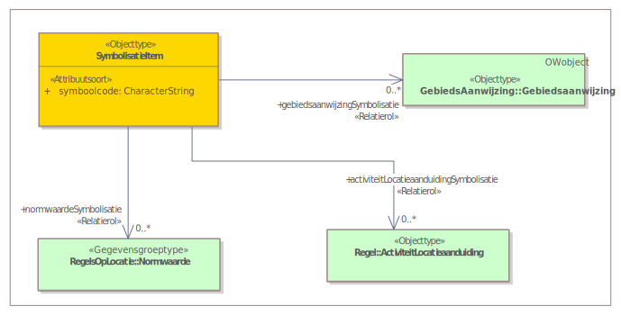Figuur 43Uitsnede uit IMOW-diagram voor objecttype SymbolisatieItem
SymbolisatieItem kent de volgende attributen:
symboolcode: een waarde uit de lijst van gestandaardiseerde symboolcodes, te vinden in de symbolenbibliotheek. Verplicht attribuut. Komt 1 keer voor.
activiteitLocatieaanduidingSymbolisatie: de Activiteitlocatieaanduiding die weergegeven dient te worden met de symbolisatie die door het bevoegd gezag is bepaald en afwijkt van de standaardsymbolisatie. Optioneel attribuut. Komt zo vaak voor als gewenst.
gebiedsaanwijzingSymbolisatie: de Gebiedsaanwijzing die weergegeven dient te worden met de stijl behorende bij de symboolcode. Optioneel attribuut. Komt zo vaak voor als gewenst.
normwaardeSymbolisatie: de normwaarde die weergegeven dient te worden met de stijl behorende bij de symboolcode. Optioneel attribuut. Komt zo vaak voor als gewenst.
SymbolisatieItem kent geen constraints.
7.10.5 Toelichting op de norm
symboolcode: het attribuut waarmee de gekozen symboolcode wordt vastgelegd. Het bevoegd gezag kiest de symboolcode uit de symbolenbibliotheek die hoort bij de symbolisatie die overeenkomt met de wijze waarop het bevoegd gezag de objecten wil weergeven. Wanneer het object SymbolisatieItem wordt gebruikt, is dat het object dat voor de weergave zorgt. Het gaat dan dus boven de weergave-werking van het attribuut groep.
activiteitLocatieaanduidingSymbolisatie, gebiedsaanwijzingSymbolisatie, normwaardeSymbolisatie: de attributen die de verwijzing bevatten van het SymbolisatieItem naar de identificatie van een specifieke ActiviteitLocatieaanduiding, Gebiedsaanwijzing of Normwaarde. Dit attribuut geeft aan welke van die objecten weergegeven wordt met de symboolcode uit het SymbolisatieItem. Voor de volledigheid wordt opgemerkt dat de ActiviteitLocatieaanduidingen, Gebiedsaanwijzingen Normwaarden waarnaar niet verwezen wordt met SymbolisatieItem, worden weergegeven met de standaardweergave van de groep die bij die objecten hoort. Met activiteitLocatieaanduidingSymbolisatie is het mogelijk om de activiteiten ‘het exploiteren van een discotheek’ en ‘het exploiteren van daghoreca’ ieder op een eigen manier weer te geven in plaats van met de standaardweergave die hoort bij de Activiteitengroep ‘exploitatieactiviteit horeca’. Ook is het hiermee mogelijk om de symbolisatie af te stemmen op de ‘instantie’ van de activiteit, oftewel de activiteitregelkwalificatie. De Locaties waar voor een bepaalde activiteit een vergunningplicht geldt worden dan bijvoorbeeld in een rode kleur weergegeven en de locaties waar die activiteit zonder vergunning of melding is toegestaan worden in een groene kleur weergegeven. Met gebiedsaanwijzingSymbolisatie kunnen specifieke voorkomens van een type Gebiedsaanwijzing die tot dezelfde groep behoren, ieder op een manier worden weergegeven in plaats van met de standaardweergave die hoort bij de betreffende groep. Met normwaardeSymbolisatie is het bijvoorbeeld mogelijk om van een omgevingsnorm of omgevingswaarde alle waarden die liggen tussen 0 en 5 met een rode kleur weer te geven en alle waarden die liggen tussen 6 en 10 met een blauwe kleur.
7.11 Objecttype Kaart
7.11.1 Toelichting op de toepassing
Zoals in paragraaf 3.6 is beschreven, heeft het bevoegd gezag twee methoden om zelf invloed uit te oefenen op de weergave van objecten, Locaties en waarden op een kaart. De eerste methode, die bestaat uit het kiezen van een eigen symbolisatie met behulp van het objecttype SymbolisatieItem, is beschreven in paragraaf 7.10.
De tweede methode die bevoegde gezagen ter beschikking staat, is het zelf samenstellen van kaarten en kaartlagen. Met deze methode kan het bevoegd gezag zelf aangeven dat bepaalde informatie, of een set van informatie, op een afzonderlijke kaart of kaartlaag moet worden weergegeven. Die tweede methode wordt beschreven in deze en in de volgende paragraaf.
Het objecttype Kaart kan gebruikt worden om vast te leggen dat een Juridische regel of een Tekstdeel wordt weergegeven op een specifieke kaart. Daarmee is het mogelijk om een kaart te genereren waarop alle Locaties en OW-objecten worden weergegeven die horen bij Juridische regels respectievelijk Tekstdelen die met het objecttype Kaart zijn geannoteerd.
Deze eigen weergavemogelijkheden gelden alleen voor DSO-LV en een eventuele eigen viewer van het bevoegd gezag, niet op overheid.nl.
7.11.2 Definitie
Het objecttype Kaart is het objecttype waarmee een bevoegd gezag aan kan geven dat bij een specifieke Juridische regel respectievelijk een specifiek Tekstdeel de domeinspecifieke OW-objecten moeten worden weergegeven op een afzonderlijke kaart.
7.11.3 Doel
Doel van het objecttype Kaart is het kunnen genereren van een kaart waarop de Locaties en OW-objecten worden weergegeven die horen bij één of meer bepaalde Juridische regels of Tekstdelen zodat die in samenhang kunnen worden getoond.
7.11.4 Norm
Figuur 44Uitsnede uit IMOW-diagram voor objecttype Kaart
Kaart kent de volgende attributen:
identificatie: de unieke identificatie waaronder elk object van dit type bekend is. Identificatie conform datatype NEN3610-ID. Verplicht attribuut. Komt 1 keer voor.
naam: de naam van de kaart. Het bevoegd gezag is vrij in de keuze van de naam. Verplicht attribuut. Komt 1 keer voor.
nummer: het nummer van de kaart. Door het bevoegd gezag te kiezen. Optioneel attribuut. Komt 0 of 1 keer voor.
uitsnede: de ligging van de kaart. Verplicht attribuut. Komt 1 keer voor. Het attribuut uitsnede wordt ingevuld met de gegevensgroep Kaartextent die de volgende attributen kent:
minX: de laagste X-coördinaat, bepaalt de linkergrens van de kaart. Verplicht attribuut. Komt 1 keer voor.
minY: de laagste Y-coördinaat, bepaalt de ondergrens van de kaart. Verplicht attribuut. Komt 1 keer voor.
maxX: de hoogste X-coördinaat, bepaalt de rechtergrens van de kaart. Verplicht attribuut. Komt 1 keer voor.
maxY: de hoogste Y-coördinaat, bepaalt de bovengrens van de kaart. Verplicht attribuut. Komt 1 keer voor.
kaartlagen: de verwijzing van een specifieke Kaart naar (de identificatie van) de kaartlagen die deze kaart vormen. Verplicht attribuut. Komt 1 of meerdere keren voor.
Wanneer Kaart wordt gebruikt, moet aan de bijbehorende Juridische regel dan wel het bijbehorende Tekstdeel het attribuut kaartaanduiding worden toegevoegd, dat aangeeft op welke Kaart de Juridische regel dan wel het Tekstdeel wordt weergegeven.
Kaart kent geen waardelijsten en geen constraints.
7.11.5 Toelichting op de norm
kaartuitsnede: met het attribuut kaartuitsnede kan het bevoegd gezag de exacte grenzen van een specifieke kaart aangeven. DSO-LV kan dit gebruiken in de weergave.
kaartlagen: het attribuut dat de verwijzing bevat van een specifieke kaart naar de identificatie van de afzonderlijke kaartlagen die de kaart opbouwen. De volgorde waarmee verwezen wordt naar de afzonderlijke kaartlagen heeft geen invloed aangezien de opbouw van de kaart bepaald wordt door het attribuut niveau van het object Kaartlaag.
7.12 Objecttype Kaartlaag
7.12.1 Toelichting op de toepassing
Op een kaart kan veel informatie voorkomen. Wanneer die informatie in verschillende kaartlagen wordt vastgelegd is het mogelijk om alle informatie van de kaart tegelijk weer te geven, om de informatie van één van de kaartlagen weer te geven en om de informatie van een deel van de kaartlagen in samenhang weer te geven.
7.12.2 Definitie
Kaartlaag is het objecttype waarmee de lagen worden gedefinieerd waaruit een kaart wordt opgebouwd.
7.12.3 Doel
Doel van het objecttype Kaartlaag is om het mogelijk te maken dat een kaart kan worden opgebouwd uit verschillende, door het bevoegd gezag te bepalen lagen en dat geselecteerd kan worden welke informatie van een kaart op die kaartlaag wordt weergegeven.
7.12.4 Norm
Figuur 45Uitsnede uit IMOW-diagram voor objecttype Kaartlaag
Kaartlaag kent de volgende attributen:
identificatie: de unieke identificatie waaronder elk object van dit type bekend is. Identificatie conform datatype NEN3610-ID. Verplicht attribuut. Komt 1 keer voor.
naam: de naam van de Kaartlaag. Het bevoegd gezag is vrij in de keuze van de naam. Optioneel attribuut. Komt 0 of 1 keer voor.
niveau: de plaats van een specifieke Kaartlaag in de volgorde van Kaartlagen waarmee een Kaart moet worden opgebouwd. Verplicht attribuut. Komt 1 keer voor. Wordt vastgelegd door middel van een positief geheel getal.
gebiedsaanwijzingweergave: de verwijzing van een specifieke Kaartlaag naar (de identificatie van) een Gebiedsaanwijzing die op de kaartlaag weergegeven dient te worden. Optioneel attribuut. Komt zo vaak voor als gewenst.
normweergave: de verwijzing van een specifieke Kaartlaag naar (de identificatie van) een Omgevingsnorm of Omgevingswaarde die op de kaartlaag weergegeven dient te worden. Optioneel attribuut. Komt zo vaak voor als gewenst.
activiteitlocatieweergave: de verwijzing van een specifieke Kaartlaag naar (de identificatie van) een ActiviteitLocatieaanduiding die op de kaartlaag weergegeven dient te worden. Optioneel attribuut. Komt zo vaak voor als gewenst.
Kaartlaag kent geen waardelijsten en geen constraints.
7.12.5 Toelichting op de norm
niveau: het niveau bepaalt de volgorde waarin de kaartlagen worden opgebouwd. Niveau 1 is de onderste Kaartlaag, de hier op volgende kaartlagen worden daarboven geprojecteerd.
activiteitlocatieweergave, gebiedsaanwijzingweergave, normweergave: de attributen die de verwijzing bevatten van de Kaartlaag naar de identificatie van een specifieke ActiviteitLocatieaanduiding, Gebiedsaanwijzing, Omgevingswaarde of Omgevingsnorm. Dit attribuut geeft aan welke van die objecten moet worden weergegeven op een bepaalde kaartlaag. Wanneer aan de specifieke ActiviteitLocatieaanduiding, Gebiedsaanwijzing, Omgevingswaarde of Omgevingsnorm het object SymbolisatieItem is gekoppeld, wordt het object op de kaartlaag weergegeven met de door het bevoegd gezag gekozen symbolisatie. Wanneer er geen object SymbolisatieItem is gekoppeld, wordt het object op de kaartlaag weergegeven met de standaardweergave van de groep die bij het specifieke object is aangegeven.
7.13 Objecttype Regelingsgebied
7.13.1 Toelichting op de toepassing
Het objecttype Regelingsgebied is bedoeld om het volledige gebied waar de Regeling over gaat aan te geven. Dat volledige gebied wordt gevormd door de optelling van alle Locaties van de Juridische regels of Tekstdelen die in de Regeling voorkomen. Het object Regelingsgebied bestaat uit één Locatie die de buitengrens of buitengrenzen van de optelling van alle Locaties vormt. Wanneer het Regelingsgebied niet één aaneengesloten geheel vormt, kan de Locatie uiteraard bestaan uit de samenvoeging van twee of meer Gebieden tot een Gebiedengroep. Aan de hand van dit object, samen met de STOP-metadata die over de Regeling aangeven van welk bevoegd gezag de Regeling is (STOP-metadata-element ‘Eindverantwoordelijke’) en het type omgevingsdocument (STOP-metadata-element ‘Soort regeling’) kan DSO-LV bepalen welke regelingen op welke gebieden van toepassing zijn. Het objecttype Regelingsgebied is noodzakelijk voor DSO-LV om het omgevingsdocument te kunnen tonen.
Het bevoegd gezag dient eenmalig per Regeling het Regelingsgebied aan te leveren. In veel gevallen zal het Regelingsgebied samenvallen met het grondgebied van het bevoegd gezag, bijvoorbeeld bij omgevingsverordening, waterschapsverordening, omgevingsplan en omgevingsvisie. Bij een projectbesluit en programma zal c.q. kan dat anders zijn; daar is het Regelingsgebied gelijk aan het gebied waar het project (met inbegrip van eventuele (compensatie)maatregelen) wordt uitgevoerd respectievelijk het gebied waarvoor het programma geldt en wordt uitgevoerd. Voor omgevingsplan en waterschapsverordening zal het Regelingsgebied samen met de bruidsschat door het Rijk worden aangeleverd en hoeven gemeenten en waterschappen dat niet zelf te doen.
Regelingsgebied is een objecttype dat hoort bij de Regeling. Het wordt niet gekoppeld aan een Juridische regel of Tekstdeel. Het is dus niet nodig (en ook niet de bedoeling) om in het omgevingsdocument een artikel of stuk tekst op te nemen dat een Regelingsgebied instelt of beschrijft.
7.13.2 Definitie
Regelingsgebied is het objecttype dat machineleesbaar vastlegt waar de volledige Regeling van toepassing is.
7.13.3 Doel
Doel van het objecttype Regelingsgebied is het geheel van Locaties aan te geven waarover in een bepaalde Regeling regels dan wel beleid zijn vastgesteld.
7.13.4 Norm
Figuur 46Uitsnede uit IMOW-diagram voor objecttype Regelingsgebied
Regelingsgebied kent de volgende attributen:
identificatie: de unieke identificatie waaronder elk object van dit type bekend is. Identificatie conform datatype NEN3610-ID. Verplicht attribuut. Komt 1 keer voor.
locatieaanduiding: de verwijzing van een Regelingsgebied naar (de identificatie van) de bijbehorende Locatie; attribuut dat de specifieke Locatie aanduidt waar dit Regelingsgebied van toepassing is. Verplicht attribuut. Komt 1 keer voor.
Regelingsgebied kent geen waardelijsten en geen constraints.
7.13.5 Toelichting op de norm
locatieaanduiding: het attribuut dat de verwijzing bevat naar de identificatie van de specifieke Locatie die bij het Regelingsgebied hoort. Voor Regelingsgebied bevat Locatie de geometrie(ën) die de buitengrens of buitengrenzen van de regeling vormen.
7.14 Objecttype Pons
7.14.1 Toelichting op de toepassing
Na inwerkingtreden van de Omgevingswet heeft iedere gemeente een omgevingsplan, dat bestaat uit:
het omgevingsplan van rechtswege, bestaande uit:
De Chw-bestemmings- en -inpassingsplannen, bestemmingsplannen, wijzigingsplannen, uitwerkingsplannen, inpassingsplannen, beheersverordeningen, exploitatieplannen en bepaalde voorbereidingsbesluiten;
regels over archeologisch onderzoek uit de verordening voor archeologische monumentenzorg, de verordening met betrekking tot afvloeiend hemelwater of grondwater, de kaarten met gegevens over de kwaliteit en functie van de bodem en de verleende ontheffingen om in afwijking van een bestemmingsplan voor een termijn van ten hoogste vijf jaar grond of een ander materiaal op te slaan indien dat met het oog op de voortgang van de bodemsanering noodzakelijk is.
het STOP/TPOD-deel van het omgevingsplan, bestaande uit:
de bruidsschatregels;
het permanente deel van het omgevingsplan.
Gedurende de overgangsfase worden het omgevingsplan van rechtswege en de bruidsschatregels vervangen door het permanente deel van het omgevingsplan. Zie hiervoor ook paragraaf 2.5, die over de overgangsfase van het omgevingsplan gaat.
De onder 1a genoemde instrumenten worden voorafgaand aan de inwerkingtreding van de Omgevingswet via ruimtelijkeplannen.nl elektronisch beschikbaar gesteld. Ze zijn na het inwerkingtreden van de Omgevingswet via een overbruggingsfunctie in DSO-LV raadpleegbaar. Ze worden hierna aangeduid als ‘ruimtelijke plannen'. Voor de gebruiker van DSO-LV is het van belang om te weten welke regels gelden: die uit de ruimtelijke plannen, die uit het STOP/TPOD-deel van het omgevingsplan of allebei. Om die duidelijkheid te kunnen verschaffen kan de gemeente bij het aanleveren van een besluit tot vaststelling of wijziging van het omgevingsplan een stukje extra informatie aanleveren waarmee het aangeeft dat door dat besluit voor een deel van het ambtsgebied de ruimtelijke plannen vervallen. De gemeente levert dan met het besluit een geometrie mee van het deel van het ambtsgebied waar de ruimtelijke plannen zijn vervallen. Voor het aanleveren van de extra informatie worden het Pons-GIO en het OW-object Pons gebruikt. Als door het besluit één of meer ruimtelijke plannen volledig vervallen, levert de gemeente een Pons aan én verwijdert zij het ruimtelijke plan of de ruimtelijke plannen uit het gemeentelijke Wro-manifest. In het geval van het vervallen van een inpassingsplan moet de provincie of het Rijk dat plan uit het eigen manifest verwijderen. De ruimtelijke plannen worden langs die weg ook uit de overbruggingsfunctie verwijderd.
Met het vervallen van delen van een ruimtelijk plan wordt in dit verband uitsluitend bedoeld de situatie waarin voor een deel van het plangebied het ruimtelijke plan vervalt: alle in dat deel aanwezige bestemmingen, aanduidingen en regels vervallen. Er ontstaan daardoor gaten in de plankaart waar het ruimtelijke plan niet meer geldt. Er wordt niet de situatie bedoeld waarin een of meer aanduidingen vervallen en/of een deel van de regels van een bestemming vervalt, of bijvoorbeeld alle regels over monumentale bomen.
Het resultaat van de Pons is dat de DSO-viewer bij een klik op de kaart in het Pons-gebied in de lijst van op die plek aangetroffen instrumenten wel het STOP/TPOD-deel van het omgevingsplan toont maar niet de ruimtelijke plannen die geraakt worden door de Pons. In de viewer is de Pons niet zichtbaar. Alleen het effect van de Pons is merkbaar: in het Pons-gebied worden ruimtelijke plannen niet getoond die zonder Pons wel getoond zouden worden. Let op dat de Pons in het ponsgebied effect heeft op alle ruimtelijke plannen. De Pons moet daarom alleen worden ingezet wanneer in het betreffende gebied het bestemmingsplan én eventueel aanwezig wijzigingsplan, uitwerkingsplan, inpassingsplan, beheersverordening, exploitatieplan en voorbereidingsbesluit (c.q. delen daarvan) zijn vervallen. De Pons heeft geen effect op TAM-IMRO-omgevingsplannen. Die worden dus ook getoond in het ponsgebied.
De Locatie van de Pons wordt, net als Locaties die bij de Regeling horen, in de vorm van een GIO vastgesteld. Een ruimtelijk plan of deel daarvan vervalt door het vaststellen (en vervolgens in werking treden) van een besluit tot wijziging van het omgevingsplan. Daarom hoort het Pons-GIO bij het Besluit en niet bij de Regeling. Het OW-object Pons is alleen bedoeld als technisch object. In de regeling van het omgevingsplan heeft de Pons geen juridische betekenis. Er is dus niet een artikel in het omgevingsplan dat een Pons instelt of daar regels over stelt. Er zijn ook geen artikelen in het omgevingsplan waarvan de juridische regels verwijzen naar de Pons-locatie als locatie van die juridische regel. In het omgevingsplan zelf worden de Pons en het pons-GIO niet vermeld, dus ook niet in de bijlage waarin de GIO's bij de regeling worden opgesomd.
In het Besluit moet een artikel worden opgenomen dat vastlegt welke ruimtelijke plannen of delen daarvan door het besluit vervallen en dat verwijzingen naar de Pons en het Pons-GIO bevat. De verwijzing naar de Pons is een tekstuele. De aanbeveling is om de verwijzing naar het Pons-GIO in de vorm van een ExtIoRef[21] Een ExtIoRef bevat een verwijzing naar de identificatie van een geografisch informatieobject. in het artikel in het Besluit op te nemen. Dat voorkomt dat bij het Besluit, dat vaak al veel bijlagen zal hebben, ook nog een bijlage met verwijzing naar het GIO gevoegd moet worden.
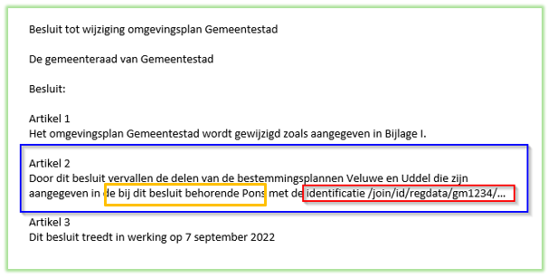Figuur 47Voorbeeld van besluit-artikel over vervallen (delen van) bestemmingsplan en Pons
Figuur 47 toont een voorbeeld van een besluit tot wijziging van een omgevingsplan. Met blauw is gemarkeerd het artikel dat aangeeft welke delen van bestemmingsplannen door het besluit vervallen en dat de verwijzingen naar de Pons en het Pons-GIO bevat. Te zien is dat de (oranje gemarkeerde) verwijzing naar de Pons een tekstuele is (“de bij dit besluit behorende Pons”) en dat de rood gemarkeerde verwijzing naar het Pons-GIO de vorm van een ExtIoRef heeft.
Per omgevingsplan is er maximaal één Pons. De Pons hoort alleen bij de hoofdregeling van het omgevingsplan en niet bij eventuele tijdelijk regelingdelen die samen met de hoofdregeling de geconsolideerde regeling van het omgevingsplan vormen. De Pons wordt in de loop van de tijd gemuteerd. Met iedere mutatie wordt de Pons uitgebreid, net zolang tot alle ruimtelijke plannen van de gemeente zijn vervallen. Daarna kan het Pons-GIO worden ingetrokken en kan het OW-object Pons beëindigd worden.
Bij de initiële aanlevering en iedere daarop volgende wijziging van de Pons levert de LVBB samen met de nieuwe versie van de geconsolideerde regeling van het omgevingsplan het Pons-object door aan DSO-LV. Het is niet de bedoeling om met een besluit een Pons-GIO te muteren zonder tevens de regeling van het omgevingsplan te muteren. Door het ontbreken van een regeling zal een aldus gemuteerde Pons niet aan DSO-LV worden doorgeleverd omdat de LVBB alleen geconsolideerde regelingen doorlevert. Als een gemeente er na de bekendmaking van een besluit tot wijziging van het omgevingsplan achter komt dat zij ten onrechte niet met dat besluit ook een Pons-mutatie heeft doorgeven, moet de gemeente de mutatie van de Pons meenemen in het eerstvolgende wijzigingsbesluit. In de toekomst, na implementatie van de rectificatie uit STOP versie 2.0, kan dit met een rectificatie.
7.14.2 Definitie
Pons is het OW-object voor het omgevingsplan waarmee het bevoegd gezag aangeeft dat een of meer ruimtelijke plannen, of delen daarvan, die in de overbruggingsfunctie van DSO-LV aanwezig zijn, niet langer geldig zijn en dat er voor zorgt dat de overbruggingsfunctie van DSO-LV die ruimtelijke plannen niet meer toont.
7.14.3 Doel
Doel van het objecttype Pons is het bieden van een instrument waarmee de overbruggingsfunctie van DSO-LV kan bepalen of aan een gebruiker, naast het STOP/TPOD-deel van het omgevingsplan, wel of niet de ruimtelijke plannen uit het omgevingsplan van rechtswege getoond moeten worden.
7.14.4 Norm
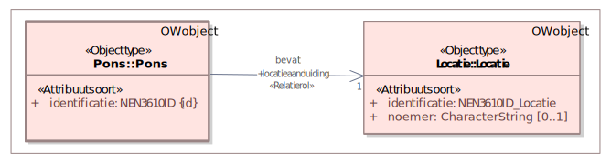Figuur 48Uitsnede uit IMOW-diagram voor objecttype Pons
Het object Pons dient te worden aangeleverd bij de eerste keer dat het bevoegd gezag een besluit tot vaststelling of wijziging van het omgevingsplan heeft genomen waardoor één of meer ruimtelijke plannen of één of meer delen daarvan die in de overbruggingsfunctie aanwezig zijn, zijn vervallen: alle bestemmingen, aanduidingen en regels die in dat ruimtelijke plan of delen daarvan van toepassing waren, zijn vervallen. De overbruggingsfunctie hoeft daar waar die ruimtelijke plannen zijn vervallen, die plannen niet meer te tonen. Bij ieder volgend wijzigingsbesluit waardoor één of meer ruimtelijke plannen of één of meer delen daarvan vervallen, wordt het Pons-object gemuteerd.
Pons kent de volgende attributen:
identificatie: de unieke identificatie waaronder elk object van dit type bekend is. Identificatie conform datatype NEN3610-ID. Verplicht attribuut. Komt 1 keer voor.
locatieaanduiding: de verwijzing van een Pons naar (de identificatie van) de bijbehorende Locatie; attribuut dat de specifieke Locatie aanduidt waar deze Pons van toepassing is. Verplicht attribuut. Komt 1 keer voor.
Pons kent geen waardelijsten en constraints.
7.14.5 Toelichting op de norm
locatieaanduiding: het attribuut dat de verwijzing bevat naar de identificatie van de specifieke Locatie die bij deze Pons hoort én aangeeft wat de betekenis van Locatie is voor het object waar het bij hoort; in dit geval voor Pons. Dit attribuut legt dus vast dat deze Locatie de locatie is waar de Pons van toepassing is. Voor Pons bevat Locatie de geometrie(ën) van de ruimtelijke plannen c.q. de delen van ruimtelijke plannen waarvoor alle bestemmingen, aanduidingen en regels zijn vervallen door het in werking treden van het besluit tot wijziging van het omgevingsplan.
Zoals in paragraaf 7.14.1 al is aangegeven wordt het Pons-GIO, en dus ook de Locatie behorend bij het OW-object Pons, in de loop van de tijd gemuteerd. Uiteindelijk, wanneer alle ruimtelijke plannen zijn vervallen en vervangen door het omgevingsplan, kan de Pons worden ingetrokken respectievelijk beëindigd.
7.15 Het niveau van annoteren
Een annotatie met een OW-object kan -in inhoudelijke zin- betrekking hebben op een hele Regeltekst respectievelijk een hele Divisie of Divisietekst, of alleen op een Juridische regel of een Tekstdeel, en indien gewenst zelfs op een onderdeel daarvan. In de technische uitwerking worden annotaties gepositioneerd op het niveau van Regeltekst respectievelijk Divisie of Divisietekst: iedere annotatie verwijst naar de identificatie van de Regeltekst dan wel de Divisie of Divisietekst. De annotatie die inhoudelijk gaat over een onderdeel van een Regeltekst, Divisie of Divisietekst verwijst dus niet exact naar het opsommingsonderdeel of het stukje tekst waarop de annotatie van toepassing is, maar naar (de identificatie van) de Regeltekst (oftewel het artikel of lid) of de Divisie of Divisietekst waarin de annotatie voorkomt. Gevolg daarvan is dat DSO-LV bij een bevraging het hele Artikel of het hele Lid c.q. de hele Divisie of Divisietekst toont en niet alleen de Juridische regel, Tekstdeel of het stukje tekst waar de annotatie inhoudelijk betrekking op heeft. Dat is ook wenselijk omdat op die manier de volledige context wordt getoond.
7.16 Annoteren wanneer een deel van norm of beleid in een bijlage staat
Zoals hiervoor al een aantal keren is opgemerkt wordt het annoteren met OW-objecten alleen toegepast op het Lichaam van de Regeling van omgevingsdocumenten, oftewel het onderdeel dat de artikelen respectievelijk de inhoudelijke (beleids)teksten bevat. Bij dat inhoudelijke deel kunnen bijlagen worden gevoegd. Aan (onderdelen van) bijlagen kunnen geen annotaties worden toegevoegd. In omgevingsdocumenten met Artikelstructuur kunnen Locatie en de domeinspecifieke annotaties (Activiteit, Omgevingsnorm, Omgevingswaarde en Gebiedsaanwijzing) immers alleen gekoppeld worden aan het OW-object Juridische regel. Het object Juridische regel kan alleen worden toegepast op een artikel of een lid en niet op (onderdelen van) een bijlage. Datzelfde geldt voor omgevingsdocumenten met Vrijetekststructuur: daar kan de domeinspecifieke annotatie (i.c. Gebiedsaanwijzing) alleen gekoppeld worden aan het OW-object Tekstdeel. Het object Tekstdeel kan alleen worden toegepast op de (beleids)tekst van het omgevingsdocument en niet op (onderdelen van) een bijlage.
Er zijn situaties waarin het, bijvoorbeeld om redenen van leesbaarheid of vormgeving (denk aan lange lijsten en complexe tabellen), wenselijk is om onderdelen van een norm niet in het artikel van de norm maar in een bijlage te plaatsen. Voorbeelden van die onderdelen zijn de waarden van een omgevingsnorm of omgevingswaarde en de locaties waar een norm geldt. Ook in zo’n geval wordt een bijlage niet geannoteerd, maar worden de annotaties aan het artikel (of lid) toegevoegd. De mensleesbare informatie staat dan in de bijlage; de machineleesbare informatie is gekoppeld aan het artikel of lid. Een gebruiker merkt dat niet.
Deze systematiek kan worden toegepast bij het annoteren met Activiteit. Een voorbeeld is een artikel in een omgevingsplan waarin staat dat het ter plaatse van de functie Bedrijventerrein toegestaan is om de activiteiten te verrichten die in de bijlage zijn opgesomd. Ook bij het annoteren met de OW-objecten Omgevingsnorm en Omgevingswaarde kan dit principe worden toegepast. Er moet dan echter wel rekening mee gehouden worden dat de STOP/TPOD-standaard niet toestaat dat kwantitatieve respectievelijk kwalitatieve waarden die bij een norm horen zowel in de tekst als in GIO’s en het normwaarde-attribuut van Omgevingsnorm of Omgevingswaarde voorkomen. Wanneer de waarden in de tekst van de bijlage zijn geplaatst moet bij het annoteren van het artikel met Omgevingsnorm of Omgevingswaarde gekozen worden voor het normwaarde-attribuut ‘waardeInRegeltekst’. Daarmee wordt een verwijzing gemaakt naar de tekst van het artikel dat de norm bevat; het artikel bevat dan weer de verwijzing naar de bijlage. Het GIO bevat in zo’n geval alleen de geometrie en geen waarden (en ook geen verwijzing naar de tekst, die kent alleen de TPOD-standaard). Dit geldt overigens ook wanneer kwantitatieve of kwalitatieve waarden in de tekst van het artikel staan; ook dan moet bij het annoteren met Omgevingsnorm of Omgevingswaarde gekozen worden voor het normwaarde-attribuut ‘waardeInRegeltekst’.
Hier kan nog worden opgemerkt dat het vanuit de standaard niet nodig is om te werken met waarden en locaties in een bijlage. De kenbaarheid is immers afdoende juridisch geborgd wanneer die informatie in het GIO is opgenomen. Vanuit dat principe volstaat het om de norm in het artikel op te nemen en de geometrie en de waarden in het GIO (en in het normwaarde-attribuut van Omgevingsnorm of Omgevingswaarde) vast te leggen.
8 Wijzigen van omgevingsdocumenten met wijzigingsbesluiten
Dit hoofdstuk gaat over het wijzigen van omgevingsdocumenten met wijzigingsbesluiten. Daarbij is onderscheid gemaakt in het wijzigen van tekst (paragraaf 8.1), het wijzigen van GIO’s (paragraaf 8.2) en het wijzigen van OW-objecten (paragraaf 8.3). In paragraaf 8.4 tenslotte is beschreven hoe gehandeld moet worden bij wijzigingsprocessen waarin gelijktijdig, of nagenoeg gelijktijdig, het wijzigingsbesluit wordt vastgesteld.
8.1 Wijzigen van tekst
Nadat een initiële regeling van een omgevingsdocument tot stand is gekomen, wordt deze met wijzigingsbesluiten gewijzigd. Uitgangspunt van de STOP/TPOD-standaard is dat voor het wijzigen van tekst gebruik gemaakt wordt van de wijzigingsmethode renvooi. Hoe renvooi moet worden toegepast, wordt beschreven in paragraaf 8.1.1. Er bestaan twee alternatieven voor renvooi, te weten Intrekken & vervangen en Integrale tekstvervanging, die onder bepaalde omstandigheden mogen worden toegepast. Deze alternatieve wijzigingsmethoden worden in paragraaf 8.1.2 beschreven.
8.1.1 Wijzigingsmethode renvooi
Een bestuursorgaan dat een omgevingsdocument wijzigt, besluit alleen over de wijzigingen die het in dat omgevingsdocument aanbrengt, niet over de ongewijzigde onderdelen. In een wijzigingsbesluit staan daarom alleen de onderdelen van het omgevingsdocument die gewijzigd zijn. De wijzigingsmethode renvooi ondersteunt dat aspect van het besluitvormingsproces optimaal: met renvooi worden in de tekst speciale markeringen aangebracht die de wijzigingen die het besluit ten opzichte van de vorige versie van de regeling aanbrengt, op een voor de mens inzichtelijk manier zichtbaar maken. Daarnaast is deze methodiek automatiseerbaar. Daardoor kan geautomatiseerd uit de bestaande tekst en de renvooimarkeringen in het wijzigingsbesluit de nieuwe versie van de tekst ge(re)construeerd worden en kunnen de renvooimarkeringen geautomatiseerd worden gegenereerd door de twee versies van de tekst met elkaar te vergelijken.
Het bevoegd gezag start het wijzigingsproject door de juridische uitgangssituatie te kiezen: de versie van de regeling ten opzichte waarvan de wijzigingen worden aangebracht. Doorgaans zal dat de op het moment van starten geldende versie van de regeling zijn. Bij toepassing van versiebeheer wordt van die juridische uitgangssituatie een bevroren versie gemaakt. In die bevroren regelingversie worden de voor het wijzigingsproject benodigde wijzigingen in de tekst aangebracht. Het is mogelijk dat tussen de start van dit project en de publicatie van het ontwerp- of definitieve besluit andere wijzigingsbesluiten hebben geleid tot een nieuwe versie van de geldende regeling. Als dat zo is, worden die wijzigingen overgenomen in de juridische uitgangssituatie voor het wijzigingsproject. De juridische uitgangssituatie is de ‘was’-versie; de juridische uitgangssituatie inclusief de wijzigingen van het wijzigingsproject is de ‘wordt’-versie. Uit een vergelijking van de ‘wordt’-versie van de regeling met de ‘was’-versie van de regeling genereert de plansoftware (of een renvooiservice) het ontwerp- of definitieve wijzigingsbesluit, waarin de wijzigingen met renvooimarkeringen zijn aangegeven.
Bron van het wijzigingsbesluit is de XML-versie waarin machineleesbaar de wijzigingen worden gespecificeerd. Daarvan wordt een PDF-versie gegenereerd, waarin in renvooi de wijzigingen op een mensleesbare manier worden weergegeven.
Bij gebruik van de wijzigingsmethode renvooi wordt in de WijzigBijlage van het Besluit een RegelingMutatie opgenomen met daarin achtereenvolgens alle wijzigingen.
Het model voor regelingen met artikelstructuur kent de volgende elementen:
RegelingOpschrift
Lichaam, met daarbinnen de tekstelementen Hoofdstuk, Titel, Afdeling, Paragraaf, Subparagraaf, Subsubparagraaf, Artikel en Lid
Bijlage, met daarbinnen Divisie en Divisietekst
Toelichting, met daarbinnen
AlgemeneToelichting, met daarbinnen Divisie en Divisietekst
ArtikelgewijzeToelichting, met daarbinnen Divisie en Divisietekst
De elementen van een regeling die met de wijzigingsmethode renvooi gemuteerd kunnen worden, worden mutatie-eenheden genoemd. De mutatie-eenheden in een regeling met artikelstructuur zijn:
de elementen Lichaam, Bijlage, Toelichting, AlgemeneToelichting en ArtikelgewijzeToelichting;
de tekstelementen Hoofdstuk, Titel, Afdeling, Paragraaf, Subparagraaf, Subsubparagraaf, Artikel, Divisie en Divisietekst.
Het RegelingOpschrift kan niet gemuteerd worden. Het hele lichaam wordt slechts in uitzonderlijke gevallen, wanneer er ingrijpende wijzigingen in de structuur van het lichaam van de regeling nodig zijn, vervangen.
In het lichaam is artikel de kleinste mutatie-eenheid. Dit betekent dat het artikel de eenheid is die, ongeacht hoeveel wijzigingen in dat artikel of in de leden van dat artikel worden aangebracht, als geheel vervangen wordt bij consolidatie. Door de renvooi-weergave wordt zichtbaar wat er door het wijzigingsbesluit in het artikel gewijzigd is. Het is ook de eenheid waarover in de wetstechnische informatie in de regelingenbanken de juridische verantwoording wordt bijgehouden. In de Bijlage, AlgemeneToelichting en ArtikelgewijzeToelichting is Divisietekst de kleinste mutatie-eenheid. Ook daarvoor geldt dat, ongeacht hoeveel wijzigingen in die Divisietekst worden aangebracht, de Divisietekst als geheel vervangen wordt bij consolidatie en dat door de renvooi-weergave zichtbaar wordt wat de wijzigingen in de Divisietekst zijn.
De wijzigingsmethode renvooi maakt het bijvoorbeeld mogelijk om een volledig hoofdstuk met daarin afdelingen, paragrafen en artikelen in het lichaam van een regeling toe te voegen, om de algemene toelichting te vervangen door een nieuwe versie daarvan, maar ook om een lid uit een artikel te verwijderen of een woord in een lid van een artikel te wijzigen in een ander woord. In de laatste twee gevallen bevat het wijzigingsbesluit het volledige artikel dat gewijzigd wordt, waardoor de wijziging in haar context zichtbaar en daardoor begrijpelijk is.
Figuur 49 en Figuur 50 geven een beeld van de werking van de wijzigingsmethode renvooi. In Figuur 49 staat links de tekst van artikel 5.7 in de oude versie van de regeling, oftewel de ‘was’-versie, en rechts de tekst van datzelfde artikel in de nieuwe versie van de regeling, de ‘wordt’-versie. De plansoftware (of een renvooiservice) heeft een vergelijking van de ‘wordt’-versie met de ‘was’-versie van de regeling gemaakt en heeft daaruit het ontwerp- of definitieve wijzigingsbesluit gegenereerd. Figuur 50 laat de mensleesbare renvooiweergave van het wijzigingsbesluit zien.
Figuur 49Links oude versie regeling (‘was’-versie), rechts nieuwe versie regeling (‘wordt’- versie)Figuur 50Wijzigingsbesluit met mensleesbare renvooiweergave van verwijderde en nieuwe tekst
Door deze methodiek is precies te zien welke onderdelen van de tekst door het wijzigingsbesluit gewijzigd zijn. Bij (wijzigings)besluiten waartegen beroep kan worden ingesteld maakt dat ook direct duidelijk waarover dat beroep kan gaan. Uit de weergave van het voorbeeld van Figuur 50 wordt duidelijk dat het recht op het bouwen van een bijbehorend bouwwerk en het gebruik daarvan voor mantelzorg al bestond en dat in beroep alleen kan worden opgekomen tegen de vergroting van de toegelaten oppervlakte en de beperking tot alleen buiten de bebouwde kom.
Het model voor regelingen met vrijetekststructuur kent de volgende elementen:
RegelingOpschrift
Lichaam, met daarbinnen Divisie en Divisietekst
Bijlage, met daarbinnen Divisie en Divisietekst
De elementen van een regeling die met de wijzigingsmethode renvooi gemuteerd kunnen worden, worden mutatie-eenheden genoemd. De mutatie-eenheden in een regeling met vrijetekststructuur zijn:
de elementen Lichaam en Bijlage;
de tekstelementen Divisie en Divisietekst.
Het RegelingOpschrift kan niet gemuteerd worden. Het hele lichaam wordt slechts in uitzonderlijke gevallen, wanneer er ingrijpende wijzigingen in de structuur van het lichaam van de regeling nodig zijn, vervangen. Divisietekst is, zowel in het lichaam als in de bijlage, de kleinste mutatie-eenheid. Dat betekent dat, ongeacht hoeveel wijzigingen in die Divisietekst worden aangebracht, de Divisietekst als geheel vervangen wordt bij consolidatie. Door de renvooi-weergave wordt zichtbaar wat de wijzigingen in de Divisietekst zijn. Het is ook de eenheid waarover de juridische verantwoording wordt bijgehouden.
Om een wijzigingsbesluit leesbaar te houden, wordt niet de volledige tekst van de regeling met renvooi opgenomen in het besluit, maar alleen de delen waarin de wijzigingen voorkomen: het gewijzigde artikel, het ingevoegde hoofdstuk et cetera. Het kan wenselijk zijn, bijvoorbeeld ten behoeve van het besluitvormingsproces, om ook een versie van de gehele tekst van de regeling te hebben waarin de wijzigingen die het wijzigingsbesluit daarin aanbrengt in renvooi worden weergegeven. Daardoor wordt het effect van de wijzigingen op de hele regeling inzichtelijk. Dit is mogelijk door een proefversie te maken: de regelingversie die volgt uit dit specifieke besluit. Door het geautomatiseerde proces komt de regeling-in-renvooi namelijk exact overeen met het besluit.
8.1.2 Alternatieven voor de wijzigingsmethode renvooi
Er zijn omstandigheden waarin het gebruik van de wijzigingsmethode renvooi niet mogelijk is, bijvoorbeeld omdat de plansoftware die het bevoegd gezag gebruikt dat nog niet ondersteunt. Voor het wijzigen van het omgevingsplan is het dan bij wijze van Tijdelijke Alternatieve Maatregel toegestaan om gebruik te maken van een van de alternatieve wijzigingsmethoden, namelijk Intrekken & vervangen (zie paragraaf 8.1.2.1.1) of Integrale tekstvervanging (zie paragraaf 8.1.2.1.2). Gebruik van deze wijzigingsmethoden stelt bijzondere eisen aan de formulering van het besluit. Die zijn, met een voorbeeld, het onderwerp van paragraaf 8.1.2.2.
8.1.2.1 Alternatieve wijzigingsmethoden
8.1.2.1.1 Intrekken & vervangen
Intrekken & vervangen in zijn algemeenheid houdt in dat het bevoegd gezag een bestaande regeling intrekt en vervangt door een nieuwe regeling. Met de alternatieve wijzigingsmethode Intrekken & vervangen wordt bedoeld de situatie waarin Intrekken & vervangen wordt ingezet als alternatief wanneer het wijzigen met renvooi niet mogelijk is. Hierbij is juridisch sprake van een wijzigingsbesluit, dat technisch wordt uitgevoerd als het intrekken van een regeling en het vervangen daarvan door een nieuwe regeling. Het gaat hier niet om de reguliere methode Intrekken & vervangen, waarbij zowel juridisch als technisch sprake is van het intrekken van een regeling en het vervangen daarvan door een nieuwe regeling, waarbij die regelingen zo sterk met elkaar verbonden zijn dat sprake is van een opvolgingsrelatie.
Bij de alternatieve wijzigingsmethode Intrekken & vervangen wordt in de WijzigBijlage een RegelingCompact (of in het geval van het wijzigen van een tijdelijk regelingdeel een RegelingTijdelijkdeel), dus een nieuwe regeling, opgenomen. De nieuwe regeling krijgt een volledig nieuwe identificatie. In de ConsolidatieInformatie wordt in een element Intrekking de identificatie opgenomen van de oude regeling die wordt ingetrokken. In de RegelingMetadata van de nieuwe regeling wordt met het gegeven opvolgerVan aangegeven wat (de identificatie) van de ingetrokken oude regeling is. Dit maakt voor de voorzieningen duidelijk dat sprake is van Intrekken & vervangen én maakt tijdreizen mogelijk.
Door het intrekken van een regeling worden ook alle bij die regeling behorende GIO’s ingetrokken. Bij de nieuwe, vervangende regeling moeten alle bij die regeling behorende GIO’s worden aangeleverd met een nieuwe identificatie, ook als ze ongewijzigd zijn.
De wijzigingsmethode Intrekken & vervangen kan niet worden toegepast voor het intrekken en vervangen van een hoofdregeling wanneer bij die hoofdregeling één of meer tijdelijk regelingdelen horen. Dat kan voorkomen bij het omgevingsplan en de omgevingsverordening. In dat geval moet gebruik gemaakt worden van de alternatieve wijzigingsmethode Integrale tekstvervanging, die het onderwerp is van de volgende paragraaf.
Gebruik van Intrekken & vervangen als alternatieve wijzigingsmethode is alleen toegestaan tijdens de geldigheid van (alle versies van) de A-release van de STOP/TPOD-standaard. Wanneer de B-release van de STOP/TPOD-standaard wordt toegepast, is gebruik van deze wijzigingsmethode als alternatief voor renvooi niet meer toegestaan.
8.1.2.1.2 Integrale tekstvervanging
Bij gebruik van de alternatieve wijzigingsmethode Integrale tekstvervanging wordt de gehele versie van een regeling vervangen door een nieuwe versie van die regeling. In tegenstelling tot de wijzigingsmethode Intrekken & vervangen kan deze wijzigingsmethode ook gebruikt worden voor het wijzigen van een hoofdregeling wanneer bij die hoofdregeling één of meer tijdelijk regelingdelen horen.
Bij de alternatieve wijzigingsmethode Integrale tekstvervanging wordt in de WijzigBijlage een RegelingMutatie opgenomen, met daarin een VervangRegeling die de gehele gewijzigde nieuwe regelingversie bevat. In het element RegelingMutatie worden de identificaties van de was- en de wordt-versie opgenomen. Ongewijzigde GIO’s worden bij deze methode niet opnieuw aangeleverd.
8.1.2.2 Formulering besluit bij gebruik alternatieve wijzigingsmethoden
Bij de toepassing van de alternatieve wijzigingsmethoden Intrekken & vervangen en Integrale tekstvervanging wordt een volledige (versie van een) regeling vervangen door een nieuwe (versie van een) regeling. Daarin is niet gemarkeerd welke wijzigingen het wijzigingsbesluit daarin aanbrengt. Het is uiteraard niet de bedoeling dat door het om technische redenen toepassen van een van deze wijzigingsmethoden de volledige regeling voor beroep vatbaar wordt, dus ook de onderdelen die juridisch gezien niet gewijzigd zijn. Om dat te voorkomen wordt geadviseerd om in het dictum van het besluit de wijzigingen aan te geven. Daarmee wordt bewerkstelligd dat in juridische zin sprake is van een wijzigingsbesluit, terwijl dat technisch is uitgevoerd met Intrekken & vervangen of Integrale tekstvervanging. De door VNG en ministerie van BZK geadviseerde opzet van zo’n besluit is weergegeven in Figuur 51.
Figuur 51Voorbeeld van de tekst van een besluit bij mutatiescenario Integrale Tekstvervanging
NB: In het voorbeeld van Figuur 51 lijkt het alsof in Artikel III andere artikelen, ondergebracht in een hoofdstuk, voorkomen. Dat is alleen visueel zo; de STOP/TPOD-standaard staat geen artikelen in artikelen toe. In technische termen bestaat Artikel III uit een Kop, gevolgd door een element Inhoud dat een aantal alinea’s en een opsomming met lijstitems bevat.
8.2 Wijzigen van GIO's
Op grond van artikel 7, eerste lid, Bekendmakingswet bestaat een regeling uit tekst en kan een regeling tevens informatie bevatten die niet uit tekst bestaat. Een GIO is zo’n onderdeel dat uit andere informatie bestaat. In het derde lid van dit artikel is nu bepaald dat bij wijziging van een onderdeel van een regeling dat niet uit tekst maar uit andere informatie bestaat of van een bijlage bij die regeling die wegens aard of omvang niet in het publicatieblad maar elders elektronisch is gepubliceerd, die informatie of die bijlage opnieuw wordt vastgesteld. Er is een wijziging van lid 3 van artikel 7 in voorbereiding waardoor deze bepaling alleen nog geldt voor onderdelen van een regeling die uit andere informatie dan tekst bestaat (en voor bijlagen) die niet geconsolideerd kunnen worden. Een GIO is een onderdeel dat geconsolideerd kan worden. Daardoor hoeft, na inwerkingtreden van deze wijziging van de Bekendmakingswet, bij wijziging een GIO niet opnieuw vastgesteld te worden maar kan het gewijzigd kan worden.
Om technische reden is het nog niet mogelijk om GIO’s te wijzigen door alleen de gewijzigde onderdelen aan te leveren. Voor GIO’s bestaat nog geen renvooi-weergave. Als een bestuursorgaan een GIO wil wijzigen, bijvoorbeeld omdat bij het gebiedsgewijs opbouwen van het omgevingsplan een artikel over de activiteit wonen niet alleen meer het centrum als werkingsgebied heeft maar ook het buitengebied, dan doet het dat door een nieuwe versie van het GIO vast te stellen en aan te leveren. Ook hier geldt dat het niet de bedoeling is dat door het moeten aan leveren van een nieuwe versie van een GIO, bij iedere wijziging van een GIO, hoe klein ook, het hele GIO voor beroep vatbaar wordt, dus ook de onderdelen die niet gewijzigd zijn. Om dat te voorkomen kan een vergelijkbare werkwijze worden toegepast als bij de alternatieve wijzigingsmethoden Intrekken & vervangen en Integrale tekstvervanging. Geadviseerd wordt om in het dictum van het besluit de wijzigingen in het GIO precies te beschrijven. Dan is juridisch sprake van een wijzigingsbesluit, dat technisch wordt uitgevoerd op de beschikbare manier, namelijk door het vaststellen en aanleveren van een nieuwe versie van het GIO. Dit kan verduidelijkt worden door in de motivering of de toelichting kaartjes op te nemen waarmee de verschillen worden geïllustreerd. Figuur 52 laat een voorbeeld van zo’n kaartje zien (bron: LandGoed en gemeente Amsterdam).
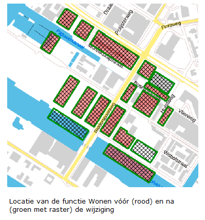Figuur 52Voorbeeld kaartje ter illustratie van wijziging GIO
8.3 Wijzigen van OW-objecten
Een wijzigingsbesluit kan ook gevolgen hebben voor de OW-objecten in de geconsolideerde regeling. Het bevoegd gezag kan het omgevingsdocument zo wijzigen dat de OW-objecten wijzigen of dat er andere OW-objecten nodig zijn. Voor het wijzigen van OW-objecten zijn er in grove lijnen drie scenario’s: het wijzigen van een bestaand OW-object, het laten vervallen van een bestaand OW-object en het toevoegen van een nieuw OW-object.
Wanneer door of samen met het wijzigingsbesluit een bestaand OW-object wijzigt, voegt het bevoegd gezag bij de aanlevering van het bekend te maken besluit de gewijzigde attributen met de bestaande identificatie van een al bestaand OW-object toe. DSO-LV herkent het OW-object op basis van de identificatie en verwerkt de attributen.
In het geval dat door of samen met het wijzigingsbesluit een bestaand OW-object moet vervallen (in mutatietermen: het object wordt beëindigd), voegt het bevoegd gezag bij de aanlevering van het bekend te maken besluit het OW-object met een bestaande identificatie toe met de status ‘beëindigen’. DSO-LV herkent de identificatie van het OW-object en verwerkt het op basis van de status ‘beëindigen’: (het effect van) het OW-object wordt niet meer getoond.
Wanneer door het wijzigingsbesluit een nieuw OW-object ontstaat, levert het bevoegd gezag bij de aanlevering van het bekend te maken besluit het nieuwe OW-object aan. Er wordt dan een OW-object meegeleverd met een identificatie die in DSO-LV nog niet bekend is. DSO-LV beschouwt het als een nieuw OW-object en voegt het toe op dezelfde manier als bij de aanlevering van een initieel besluit.
Voor het wijzigen van OW-objecten gelden drie uitgangspunten:
lever alleen gegevens aan als ze gewijzigd zijn;
verwijder expliciet gegevens die niet meer gebruikt worden;
een wijziging van een object zorgt voor een nieuwe versie van dat object.
Bij toepassing van de wijzigingsmethode renvooi en de alternatieve wijzigingsmethode Integrale tekstvervanging gelden deze drie uitgangspunten onverkort. Voor de alternatieve wijzigingsmethode Intrekken & vervangen geldt een uitzondering op het uitgangspunt ‘lever alleen gegevens aan als ze gewijzigd zijn’ voor de objecttypen Regeltekst, Divisie, Divisietekst, Pons en Regelingsgebied. Deze objecten moeten bij Intrekken & vervangen altijd opnieuw worden aangeleverd. Ze hoeven echter als ze blijven bestaan niet beëindigd te worden. (Wanneer onderdeel van de wijziging is dat zo’n object niet blijft bestaan moet het wel beëindigd worden.) De andere twee uitgangspunten gelden ook bij deze wijzigingsmethode onverkort.
8.4 Parallelle wijzigingsprocessen: omgaan met gelijktijdige wijzigingen
Bij sommige typen omgevingsdocument is het goed mogelijk dat er meerdere wijzigingsbesluiten tegelijkertijd worden voorbereid. Het kan dan voorkomen dat op dezelfde dag of heel kort na elkaar meerdere besluiten tot wijziging van hetzelfde omgevingsdocument worden genomen. Voorbeelden daarvan zijn:
De gemeenteraad stelt in één vergadering drie besluiten tot wijziging van het omgevingsplan vast.
De gemeenteraad neemt op donderdag een besluit tot wijziging van het omgevingsplan nadat B&W een dag eerder, op basis van hun gedelegeerde bevoegdheid, al een wijzigingsbesluit hadden genomen over datzelfde omgevingsplan.
Kort voordat een bestuursorgaan van de gemeente een besluit tot wijziging van het omgevingsplan heeft vastgesteld, heeft de Afdeling bestuursrechtspraak van de Raad van State uitspraak gedaan op het beroep tegen een eerder wijzigingsbesluit en daarbij dat besluit gedeeltelijk vernietigd; de gevolgen van die uitspraak moeten verwerkt worden in de geconsolideerde regeling van het omgevingsplan en de gemeente wil dat zo spoedig mogelijk doen.
Zoals in paragraaf 8.1 al is aangegeven moet bij de aanlevering van een wijzigingsbesluit aan de LVBB worden aangegeven wat de juridische uitgangssituatie voor dat wijzigingsbesluit is: de versie van de regeling (tekst en bijbehorende GIO’s) ten opzichte waarvan de wijzigingen worden aangebracht, de zogeheten ‘was’-versie. In het geval van voorbeeld 1 is de ‘was’-versie van het als eerste vastgestelde besluit de geldende geconsolideerde regeling. De ‘wordt’-versie voor dat besluit is de geldende geconsolideerde regeling + de wijzigingen die besluit 1 daarop heeft aangebracht, hier regelingversie A genoemd. Regelingversie A is vervolgens de ‘was’-versie voor het als tweede vastgestelde besluit. De ‘wordt’-versie voor dat besluit is regelingversie A + de wijzigingen die besluit 2 daarop heeft aangebracht, hier regelingversie B genoemd. Regelingversie B is de ‘was’-versie van het als derde vastgestelde besluit. De ‘wordt’-versie van dat besluit is regelingversie B + de wijzigingen die besluit 3 daarop heeft aangebracht, hier regelingversie C genoemd.
In de voorbereiding van ieder afzonderlijk besluit is in de plansoftware gewerkt in een bevroren versie van de regeling. Voordat het voorgestelde besluit ambtelijk aan het bestuursorgaan wordt aangeleverd, wordt die versie bijgewerkt met de wijzigingen die sinds het bevriezen door andere besluiten in de geldende regeling zijn aangebracht. Vaak zal op het moment van ambtelijke aanlevering van de voorgestelde wijzigingsbesluiten nog niet bekend zijn op welke datum en in welke volgorde besluiten worden genomen. En als dat inmiddels wel bekend is, is het nog mogelijk dat voorafgaand aan de raadsvergadering naar aanleiding van de commissievergadering wijzigingen in het voorgestelde besluit worden aangebracht, dat amendementen door de raad leiden tot extra (of juist minder, of andere) wijzigingen, dat het presidium wel besluiten 1 en 3 maar niet besluit 2 agendeert voor de geplande raadsvergadering of dat tussen aanlevering en het nemen van het besluit de situaties van de voorbeelden 2 en 3 zich voordoen.
Dit soort omstandigheden levert, zeker bij de wijzigingsmethode renvooi, geen problemen op als de wijzigingen niet over dezelfde locaties en regels gaan. Bijvoorbeeld wanneer besluit 1 een wijziging aanbrengt in artikel 5.21 over wonen, besluit 2 in artikel 7.67 over bomen kappen en besluit 3 in hoofdstuk 9 artikel 9.111 toevoegt over hemelwaterafvoer, ieder met eigen locaties. Samenloop en consolidatieproblemen ontstaan bijvoorbeeld als besluit 1 een wijziging aanbrengt in artikel 5.21 dat staat in hoofdstuk 5 en het als tweede vastgestelde besluit heel hoofdstuk 5 verplaatst en vernummert tot hoofdstuk 7. Echt ingewikkeld wordt het als besluit 1 de transformatie van een vuilstortplaats tot park mogelijk maakt, besluit 2 het mogelijk maakt om in datzelfde park speelvoorzieningen aan te leggen, tijdens de raadsvergadering het voorgestelde besluit 1 wordt aangehouden terwijl B&W inmiddels besluit 2 hebben genomen. Dergelijke effecten kunnen doorwerken in de ‘was’- en ‘wordt’-versies voor alle besluiten. De huidige versie van de STOP/TPOD-standaard en de implementatie daarvan in de voorzieningen en de bronhoudersoftware bieden geen mogelijkheden om ingewikkelde samenloopproblemen op te lossen. Dit kan er toe leiden dat een genomen besluit niet bekend gemaakt kan worden omdat het niet geconsolideerd kan worden.
Om samenloop en consolidatieproblemen zoveel mogelijk te voorkomen en waar ze zich toch voordoen op te lossen is bij iedere gemeente, iedere provincie, ieder waterschap en bij het Rijk een sterke en zorgvuldige regie nodig. Daarbij hoort in ieder geval een goede inhoudelijke afstemming tussen de besluiten. Dat kan bijvoorbeeld door verschillende besluiten die de voorbereidingsprocedure hebben doorlopen en waarvan de inhoudelijke en procedurele aspecten dat toelaten, te combineren tot één besluit, zeker wanneer ze over dezelfde regels en locaties gaan. Problemen kunnen ook, voor zover tevoren te voorzien, worden voorkomen door niet meerdere besluiten die over dezelfde regels en locaties gaan in dezelfde korte periode voor te leggen. Een andere mogelijkheid is het maken van strakke afspraken met de griffie over de volgorde van de agenda en het kort voor de vergadering aanleveren van aangepaste ‘was’- en ‘wordt’-versies die precies op die volgorde zijn afgestemd. Bij een goede invulling van de regierol wordt een situatie als in het voorbeeld van de transformatie van de vuilstort voorkomen: besluit 2 wordt dan pas aan B&W voorgelegd nadat de gemeenteraad besluit 1 heeft genomen. Het kan ook inhouden dat wordt ingegrepen als het presidium overweegt om niet het tweede besluit uit een zorgvuldig voorbereid treintje van drie besluiten te agenderen: als dat samenloop en consolidatieproblemen oplevert kan het dan beter zijn om besluit 3 nog niet te agenderen.
Taalfouten, fouten in verwijzingen en nummering in het besluit en het wijzigen van de voor het besluit aangegeven ‘was’- en ‘wordt’-versies in de juiste ‘was’- c.q. ‘wordt’-versie kunnen vaak praktisch worden opgelost met wat wel de ‘secretarie-oplossing’ wordt genoemd. Voorwaarde daarvoor is dat de evident met het besluit beoogde rechtsgevolgen door zo’n correctie niet veranderen. Met deze praktische aanpak is het mogelijk om bij het aanleveren ter besluitvorming de ‘was’- en ‘wordt’-versies te baseren op de dan geldende versie van de geconsolideerde regeling en in de periode tussen het nemen van het besluit en de aanlevering aan de LVBB voor de bekendmaking de ‘was’- en ‘wordt’-versies aan te passen op de andere besluiten die in dezelfde periode zijn genomen (en op eventuele andere wijzigingen in de geconsolideerde regeling die zich in de tussentijd hebben voorgedaan).
Wanneer niet wordt voldaan aan de voorwaarde dat door zo’n correctie de evident met het besluit beoogde rechtsgevolgen niet veranderen kan het probleem niet ambtelijk worden opgelost maar is er een nieuw besluit van het bestuursorgaan nodig. Dat kan betekenen dat het al genomen besluit niet bekend gemaakt kan worden omdat het niet geconsolideerd kan worden. Bij het nemen van een nieuw besluit kan eventueel gebruik gemaakt worden van artikel 16.24 lid 2 Ow waarmee kennelijke verschrijvingen kunnen worden hersteld zonder opnieuw toepassing te geven aan afdeling 3.4 Awb. Ook kan gebruik gemaakt worden van artikel 2.8 Ow waarmee de bevoegdheid om het omgevingsplan, de waterschapsverordening of de omgevingsverordening te wijzigen om fouten te herstellen en in overeenstemming te brengen met de bedoelingen van de gemeenteraad, PS respectievelijk algemeen bestuur van het waterschap kan worden gedelegeerd aan B&W, GS respectievelijk het dagelijks bestuur.
Bij dit alles moet rekening gehouden worden met het feit dat bij de huidige implementatie in BHKV, LVBB en DSO-LV er slechts 1 besluit per dag kan worden aangeleverd, dat een volgend besluit pas kan worden aangeleverd nadat het vorige besluit bekend gemaakt is en dat er slechts 1 regelingversie en dus ook 1 besluit per dag in werking kan treden. Een uitwerking daarvan voor het in het begin van deze paragraaf beschreven voorbeeld 1, waarin de gemeenteraad in één vergadering drie besluiten tot wijziging van het omgevingsplan vaststelde, met toepassing van de wijzigingsmethode renvooi[22] In de uitwerking worden 9 'gebeurtenisdagen‘ benoemd. Dit zijn niet steeds achtereenvolgende (werk)dagen, maar dagen waarop een handeling wordt uitgevoerd dan wel een gebeurtenis plaatsvindt. Bij de uitwerking zijn de wettelijke termijnen voor bekendmaking (2 weken na de dag waarop het omgevingsplan is vastgesteld, artikel 16.77b lid 1 Ow) en inwerkingtreding (4 weken na de bekendmaking, artikel 16.78 lid 1 Ow) aangehouden. Onder in de wet benoemde voorwaarden kan het bevoegd gezag voor een kortere dan wel langere termijn kiezen. Zie daarover uitgebreider de beschrijving van de procedure in hoofdstuk 10. ziet er als volgt uit:
Gebeurtenisdag 1: De verantwoordelijke medewerker van het bevoegd gezag neemt eventuele laatste wijzigingen in de geldende regeling over in de ‘was’- en 'wordt’-versies die horen bij besluit 1. Uit een vergelijking van de ‘wordt’- met de ‘was’-versie van de regeling genereert de plansoftware (of een renvooiservice) het definitieve wijzigingsbesluit 1, waarin de wijzigingen met renvooimarkeringen zijn aangegeven. De medewerker valideert de volledige bestandenset van besluit 1, corrigeert eventuele fouten die uit de validatie zijn gebleken en levert de bestandenset van besluit 1 ter bekendmaking aan de LVBB aan.
Gebeurtenisdag 2 (dit is twee weken na de dag waarop de gemeenteraad de drie besluiten heeft vastgesteld en ten minste 1 dag na gebeurtenisdag 1): Besluit 1 wordt bekendgemaakt en de versie van de geconsolideerde regeling waarin besluit 1 is verwerkt wordt zichtbaar in de regelingenbank en in DSO-LV.
Gebeurtenisdag 3 (dit is ten minste 1 dag na gebeurtenisdag 2): De verantwoordelijke medewerker van het bevoegd gezag herhaalt de handelingen van gebeurtenisdag 1, nu met besluit 2. De 'wordt’-versie die hoort bij besluit 1 is nu de ‘was’-versie voor besluit 2. Dit kan vóór gebeurtenisdag 3 worden voorbereid, maar de bestandenset kan pas gevalideerd worden op de dag dat besluit 1 bekend is gemaakt.
Gebeurtenisdag 4 (dit is twee weken + 1 dag na de dag waarop de gemeenteraad de drie besluiten heeft vastgesteld en ten minste 1 dag na gebeurtenisdag 3): Besluit 2 wordt bekendgemaakt en de volgende versie van de geconsolideerde regeling, waarin nu ook besluit 2 is verwerkt, wordt zichtbaar in de regelingenbank en in DSO-LV.
Gebeurtenisdag 5 (dit is ten minste 1 dag na gebeurtenisdag 4): De verantwoordelijke medewerker van het bevoegd gezag herhaalt de handelingen van gebeurtenisdag 1, nu met besluit 3. De 'wordt’-versie die hoort bij besluit 2 is nu de ‘was’-versie voor besluit 3. Dit kan vóór gebeurtenisdag 5 worden voorbereid, maar de bestandenset kan pas gevalideerd worden op de dag dat besluit 2 bekend is gemaakt.
Gebeurtenisdag 6 (dit is twee weken + 2 dagen na de dag waarop de gemeenteraad de drie besluiten heeft vastgesteld en ten minste 1 dag na gebeurtenisdag 5): Besluit 3 wordt bekendgemaakt en de volgende versie van de geconsolideerde regeling, waarin nu ook besluit 3 is verwerkt, wordt zichtbaar in de regelingenbank en in DSO-LV.
Gebeurtenisdag 7 (dit is 4 weken na de dag van bekendmaking van besluit 1): Besluit 1 treedt in werking.
Gebeurtenisdag 8 (dit is 4 weken na de dag van bekendmaking van besluit 2, dus ten minste 1 dag na de inwerkingtreding van besluit 1): Besluit 2 treedt in werking.
Gebeurtenisdag 9 (dit is 4 weken na de dag van bekendmaking van besluit 3, dus ten minste 1 dag na de inwerkingtreding van besluit 2): Besluit 3 treedt in werking.
9 Overige modelleringsaspecten van het omgevingsplan
9.1 Standaardindeling omgevingsplan
9.1.1 Toelichting
Om het bestuursorgaan de mogelijkheid te bieden het omgevingsplan zoveel mogelijk naar eigen inzicht in te delen schrijft dit toepassingsprofiel slechts een zeer beperkte vorm van standaardinhoudsopgave voor.
De eerste verplichting is dat een omgevingsplan een eerste hoofdstuk heeft met het opschrift ‘Algemene bepalingen’. Uitgangspunt is dat in hoofdstuk 1 ‘Algemene bepalingen’ alleen algemene bepalingen worden opgenomen waarvan het werkingsgebied het hele regelingsgebied van het omgevingsplan is. Doel van dit uitgangspunt is tweeledig. Enerzijds wordt het gehanteerd om ervoor te zorgen dat een gebruiker alle regels die op een locatie gelden gepresenteerd krijgt. Anderzijds voorkomt dit uitgangspunt dat een gebruiker die de regels wil raadplegen die voor een bepaalde locatie gelden ook allerlei regels te zien krijgt die daar niet van toepassing zijn, alleen omdat ze als algemene bepaling zijn geformuleerd zonder er een specifieke locatie aan te koppelen. In hoofdstuk 1 ‘Algemene bepalingen’ komt verplicht een artikel Begripsbepalingen voor. Dat artikel bevat alle begrippen, dan wel een verwijzing naar de betreffende bijlage wanneer de begrippen in een bijlage zijn opgenomen. Zie voor de begripsbepalingen paragraaf 9.2.
De tweede verplichting is dat de Regeling van het omgevingsplan een bijlage bevat waarin de tekstuele aanduidingen en identificatiecodes van de GIO’s zijn opgenomen.
9.1.2 Norm
Het omgevingsplan bevat in ieder geval de volgende onderdelen:
een hoofdstuk 1 Algemene bepalingen, met in dat hoofdstuk in ieder geval een artikel Begripsbepalingen;
een bijlage met namen en identificatiecodes van de GIO’s.
9.2 Begripsbepalingen
9.2.1 Toelichting
Het doel van begripsbepalingen is om eenduidig vast te leggen wat wordt bedoeld met een term die in een regeling wordt gebruikt. Begripsbepalingen bestaan uit één of meer begrippen, die ieder bestaan uit een term en de definitie van die term.
Begripsbepalingen worden uitsluitend opgenomen in het artikel Begripsbepalingen in hoofdstuk 1 dan wel in een specifieke bijlage met begripsbepalingen en niet (ook) op andere plaatsen in de tekst. Dit zorgt ervoor dat de begrippen goed vindbaar zijn en draagt bij aan de eenduidigheid van regels: voorkomen wordt dat eenzelfde begrip op meerdere plaatsen wordt gedefinieerd en dat voor eenzelfde begrip onbedoeld verschillende definities worden gebruikt. Op deze manier is voor een opsteller makkelijk terug te vinden of een begrip in het omgevingsdocument al gedefinieerd is; iets wat -indien van toepassing- ook meervoudig bronhouderschap kan vergemakkelijken. Ook wordt op deze manier voorkomen dat er onduidelijkheid ontstaat over bij welke locatie een begripsdefinitie hoort.
Het is dus niet toegestaan om op andere plaatsen dan in een specifiek daarvoor bestemd artikel in hoofdstuk 1 of in een specifieke bijlage in een omgevingsdocument begrippen te definiëren, waardoor het ook niet mogelijk is om eenzelfde begrip in verschillende tekstgedeelten verschillende betekenissen te geven. Wanneer er behoefte is aan verschillende betekenissen kan dat worden opgelost door de begrippen een wat specifiekere naam mee te geven. Een (willekeurig gekozen) voorbeeld is de bebouwde kom. Vanuit verschillende aspecten kunnen regels worden gesteld waarvan het werkingsgebied de bebouwde kom is, waarbij de bebouwde kom niet steeds hetzelfde gebied hoeft te zijn. Een oplossing zou kunnen zijn om het begrip te specificeren tot bijvoorbeeld ‘bebouwde kom regels over bouwen’, ‘bebouwde kom regels over verkeer’.
Om het met wijzigingsbesluiten invoegen en verwijderen van begrippen eenvoudig te houden worden de begrippen in alfabetische volgorde geplaatst zonder gebruik te maken van opsommingstekens in de vorm van nummers of letters.
Het is mogelijk om met de systematiek voor Verwijzingen die in paragraaf 9.4 is beschreven, een verwijzing te maken van een term die in de tekst van een regel voorkomt naar een begrip in de begripsbepalingen waar die term wordt gedefinieerd. Die verwijzing maakt het, bijvoorbeeld op overheid.nl en in DSO-LV, mogelijk dat de raadpleger de definitie van een term te zien krijgt als die term in de regel voorkomt. Het maken van zo’n verwijzing gebeurt in de software waarmee het omgevingsdocument wordt opgesteld en/of geannoteerd en vergt een menselijke handeling. Het gebeurt niet automatisch in bijvoorbeeld LVBB of DSO-LV en dus ook niet onbedoeld.
Begrippen die in een bijlage worden geplaatst maken onlosmakelijk deel uit van het juridische deel van het omgevingsplan. Om dat ook technisch te bewerkstelligen dienen dergelijke bijlagen onderdeel te zijn van de Regeling en niet van het Besluit. Alles wat deel uitmaakt van een Regeling wordt doorgeleverd aan DSO-LV en is daar te raadplegen. Begrippen die in een bijlage buiten de Regeling worden geplaatst, zijn in DSO-LV niet te raadplegen.
Opgemerkt wordt dat het niet de bedoeling is om de begrippen in een artikel of een bijlage Begripsbepalingen te annoteren met de domeinspecifieke OW-objecten Activiteit, Omgevingswaarde, Omgevingsnorm en Gebiedsaanwijzing.
9.2.2 Norm
Voor de begripsbepalingen gelden de volgende regels:
begripsbepalingen worden uitsluitend opgenomen in het artikel Begripsbepalingen in hoofdstuk 1 of in een specifieke bijlage met begripsbepalingen;
wanneer de begrippen in een bijlage worden geplaatst, wordt in het artikel Begripsbepalingen een tekstuele verwijzing naar de bijlage met begrippen opgenomen;
het artikel Begripsbepalingen dan wel de bijlage met begripsbepalingen begint met een introducerende zin;
ieder begrip bestaat uit een term en een definitie;
de begrippen worden in alfabetische volgorde opgenomen en krijgen geen opsommingstekens in de vorm van nummers of letters.
Om machineleesbaar te maken dat iets een begrip is wordt gebruik gemaakt van het STOP-Inhoud-element Begrippenlijst: een specifieke vorm van een Lijst die gericht is op het coderen van een lijst met termen en hun definities. Hiervoor wordt verwezen naar de betreffende STOP-documentatie.
9.3 Meet- en rekenbepalingen
9.3.1 Toelichting
In het omgevingsplan zullen regels voorkomen waarvan duidelijk moet zijn hoe er bij de toepassing ervan gemeten en/of gerekend moet worden. Dit zal onder andere het geval zijn bij omgevingswaarden (zie paragraaf 7.7) en omgevingsnormen (zie paragraaf 7.8). Hoe gemeten en/of gerekend moet worden, wordt vastgelegd in meet- en rekenbepalingen.
Bij elkaar in één artikel of een bijlage plaatsen van meet- en rekenbepalingen zorgt ervoor dat ze goed vindbaar zijn en draagt bij aan de eenduidigheid van regels. Voorkomen wordt dat van eenzelfde onderwerp op meerdere plaatsen wordt vastgelegd hoe er bij de toepassing gemeten en/of gerekend moet worden en dat er daarbij onbedoeld verschillende wijzen van meten en/of rekenen worden voorgeschreven. Ook maakt deze methode het voor een opsteller makkelijk terug te vinden of een meet- of rekenbepaling al in het omgevingsplan is opgenomen. Bovendien wordt op deze manier voorkomen dat er onduidelijkheid ontstaat over bij welk werkingsgebied een meet- of rekenbepaling hoort. In principe worden de meet- en rekenbepalingen bij deze methode in het artikel Meet- en rekenbepalingen in Hoofdstuk 1 dan wel in een specifieke bijlage met meet- en rekenbepalingen geplaatst.
Het kan echter ook voorkomen dat een meet- of rekenbepaling zo contextgebonden is dat deze slechts voor één of een beperkt aantal artikelen van toepassing is. In zo’n geval kan het bevoegd gezag het wenselijk vinden om de meet- of rekenbepaling niet in het artikel Meet- en rekenbepalingen in hoofdstuk 1 te plaatsen maar direct in of bij de artikelen waarop zij van toepassing is. Beide methoden zijn toegestaan.
Aanbevolen wordt om in ieder geval de meet- en rekenbepalingen die in meerdere artikelen van toepassing zijn, bij elkaar te zetten in een artikel Meet- en rekenbepalingen in Hoofdstuk 1, dan wel in een specifieke bijlage met meet- en rekenbepalingen.
Om het met wijzigingsbesluiten invoegen en verwijderen van meet- en rekenbepalingen eenvoudig te houden worden de meet- en rekenbepalingen die bij elkaar in het artikel Meet- en rekenbepalingen of in een specifieke bijlage met meet- en rekenbepalingen worden geplaatst, in alfabetische volgorde geplaatst zonder gebruik te maken van opsommingstekens in de vorm van nummers of letters.
Het is mogelijk om met de systematiek voor de Verwijzing die in paragraaf 9.4 is beschreven, aan te geven welke meet- en rekenbepalingen bij welke andere regels (zoals een omgevingswaarde en/of omgevingsnorm) horen. Die verwijzing maakt het, bijvoorbeeld op overheid.nl en in DSO-LV, mogelijk dat de raadpleger de meet- en rekenbepaling te zien krijgt waar deze in de regeltekst van toepassing is. De verwijzing geeft een generieke relatie; er wordt niet machineleesbaar gemaakt dat de verwijzing meet- en rekenbepalingen betreft. Het maken van zo’n verwijzing gebeurt in de software waarmee het omgevingsdocument wordt opgesteld en/of geannoteerd en vergt een menselijke handeling. Het gebeurt niet automatisch in bijvoorbeeld LVBB of DSO-LV en dus ook niet onbedoeld.
Meet- en rekenbepalingen die in een bijlage worden geplaatst maken onlosmakelijk deel uit van het juridische deel van het omgevingsplan. Om dat ook technisch te bewerkstelligen dienen dergelijke bijlagen onderdeel te zijn van de Regeling en niet van het Besluit. Alles wat deel uitmaakt van de Regeling wordt doorgeleverd aan DSO-LV en is daar te raadplegen. Meet- en rekenbepalingen die in een bijlage buiten de Regeling worden geplaatst, zijn in DSO-LV niet te raadplegen.
9.3.2 Norm
Wanneer er in het omgevingsplan meet- en rekenbepalingen voorkomen gelden daarvoor de volgende regels:
meet- en rekenbepalingen worden bij voorkeur opgenomen in het artikel Meet- en rekenbepalingen in hoofdstuk 1 of in een specifieke bijlage met meet- en rekenbepalingen; het is ook toegestaan ze direct in of bij de artikelen te plaatsen waarop zij van toepassing zijn;
wanneer de meet- en rekenbepalingen in een bijlage worden geplaatst, wordt in het artikel Meet- en rekenbepalingen een tekstuele verwijzing naar de bijlage met meet- en rekenbepalingen opgenomen;
het artikel Meet- en rekenbepalingen dan wel de specifieke bijlage met meet- en rekenbepalingen begint met een introducerende zin;
iedere meet- of rekenbepaling bestaat uit een term en een beschrijving van de te gebruiken meet- of rekenwijze;
wanneer de meet- en rekenbepalingen worden opgenomen in het artikel Meet- en rekenbepalingen in hoofdstuk 1 dan wel in de specifieke bijlage met meet- en rekenbepalingen worden ze in alfabetische volgorde opgenomen en krijgen ze geen opsommingstekens in de vorm van nummers of letters.
Om machineleesbaar te maken dat iets een meet- of rekenbepaling is, wordt gebruik gemaakt van het STOP-Inhoud-element Begrippenlijst: een specifieke vorm van een Lijst die gericht is op het coderen van een lijst met termen en hun definities. Hiervoor wordt verwezen naar de betreffende STOP-documentatie.
9.4 Tekstverwijzing
9.4.1 Toelichting
Een stuk tekst kan een verwijzing naar een ander tekstelement of ander document bevatten. Voorbeelden hiervan zijn:
de verwijzing vanuit een begrip in een regel naar de begripsbepaling waarin dat begrip wordt gedefinieerd;
de verwijzing vanuit een beleidsregel over de toepassing van een open norm naar de regel waarin de open norm is vastgelegd;
de verwijzing vanuit een artikel naar de artikelsgewijze toelichting op dat artikel (en vice versa);
de verwijzing vanuit een regel naar een wettelijke bepaling;
de verwijzing vanuit een tekstelement in een omgevingsdocument met Vrijetekststructuur naar een ander tekstelement in datzelfde of een ander omgevingsdocument of in een ander besluit of regeling.
Het gaat hier om een simpele verwijzing; de verhouding tussen het ene tekstelement en het andere tekstelement of document is niet gekwalificeerd. Met de hier beschreven verwijzing wordt ook uitdrukkelijk niet de verwijzing vanuit een Juridische regel, Divisie, Divisietekst of Tekstdeel naar een Locatie of een OW-object bedoeld.
Het model maakt het mogelijk de hier bedoelde verwijzing te maken. Hiervoor wordt gebruik gemaakt van de STOP-XML-elementen IntRef (voor verwijzingen tussen tekstelementen binnen een omgevingsdocument) en ExtRef (voor verwijzingen vanuit een omgevingsdocument naar tekstelementen in) andere documenten; dat kunnen omgevingsdocumenten maar ook andere typen documenten zijn). Een verwijzing kan gemaakt worden naar een tekstelement in het omgevingsplan zelf, maar ook naar (een tekstelement in) een ander document.
Bij een verwijzing naar een ander document is aandacht nodig voor de formulering van de verwijzing. Wanneer een algemene verwijzing naar het andere document wordt gemaakt, dus zonder te verwijzen naar een specifieke versie daarvan, zou een wijziging in het andere document onbedoeld kunnen leiden tot wijziging van het omgevingsplan zonder dat daar een besluit van het bevoegd gezag aan ten grondslag ligt. Zo’n algemene verwijzing zonder specifieke versie noemen we een dynamische verwijzing. Wanneer het ongewenst is dat een wijziging in het andere document doorwerkt in het omgevingsplan kan een statische verwijzing worden gemaakt. Er wordt dan expliciet verwezen naar een specifieke versie van dat andere document.
Ten behoeve van de goede raadpleegbaarheid van het omgevingsplan wordt sterk aanbevolen om in ieder geval gebruik te maken van de verwijzing vanuit een begrip in een regel naar de begripsbepaling waarin dat begrip wordt gedefinieerd.
9.4.2 Norm
Voor het maken van de verwijzing wordt gebruik gemaakt van de generieke XML-elementen IntRef (voor de verwijzing naar een ander tekstelement in hetzelfde document) en ExtRef (voor de verwijzing naar (tekstelementen in) een ander document).
9.5 Standaardfrase als verbinding tussen Regeltekst, Locatie en waarden
In omgevingsdocumenten met regels zullen normen voorkomen die in verschillende gebieden verschillende waarden hebben, denk hierbij bijvoorbeeld aan maximum bouwhoogte in het omgevingsplan of minimum doorvaarthoogte in de waterschapsverordening. Het is mogelijk om in de Regeltekst van het omgevingsdocument voor iedere norm zoveel regels op te nemen als er gebieden zijn, dan wel als er waarden zijn die de norm kan aannemen. Figuur 53 en Figuur 54 laten voor omgevingsplan en waterschapsverordening een stukje Regeltekst zien waarin deze systematiek is toegepast:
Figuur 53Beschrijving van de gebieden waar de norm geldt én de waarden zijn in de Regeltekst opgenomen, voorbeeld omgevingsplanFiguur 54Beschrijving van de gebieden waar de norm geldt én de waarden zijn in de Regeltekst opgenomen, voorbeeld waterschapsverordening
De leesbaarheid en raadpleegbaarheid kunnen worden vergroot door de Locaties waar regels gelden en de waarden die normen op de verschillende Locaties hebben, op een kaartbeeld weer te geven.
Voor die tweede methode biedt de standaard de mogelijkheid om de norm zodanig te formuleren dat deze voor de mens leesbaar en begrijpelijk is én de verbinding legt met de Locaties en alle waarden die de betreffende norm op de afzonderlijke Locaties van heeft. Hiertoe wordt in de norm een standaardfrase opgenomen. De standaardfrase is een in algemene bewoording geformuleerde verwijzing naar de Locaties. Na interactie met het kaartbeeld wordt de op die locatie geldende waarde getoond. Zoals in de paragrafen 7.7 en 7.8 over het annoteren met de OW-objecten Omgevingswaarde en Omgevingsnorm is aangegeven, kunnen de waarden kwantitatief of kwalitatief (oftewel in woorden beschreven) zijn. Ook kan de waarde een verwijzing naar de Regeltekst zijn. De standaard maakt het weergeven van alle varianten mogelijk.
Een voorbeeld van een norm met een standaardfrase die in het omgevingsplan kan voorkomen: "De maximum bouwhoogte van een woning is de ter plaatse vande locatie‘maximum bouwhoogte woning’bepaalde waarde." In dit voorbeeld is de standaardfrase in cursieve tekst aangegeven. Afhankelijk van de plaats die wordt geraadpleegd, wordt de op die plaats geldende waarde na interactie met het kaartbeeld getoond. Figuur 55 laat hiervan een voorbeeld zien:
Figuur 55Standaardfrase in Regeltekst, weergave van de waarden door interactie met kaart, omgevingsplan
Het resultaat van bevraging A is dat de waarde 13 meter wordt getoond. Het resultaat van bevraging B is dat de waarde 7 meter wordt getoond.
Een voorbeeld van een norm met een standaardfrase die in de waterschapsverordening kan voorkomen: "De doorvaarthoogte van een watergang bedraagt niet minder dan de ter plaatse vande locatie‘minimumdoorvaarthoogtewatergang’ bepaalde waarde." In dit voorbeeld is de standaardfrase in cursieve tekst aangegeven. Afhankelijk van de plaats die wordt geraadpleegd, wordt de op die plaats geldende waarde na interactie met het kaartbeeld getoond. Figuur 56 laat hiervan een voorbeeld zien:
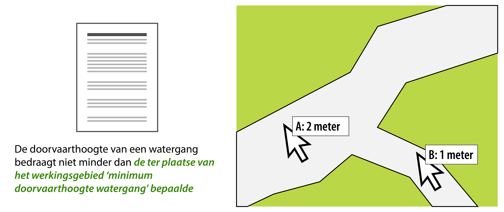Figuur 56Standaardfrase in Regeltekst, weergave van de waarden door interactie met kaart, waterschapsverordening
Het resultaat van bevraging A is dat de waarde 2 meter wordt getoond. Het resultaat van bevraging B is dat de waarde 1 meter wordt getoond.
Dit kan ook met kwalitatieve waarden, waarbij bijvoorbeeld locatie C de waarde 'passend in het straatbeeld' heeft en locatie D de waarde 'niet hoger dan de kerk':
Figuur 57Standaardfrase in Regeltekst, weergave van de waarden door interactie met kaart, kwalitatief, omgevingsplan
9.6 Hergebruik van en verwijzen naar GIO’s en OW-objecten in een ander omgevingsdocument
In het kader van enkelvoudige opslag, meervoudig gebruik kan de wens bestaan om in een omgevingsdocument gebruik te maken van een GIO of OW-object uit een ander omgevingsdocument. Dat kan op twee manieren:
door een kopie van een GIO of OW-object te maken en die in een ander omgevingsdocument te gebruiken;
door te verwijzen naar een GIO of OW-object in een ander omgevingsdocument.
Deze methoden worden in de volgende paragrafen beschreven, met een advies over de toepassing.
9.6.1 Hergebruik door het kopiëren van GIO’s en OW-objecten
Bij deze methode wordt een kopie gemaakt van een GIO of OW-object in omgevingsdocument A en wordt die kopie in omgevingsdocument B gebruikt. Dit kan als omgevingsdocumenten A en B van hetzelfde bevoegd gezag zijn, maar ook als ze van verschillende bevoegde gezagen zijn. De kopie moet een andere identificatie krijgen dan het origineel. Dat is omdat iedere identificatie uniek moet zijn en (relevant bij een kopie van een GIO of OW-object van een ander bevoegd gezag) omdat in zowel de GIO- als in de OW-object-identificatie de bevoegdgezag-code verweven is.
9.6.2 Hergebruik door te verwijzen naar een GIO of OW-object in een ander omgevingsdocument
In de tekst van omgevingsdocumenten en bij het annoteren ervan wordt verwezen naar (de identificatie van) GIO’s en OW-objecten. Bij deze methode van hergebruik wordt in omgevingsdocument B niet verwezen naar een GIO of OW-object dat hoort bij dat omgevingsdocument, maar wordt verwezen naar (de identificatie van) een GIO of OW-object dat hoort bij omgevingsdocument A. Er kan worden verwezen naar een GIO of OW-object behorend bij een omgevingsdocument van het eigen bevoegd gezag, maar er kan ook worden verwezen naar een GIO of OW-object behorend bij een omgevingsdocument van een ander bevoegd gezag.
Er kan op twee manieren worden verwezen:
statisch: er wordt verwezen naar één bepaalde versie van het GIO;
dynamisch: er wordt verwezen naar de actuele versie van het GIO.
Naar een OW-object kan alleen dynamisch worden verwezen.
Technisch is het in de aanlevering mogelijk om in omgevingsdocument B te verwijzen naar (de identificatie van) een GIO of OW-object in omgevingsdocument A. Bij de aanlevering van het besluit over omgevingsdocument B wordt het GIO of het OW-object niet meegeleverd in de bestandenset behorend bij dat besluit, maar door de verwijzing wordt het juridisch wel onderdeel van het besluit.
Juridisch zijn er kanttekeningen te plaatsen bij deze methode. In het geval dat in omgevingsdocument B statisch wordt verwezen naar een GIO in omgevingsdocument A, verandert omgevingsdocument B niet wanneer het GIO in omgevingsdocument A wordt gewijzigd; er wordt immers verwezen naar een specifieke, eerdere versie van dat GIO. Maar let goed op dat er naar een OW-object alleen dynamisch kan worden verwezen en dat er vaak verwevenheid zal zijn tussen GIO en OW-object; statisch verwijzen zal dan vaak niet mogelijk zijn. Als in omgevingsdocument B dynamisch wordt verwezen naar een GIO in omgevingsdocument A of wordt verwezen naar een OW-object in omgevingsdocument A, wordt bij een wijziging van dat GIO of OW-object in omgevingsdocument A ook omgevingsdocument B gewijzigd. Dat verwijst immers naar de actuele versie van dat GIO of OW-object, dat nu gewijzigd is. De wijziging van omgevingsdocument B vindt dan plaats zonder dat het bestuursorgaan dat verantwoordelijk is voor omgevingsdocument B daarover een besluit heeft genomen. Dat is uiteraard niet de bedoeling. Dat geldt des te meer wanneer op deze manier onbedoeld een GIO of OW-object in een omgevingsplan is gewijzigd zonder dat de gemeente daarover een besluit heeft genomen. Dan is voor die wijziging niet de juiste procedure van ter inzage leggen van ontwerpbesluit en van definitief besluit gevolgd, met de bijbehorende mogelijkheden van zienswijzen en beroep. Als de wijziging van omgevingsdocument A er uit zou bestaan dat het betreffende GIO of OW-object zou worden verwijderd, zou er in omgevingsdocument B een verwijzing zijn naar een GIO of OW-object dat niet meer bestaat; technisch bekeken zou er dan een dode link zijn, juridisch gezien heeft een onderdeel van omgevingsdocument B geen werkingsgebied meer.
Er zijn gevallen waarin het de bedoeling is dat omgevingsdocument B mee wijzigt met wijzigingen van omgevingsdocument A. Een voorbeeld is dat in een omgevingsverordening de begrenzing van grondwaterbeschermingsgebieden wordt vastgesteld en omgevingsvisie en waterprogramma die begrenzing volgen. Toekomstige wijzigingen kunnen dan in omgevingsdocument B juridisch worden geborgd door de formulering daarop af te stemmen.
Als in een omgevingsdocument wordt verwezen naar een GIO of OW-object in een ander omgevingsdocument van hetzelfde bevoegd gezag, bijvoorbeeld vanuit een omgevingsvisie naar een omgevingsverordening, ligt het beheer in eigen hand van dat bevoegd gezag en is de kans op onbedoelde wijzigingen kleiner. Wanneer echter wordt verwezen naar een GIO of OW-object in een omgevingsdocument van een ander bevoegd gezag, bijvoorbeeld een verwijzing in een omgevingsplan naar de omgevingsverordening van de provincie, is het beheer niet in eigen hand en is de kans op problemen uiteraard veel groter.
Geadviseerd wordt alleen te verwijzen naar GIO’s en/of OW-objecten in een ander omgevingsdocument als dat juridisch verantwoord is.
Let op: In de huidige versie van de TPOD-standaard heeft een OW-object geen eigenaar en hoort het niet bij een specifiek omgevingsdocument. Dit heeft een aantal ongewenste gevolgen. Het eerste gevolg is dat ieder bevoegd gezag ieder OW-object kan wijzigen en verwijderen, ook als dat OW-object is geïntroduceerd door een ander bevoegd gezag. Het tweede gevolg is dat als een omgevingsdocument wordt ingetrokken, DSO-LV niet weet welke OW-objecten erbij horen en daardoor niet kan controleren of alle OW-objecten die bij dat omgevingsdocument horen zijn ingetrokken of beëindigd, waardoor er in DSO-LV ‘verweesde’ OW-objecten kunnen voorkomen: objecten die niet meer bij een omgevingsdocument horen. Bovendien zijn er nu validatieregels waarvan het doel is om te voorkomen dat een OW-object verwijst naar een OW-object dat niet meer bestaat, dus om dode links te voorkomen. Deze validatieregels komen er op neer dat een OW-object waarnaar door een ander OW-object wordt verwezen, niet mag worden beëindigd. Dit heeft het ongewenste gevolg dat het het ontstaan van verweesde OW-objecten juist in de hand werkt.
Om de ongewenste gevolgen in de toekomst te voorkomen, zal in een volgende versie van de TPOD-standaard het eigenaarschap van OW-objecten worden geïntroduceerd, waarmee zal worden vastgelegd welk bevoegd gezag c.q. welke regeling eigenaar is van een OW-object en wat dat eigenaarschap inhoudt. Onderdeel daarvan zal waarschijnlijk zijn dat het alleen is toegestaan om bij het verwijzen naar OW-objecten in een ander omgevingsdocument te verwijzen naar OW-objecten in een ander omgevingsdocument van hetzelfde bevoegd gezag. Om deze reden wordt geadviseerd om nu al op deze wijziging te anticiperen door alleen te verwijzen naar GIO’s en/of OW-objecten in een ander omgevingsdocument van hetzelfde bevoegd gezag.
9.7 Onderdelen van de standaard die voor omgevingsdocumenten met Artikelstructuur verplicht of noodzakelijk zijn
Een besluit kan pas in werking treden als het is bekendgemaakt, aldus artikel 3:40 Awb. De Bekendmakingswet stelt algemene regels over de bekendmaking. Voor omgevingsdocumenten[23] Omgevingsdocumenten zijn besluiten en andere rechtsfiguren die in de Omgevingsregeling (de ministeriële regeling bij de Omgevingswet) als zodanig zijn aangewezen gelden specifieke regels[24] Deze regels zijn vastgelegd in de Regeling standaarden publicaties Omgevingswet, een ministeriële regeling bij de Bekendmakingswet . Omgevingsdocumenten, en ontwerpen daarvan, moeten door het betrokken bestuursorgaan elektronisch worden vormgegeven overeenkomstig STOP, IMOW en het betreffende toepassingsprofiel en moeten voor publicatie worden aangeleverd aan het bronhouderkoppelvlak van de LVBB. Daarnaast is in de Omgevingswet bepaald dat omgevingsdocumenten worden ontsloten via DSO-LV.
9.7.1 Juridische verplichtingen voor de bekendmaking
Door de hiervoor genoemde bepalingen geldt een aantal verplichtingen voor het publiceren van ontwerpen en het juridisch rechtsgeldig bekendmaken van besluiten. Een besluit tot vaststelling of wijziging van het omgevingsplan moet worden vormgegeven overeenkomstig de in paragraaf 4.3 voorgeschreven en op het omgevingsplan toegespitste STOP-modellen voor Besluit en Regeling. De regels in het Lichaam van de Regeling moeten worden gestructureerd overeenkomstig de in paragraaf 5.2 beschreven specificaties voor de Artikelstructuur. Van ieder artikel of lid moet, door er een of meer Locaties aan te koppelen, worden vastgelegd wat het werkingsgebied ervan is. Bij elkaar horende collecties van Locaties moeten worden vastgesteld in de vorm van een GIO, waarmee de identiteit en onveranderlijkheid van de geometrie wordt geborgd. De GIO’s moeten bij het besluit over de regeling worden gevoegd. In de tekst van het artikel of lid moet met een tekstuele aanduiding een verwijzing naar het GIO gemaakt worden. Door deze verwijzing in de tekst krijgt het GIO juridische status.
Wanneer het bevoegd bezag een norm op verschillende locaties verschillende waarden geeft waarbij de voor een locatie geldende waarde door interactie met de kaart getoond moet worden, moeten die locaties en waarden in een GIO worden vastgesteld.
9.7.2 Annotaties voor de dienstverlening in DSO-LV
Belangrijke resultaten van het annoteren met OW-objecten zijn het herkenbaar op de kaart weergegeven van de werkingsgebieden van artikelen en leden en het mogelijk maken van selecteren en filteren. Annoteren met OW-objecten verhoogt het niveau van dienstverlening in het Omgevingsloket van DSO-LV. Er is niet wettelijk bepaald dat en in welke mate geannoteerd moet worden, wel dat daarbij IMOW en het betreffende toepassingsprofiel moeten worden toegepast. Om het afgesproken dienstverleningsniveau van DSO-LV te bereiken is het annoteren wel noodzakelijk.
Om het omgevingsdocument met alles wat daar bij hoort in DSO-LV te kunnen tonen, is het verplicht om, eenmalig per omgevingsdocument, het Regelingsgebied aan te leveren[25] Zie voor de uitzondering op de aanleveringsplicht paragraaf 7.13 .
Het annoteren van een artikel of lid met de overige OW-objecten is alleen mogelijk als dat artikel of lid is geannoteerd met Regeltekst en Juridische regel. Om te voldoen aan de verplichting om aan te geven waar een artikel of lid geldt, moet het worden gekoppeld aan de juiste Locatie of Locaties.
Het annoteren met Activiteit zorgt er voor dat de Locaties waar de regel over een bepaalde activiteit geldt, herkenbaar op de kaart wordt weergegeven. Ook maakt het machineleesbaar hoe de regel op die Locaties wordt gekwalificeerd: voor de betreffende activiteit geldt op deze locatie een vergunningplicht en op die locatie een verbod. Daarnaast speelt het annoteren met Activiteit een belangrijke rol bij de toepasbare regels. Het is namelijk zo dat, wanneer een bevoegd gezag in een omgevingsdocument een vergunningplicht of meldingsplicht voor een activiteit instelt, het verplicht is om het elektronisch indienen van aanvragen en meldingen mogelijk te maken. Dat gebeurt door het aanleveren van een vragenboom met toepasbare regels over activiteiten. Toepasbare regels maken gebruik van de activiteiten die aanwezig zijn in de functionele structuur van de Registratie Toepasbare Regels. Wanneer een regelingversie met daarin een annotatie met een nieuwe Activiteit aan DSO-LV wordt aangeleverd, wordt deze automatisch toegevoegd aan de functionele structuur van het betreffende bevoegde gezag. Dit is de enige route om daaraan activiteiten toe te voegen. Ten behoeve van de werking van toepasbare regels is het dus noodzakelijk om te annoteren met Activiteit.
Wanneer het bevoegd bezag bepaalde normen op verschillende plekken verschillende waarden wil geven kan dat op twee manieren. Als het bevoegd gezag de gebruiker makkelijk en duidelijk inzicht wil geven, dan kiest het voor de eerste manier: het annoteren met de OW-objecten Omgevingsnorm en Omgevingswaarde. Dat zorgt ervoor dat in het kaartbeeld herkenbaar is dat een Locatie hoort bij een regel over een omgevingsnorm of omgevingswaarde en dat door middel van interactie met de kaart per locatie te zien is welke waarde daar geldt. De Locaties en de bij de omgevingsnorm of omgevingswaarde behorende waarden worden in een GIO vastgelegd. In de tekst van de regel wordt met behulp van een tekstuele aanduiding verwezen naar het GIO (zie Figuur 22 voor een illustratie). Door het vastleggen van de waarden in GIO’s en daarnaar door middel van een noemer in de tekst van de regel te verwijzen, krijgen de waarden juridische werking en zijn ze onderdeel van het besluit. De tweede manier is het opnemen van alle adressen of percelen én de bijbehorende waarden in de tekst van de regel, zoals getoond in Figuur 38 en Figuur 39 in paragraaf 7.8.1. Doordat de waarden en de adressen of percelen waar die waarden gelden in de (mensleesbare) tekst staan, vormen ze rechtstreeks onderdeel van het besluit. Ze hebben daarmee juridische werking.
Regels die een specifiek gebied aanwijzen, kunnen worden geannoteerd met een van de typen Gebiedsaanwijzing. Dat zorgt er voor dat die gebieden herkenbaar op de kaart worden weergegeven en dat er kan worden gefilterd op alle regels die over een bepaald type gebied gaan. De annotatie met Gebiedsaanwijzing kan tevens worden gebruikt om de relatie met een ander omgevingsdocument te versterken, wanneer daarin dezelfde Gebiedsaanwijzing-annotatie voor dezelfde Locatie is toegepast.
Met het attribuut thema kan tenslotte worden aangegeven over welk aspect van de fysieke leefomgeving de regel gaat. Ook met thema kan de relatie met een ander omgevingsdocument worden versterkt, als daarin hetzelfde thema is geannoteerd.
C Aspecten van de aanlevering
Dit deel bevat één hoofdstuk, hoofdstuk 10. Dit hoofdstuk beschrijft de wettelijk voorgeschreven procedure die het omgevingsplan doorloopt en de producten en gegevens die per stap in die procedure moeten worden aangeleverd.
10 Procedure, aan te leveren producten en gegevens
10.1 Inleiding
Een (voorgenomen) besluit tot het vaststellen of wijzigen van een omgevingsdocument doorloopt een procedure. Die procedure begint met een voorbereidende, meer informele fase. Tijdens deze fase vinden overleg met eventuele initiatiefnemers, medeoverheden en adviseurs en participatie door belanghebbenden plaats. Voor deze fase gelden geen procedurele eisen en aan producten die worden gebruikt voor overleg en participatie worden geen vormvereisten gesteld. Het is mogelijk om voor overleg en participatie een conceptversie van het voorgenomen besluit te maken die aan de STOP/TPOD-standaard voldoet, maar dat is niet verplicht. Documenten en conceptversies worden niet op overheid.nl gepubliceerd en ook niet in DSO-LV getoond. Het raadplegen van een conceptversie van een omgevingsdocument kan alleen in een eigen raadpleegomgeving van het bevoegd gezag. Ze worden dus niet aan de LVBB aangeboden en de bepalingen en beschrijvingen in dit hoofdstuk zijn er niet op van toepassing.
Nadat een bevoegd gezag is gestart met het opstellen van het initiële omgevingsdocument of de wijziging daarvan doorloopt het de bij dat instrument behorende formele procedure, waarvoor diverse wettelijke bepalingen gelden. In de loop van die procedure worden een of meer versies van het besluit (inclusief de initiële regeling of de wijzigingsinstructies voor de geconsolideerde regeling) aan de LVBB aangeleverd. Ook kan er een wettelijke verplichting bestaan om een kennisgeving te doen, die ook aan de LVBB moet worden aangeleverd. Nadat het bevoegd gezag het besluit heeft genomen en het besluit bekend is gemaakt en in werking is getreden, is voor een aantal instrumenten de procedure afgelopen. In het geval van een besluit waartegen beroep kan worden ingesteld, volgt nog een proceduregedeelte dat kan leiden tot wijzigingen in de geldigheid en zelfs tot wijzigingen in de inhoud van het besluit. Een wijziging in de geldigheid kan zich bijvoorbeeld voordoen wanneer een besluit naar aanleiding van een verzoek om voorlopige voorziening door de rechter wordt geschorst. Een wijziging in de geldigheid én de inhoud is mogelijk wanneer de rechter een besluit geheel of gedeeltelijk vernietigt, dan wel zelf in de zaak voorziend het besluit wijzigt. Deze wijzigingen moeten worden doorvertaald naar de geconsolideerde Regeling van het omgevingsdocument. Om dit hele proces te kunnen verwerken en het resultaat correct aan DSO-LV door te kunnen leveren, heeft de LVBB informatie nodig over de procedure en informatie voor de consolidatie. Het bevoegd gezag levert die informatie deels aan samen met de aanlevering van de besluitversie; deels moet het die informatie in een later stadium aanleveren.
Paragraaf 10.2 beschrijft de producten en gegevens die het bevoegd gezag tijdens de procedure van het omgevingsplan moet aanleveren. In deze paragraaf wordt van een aantal producten de STOP-modellering beschreven. Paragraaf 10.3 gaat over de aan te leveren gegevens over de producten en de procedure. Van deze gegevens wordt aangegeven of het een verplicht of optioneel gegeven is en hoe vaak het moet of mag voorkomen. Daarnaast schetst deze paragraaf de achtergrond van de gegevens: waarom moet een bevoegd gezag het gegeven gebruiken en wat voor effect heeft het gegeven.
Paragraaf 10.4 beschrijft de afzonderlijke fasen in de procedure van het omgevingsdocument. Van iedere fase worden het juridisch kader en de aan te leveren producten en gegevens beschreven. Dit is een praktische paragraaf: per fase wordt precies aangegeven wat het bevoegd gezag moet doen. Degene die bijvoorbeeld heel concreet wil weten wat hij of zij moet doen en aanleveren voor de ontwerpfase van een omgevingsdocument leest deze paragraaf en volgt indien gewenst van daaruit de verwijzingen naar paragraaf 10.2 om daar (nogmaals) de achtergronden van bepaalde gegevens te lezen.
10.2 Producten die nodig zijn voor de procedure van een omgevingsdocument
10.2.1 Besluit en Regeling
Het belangrijkste product dat tijdens de procedure moet worden aangeleverd is uiteraard het besluit tot vaststelling of wijziging van het omgevingsplan. Dat is in deel B uitgebreid beschreven.
10.2.2 Kennisgeving
In een aantal gevallen, die in paragraaf 10.4 worden beschreven, moet het bevoegd gezag een kennisgeving doen, die in een van de officiële publicatiebladen wordt geplaatst. De kennisgeving is een zakelijke weergave van de inhoud, vaak van een besluit. De kennisgeving wordt conform STOP gemodelleerd. De kennisgeving is een zelfstandige eenheid. Dat betekent dat een kennisgeving als een afzonderlijke bestandenset wordt aangeleverd. De kennisgeving behorend bij een besluit moet worden aangeleverd nádat de bestandenset van het besluit is aangeleverd.
De kennisgeving heeft de Vrijetekststructuur. De modellering van de kennisgeving is als volgt:
RegelingOpschrift: verplicht element, komt 1 keer voor.
Lichaam: verplicht element, komt 1 keer voor.
Divisietekst: verplicht element, komt zo vaak voor als gewenst. Bevat de volgende elementen:
Kop: STOP-element dat de Kop bevat. Optioneel element. Komt 0 of 1 keer voor. Indien Kop voorkomt bevat het ten minste één van de Kopelementen Label, Nummer en Opschrift; ieder van deze onderdelen komt 0 of 1 keer voor. Optioneel kan het element Subtitel worden toegevoegd. Als de kennisgeving maar één Divisietekst bevat, hoeft de Divisietekst geen Kop te hebben.
Inhoud: STOP-element dat de inhoud van de kennisgeving bevat. Verplicht element. Komt (per DivisieTekst) 1 keer voor. Het element Inhoud bevat ten minste één van de tekstelementen die STOP daarvoor kent; alle tekstelementen voor Inhoud zijn toegestaan.
10.2.3 Mededeling van een rechterlijke uitspraak
Als beroep is ingesteld tegen een besluit en de bestuursrechter het besluit geheel of gedeeltelijk vernietigt, moet het bestuursorgaan mededeling doen van de uitspraak op de manier die voor de bekendmaking van het besluit is voorgeschreven. Dat betekent dat de volledige inhoud van de uitspraak in publicatieblad van het bevoegd gezag moet worden geplaatst. De kennisgeving wordt conform STOP gemodelleerd.
De mededeling heeft de Vrijetekststructuur. De modellering van de mededeling is als volgt:
RegelingOpschrift: verplicht element, komt 1 keer voor.
Lichaam: verplicht element, komt 1 keer voor.
Divisietekst: verplicht element, komt zo vaak voor als gewenst. Bevat de volgende elementen:
Kop: STOP-element dat de Kop bevat. Optioneel element. Komt 0 of 1 keer voor. Indien Kop voorkomt bevat het ten minste één van de Kopelementen Label, Nummer en Opschrift; ieder van deze onderdelen komt 0 of 1 keer voor. Optioneel kan het element Subtitel worden toegevoegd. Als de mededeling maar één Divisietekst bevat, hoeft de Divisietekst geen Kop te hebben.
Inhoud: STOP-element dat de inhoud van de mededeling bevat. Verplicht element. Komt (per DivisieTekst) 1 keer voor. Het element Inhoud bevat ten minste één van de tekstelementen die STOP daarvoor kent; alle tekstelementen voor Inhoud zijn toegestaan.
Toekomstige functionaliteit
In de toekomst zal de mededeling van de uitspraak van de rechter met toepassing van de STOP/TPOD-standaard worden opgesteld en aan de LVBB worden aangeleverd voor de publicatie in het publicatieblad.
Workaround
Zolang de mededeling van de uitspraak van de rechter nog niet in de DSO-keten is geïmplementeerd, wordt voor de mededeling van de uitspraak van de rechter een besluit conform model BesluitCompact gebruikt. In het besluit moet dan worden aangegeven dat het niet een besluit maar een mededeling betreft.
10.3 Gegevens die nodig zijn voor de procedure van een omgevingsdocument
In deze paragraaf worden alle gegevens beschreven die informatie geven over de aan te leveren producten en de procedure: Doel (paragraaf 10.3.1) BesluitMetadata (paragraaf 10.3.2), RegelingMetadata (paragraaf 10.3.3), KennisgevingMetadata (paragraaf 10.3.4), soort procedure en ConsolidatieInformatie (paragraaf 10.3.5) en Procedure-informatie (paragraaf 10.3.6). Deze paragraaf geeft vooral achtergrondinformatie over de gegevens. Paragraaf 10.4 beschrijft vervolgens de concrete toepassing van de gegevens per fase en per product.
10.3.1 Doel als identificatie van een Regelingversie
Voor het bereiken van bepaalde doelen of voldoen aan bepaalde verplichtingen met betrekking tot de fysieke leefomgeving is het nodig om een van de juridische instrumenten van de Omgevingswet in te zetten. Dit instrument doorloopt de wettelijk voorgeschreven procedure. In de loop van die procedure worden een of meer versies van het besluit (inclusief de initiële regeling of de wijzigingsinstructies voor de geconsolideerde regeling) en gegevens over dat besluit aan de LVBB aangeleverd. Het uiteindelijke resultaat van het hele proces is dat er een nieuwe Regeling ontstaat, of een nieuwe versie van een bestaande Regeling.
Om van een omgevingsdocument vast te leggen dat tekst, informatieobjecten en OW-informatie bij elkaar horen, gedurende alle stadia van het proces van opstellen, voorbereidingsprocedure, besluitvorming, bekendmaken en consolideren, is een unieke identificatie nodig. De STOP/TPOD-standaard noemt die identificatie Doel. De term Doel is afgeleid van het doel dat het bevoegd gezag voor ogen heeft als aanleiding voor de introductie van een specifiek nieuw omgevingsdocument of wijziging daarvan op één moment in de tijd. Voor degenen die met de RO-Standaarden en IMRO bekend zijn is Doel enigszins vergelijkbaar met het dossiernummer oftewel de IMRO-code van een plan of besluit op grond van de Wet ruimtelijke ordening.
Doel is in STOP gedefinieerd als de identificatie van een nieuwe regeling of de wijziging daarvan met één moment van inwerkingtreding, één (beoogd) moment waarop de regeling geldig wordt en eventueel één moment waarop de geldigheid van de regeling eindigt. De LVBB gebruikt het Doel om de consolidatie van regelingen te sturen.
Wanneer het bevoegd gezag constateert dat er een nieuw omgevingsdocument nodig is, of dat een bestaand omgevingsdocument gewijzigd moet worden, maakt het een nieuwe Regelingversie met een nieuw Doel oftewel identificatie aan. Afhankelijk van de gebruikte software kan het bevoegd gezag het aanmaken van de identificatie aan de software overlaten. Alles wat nodig is om de versie van de Regeling van het omgevingsdocument vast te leggen en te beschrijven wordt aan een Doel gekoppeld:
één versie van de tekst (inclusief afbeeldingen en dergelijke) voor het omgevingsdocument dat moet ontstaan of wordt gewijzigd (of eventueel één versie van de tekst voor elke regeling die moet ontstaan of wordt gewijzigd in het geval het besluit meerdere regelingen instelt en/of wijzigt);
één versie van elk informatieobject dat onderdeel is van het nieuwe of gewijzigde omgevingsdocument;
één versie van de OW-informatie die hoort bij het nieuwe of gewijzigde omgevingsdocument[26] NB: In het geval van een directe mutatie van OW-objecten wordt verwezen naar het Doel van een vorige aanlevering. Er kunnen dan meerdere versies van OW-objecten hetzelfde Doel hebben. .
Ten behoeve van de publicatie of bekendmaking genereert de software van het bevoegd gezag een besluitversie die wordt aangeleverd aan de LVBB. Bij een Doel oftewel identificatie van een versie van regelgeving kunnen dus in de loop van de procedure meerdere besluitversies worden aangeleverd.
Zoals gezegd is Doel de identificatie van een nieuw omgevingsdocument of de wijziging daarvan met één moment van inwerkingtreding. De LVBB gebruikt Doel om de consolidatie van omgevingsdocumenten te sturen: per inwerkingtredingsdatum (of geldigheidsdatum in geval van terugwerkende kracht) kan op deze manier een Toestand van de Regeling gemaakt worden.
Sterk aanbevolen wordt om in één besluit alleen onderdelen met eenzelfde inwerkingtredingsdatum op te nemen. Daarom wordt ook aanbevolen om bijtijds na te denken over welke wijzigingen gecombineerd kunnen worden en welke wijzigingen juist niet gecombineerd kunnen worden. Redenen voor het niet combineren van wijzigingen zijn bijvoorbeeld dat de wijzigingen door verschillende bestuursorganen zullen worden vastgesteld en de verschillende mate van gevoeligheid van wijzigingen. Wijzigingen die te combineren zijn kunnen direct in één RegelingVersie met één Doel samengebracht worden. Voor wijzigingen die niet gecombineerd kunnen worden moeten verschillende RegelingVersies met verschillende Doelen worden aangemaakt. Iedere RegelingVersie (met bijbehorend Doel) wordt in een eigen besluit opgenomen.
Mochten toch bij uitzondering met één besluit verschillende onderdelen van een Regeling worden vastgesteld die op verschillende momenten in werking treden, dan krijgt iedere inwerkingtredingsmoment-onderdelencombinatie een eigen Doel. Ieder Doel hoort bij een versie van een regeling en de bijbehorende GIO’s. Een voorbeeld: Provinciale staten stellen bij besluit van 28 januari 2024 een wijziging van de omgevingsverordening vast. Hiervan treden 10 onderdelen op 12 februari in werking, de resterende onderdelen treden op 24 maart in werking. De onderdelen die op 12 februari in werking treden, worden in één RegelingVersie ondergebracht en krijgen Doel X, de onderdelen die op 24 maart in werking treden worden in een andere RegelingVersie ondergebracht en krijgen Doel Y. Een besluit met verschillende inwerkingtredingsmomenten voor verschillende onderdelen zou zich bijvoorbeeld kunnen voordoen wanneer het dagelijks bestuur een besluit heeft voorbereid en vervolgens aan het algemeen bestuur voorlegt, waarna dat algemeen bestuur besluit niet alle onderdelen tegelijkertijd in werking te laten treden. Zoals hiervoor beschreven noodzaakt dat er toe om verschillende RegelingVersies te maken.
De mogelijkheid bestaat dat er twee besluiten zijn voorbereid met ieder een eigen Doel omdat de verwachting was dat ze niet gelijktijdig in werking zouden treden, waarover toch gelijktijdig besluitvorming plaatsvindt. Het is dan niet nodig om de Doelen samen te voegen tot één Doel.
In paragraaf 10.4.1.2 is de concrete toepassing van Doel op het omgevingsplan beschreven in de vorm van specificaties en een voorbeeld.
10.3.2 BesluitMetadata
De BesluitMetadata leggen vast welke organisatie verantwoordelijk is voor de besluitversie en bevatten gegevens om het besluit goed vindbaar te maken. In deze paragraaf zijn de BesluitMetadata beschreven die voor besluiten tot vaststelling of wijziging van omgevingsdocumenten relevant zijn. De BesluitMetadata voor het ontwerpbesluit en het definitieve besluit zijn gelijk. Aangegeven is of het gegeven verplicht of optioneel is en hoe vaak het moet of kan voorkomen. Daarnaast is bij de meeste gegevens een toelichting gegeven: hoe werkt het en wat voor effect heeft het. Er is geen vaste, voorgeschreven volgorde voor de BesluitMetadata.
eindverantwoordelijke: (de identificatie van) het openbaar lichaam dat de wettelijke verantwoordelijkheid draagt voor de inhoud van het ontwerp- of definitief besluit. Uit de STOP-waardelijsten voor gemeente, waterschap, provincie respectievelijk ministerie moet de juiste waarde gekozen worden. Verplicht gegeven. Komt 1 keer voor. Door dit gegeven wordt in de voorzieningen de naam van de gemeente, het waterschap, de provincie of het ministerie getoond.
maker: (de identificatie van) het openbaar lichaam dat de eindverantwoordelijkheid draagt voor het creëren van de instrumentversie. Uit de STOP-waardelijsten voor gemeente, waterschap, provincie respectievelijk ministerie moet de juiste waarde gekozen worden. Verplicht gegeven. Komt 1 keer voor. Door dit gegeven wordt in de voorzieningen de naam van de gemeente, het waterschap, de provincie of het ministerie getoond.
soortBestuursorgaan: de typering van het bestuursorgaan dat verantwoordelijk is voor het besluit. Uit de STOP-waardelijst bestuursorgaan moet de juiste waarde gekozen worden. Verplicht gegeven. Komt 1 keer voor. Voorbeelden zijn ‘college van burgemeester en wethouders’, ‘dagelijks bestuur’ en ‘minister’. In de BesluitMetadata moet gekozen worden voor het bestuursorgaan dat het besluit daadwerkelijk neemt of gaat nemen, ook als dat op grond van een gedelegeerde bevoegdheid gebeurt.
informatieobjectRef: de verwijzing naar een versie van een Juridisch informatieobject dat met de tekst van het ontwerp- of definitief besluit gepubliceerd moet worden omdat het onderdeel is van de juridische inhoud van het besluit of aanvullende informatie geeft over het besluit. Komt zo vaak voor als gewenst. Wordt geplaatst binnen het container-element informatieobjectRefs, dat 1 of meer informatieobjectRef-elementen bevat. Het containerelement informatieobjectRefs is verplicht wanneer tot het ontwerp- of definitief besluit een of meer GIO’s of PDF-documenten behoren en komt niet voor wanneer tot het ontwerpbesluit geen GIO’s of PDF-documenten behoren.
officieleTitel: de titel van het besluit zoals die door het bevoegd gezag wordt vastgesteld. Verplicht gegeven. Komt 1 keer voor. De officiële titel is altijd gelijk aan het RegelingOpschrift van het besluit.
onderwerp: een korte specificatie van de inhoud van het ontwerp- of definitief besluit, te kiezen uit de STOP-waardelijst onderwerp. Verplicht gegeven. Komt ten minste 1 keer voor. Wordt geplaatst binnen het containerelement onderwerpen, dat 1 of meer onderwerp-elementen bevat. Het containerelement onderwerpen is een verplicht element, dat 1 keer voorkomt. Het onderwerp speelt een rol bij het vindbaar maken en bij de zoekresultaatfiltering van besluiten, regelingen en kennisgevingen op overheid.nl. Daarom wordt geadviseerd om alle toepasselijke onderwerpen van de waardelijst toe te voegen.
rechtsgebied: specificatie hoe het instrument wordt ingedeeld binnen het geheel van het recht, te kiezen uit de STOP-waardelijst rechtsgebied. Komt zo vaak voor als gewenst. Wordt geplaatst binnen het containerelement rechtsgebieden, dat 1 of meer rechtsgebied-elementen bevat. Het containerelement rechtsgebieden is een optioneel element, dat 0 of 1 keer voorkomt. Het rechtsgebied speelt een rol bij het vindbaar maken en bij de zoekresultaatfiltering van besluiten, regelingen en kennisgevingen op overheid.nl. Daarom wordt geadviseerd om het element rechtsgebied te gebruiken.
soortProcedure: de typering van (het product van) de fase van de procedure, te kiezen uit de STOP-waardelijst soortprocedure. Verplicht gegeven. Komt 1 keer voor. Met dit gegeven wordt aangegeven of een ontwerpbesluit of een definitief besluit wordt aangeleverd. Bij een ontwerpbesluit moet de waarde Ontwerpbesluit worden gekozen. Bij de aanlevering ter bekendmaking van een vastgesteld besluit moet de waarde Definitief besluit worden gekozen. Deze keuze bepaalt ook welke procedurestappen in het Procedureverloop (zie paragraaf 10.3.5 beschikbaar zijn.
grondslag: de machineleesbare verwijzing naar de juridische bron die de wettelijke grondslag van het instrument geeft. Moet altijd verwijzen naar (een versie van) een geconsolideerde regeling. Komt zo vaak voor als gewenst. Wordt geplaatst binnen het containerelement grondslagen, dat 1 of meer grondslag-elementen bevat. Het containerelement grondslagen is een optioneel element. Komt 0 of 1 keer voor. De grondslag ziet er -in STOP-XML- uit als in de navolgende afbeelding. De uri is een Juriconnect 1.3.1-verwijzing. Zie daarvoor ook de ‘Juriconnect-standaard voor identificatie van en verwijzing naar wet- en regelgeving’. Wanneer verwezen wordt naar een artikel in een wet die in werking is getreden, kan de uri eenvoudig gegenereerd worden door op wetten.overheid.nl naar het betreffende artikel te gaan en daar met behulp van de linktool een link naar de meest recente versie zonder geldigheidsdatum te genereren en die te kopiëren.
Figuur 58Voorbeeld van de grondslag voor het omgevingsplan
STOP kent naast de hiervoor genoemde BesluitMetadata ook nog de metadata afkortingen, citeertitel en alternatieveTitels. Geadviseerd wordt om deze metadata bij omgevingsdocumenten niet te gebruiken. Ze worden daarom niet verder besproken.
10.3.3 RegelingMetadata
De RegelingMetadata leggen vast welke organisatie verantwoordelijk is voor de regelingversie en bevatten gegevens om de regeling goed vindbaar te maken. In deze paragraaf zijn de RegelingMetadata beschreven die voor omgevingsdocumenten relevant zijn. De RegelingMetadata die bij een ontwerpbesluit worden aangeleverd zijn nagenoeg gelijk aan de RegelingMetadata die bij een definitief besluit worden aangeleverd. Aangegeven is of het gegeven verplicht of optioneel is en hoe vaak het moet c.q. kan voorkomen. Daarnaast is bij de meeste gegevens een toelichting gegeven: hoe werkt het en wat voor effect heeft het. Er is geen vaste, voorgeschreven volgorde voor de RegelingMetadata.
soortRegeling: nadere typering van een regeling, te kiezen uit de STOP-waardelijst soortregeling. Verplicht gegeven. Komt 1 keer voor. Voorbeelden zijn omgevingsplan en waterschapsverordening.
eindverantwoordelijke: (de identificatie van) het openbaar lichaam dat de wettelijke verantwoordelijkheid draagt voor de inhoud van de regeling. Uit de STOP-waardelijsten voor gemeente, waterschap, provincie respectievelijk ministerie moet de juiste waarde gekozen worden. Verplicht gegeven. Komt 1 keer voor. Door dit gegeven wordt in de voorzieningen de naam van de gemeente, het waterschap, de provincie of het ministerie getoond.
maker: (de identificatie van) het openbaar lichaam dat de eindverantwoordelijkheid draagt voor het creëren van de instrumentversie. Uit de STOP-waardelijsten voor gemeente, waterschap, provincie respectievelijk ministerie moet de juiste waarde gekozen worden. Verplicht gegeven. Komt 1 keer voor. Door dit gegeven wordt in de voorzieningen de naam van de gemeente, het waterschap, de provincie of het ministerie getoond.
soortBestuursorgaan: de typering van het bestuursorgaan dat verantwoordelijk is voor de regeling. Verplicht gegeven. Komt 1 keer voor. Uit de STOP-waardelijst bestuursorgaan moet de juiste waarde gekozen worden. Voorbeelden zijn gemeenteraad, algemeen bestuur en provinciale staten. In de RegelingMetadata moet gekozen worden voor het bestuursorgaan waaraan in de Omgevingswet de bevoegdheid tot het vaststellen van het omgevingsdocument is toegedeeld, ook als dat bestuursorgaan die bevoegdheid (gedeeltelijk) aan een ander bestuursorgaan heeft gedelegeerd.
officieleTitel: de titel van de regeling zoals die door het bevoegd gezag wordt vastgesteld. Verplicht gegeven. Komt 1 keer voor. De officiële titel is altijd gelijk aan het RegelingOpschrift van de regeling.
citeertitel: de titel van de regeling die gebruikt wordt in aanhalingen. Wordt geplaatst binnen het containerelement CiteertitelInformatie, dat op zijn beurt wordt geplaatst binnen het containerelement heeftCiteertitelInformatie. Het containerelement heeftCiteertitelInformatie is een optioneel element, dat 0 of 1 keer voorkomt. Bij de citeertitel moet worden aangegeven of de citeertitel officieel is of niet, door bij het gegeven isOfficieel de juiste waarde te kiezen. De citeertitel is officieel als deze in de regeling wordt vastgesteld; voor isOfficieel moet dan de waarde true worden gekozen. Als de citeertitel niet in de regeling wordt vastgesteld, is de citeertitel een ‘redactioneel’ gegeven; voor isOfficieel moet dan de waarde false worden gekozen. De citeertitel is niet hetzelfde als de officiële titel. Bij wetgeving gebeurt het vaak dat de wet een lange officiële titel heeft en een korte citeertitel die in de dagelijkse praktijk wordt gebruikt. Een voorbeeld: ‘Wet van 1 juli 2020 tot wijziging van de Bekendmakingswet en andere wetten in verband met de elektronische publicatie van algemene bekendmakingen, mededelingen en kennisgevingen’ is de officiële titel van de wet met de citeertitel ‘Wet elektronische publicaties’. De citeertitel is in deze wet vastgesteld en is dus officieel. Hoewel het bij veel omgevingsdocumenten niet voor de hand lijkt te liggen om een citeertitel toe te voegen omdat die hetzelfde zal zijn als de officiële titel, is dat wel wenselijk. In de DSO-viewer namelijk speelt de ‘naam’ van het omgevingsdocument op verschillende plekken een rol: in de resultaat- en filterschermen na een zoekactie en in het scherm waarin tekst en kaart van de regeling worden getoond. De DSO-viewer gebruikt daarvoor de citeertitel uit de RegelingMetadata. Als er geen citeertitel is, stelt de viewer zelf de ‘naam’ samen uit de gegevens soortRegeling en eindverantwoordelijke.
onderwerp: een korte specificatie van de inhoud van de regeling, te kiezen uit de STOP-waardelijst onderwerp. Verplicht gegeven. Komt ten minste 1 keer voor. Wordt geplaatst binnen het containerelement onderwerpen, dat 1 of meer onderwerp-elementen bevat. Het containerelement onderwerpen is een verplicht element, dat 1 keer voorkomt. Het onderwerp speelt een rol bij het vindbaar maken en bij de zoekresultaatfiltering van besluiten, regelingen en kennisgevingen op overheid.nl. Daarom wordt geadviseerd om alle toepasselijke onderwerpen van de waardelijst toe te voegen.
rechtsgebied: specificatie hoe het instrument wordt ingedeeld binnen het geheel van het recht, te kiezen uit de STOP-waardelijst rechtsgebied. Komt zo vaak voor als gewenst. Wordt geplaatst binnen het containerelement rechtsgebieden, dat 1 of meer rechtsgebied-elementen bevat. Het containerelement rechtsgebieden is een optioneel element, dat 0 of 1 keer voorkomt. Het rechtsgebied speelt een rol bij het vindbaar maken en bij de zoekresultaatfiltering van besluiten, regelingen en kennisgevingen op overheid.nl. Daarom wordt geadviseerd om het element rechtsgebied te gebruiken.
overheidsdomein: brede onderverdeling van de overheidsbrede thema's die op een instrument van toepassing zijn, te kiezen uit de STOP-waardelijst overheidsthema. Komt zo vaak voor als gewenst. Wordt geplaatst binnen het containerelement overheidsdomeinen, dat 1 of meer overheidsdomein-elementen bevat. Het containerelement overheidsdomeinen is een optioneel element, dat 0 of 1 keer voorkomt. Het overheidsdomein speelt een rol bij het vindbaar maken en in de zoekresultaatfiltering van besluiten, regelingen en kennisgevingen op overheid.nl. Daarom wordt geadviseerd om het element overheidsdomein te gebruiken.
opvolgerVan: de verwijzing van een opvolgende regeling naar de door deze regeling opgevolgde andere regeling. De opvolgingsrelatie wijst naar het Work van de opgevolgde regeling. Komt zo vaak voor als gewenst. Wordt geplaatst binnen het containerelement opvolging, dat 1 of meer opvolgerVan-elementen bevat. Het containerelement opvolging is een optioneel element, dat 0 of 1 keer voorkomt. OpvolgerVan komt alleen voor wanneer de regeling een andere regeling daadwerkelijk opvolgt. Het komt alleen voor wanneer de oorspronkelijke regeling wordt ingetrokken en vervangen door een nieuwe regeling en alleen bij een regeling behorend bij een definitief besluit, niet bij een regeling behorend bij een ontwerpbesluit. Een voorbeeld is een provincie die aanvankelijk een omgevingsvisie genaamd ‘Prachtig Provincieland’ had en deze na verloop van een aantal jaren intrekt en een nieuwe omgevingsvisie instelt genaamd ‘Provincieland economisch voorop’. Bij de nieuwe omgevingsvisie ‘Provincieland economisch voorop’ wordt met opvolgerVan verwezen naar (de identificatie van) de ingetrokken omgevingsvisie ‘Prachtig Provincieland’. Door het aangeven van deze opvolg-relatie is het mogelijk om bij een tijdreis vanuit de nieuwe regeling de ingetrokken regeling als voorganger te tonen.
grondslag: de machineleesbare verwijzing naar een juridische bron die de wettelijke grondslag van het instrument geeft. Moet altijd verwijzen naar (een versie van) een geconsolideerde regeling. Komt zo vaak voor als gewenst. Wordt geplaatst binnen het containerelement grondslagen, dat 1 of meer grondslag-elementen bevat. Het containerelement grondslagen is een optioneel element, dat 0 of 1 keer voorkomt. De grondslag ziet er -in STOP-XML- uit als in onderstaande afbeelding. De uri is een Juriconnect 1.3.1-verwijzing. Zie daarvoor ook de ‘Juriconnect-standaard voor identificatie van en verwijzing naar wet- en regelgeving’. Wanneer verwezen wordt naar een artikel in een wet die in werking is getreden, kan de uri eenvoudig gegenereerd worden door op wetten.overheid.nl naar het betreffende artikel te gaan en daar met behulp van de linktool een link naar de meest recente versie zonder geldigheidsdatum te genereren en die te kopiëren.
Figuur 59Voorbeeld van de grondslag voor het omgevingsplan
STOP kent naast de hiervoor genoemde RegelingMetadata ook nog de metadata afkorting, voorkeursafkorting en alternatieveTitel. Geadviseerd wordt om deze metadata bij omgevingsdocumenten niet te gebruiken. Ze worden daarom niet verder besproken.
10.3.4 KennisgevingMetadata
De KennisgevingMetadata leggen vast welke organisatie verantwoordelijk is voor de kennisgeving en bevatten gegevens om de kennisgeving goed vindbaar te maken. In deze paragraaf zijn de KennisgevingMetadata beschreven die voor de kennisgeving van omgevingsdocumenten relevant zijn. Aangegeven is of het gegeven verplicht of optioneel is en hoe vaak het moet c.q. kan voorkomen. Daarnaast is bij de meeste gegevens een toelichting gegeven: hoe werkt het en wat voor effect heeft het. Er is geen vaste, voorgeschreven volgorde voor de KennisgevingMetadata.
eindverantwoordelijke: (de identificatie van) het openbaar lichaam dat de wettelijke verantwoordelijkheid draagt voor de inhoud van de kennisgeving. Uit de STOP-waardelijsten voor gemeente, waterschap, provincie respectievelijk ministerie moet de juiste waarde gekozen worden. Verplicht gegeven. Komt 1 keer voor. Door dit gegeven wordt op overheid.nl de naam van de gemeente, het waterschap, de provincie of het ministerie getoond.
maker: (de identificatie van) het openbaar lichaam dat de eindverantwoordelijkheid draagt voor het creëren van de kennisgeving. Uit de STOP-waardelijsten voor gemeente, waterschap, provincie respectievelijk ministerie moet de juiste waarde gekozen worden. Verplicht gegeven. Komt 1 keer voor. Door dit gegeven wordt op overheid.nl de naam van de gemeente, het waterschap, de provincie of het ministerie getoond.
officieleTitel: de titel van de kennisgeving zoals die door het bevoegd gezag is bepaald; deze is gelijk aan de tekstuele weergave van het gehele RegelingOpschrift van de kennisgeving (zie daarvoor paragraaf 10.2.1). Verplicht gegeven. Komt 1 keer voor. Dit gegeven speelt een rol bij het vindbaar en herkenbaar maken van de kennisgeving op overheid.nl. Daarom wordt geadviseerd om de kennisgeving een zo onderscheidend en herkenbaar mogelijke titel (en RegelingOpschrift) te geven.
onderwerp: een korte specificatie van de inhoud van de kennisgeving, te kiezen uit de STOP-waardelijst onderwerp. Verplicht gegeven. Komt ten minste 1 keer voor. Wordt geplaatst binnen het containerelement onderwerpen, dat 1 of meer onderwerp-elementen bevat. Het containerelement onderwerpen is een verplicht element, dat 1 keer voorkomt. Het onderwerp speelt een rol bij het vindbaar maken en bij de zoekresultaatfiltering van besluiten, regelingen en kennisgevingen op overheid.nl. Daarom wordt geadviseerd om alle toepasselijke onderwerpen van de waardelijst toe te voegen.
mededelingOver: de verwijzing vanuit een kennisgeving naar (de identificatie van) het (ontwerp)besluit waarover de kennisgeving gaat. Onder voorwaarde verplicht gegeven. Komt 0 of 1 keer voor. Dit gegeven is alleen verplicht als de kennisgeving gaat over een (voorafgaand aan de kennisgeving aangeleverd, daadwerkelijk bestaand) ontwerp- of definitief besluit. Door dit gegeven is vanuit de kennisgeving op eenvoudige wijze het (ontwerp)besluit vindbaar waar de kennisgeving over gaat. Het werkt ook omgekeerd: vanuit het besluit is de kennisgeving makkelijk te vinden. Daardoor is vanuit het besluit de informatie over de procedure van het besluit, zoals de begin- en einddatum van de inzagetermijn dan wel de einddatum van de beroepstermijn, te raadplegen.
soortKennisgeving: gegeven dat aangeeft wat voor soort kennisgeving het betreft, te kiezen uit een waardelijst die in het STOP-schema is opgenomen. Optioneel gegeven. Komt 0 of 1 keer voor. Met dit gegeven wordt aangegeven of het een kennisgeving betreft waarmee (inzage- en bezwaar/beroeps-)termijnen worden doorgegeven of een kennisgeving waarmee informatie wordt doorgegeven over het voornemen een besluit te gaan nemen zonder (inzage- en beroeps-)termijnen. In STOP 1.3.0 is dit gegeven, om redenen van backwards compatibility, zo gemodelleerd dat het een optioneel gegeven is met KennisgevingBesluittermijnen als defaultwaarde. Dit betekent dat wanneer het gegeven soortKennisgeving in de aanlevering niet wordt aangeleverd, het een KennisgevingBesluittermijnen is (uiteraard is dat ook zo als het element soortKennisgeving wel voorkomt met de waarde KennisgevingBesluittermijnen). Wanneer het een ander soort kennisgeving is, moet het element soortKennisgeving voorkomen. In STOP 2.0 zal soortKennisgeving worden gewijzigd in een verplicht gegeven dat 1 keer voorkomt. Nadrukkelijk wordt geadviseerd om daarop vooruit te lopen en ook bij een kennisgeving waarmee (inzage- en bezwaar/beroeps-)termijnen worden doorgegeven, het gegeven soortKennisgeving te gebruiken.
10.3.5 Soort procedure en consolidatie
Aan de hand van de soort procedure bepaalt de LVBB wat er met het besluit wordt gedaan. Uiteraard moet DSO-LV weten of de aangeleverde OW-objecten horen bij een ontwerpbesluit of een definitief besluit. Daarvoor kent ook IMOW proceduregegevens. DSO-LV weet dat het gaat om OW-objecten behorend bij een ontwerpregeling omdat in dat geval bij de OW-objecten als procedurestatus ‘ontwerp’ is aangegeven.
Indien sprake is van een ontwerpbesluit levert het bevoegd gezag het ontwerpbesluit aan bij de LVBB met als soortProcedure ‘ontwerpbesluit’. Na ontvangst van een ontwerpbesluit genereert de LVBB daaruit een proefversie: bij een initieel ontwerpbesluit de eerste (ontwerp)versie van de regeling en bij een ontwerp-wijzigingsbesluit de verwerking van het ontwerpbesluit in de regelingversie waarop het bevoegd gezag het ontwerpbesluit heeft gebaseerd. De LVBB stelt de proefversie beschikbaar voor DSO-LV en levert de OW-objecten door aan DSO-LV. DSO-LV toont vervolgens die proefversie in de vorm van een ontwerpregeling.
Nadat het bestuursorgaan een besluit over een omgevingsdocument heeft genomen, levert het dat besluit aan bij de LVBB met als soortProcedure ‘definitief besluit’. Na ontvangst van een initieel besluit destilleert de LVBB daaruit de Regelingversie. Na ontvangst van een wijzigingsbesluit voert de LVBB de consolidatie uit met als resultaat een nieuwe toestand van de Regeling. De LVBB doet dat wanneer de inwerkingtredingsdatum van het (wijzigings)besluit -en daarmee ook van de nieuwe RegelingVersie- bekend is. De LVBB haalt die datum op uit de meegeleverde ConsolidatieInformatie.
Toekomstige functionaliteit
Het tonen van een toestand van een regeling vóór de inwerkingtredingsdatum is nog niet geïmplementeerd in de DSO-keten.
Het tonen van de procedurestatus van onderdelen van een regeling is in DSO-LV geïmplementeerd voor ontwerpregelingen; in de regelingenbank is het niet geïmplementeerd.
Workaround
Geen
10.3.6 Procedure-informatie doorgeven met Procedureverloop
10.3.6.1 De module Procedureverloop
De STOP/TPOD-standaard ziet het ontwerpbesluit en het definitieve besluit als afzonderlijke procedures. Zoals in paragraaf 10.3.5 al is aangegeven moet bij de aanlevering van een besluitversie de soort procedure worden gekozen: aangegeven moet worden of een ontwerpbesluit of een definitief besluit wordt aangeleverd. De procedure-informatie wordt verder ingevuld met de module Procedureverloop. Dit is de verzameling van stappen in de procedure van de besluitversie. De module Procedureverloop kan dus meerdere stappen bevatten, en ook in de loop van de tijd aan de hand van het verloop van de procedure worden aangevuld. Deze module en de Procedurestappen die als metadata kunnen worden aangeleverd betreffen alleen het formele en door DSO-LV ondersteunde deel van de procedure, dus vanaf de terinzagelegging van een ontwerpbesluit. Gegevens over de daaraan voorafgaande stappen, zoals participatie, conceptversies voor overleg en voorbereiding van de besluitvorming door het bestuursorgaan, worden niet door de STOP/TPOD-standaard ondersteund en niet door de LVBB verwerkt. Ze kunnen uiteraard wel door het bevoegd gezag in de eigen software worden bijgehouden.
Het ontwerpbesluit en het definitieve besluit hebben ieder een afzonderlijke module Procedureverloop. In de ontwerpfase levert het bevoegd gezag het ontwerpbesluit aan bij de LVBB met als soortProcedure ‘ontwerpbesluit’ en het Procedureverloop met de relevante Procedurestappen horend bij een ontwerpbesluit. Nadat het bestuursorgaan een besluit over een omgevingsdocument heeft genomen, levert het dat besluit aan bij de LVBB met als soortProcedure ‘definitief besluit’ en het Procedureverloop met de relevante stappen horend bij een definitief besluit. Diverse omgevingsdocumenten treden direct na de bekendmaking van het besluit in werking en zijn dan ook direct onherroepelijk. Besluiten waartegen beroep kan worden ingesteld worden geconsolideerd terwijl nog niet zeker is of ze (geheel of gedeeltelijk) blijvend onderdeel van het omgevingsdocument uitmaken. Voor een raadpleger van de geconsolideerde regeling is het van belang om van ieder onderdeel van de regeling te weten wat de status daarvan is om te kunnen bepalen welke rechten en verplichtingen zij/hij daaraan kan ontlenen. Dat geldt voor alle tekstonderdelen, GIO’s en OW-objecten. Daarom moeten bij besluiten waartegen beroep kan worden ingesteld, na de aanlevering van het definitieve besluit, nieuwe Procedurestappen aan het Procedureverloop worden toegevoegd. Dit maakt het mogelijk om in de geconsolideerde regelingen op overheid.nl en in DSO-LV de status aan te geven van de onderdelen van die regeling die door het betreffende besluit zijn gewijzigd.
De initiële aanlevering van het Procedureverloop vindt doorgaans plaats bij het ontwerpbesluit respectievelijk definitieve besluit. Vervolgens wordt het Procedureverloop gemuteerd met een Procedureverloopmutatie bij de kennisgeving of met een directe mutatie. In paragraaf 10.4 is steeds in iedere fase en bij ieder product aangegeven welke methode moet worden toegepast.
Een Procedurestap kent de volgende gegevens:
soortStap: geeft aan welke stap het betreft, te kiezen uit de STOP-waardelijst Procedurestap_ontwerp respectievelijk Procedurestap_definitief. Verplicht gegeven. Komt 1 keer voor.
voltooidOp: datum waarop deze procedurestap heeft plaats gevonden of (naar verwachting) plaats zal vinden. Verplicht gegeven. Komt 1 keer voor.
meerInformatie: URL-verwijzing naar extra informatie over de Procedurestap. Optioneel gegeven. Komt 0 of 1 keer voor. Dit gegeven is bedoeld voor het geven van extra informatie over de betreffende Procedurestap en de gevolgen daarvan op de geldigheid van regeling, niet voor extra informatie over de inhoud van de regeling. Dit gegeven wordt alleen in de beroepsfase van het besluit gebruikt, en dus alleen bij besluiten waartegen bezwaar en/of beroep kan worden ingesteld.
Naast de Procedurestap(pen) bevat het Procedureverloop het gegeven bekendOp. Daar vult het bevoegd gezag de datum in waarop eenieder kennis kon hebben van deze informatie.
Het gevolg van de Procedurestappen op de geldigheid van regeling leidt de LVBB af uit de aangeleverde informatie en wordt automatisch bij de bekendmaking, in de regelingenbanken en in DSO-LV getoond.
Toekomstige functionaliteit
Het tonen van een toestand van een regeling vóór de inwerkingtredingsdatum is nog niet geïmplementeerd in de DSO-keten.
Het tonen van de procedurestatus van onderdelen van een regeling is in DSO-LV geïmplementeerd voor ontwerpregelingen; in de regelingenbank is het niet geïmplementeerd.
Het doorgeven van wijzigingen in de status van een besluit in de beroepsfase is nog niet geïmplementeerd in de DSO-keten; naar huidige verwachting zal dat na inwerkingtreden van de Omgevingswet gebeuren.
Workaround
Geen
10.3.6.2 Vervangen en verwijderen van Procedurestappen
Toekomstige functionaliteit
In de STOP-TPOD-standaard is al beschreven hoe het vervangen en verwijderen van Procedurestappen werkt. Deze mutatiemethoden zijn nog niet in de keten geïmplementeerd.
Workaround
Geen: tot het vervangen en verwijderen van Procedurestappen is geïmplementeerd, is het niet mogelijk om Procedurestappen te vervangen of te verwijderen.
Hiervoor zijn Procedureverloopmutaties beschreven waarmee een Procedurestap aan het Procedureverloop wordt toegevoegd (voegStappenToe). Er zijn ook mutaties voor het vervangen (vervangStappen) en voor het verwijderen van Procedurestappen (verwijderStappen). Het vervangen van Procedurestappen gebeurt bijvoorbeeld wanneer een al gestarte terinzagelegging van een ontwerpbesluit opnieuw moet beginnen vanwege het ontbreken van een cruciaal onderzoeksrapport. Met de Procedureverloopmutatie vervangStappen worden dan de Procedurestappen Begin inzagetermijn en Einde inzagetermijn met de oorspronkelijke data die bij de kennisgeving waren aangeleverd, vervangen door de Procedurestappen Begin inzagetermijn en Einde inzagetermijn met de nieuwe data. Het verwijderen van een Procedurestap zou kunnen voorkomen als in de beroepsfase ten onrechte de Procedurestap Beroep ingesteld was aangeleverd. Met de Procedureverloopmutatie verwijderStappen wordt dan die Procedurestap uit het Procedureverloop verwijderd.
10.4 Procedure omgevingsplan en aan te leveren producten en gegevens
In deze paragraaf wordt de procedure beschreven die een besluit tot wijziging van het omgevingsplan doorloopt. Van iedere stap in die procedure wordt aangegeven of deze door de STOP/TPOD-standaard en de DSO-keten wordt ondersteund en zo ja, welke producten en welke gegevens en metadata aan die keten moeten worden aangeleverd.
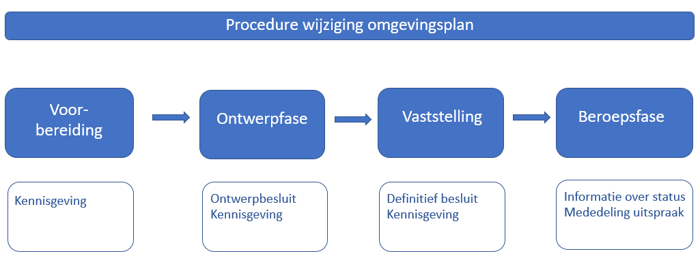Figuur 60Globaal overzicht van de procedure en de per fase aan de LVBB aan te leveren producten
10.4.1 Voorbereidingsfase
Figuur 61
10.4.1.1 Kennisgeving voornemen om omgevingsplan vast te stellen
10.4.1.1.1 Juridisch kader
De gemeente moet kennis geven van het voornemen om een omgevingsplan vast te stellen[27] Artikel 16.29 Ow . Deze kennisgeving moet in het officiële publicatieblad van de gemeente worden geplaatst[28] Artikel 12 jo artikel 2 Bekendmakingswet . In de kennisgeving moet worden aangegeven hoe burgers, bedrijven, maatschappelijke organisaties en bestuursorganen bij de voorbereiding worden betrokken[29] Artikel 10.2 lid 1 Ob , oftewel hoe het participatieproces zal plaatsvinden.
10.4.1.1.2 Aanleveren kennisgeving
De gemeente moet de kennisgeving conform STOP opstellen en aan de LVBB aanleveren. De specificaties voor de vormgeving van de kennisgeving conform STOP staan in paragraaf 10.2.2. Bij de kennisgeving moeten KennisgevingMetadata worden aangeleverd. De gemeente moet ook een publicatieopdracht aan de LVBB aanleveren, waarin wordt aangegeven welk soort publicatie wordt aangeleverd en op welke datum die publicatie gepubliceerd moet worden. Dat is achtereenvolgens in de volgende paragrafen beschreven.
NB: bij dit type kennisgeving wordt geen module Procedureverloop aangeleverd.
10.4.1.1.3 KennisgevingMetadata
De KennisgevingMetadata leggen vast welke organisatie verantwoordelijk is voor de kennisgeving en bevatten gegevens om de kennisgeving goed vindbaar te maken. In paragraaf 10.3.4 zijn de KennisgevingMetadata beschreven. Daar is aangegeven of het gegeven verplicht of optioneel is, hoe vaak het moet c.q. kan voorkomen en wat het doel respectievelijk het resultaat van het gegeven is. Hierna is voor de KennisgevingMetadata die relevant zijn de voor de kennisgeving van het voornemen om een omgevingsplan vast te stellen aangegeven hoe ze moeten worden toegepast.
eindverantwoordelijke: kies uit de STOP-waardelijst voor gemeente (de identificatiecode van) de betreffende gemeente.
maker: kies uit de STOP-waardelijst voor gemeente (de identificatiecode van) de betreffende gemeente.
officieleTitel: geef de kennisgeving een zo onderscheidend en herkenbaar mogelijke titel. De officiële titel is altijd gelijk aan het RegelingOpschrift van de kennisgeving. Een voorbeeld van de officiële titel van deze kennisgeving is ‘Kennisgeving voornemen om een wijziging van het omgevingsplan vast te stellen voor de bouw van 300 woningen in het Westerkwartier’.
onderwerp: kies uit de STOP-waardelijst onderwerp alle toepasselijke onderwerpen. Voor omgevingsdocumenten kunnen deze waarden uit de waardelijst passend zijn: wonen, verkeer, ruimte en infrastructuur, natuur en milieu, cultuur en recreatie, bouwen en verbouwen, scheepvaart, rail- en wegverkeer, luchtvaart, waterbeheer, ruimtelijke ordening, veiligheid, water, stoffen, natuur- en landschapsbeheer, lucht, geluid, flora en fauna, energie, bodem, afval, defensie, recreatie, horeca, evenementen, cultuur, cultureel erfgoed, klimaatverandering.
soortKennisgeving: kies de waarde KennisgevingVoorgenomenBesluit.
STOP kent naast de hiervoor genoemde KennisgevingMetadata ook nog het gegeven mededelingOver. Dat is de verwijzing vanuit een kennisgeving naar het (ontwerp)besluit waarover de kennisgeving gaat. Aangezien deze kennisgeving niet over een besluit of ontwerpbesluit gaat, wordt dit gegeven bij deze kennisgeving niet gebruikt.
Toekomstige functionaliteit
In deze paragraaf is beschreven hoe de kennisgeving van het voornemen om een omgevingsplan vast te stellen moet worden aangeleverd. Dit is een kennisgeving die gedaan moet worden op een moment dat er nog geen besluit is.
De A’’’-release van de STOP-TPOD-standaard beschrijft de mogelijkheid om zo’n losse kennisgeving die niet bij een besluit hoort, aan te leveren (doordat het gegeven mededelingOver optioneel is geworden en door het toevoegen van het gegeven soortKennisgeving). Deze losse kennisgeving wordt naar huidige verwachting in de DSO-keten geïmplementeerd als onderdeel van de implementatie van de A’’’-release.
Workaround
Zolang deze kennisgeving niet in de DSO-keten is geïmplementeerd, kan het bevoegd gezag deze kennisgeving met de applicatie DROP aanleveren.
10.4.1.1.4 Datum publicatie kennisgeving
De gemeente moet de datum waarop zij wil dat de kennisgeving in het gemeenteblad wordt gepubliceerd, doorgeven in de publicatieopdracht aan de LVBB, met het gegeven datumBekendmaking. Deze datum moet altijd in de toekomst liggen.
10.4.1.2 Technische voorbereiding: aanmaken van het Doel
Zoals in paragraaf 10.3.1 al is aangegeven, is een unieke identificatie nodig om van een omgevingsdocument vast te leggen dat tekst, informatieobjecten en OW-informatie bij elkaar horen, gedurende het hele proces van opstellen, voorbereiden, besluiten, bekendmaken en consolideren. De STOP/TPOD-standaard noemt die identificatie Doel. Het Doel wordt bij het ter publicatie of bekendmaking aanleveren van een besluit tot wijziging van het omgevingsplan meegeleverd.
De eerste handeling bij de start van het opstellen van een nieuw omgevingsdocument of het wijzigen van een bestaand omgevingsdocument, is het aanmaken van een nieuwe Regelingversie met een nieuw Doel oftewel identificatie. Het Doel moet voldoen aan de eisen die STOP daaraan stelt:
de identificatie moet het volgende patroon volgen: /join/id/proces/" <overheid> "/" <datum> "/" <overig>
overheid: code van het bevoegde gezag volgens één van de STOP-waardelijsten voor Overheid
datum: datum van het ontstaan van het doel; dit mag een jaartal of een volledige datum zijn
overig: door het bevoegd gezag te bepalen; dit kan een betekenisloze code zijn of een betekenisvolle tekstuele beschrijving van (het resultaat van) het doel. Hiervoor gelden de volgende eisen:
alleen toegestaan: boven- en onderkast letters, cijfers en underscore;
te beginnen met een cijfer of letter;
maximale lengte:128 karakters.
Het Doel moet uiteraard uniek zijn.
Het Doel bij een besluit tot wijziging van het omgevingsplan zou er zo uit kunnen zien: /join/id/proces/gm1680/2023/omgevingsplan_wijziging_51, maar ook /join/id/proces/gm1680/2023/546d9cff158f4d148f9bb6c953dc3019. Het Doel moet uniek zijn. Het is dus goed mogelijk dat de plansoftware zelf het Doel genereert en dat dat eerder Doelen met een betekenisloze code (zoals het tweede voorbeeld) dan met een betekenisvolle beschrijving oplevert.
Nadat het Doel is aangemaakt, wordt in de plansoftware gestart met de nieuwe regelingversie. In die nieuwe regelingversie worden de wijzigingen ten opzichte van de voorgaande toestand van de regeling aangebracht die voor de betreffende ontwikkeling nodig zijn. Afhankelijk van de functionaliteiten die de gebruikte plansoftware biedt, kunnen tussentijdse producten worden gegenereerd ten behoeve van intern en extern overleg, zoals met initiatiefnemers, adviseurs en medeoverheden.
10.4.2 Ontwerpfase en ontwerpbesluit
Figuur 62
10.4.2.1 Juridisch kader
Op de voorbereiding van een omgevingsplan is afdeling 3.4 Awb van toepassing[30] Artikel 16.30 lid 1 Ow . Aangezien een besluit over een omgevingsplan altijd een wijziging van het tijdelijke deel van het omgevingsplan (bestaande uit het omgevingsplan van rechtswege en het omgevingsplan van rijkswege oftewel de bruidsschat) zal zijn, zal het hier altijd gaan om een ontwerp-wijzigingsbesluit.
Het van afdeling 3.4 Awb onderdeel uitmakende artikel 3:11 lid 1 luidt: “Het bestuursorgaan legt het ontwerp van het te nemen besluit, met de daarop betrekking hebbende stukken die redelijkerwijs nodig zijn voor een beoordeling van het ontwerp, ter inzage, met uitzondering van stukken waarvoor bij wettelijk voorschrift mededeling op de in artikel 12 van de Bekendmakingswet bepaalde wijze is voorgeschreven.” In artikel 10.3c lid 1 Ob is die uitzondering vastgelegd: “Bij de voorbereiding van een omgevingsplan, een waterschapsverordening en een omgevingsverordening waarop afdeling 3.4 van de Algemene wet bestuursrecht van toepassing is, wordt van het ontwerp mededeling gedaan in het gemeenteblad, het waterschapsblad respectievelijk het provinciaal blad.” Dat houdt in dat een publicatie van de volledige inhoud van het ontwerpbesluit in het gemeenteblad wordt geplaatst. Het ontwerpbesluit zelf wordt dus niet ter inzage gelegd. Wel moet de gemeente de op het ontwerp betrekking hebbende stukken die redelijkerwijs nodig zijn voor een beoordeling van het ontwerp, ter inzage leggen. Die terinzagelegging geschiedt zowel op elektronische wijze als op een door de gemeente aan te wijzen locatie[31] Artikel 13 lid 1 Bekendmakingswet . De terinzagelegging vindt niet plaats in het gemeenteblad[32] Artikel 13 lid 1 Bekendmakingswet . Dit betekent dat de gemeente moet zorgen voor de elektronische terinzagelegging van de op het ontwerpbesluit betrekking hebbende stukken en voor de terinzagelegging van die stukken op een fysieke locatie. Op het ontwerp-besluit betrekking hebbende stukken zullen vooral bestaan uit rapportages van uitgevoerde onderzoeken. De terinzagelegging op een door de gemeente te bepalen locatie kan worden georganiseerd door op een in de kennisgeving aangegeven locatie, zoals het gemeentehuis, de mogelijkheid te bieden om op een beeldscherm de op het ontwerp betrekking hebbende stukken te raadplegen.
Voorafgaand aan de terinzagelegging geeft de gemeente kennis van het ontwerp[33] Artikel 3:12 lid 1 Awb in het gemeenteblad[34] Artikel 12 lid 1 jo artikel 2 lid 2 Bekendmakingswet . Zienswijzen over het ontwerp kunnen naar voren worden gebracht door eenieder[35] Artikel 3:15 Awb jo artikel 16.23 lid 1 Ow . De termijn daarvoor bedraagt zes weken[36] Artikel 3:16 lid 1 Awb .
NB: Zienswijzen kunnen geen betrekking hebben op het deel van het ontwerp van een omgevingsplan dat zijn grondslag vindt in een omgevingsvergunning voor een buitenplanse omgevingsplanactiviteit[37] Artikel 16.31 Ow .
Om aan de hier genoemde verplichtingen te voldoen moet de gemeente het ontwerpbesluit en de kennisgeving, met bijbehorende informatie, conform de STOP/TPOD-standaard opstellen en aan de LVBB aanleveren. De aanlevering van het ontwerpbesluit is beschreven in paragraaf 10.4.2.2 de aanlevering van de kennisgeving in paragraaf 10.4.2.3. De elektronische terinzagelegging van de op het ontwerp betrekking hebbende stukken is het onderwerp van paragraaf 10.4.2.4.
10.4.2.2 Aanleveren ontwerpbesluit
Ten behoeve van de interne ambtelijke en bestuurlijke besluitvorming binnen de gemeente zal gebruik gemaakt worden van een versie van het ontwerpbesluit die door de plansoftware is gegenereerd. Na eventuele aanpassingen die uit de interne besluitvorming nodig zijn gebleken, genereert de ambtelijke organisatie vanuit de gemeentelijke plansoftware een ontwerpbesluit ten behoeve van de publicatie in het gemeenteblad en het in DSO-LV kunnen raadplegen van de ontwerpregeling. Het ontwerpbesluit bestaat uit een ontwerpversie van het Besluit en de Regeling. In de Regeling staan de wijzigingsinstructies voor de geconsolideerde regeling. Dit geheel wordt aangeleverd aan de LVBB. Let op dat er bij een ontwerpbesluit in het Besluit een (ontwerp)-artikel moet zijn waarin wordt aangegeven wat het voorgenomen besluit is (het vaststellen van het besluit). Dit artikel (in termen van de standaard: het WijzigArtikel) is nodig om te verwijzen naar de WijzigBijlage.
Om de mededeling van het ontwerpbesluit in het gemeenteblad te kunnen doen en doorlevering door LVBB aan DSO-LV mogelijk te maken moeten Besluit en Regeling voldoen aan de specificaties die in deel B van dit toepassingsprofiel zijn gegeven. Aanvullend daarop moet de gemeente metadata over besluit en regeling en informatie over het Procedureverloop en de consolidatie meeleveren. De gemeente moet ook een publicatieopdracht aan de LVBB aanleveren, waarin zij aangeeft welk soort publicatie wordt aangeleverd en op welke datum die publicatie gepubliceerd moet worden. Dat is achtereenvolgens in de volgende paragrafen beschreven.
10.4.2.2.1 BesluitMetadata
De BesluitMetadata leggen vast welke organisatie verantwoordelijk is voor de besluitversie en bevatten gegevens om het besluit goed vindbaar te maken. In paragraaf 10.3.2 zijn de BesluitMetadata beschreven. Daar is aangegeven of het gegeven verplicht of optioneel is, hoe vaak het moet c.q. kan voorkomen en wat het doel respectievelijk het resultaat van het gegeven is. Hierna is voor de BesluitMetadata die relevant zijn voor het ontwerpbesluit tot wijziging van het omgevingsplan aangegeven hoe ze moeten worden toegepast.
eindverantwoordelijke: kies uit de STOP-waardelijst voor gemeente (de identificatiecode van) de betreffende gemeente.
maker: kies uit de STOP-waardelijst voor gemeente (de identificatiecode van) de betreffende gemeente.
soortBestuursorgaan: kies uit de STOP-waardelijst bestuursorgaan de waarde ‘college van burgemeester en wethouders’ wanneer het gaat om een ontwerp van een besluit tot wijziging van het omgevingsplan dat B&W voornemens zijn te nemen, op basis van een delegatiebesluit van de gemeenteraad. Kies in het andere geval de waarde ‘gemeenteraad’.
informatieobjectRef: neem hier de verwijzingen op naar de GIO’s (en eventueel de als informatieobject gemodelleerde PDF-documenten) die het ontwerpbesluit aan de regeling toevoegt of die het ontwerpbesluit wijzigt.
officieleTitel: geef het ontwerpbesluit een onderscheidende en herkenbare titel. De officiële titel is altijd gelijk aan het RegelingOpschrift van het besluit. Een voorbeeld van de officiële titel van een ontwerpbesluit tot wijziging van het omgevingsplan is ‘Ontwerpbesluit tot wijziging van het omgevingsplan Amsterdam t.b.v. de realisatie van 47 studentenwoningen in de Jordaan’.
onderwerp: kies uit de STOP-waardelijst onderwerp alle toepasselijke onderwerpen. Voor omgevingsdocumenten kunnen deze waarden uit de waardelijst passend zijn: wonen, verkeer, ruimte en infrastructuur, natuur en milieu, cultuur en recreatie, bouwen en verbouwen, scheepvaart, rail- en wegverkeer, luchtvaart, waterbeheer, ruimtelijke ordening, veiligheid, water, stoffen, natuur- en landschapsbeheer, lucht, geluid, flora en fauna, energie, bodem, afval, defensie, recreatie, horeca, evenementen, cultuur, cultureel erfgoed, klimaatverandering.
rechtsgebied: kies uit de STOP-waardelijst rechtsgebied in ieder geval voor de waarde ‘omgevingsrecht' en vul dit aan met andere toepasselijke waarden uit deze waardelijst.
soortProcedure: kies uit de STOP-waardelijst soortprocedure de waarde Ontwerpbesluit.
grondslag: maak een verwijzing naar artikel 2.4 Omgevingswet, de grondslag voor het vaststellen van het omgevingsplan, wanneer het gaat om een ontwerp van een wijzigingsbesluit dat de gemeenteraad voornemens is te nemen. Maak, wanneer het gaat om een ontwerp van een wijzigingsbesluit dat B&W voornemens zijn te nemen, verwijzingen naar artikel 2.8 Omgevingswet, de grondslag voor het delegeren van de bevoegdheid tot het vaststellen van delen van het omgevingsplan, en naar het bekendgemaakte delegatiebesluit. De grondslag ziet er -in STOP-XML- uit als in Figuur 63:
Figuur 63Voorbeeld van de grondslag voor het omgevingsplan
10.4.2.2.2 RegelingMetadata
De RegelingMetadata leggen vast welke organisatie verantwoordelijk is voor de regelingversie en bevatten gegevens om de regeling goed vindbaar te maken. In paragraaf 10.3.3 zijn de RegelingMetadata beschreven. Daar is aangegeven of het gegeven verplicht of optioneel is, hoe vaak het moet c.q. kan voorkomen en wat het doel respectievelijk het resultaat van het gegeven is. Hierna is voor de RegelingMetadata die relevant zijn voor het ontwerpbesluit tot wijziging van het omgevingsplan aangegeven hoe ze moeten worden toegepast.
soortRegeling: kies uit de STOP-waardelijst soortRegeling de waarde Omgevingsplan.
eindverantwoordelijke: kies uit de STOP-waardelijst voor gemeente (de identificatiecode van) de betreffende gemeente.
maker: kies uit de STOP-waardelijst voor gemeente (de identificatiecode van) de betreffende gemeente.
soortBestuursorgaan: kies uit de STOP-waardelijst bestuursorgaan de waarde ‘gemeenteraad’. NB: dat geldt ook bij de aanlevering van een regelingversie horend bij een ontwerp-wijzigingsbesluit dat B&W voornemens zijn te nemen, op basis van een delegatiebesluit van de gemeenteraad.
officieleTitel: geef de regeling van het omgevingsplan een onderscheidende en herkenbare titel. De officiële titel is altijd gelijk aan het RegelingOpschrift van de regeling. Gebruikelijk is om te kiezen voor het woord Omgevingsplan met daarachter de naam van de gemeente, bijvoorbeeld ‘Omgevingsplan Amersfoort’.
citeertitel: maak gebruik van het element citeertitel en laat die hetzelfde zijn als de officiële titel en het RegelingOpschrift van de regeling. Als de citeertitel in het omgevingsplan wordt vastgesteld moet voor isOfficieel de waarde true worden gekozen; als de citeertitel niet in het omgevingsplan wordt vastgesteld moet daarvoor false worden gekozen.
Onderwerp: kies uit de STOP-waardelijst onderwerp alle toepasselijke onderwerpen. Voor omgevingsdocumenten kunnen deze waarden uit de waardelijst passend zijn: wonen, verkeer, ruimte en infrastructuur, natuur en milieu, cultuur en recreatie, bouwen en verbouwen, scheepvaart, rail- en wegverkeer, luchtvaart, waterbeheer, ruimtelijke ordening, veiligheid, water, stoffen, natuur- en landschapsbeheer, lucht, geluid, flora en fauna, energie, bodem, afval, defensie, recreatie, horeca, evenementen, cultuur, cultureel erfgoed, klimaatverandering.
rechtsgebied: kies uit de STOP-waardelijst rechtsgebied in ieder geval de waarde ‘omgevingsrecht' en vul dit aan met andere toepasselijke waarden uit deze waardelijst.
overheidsdomein: kies uit de STOP-waardelijst overheidsthema alle toepasselijke waarden. Voor omgevingsdocumenten kunnen deze waarden uit de waardelijst passend zijn: bouwen, wonen en leefomgeving; cultuur, sport, vrije tijd; landbouw, natuur en voedsel; milieu, ruimte en water; defensie; verkeer en vervoer.
grondslag: maak een verwijzing naar artikel 2.4 Omgevingswet, de grondslag voor het vaststellen van het omgevingsplan. Dit geldt ook bij de aanlevering van een regelingversie horend bij een ontwerp-wijzigingsbesluit dat B&W voornemens zijn te nemen, op basis van een delegatiebesluit van de gemeenteraad. De grondslag ziet er -in STOP-XML- uit als in Figuur 64:
Figuur 64Voorbeeld van de grondslag voor het omgevingsplan
10.4.2.2.3 Procedureverloop
Met de module Procedureverloop wordt informatie over het verloop van de procedure van het besluit tot wijziging van het omgevingsplan en de verschillende stappen daarin bijgehouden. In paragraaf 10.3.5 is beschreven hoe het doorgeven van procedure-informatie met het Procedureverloop werkt. Hierna is aangegeven hoe dat concreet bij het ontwerpbesluit tot wijziging van het omgevingsplan moet worden toegepast.
In de procedure van het ontwerpbesluit moet een module Procedureverloop worden aangeleverd. Dat kan op twee manieren. De eerste manier is door het Procedureverloop initieel aan te leveren met het ontwerpbesluit en vervolgens met een Procedureverloopmutatie te muteren door de kennisgeving. De tweede manier is door bij het ontwerpbesluit geen Procedureverloop aan te leveren maar het Procedureverloop aan te leveren met de kennisgeving. Ook in dat geval moet dat met een Procedureverloopmutatie. Welke manier wordt gekozen hangt er van af of het in de gemeente gebruikelijk is dat B&W besluiten om het ontwerpbesluit ter inzage te leggen of dat dit gemandateerd is aan een ambtenaar. In het eerste geval is er een Procedureverloop bij het ontwerpbesluit, in het tweede geval niet. Het Procedureverloop is dus bij het ontwerpbesluit optioneel en bij de kennisgeving verplicht. Bij de kennisgeving wordt het Procedureverloop altijd met een Procedureverloopmutatie aangeleverd, ook als er geen Procedureverloop bij het ontwerpbesluit is.
Als wordt gekozen voor de eerste manier wordt de module Procedureverloop bij het ontwerpbesluit aangeleverd. Het Procedureverloop moet dan de volgende gegevens bevatten:
Procedurestap
soortStap: kies uit de STOP-waardelijst Procedurestap_ontwerp de waarde ‘Vaststelling’
voltooidOp: vul de datum in waarop het bestuursorgaan het ontwerpbesluit heeft vastgesteld
Procedurestap
soortStap: kies uit de STOP-waardelijst Procedurestap_ontwerp de waarde ‘Ondertekening’
voltooidOp: vul de datum in waarop het bestuursorgaan het ontwerpbesluit heeft ondertekend
bekendOp: vul de datum in waarop het ontwerpbesluit in het publicatieblad van de gemeente wordt gepubliceerd.
Gebruik in deze fase van de procedure het gegeven meerInformatie niet.
NB: bij keuze voor de tweede manier is er geen Procedureverloop bij het ontwerpbesluit.
Toekomstige functionaliteit
In de A’’’-release van de STOP-TPOD-standaard is beschreven dat in de procedure van het ontwerpbesluit de module Procedureverloop verplicht is bij de aanlevering van de kennisgeving en optioneel bij de aanlevering van het ontwerpbesluit. Dit wordt in de keten geïmplementeerd als onderdeel van de implementatie van de A’’’-release.
Workaround
Zolang dit niet in de DSO-keten is geïmplementeerd, is het verplicht een module Procedureverloop bij het ontwerpbesluit aan te leveren en die door de kennisgeving te muteren.
NB: de module Procedureverloop bij het ontwerpbesluit mag niet leeg zijn.
10.4.2.2.4 ConsolidatieInformatie
Met de module ConsolidatieInformatie wordt informatie aangeleverd ten behoeve van de consolidatie van het besluit in de regeling. Binnen een container BeoogdeRegelgeving worden opgenomen:
BeoogdeRegeling, met daarbinnen:
Doel
instrumentVersie
een verwijzing naar (de identificatie van) het WijzigArtikel in het ontwerpbesluit (het artikel waarin staat wat het bestuursorgaan beoogt met het besluit te wijzigen)
BeoogdInformatieobject, voor ieder Informatieobject dat het ontwerpbesluit vaststelt, met daarbinnen:
Doel
instrumentVersie
de verwijzing naar het element in de informatieobjecten-bijlage in de WijzigBijlage dat de ExtIoRef (de identificatie van het daadwerkelijke informatieobject) bevat.
Bij een ontwerpbesluit worden geen tijdstempels toegevoegd.
10.4.2.2.5 Datum publicatie ontwerpbesluit
De datum waarop de gemeente wil dat het ontwerpbesluit in het gemeenteblad wordt gepubliceerd, wordt doorgegeven in de publicatieopdracht aan de LVBB. Dat gebeurt met het gegeven datumBekendmaking. Deze datum moet altijd in de toekomst liggen.
10.4.2.3 Kennisgeving ontwerpbesluit
10.4.2.3.1 Inhoud en aanlevering kennisgeving
Zoals in paragraaf 10.4.2.1 al is beschreven moet de gemeente voorafgaand aan de terinzagelegging in het gemeenteblad kennis geven van het ontwerpbesluit. De kennisgeving vermeldt in ieder geval[38] Artikel 3:12 Awb en artikel 12 lid 1 jo artikel 2 Bekendmakingswet. :
een zakelijke weergave van de inhoud van het ontwerpbesluit[39] Artikel 3.7 Besluit elektronische publicaties ;
een beschrijving van het betreffende object of de betreffende activiteit en, in voorkomend geval, de locatie daarvan;
een zodanige beschrijving van het ontwerpbesluit en het beoogde rechtsgevolg daarvan dat potentiële belanghebbenden eruit kunnen afleiden in hoeverre zij in hun belangen worden geraakt;
de wijze waarop en de periode waarin de stukken waar de kennisgeving betrekking op heeft voor eenieder ter inzage liggen;
wie in de gelegenheid worden gesteld om zienswijzen naar voren te brengen;
op welke wijze dit kan geschieden.
Om de kennisgeving aan de LVBB aan te kunnen leveren en in het gemeenteblad te plaatsen moet deze voldoen aan de specificaties voor de kennisgeving, die in paragraaf 10.2.2 zijn beschreven. De kennisgeving is een zelfstandige eenheid en is geen onderdeel van het ontwerpbesluit. De kennisgeving zit niet in hetzelfde aanleverpakket als het ontwerpbesluit waar het bij hoort, maar moet apart worden aangeleverd nádat het besluit-pakket is aangeleverd.
Bij de kennisgeving moet de gemeente KennisgevingMetadata en informatie over het Procedureverloop meeleveren. De gemeente moet ook een publicatieopdracht aan de LVBB aanleveren, waarin zij aangeeft welk soort publicatie wordt aangeleverd en op welke datum die publicatie gepubliceerd moet worden. Dat is achtereenvolgens in de volgende paragrafen beschreven.
NB: de kennisgeving komt wel in het gemeenteblad, maar wordt niet in DSO-LV getoond. In DSO-LV wordt wel gebruik gemaakt van informatie uit (de metadata bij) de kennisgeving.
10.4.2.3.2 KennisgevingMetadata
De KennisgevingMetadata leggen vast welke organisatie verantwoordelijk is voor de kennisgeving en bevatten gegevens om de kennisgeving goed vindbaar te maken. In paragraaf 10.3.4 zijn de KennisgevingMetadata beschreven. Daar is aangegeven of het gegeven verplicht of optioneel is, hoe vaak het moet c.q. kan voorkomen en wat het doel respectievelijk het resultaat van het gegeven is. Hierna is voor de KennisgevingMetadata die relevant zijn voor de kennisgeving behorend bij een ontwerpbesluit tot wijziging van het omgevingsplan aangegeven hoe ze moeten worden toegepast.
eindverantwoordelijke: kies uit de STOP-waardelijst voor gemeente (de identificatiecode van) de betreffende gemeente.
maker: kies uit de STOP-waardelijst voor gemeente (de identificatiecode van) de betreffende gemeente.
officieleTitel: geef de kennisgeving een zo onderscheidend en herkenbaar mogelijke titel. De officiële titel is altijd gelijk aan het RegelingOpschrift van de kennisgeving. Een voorbeeld van de officiële titel van deze kennisgeving is ‘Kennisgeving ontwerpbesluit tot wijziging van het omgevingsplan voor de bouw van 300 woningen in het Westerkwartier’.
onderwerp: kies uit de STOP-waardelijst onderwerp alle toepasselijke onderwerpen. Voor omgevingsdocumenten kunnen deze waarden uit de waardelijst passend zijn: wonen, verkeer, ruimte en infrastructuur, natuur en milieu, cultuur en recreatie, bouwen en verbouwen, scheepvaart, rail- en wegverkeer, luchtvaart, waterbeheer, ruimtelijke ordening, veiligheid, water, stoffen, natuur- en landschapsbeheer, lucht, geluid, flora en fauna, energie, bodem, afval, defensie, recreatie, horeca, evenementen, cultuur, cultureel erfgoed, klimaatverandering.
mededelingOver: maak een verwijzing naar de identificatie van het ontwerpbesluit waarover de kennisgeving gaat.
soortKennisgeving: kies de waarde KennisgevingBesluittermijnen.
10.4.2.3.3 Procedureverloop
Met de module Procedureverloop wordt informatie over het verloop van de procedure van het besluit tot wijziging van het omgevingsplan en de verschillende stappen daarin bijgehouden. In paragraaf 10.3.5 is beschreven hoe het doorgeven van procedure-informatie met het Procedureverloop werkt. Hierna is aangegeven hoe dat concreet bij de kennisgeving behorend bij een ontwerpbesluit tot wijziging van het omgevingsplan moet worden toegepast.
Zoals in paragraaf 10.4.2.2.3 al is aangegeven moet in de procedure van het ontwerpbesluit een module Procedureverloop worden aangeleverd en kan dat op twee manieren. De eerste manier is door het Procedureverloop initieel aan te leveren met het ontwerpbesluit en vervolgens met een Procedureverloopmutatie te muteren door de kennisgeving. De tweede manier is door bij het ontwerpbesluit geen Procedureverloop aan te leveren maar het Procedureverloop aan te leveren met de kennisgeving. Het Procedureverloop is dus bij het ontwerpbesluit optioneel en bij de kennisgeving verplicht. Bij de kennisgeving wordt het Procedureverloop altijd met een procedureverloopmutatie aangeleverd, ook als er geen Procedureverloop bij het ontwerpbesluit is.
Bij beide manieren wordt bij de kennisgeving van het ontwerpbesluit het Procedureverloop met een Procedureverloopmutatie aangeleverd. Daarmee worden aan het Procedureverloop de volgende gegevens toegevoegd:
Procedurestap
soortStap: kies uit de STOP-waardelijst Procedurestap_ontwerp de waarde ‘Begin inzagetermijn’.
voltooidOp: vul de datum in waarop de inzagetermijn van het ontwerpbesluit start.
Procedurestap
soortStap: kies uit de STOP-waardelijst Procedurestap_ontwerp de waarde ‘Einde inzagetermijn’
voltooidOp: vul de datum in waarop de inzagetermijn van het ontwerpbesluit is geëindigd. Dit is de eerste dag waarop géén zienswijzen op het ontwerpbesluit meer kunnen worden ingediend.
bekendOp: vul de datum in waarop de kennisgeving in het publicatieblad van de gemeente wordt gepubliceerd.
Gebruik in deze fase van de procedure het gegeven meerInformatie niet.
Toekomstige functionaliteit
In de A’’’-release van de STOP-TPOD-standaard is beschreven dat in de procedure van het ontwerpbesluit de module Procedureverloop verplicht is bij de aanlevering van de kennisgeving en optioneel bij de aanlevering van het ontwerpbesluit. Dit wordt in de keten geïmplementeerd als onderdeel van de implementatie van de A’’’-release.
Workaround
Zolang dit niet in de DSO-keten is geïmplementeerd, is het verplicht een module Procedureverloop bij het ontwerpbesluit aan te leveren en die door de kennisgeving te muteren.
NB: de module Procedureverloop bij het ontwerpbesluit mag niet leeg zijn.
10.4.2.3.4 Datum publicatie kennisgeving
De gemeente moet de datum waarop zij wil dat de kennisgeving in het gemeenteblad wordt gepubliceerd, doorgeven in de publicatieopdracht aan de LVBB. Dat gebeurt met het gegeven datumBekendmaking. Deze datum moet altijd in de toekomst liggen.
10.4.2.4 Terinzageleggen op het ontwerpbesluit betrekking hebbende stukken
De gemeente moet de op het ontwerp betrekking hebbende stukken die redelijkerwijs nodig zijn voor een beoordeling van het ontwerp, ter inzage leggen.
NB: Zoals in paragraaf 5.4.1 al is aangegeven zullen op het ontwerp-besluit betrekking hebbende stukken vooral bestaan uit rapportages van uitgevoerde onderzoeken en hoeft het ontwerpbesluit zelf niet ter inzage gelegd te worden. Daarvan moet immers mededeling gedaan worden in het publicatieblad en daarom valt het onder de uitzondering op de terinzageleggingsplicht.
Toekomstige functionaliteit
In een volgende versie van dit toepassingsprofiel wordt beschreven hoe de ter inzage legging van op het (ontwerp)besluit betrekking hebbende stukken gaat werken.
De verwachting is dat dit tijdig voor inwerkingtreden van de Omgevingswet bekend is.
Workaround
Mocht niet bekend zijn hoe de elektronische terinzagelegging van op het besluit betrekking hebbende stukken gaat werken en van welke voorziening daarvoor gebruikt moet worden, dan kan het bevoegd gezag:
de betreffende stukken als onderdeel van het BesluitCompact conform STOP aan de LVBB aanleveren; of
de betreffende stukken via de eigen website ontsluiten.
10.4.3 Fase van vaststelling, bekendmaking en inwerkingtreding: definitief besluit
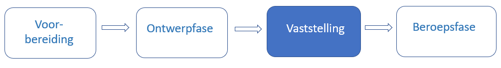Figuur 65
10.4.3.1 Juridisch kader
De gemeenteraad stelt het omgevingsplan vast[40] Artikel 2.4 Ow . De gemeenteraad kan de bevoegdheid tot het vaststellen van delen van het omgevingsplan delegeren aan het college van burgemeester en wethouders[41] Artikel 2.8 Ow .
Bij het vaststellen van een omgevingsplan wordt aangegeven hoe burgers, bedrijven, maatschappelijke organisaties en bestuursorganen bij de voorbereiding zijn betrokken en wat de resultaten daarvan zijn. Daarbij wordt aangegeven op welke wijze invulling is gegeven aan het toepasselijke decentrale participatiebeleid[42] Artikel 10.2 lid 2 Ob .
Het besluit wordt bekendgemaakt door plaatsing ervan in het gemeenteblad[43] Artikel 3:42 Awb jo artikel 6 Bekendmakingswet, van toepassing verklaard in artikel 16.30 lid 2 Ow . Het besluit dient te berusten op een deugdelijke motivering, die moet worden vermeld bij de bekendmaking van het besluit[44] Artikel 3:46 en 3:47 lid 1 Awb, van toepassing verklaard in artikel 16.30 lid 2 Ow . Bij de bekendmaking van het besluit moet melding gemaakt worden van het feit dat tegen het besluit beroep kan worden ingesteld. Daarbij moet worden vermeld door wie, binnen welke termijn en bij welk orgaan beroep kan worden ingesteld[45] Artikel 3:45 Awb, van toepassing verklaard in artikel 16.30 lid 2 Ow . Deze bepaling houdt in dat deze zogeheten rechtsmiddelenclausule in het besluit moet worden opgenomen.
NB: er kan geen beroep worden ingesteld tegen regels die uitvoering geven aan een onherroepelijk besluit tot aanwijzing van een monument of archeologisch monument als gemeentelijk monument of provinciaal monument en een gemeentelijk of provinciaal beschermd stads- of dorpsgezicht[46] Artikel 22.7 Ow . Mocht zo’n geval aan de orde zijn dan zal dat in de bekendmaking (en in de kennisgeving) vermeld worden.
Het besluit tot wijziging van het omgevingsplan is een besluit dat niet tot een of meer belanghebbenden is gericht en is voorbereid met toepassing van afdeling 3.4 Awb. Daarom moeten de op de zaak betrekking hebbende stukken ter inzage worden gelegd[47] Artikel 3:44 lid 2, artikel 3:44 lid 1 en artikel 3:11 lid 1 Awb en moet gelijktijdig met de bekendmaking van het besluit kennis worden gegeven van de terinzagelegging van die stukken[48] Artikel 3:44 lid 2, artikel 3:44 lid 1 en artikel 3:12 lid 1 Awb . De terinzagelegging geschiedt zowel op elektronische wijze als op een door de gemeente aan te wijzen locatie[49] Artikel 13 lid 1 Bekendmakingswet . De terinzagelegging vindt niet plaats in het gemeenteblad[50] Artikel 13 lid 1 Bekendmakingswet . Dit betekent dat de gemeente moet zorgen voor de elektronische terinzagelegging van op de zaak betrekking hebbende stukken en voor de terinzagelegging van die stukken op een fysieke locatie. Op de zaak betrekking hebbende stukken zullen vooral bestaan uit rapportages van uitgevoerde onderzoeken. Het besluit zelf hoeft niet ter inzage gelegd te worden, dat moet immers bekendgemaakt worden in het publicatieblad. De stukken liggen ter inzage totdat de beroepstermijn is verstreken[51] Artikel 3:44 lid 1 Awb, van toepassing verklaard in artikel 16.30 lid 2 Ow . Een exemplaar van het besluit moet worden toegezonden aan degenen die over het ontwerp van het besluit zienswijzen naar voren hebben gebracht[52] Artikel 3:44 lid 2 jo 3:44 lid 1 onder b Awb, van toepassing verklaard in artikel 16.30 lid 2 Ow .
Een (besluit tot wijziging van het) omgevingsplan wordt niet eerder bekendgemaakt dan nadat twee weken zijn verstreken sinds de dag waarop het omgevingsplan is vastgesteld, tenzij GS over het ontwerpbesluit geen zienswijzen naar voren hebben gebracht, de gemeente ten opzichte van het ontwerpbesluit in het definitieve besluit geen wijzigingen heeft aangebracht, of GS hebben bepaald dat het besluit eerder ter inzage mag worden gelegd[53] Artikel 16.77b lid 1 Ow . Let op dat een (besluit tot wijziging van het) omgevingsplan niet eerder mag worden bekendgemaakt dan de dag waarop de Omgevingswet in werking treedt[54] Artikel 22.3 Ow . De voorbereiding van het besluit, inclusief het nemen van het besluit oftewel de vaststelling, kan wel voor inwerkingtreden van de Omgevingswet plaatsvinden.
De gemeenteraad of B&W zenden een besluit tot vaststelling van een omgevingsplan onverwijld aan gedeputeerde staten als sprake is van een geval als bedoeld in artikel 16.21, eerste lid, onder a of b, Ow[55] Artikel 10.3 lid 1 Ob . Die situatie doet zich voor als GS over een onderdeel van een besluit tot vaststelling of wijziging van een omgevingsplan een zienswijze naar voren hebben gebracht en die zienswijze niet volledig in het omgevingsplan is overgenomen, of als de gemeente in een onderdeel van dat besluit wijzigingen heeft aangebracht ten opzichte van het ontwerp, anders dan op grond van een zienswijze van gedeputeerde staten. Als een of beide van die gevallen zich voordoen kunnen GS besluiten dat een onderdeel van een besluit tot vaststelling of wijziging van een omgevingsplan geen deel van dat omgevingsplan uitmaakt[56] Artikel 16.21 lid 1 Ow . Dit besluit wordt reactieve interventie genoemd. Van deze bevoegdheid kunnen GS alleen gebruik maken voor zover dat nodig is met het oog op een evenwichtige toedeling van functies aan locaties en er sprake is van strijd met een belang als bedoeld in artikel 2.3, tweede lid, onder a, dat is aangegeven in een door een bestuursorgaan van de provincie openbaar gemaakt document[57] Artikel 16.21 lid 2 Ow . GS moeten de reactieve interventie bekend maken binnen vier weken nadat het besluit tot vaststelling of wijziging van het omgevingsplan is bekendgemaakt.
Tegen het besluit tot vaststelling van het omgevingsplan kan een belanghebbende rechtstreeks beroep bij de Afdeling bestuursrechtspraak van de Raad van State instellen[58] Artikel 8:1 jo 8:6 lid 1 jo artikel 2 van Bijlage 2 Awb, via artikel 2.2 onderdeel B sub 2 sub g sub a Invoeringswet Omgevingswet (zie hiervoor verder paragraaf 10.4.4).
De termijn voor het indienen van een beroepschrift bedraagt zes weken[59] Artikel 6:7 Awb . De termijn begint op de dag na die waarop het besluit is bekendgemaakt[60] Artikel 6:8 lid 1 Awb .
Een (besluit tot wijziging van het) omgevingsplan treedt in werking met ingang van de dag waarop vier weken zijn verstreken sinds de dag waarop het besluit bekend is gemaakt, tenzij in het omgevingsplan een later tijdstip is bepaald[61] Artikel 16.78 lid 1 Ow . Een eventuele reactieve interventie treedt tegelijk in werking met het (besluit tot wijziging van het) omgevingsplan waarop het betrekking heeft[62] Artikel 16.78 lid 2 Ow .
De hiervoor beschreven procedure is met een tijdlijn inzichtelijk gemaakt in Figuur 66.
Na de publicatie van het ontwerpbesluit en voorafgaand aan de bekendmaking van het definitieve besluit vindt een extern en intern proces plaats. Er worden zienswijzen ingediend over het ontwerpbesluit, die zienswijzen worden beantwoord en wanneer er naar aanleiding van die zienswijzen aanpassingen in het omgevingsplan nodig zijn, worden die in de plansoftware verwerkt.
In de bekendmaking van het besluit moet de gemeente aangeven hoe burgers, bedrijven, maatschappelijke organisaties en bestuursorganen bij de voorbereiding zijn betrokken, wat de resultaten daarvan zijn en op welke wijze invulling is gegeven aan het toepasselijke decentrale participatiebeleid. In de bekendmaking moet de gemeente ook een deugdelijke motivering van het besluit geven. Deze beschrijvingen en de motivering worden geplaatst in het onderdeel Motivering van het Besluit, zie daarvoor paragraaf 4.3.2 en met name de toelichting in paragraaf 4.3.2.2.
Bij de bekendmaking, dus in het Besluit, moet de gemeente vermelden dat tegen het besluit beroep kan worden ingesteld en door wie, binnen welke termijn en bij welk orgaan dat beroep kan worden ingesteld. Zoals in paragraaf 4.3.2.2 al is aangegeven is de juiste plaats daarvoor het onderdeel Sluiting van het Besluit. Geadviseerd wordt om in het besluit de vermelding van de termijn waarbinnen beroep kan worden ingesteld globaal te houden (bij voorbeeld: “Beroep kan worden ingesteld binnen zes weken na de dag van bekendmaking”) en de exacte data alleen te noemen in de hierna te bespreken kennisgeving. De reden voor dit advies is dat de voorbereiding van het besluit doorgaans al zal starten op een moment dat nog niet zeker is wanneer het besluit zal worden genomen en bekendgemaakt.
Hierna maakt de ambtelijke organisatie van de gemeente een nieuwe versie van Besluit en Regeling, die het interne besluitvormingsproces doorloopt. Dit resulteert in een voorstel aan het bevoegde bestuursorgaan. Bij het nemen van het besluit kan het bestuursorgaan nog wijzigingen aanbrengen (in het geval van de gemeenteraad: amendementen). Deze eventuele wijzigingen worden verwerkt in de plansoftware.
De gemeente moet een exemplaar van het besluit toezenden aan degenen die over het ontwerp van het besluit zienswijzen naar voren hebben gebracht en -onder bepaalde omstandigheden- aan GS. De DSO-keten biedt geen ondersteuning voor deze toezending. Het is aan de gemeente om te bepalen hoe en in welke vorm zij het besluit toezendt.
10.4.3.3 Aanleveren definitief besluit
Ten behoeve van de bekendmaking van het definitieve besluit in het gemeenteblad genereert de ambtelijke organisatie vanuit de gemeentelijke plansoftware een besluit, bestaande uit een (definitieve) versie van het Besluit en de Regeling. In de Regeling staan de wijzigingsinstructies voor de geconsolideerde regeling. Dit geheel moet de gemeente aanleveren aan de LVBB.
Opgemerkt wordt dat de STOP/TPOD-standaard de term ‘definitief besluit’ gebruikt. Dit is een technische term die zowel wordt gebruikt voor het ‘product’ van deze fase, te weten het genomen besluit, als voor de procedure van besluitvorming, bekendmaking, inwerkingtreding en de eventuele daarop volgende gebeurtenissen in de levensloop van het besluit: beroep en voorlopige voorziening. In juridische zin is bij de bekendmaking van een besluit tot wijziging van het omgevingsplan nog geen sprake van een definitief besluit: het besluit is immers op dat moment niet onherroepelijk omdat door de uitspraak op eventueel ingestelde beroepen de geldigheid en de inhoud van het besluit nog kan wijzigen. Naar aanleiding daarvan kunnen ook wijzigingen ontstaan in de inhoud van de regeling van het omgevingsplan.
Om de bekendmaking van het besluit in het gemeenteblad te kunnen doen en doorlevering door LVBB aan DSO-LV mogelijk te maken, moeten Besluit en Regeling voldoen aan de specificaties die in deel B van dit toepassingsprofiel zijn gegeven. Aanvullend daarop moet de gemeente metadata over besluit en regeling en informatie over het Procedureverloop en de consolidatie meeleveren. De gemeente moet ook een publicatieopdracht aan de LVBB aanleveren, waarin zij aangeeft welk soort publicatie wordt aangeleverd en op welke datum die publicatie gepubliceerd moet worden. Dat is achtereenvolgens in de volgende paragrafen beschreven.
10.4.3.3.1 BesluitMetadata
De BesluitMetadata leggen vast welke organisatie verantwoordelijk is voor de besluitversie en bevatten gegevens om het besluit goed vindbaar te maken. In paragraaf 10.3.2 zijn de BesluitMetadata beschreven. Daar is aangegeven of het gegeven verplicht of optioneel is, hoe vaak het moet c.q. kan voorkomen en wat het doel respectievelijk het resultaat van het gegeven is. Hierna is voor de BesluitMetadata die relevant zijn voor het definitieve besluit tot wijziging van het omgevingsplan aangegeven hoe ze moeten worden toegepast.
eindverantwoordelijke: kies uit de STOP-waardelijst voor gemeente (de identificatiecode van) de betreffende gemeente.
maker: kies uit de STOP-waardelijst voor gemeente (de identificatiecode van) de betreffende gemeente.
soortBestuursorgaan: kies uit de STOP-waardelijst bestuursorgaan de waarde ‘college van burgemeester en wethouders’ wanneer het gaat om een besluit tot wijziging van het omgevingsplan dat door B&W wordt genomen, op basis van een delegatiebesluit van de gemeenteraad. Kies in het andere geval de waarde ‘gemeenteraad’.
informatieobjectRef: neem hier de verwijzingen op naar de GIO’s (en eventueel de als informatieobject gemodelleerde PDF-documenten) die het besluit aan de regeling toevoegt of die het besluit wijzigt en, indien van toepassing, naar het Pons-GIO dat bij het besluit hoort.
officieleTitel: geef het besluit een onderscheidende en herkenbare titel. De officiële titel is altijd gelijk aan het RegelingOpschrift van het besluit. Een voorbeeld van de officiële titel van een besluit tot wijziging van het omgevingsplan is ‘Besluit tot wijziging van het omgevingsplan Amsterdam t.b.v. de realisatie van 47 studentenwoningen in de Jordaan’.
onderwerp: kies uit de STOP-waardelijst onderwerp alle toepasselijke onderwerpen. Voor omgevingsdocumenten kunnen deze waarden uit de waardelijst passend zijn: wonen, verkeer, ruimte en infrastructuur, natuur en milieu, cultuur en recreatie, bouwen en verbouwen, scheepvaart, rail- en wegverkeer, luchtvaart, waterbeheer, ruimtelijke ordening, veiligheid, water, stoffen, natuur- en landschapsbeheer, lucht, geluid, flora en fauna, energie, bodem, afval, defensie, recreatie, horeca, evenementen, cultuur, cultureel erfgoed, klimaatverandering.
rechtsgebied: kies uit de STOP-waardelijst rechtsgebied in ieder geval de waarde ‘omgevingsrecht’ en vul dit aan met andere toepasselijke waarden uit deze waardelijst.
soortProcedure: kies uit de STOP-waardelijst soortprocedure de waarde Definitief besluit.
grondslag: maak een verwijzing naar artikel 2.4 Omgevingswet, de grondslag voor het vaststellen van het omgevingsplan, wanneer het gaat om een wijzigingsbesluit dat door de gemeenteraad wordt genomen. Maak, wanneer het gaat om een wijzigingsbesluit dat door B&W wordt genomen, verwijzingen naar artikel 2.8 Omgevingswet, de grondslag voor het delegeren van de bevoegdheid tot het vaststellen van delen van het omgevingsplan, en naar het bekendgemaakte delegatiebesluit. De grondslag ziet er -in STOP-XML- uit als in onderstaande afbeelding:
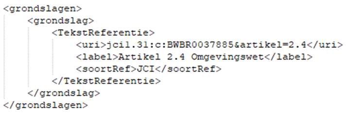Figuur 67Voorbeeld van de grondslag voor het omgevingsplan
10.4.3.3.2 RegelingMetadata
De RegelingMetadata leggen vast welke organisatie verantwoordelijk is voor de regelingversie en bevatten gegevens om de regeling goed vindbaar te maken. In paragraaf 10.3.3 zijn de RegelingMetadata beschreven. Daar is aangegeven of het gegeven verplicht of optioneel is, hoe vaak het moet c.q. kan voorkomen en wat het doel respectievelijk het resultaat van het gegeven is. Hierna is voor de RegelingMetadata die relevant zijn voor het definitieve besluit tot wijziging van het omgevingsplan aangegeven hoe ze moeten worden toegepast.
soortRegeling: kies uit de STOP-waardelijst soortRegeling de waarde Omgevingsplan.
eindverantwoordelijke: kies uit de STOP-waardelijst voor gemeente (de identificatiecode van) de betreffende gemeente.
maker: kies uit de STOP-waardelijst voor gemeente (de identificatiecode van) de betreffende gemeente.
soortBestuursorgaan: kies uit de STOP-waardelijst bestuursorgaan de waarde ‘gemeenteraad’. NB: dat geldt ook bij de aanlevering van een regelingversie horend bij een wijzigingsbesluit dat door B&W wordt genomen, op basis van een delegatiebesluit van de gemeenteraad.
officieleTitel: geef de regeling van het omgevingsplan een onderscheidende en herkenbare titel. De officiële titel is altijd gelijk aan het RegelingOpschrift van de regeling. Gebruikelijk is om te kiezen voor het woord Omgevingsplan met daarachter de naam van de gemeente, bijvoorbeeld ‘Omgevingsplan Amersfoort’.
citeertitel: maak gebruik van het element citeertitel en laat die hetzelfde zijn als de officiële titel en het RegelingOpschrift van de regeling. Als de citeertitel in het omgevingsplan wordt vastgesteld moet voor isOfficieel de waarde true worden gekozen; als de citeertitel niet in het omgevingsplan wordt vastgesteld moet daarvoor false worden gekozen.
onderwerp: kies uit de STOP-waardelijst onderwerp alle toepasselijke onderwerpen. Voor omgevingsdocumenten kunnen deze waarden uit de waardelijst passend zijn: wonen, verkeer, ruimte en infrastructuur, natuur en milieu, cultuur en recreatie, bouwen en verbouwen, scheepvaart, rail- en wegverkeer, luchtvaart, waterbeheer, ruimtelijke ordening, veiligheid, water, stoffen, natuur- en landschapsbeheer, lucht, geluid, flora en fauna, energie, bodem, afval, defensie, recreatie, horeca, evenementen, cultuur, cultureel erfgoed, klimaatverandering.
rechtsgebied: kies uit de STOP-waardelijst rechtsgebied in ieder geval de waarde ‘omgevingsrecht’ en vul dit aan met andere toepasselijke waarden uit deze waardelijst.
overheidsdomein: kies uit de STOP-waardelijst overheidsthema alle toepasselijke waarden. Voor omgevingsdocumenten kunnen deze waarden uit de waardelijst passend zijn: bouwen, wonen en leefomgeving; cultuur, sport, vrije tijd; landbouw, natuur en voedsel; milieu, ruimte en water; defensie; verkeer en vervoer.
opvolgerVan: gegeven dat alleen voorkomt wanneer de regeling een andere regeling opvolgt, dus wanneer de oorspronkelijke regeling wordt ingetrokken en vervangen door een nieuwe regeling. Maak een verwijzing naar de identificatie van het Work van de opgevolgde regeling. Naar verwachting zal het niet (snel) gebeuren dat een omgevingsplan wordt ingetrokken en vervangen door een volledig nieuw omgevingsplan[63] Hier wordt niet gedoeld op de situatie waarin gebruik de wijzigingsmethode renvooi niet mogelijk is, bijvoorbeeld omdat de plansoftware die het bevoegd gezag gebruikt dat nog niet ondersteunt, en in plaats daarvan gebruik wordt gemaakt van een van de ’alternatieve wijzigingsmethoden Intrekken & vervangen of Integrale tekstvervanging .
grondslag: maak een verwijzing naar artikel 2.4 Omgevingswet, de grondslag voor het vaststellen van het omgevingsplan. Dit geldt ook bij de aanlevering van een regelingversie horend bij een wijzigingsbesluit dat B&W voornemens zijn te nemen, op basis van een delegatiebesluit van de gemeenteraad. De grondslag ziet er -in STOP-XML- uit als in onderstaande afbeelding:
Figuur 68Voorbeeld van de grondslag voor het omgevingsplan
10.4.3.3.3 Procedureverloop
Met de module Procedureverloop wordt informatie over het verloop van de procedure van het besluit tot wijziging van het omgevingsplan en de verschillende stappen daarin bijgehouden. In paragraaf 10.3.5 is beschreven hoe het doorgeven van procedure-informatie met het Procedureverloop werkt. Hierna is aangegeven hoe dat concreet bij het definitieve besluit tot wijziging van het omgevingsplan moet worden toegepast.
De module Procedureverloop wordt initieel aangeleverd met het definitieve besluit en vervolgens gemuteerd door de kennisgeving en door directe Procedureverloopmutaties. In de procedure van het definitieve besluit is het Procedureverloop zowel bij het besluit als bij de kennisgeving verplicht.
Het Procedureverloop dat bij het definitieve besluit wordt aangeleverd moet de volgende gegevens bevatten:
Procedurestap
soortStap: kies uit de STOP-waardelijst Procedurestap_definitief de waarde ‘Vaststelling’
voltooidOp: vul de datum in van de B&W- respectievelijk raadsvergadering waarin het besluit is genomen
Procedurestap
soortStap: kies uit de STOP-waardelijst Procedurestap_ definitief de waarde ‘Ondertekening’
voltooidOp: vul de datum in waarop secretaris en burgemeester namens B&W respectievelijk griffier en (burgemeester in de rol van) voorzitter namens de gemeenteraad het besluit hebben ondertekend
bekendOp: vul de datum in waarop het besluit in het publicatieblad van de gemeente wordt gepubliceerd.
Gebruik in deze fase van de procedure het gegeven meerInformatie niet.
10.4.3.3.4 ConsolidatieInformatie
Met de module ConsolidatieInformatie wordt informatie aangeleverd ten behoeve van de consolidatie van het besluit in de regeling. Binnen een container BeoogdeRegelgeving worden opgenomen:
BeoogdeRegeling
Doel
instrumentVersie
een verwijzing naar (de identificatie van) het WijzigArtikel in het besluit (het artikel waarin staat wat het bestuursorgaan besluit vast te stellen of te wijzigen)
BeoogdInformatieobject, voor ieder Informatieobject dat het besluit vaststelt
Doel
instrumentVersie
de verwijzing naar het element in de informatieobjecten-bijlage in de WijzigBijlage dat de ExtIoRef (de identificatie van het daadwerkelijke informatieobject) bevat
Tijdstempel
soortTijdstempel, te kiezen uit de waarden juridischWerkendVanaf en geldigVanaf Bij een besluit tot wijziging van het omgevingsplan wordt altijd het tijdstempel juridischWerkendVanaf gekozen; in combinatie met de datum geeft dat de datum van inwerkingtreden van het besluit.
datum: de datum waarop het besluit juridisch geldend wordt Hier wordt de inwerkingtredingsdatum van het besluit tot wijziging van het omgevingsplan ingevuld. Dat is de datum vier weken na de datum van bekendmaking van het besluit (tenzij in het besluit een latere datum van inwerkingtreden is vastgesteld, dan wordt die latere datum ingevuld). Wanneer hier geen datum wordt ingevuld, kunnen de voorzieningen de regeling niet tonen.
een verwijzing naar (de identificatie van) het artikel in het besluit waarin de inwerkingtreding van het besluit tot wijziging van het omgevingsplan is geregeld. Dit is een (regulier) artikel in het Besluit-deel van de aanlevering over de inwerkingtreding. Een voorbeeld van de tekst van dit artikel: “Dit besluit treedt in werking vier weken na de bekendmaking.”
10.4.3.3.5 Datum bekendmaking definitief besluit
De gemeente moet de datum waarop zij wil dat het besluit in het gemeenteblad wordt bekendgemaakt, doorgeven in de publicatieopdracht aan de LVBB. Dat gebeurt met het gegeven datumBekendmaking. Deze datum moet altijd in de toekomst liggen.
10.4.3.4 Kennisgeving definitief besluit
10.4.3.4.1 Inhoud en aanlevering kennisgeving
Zoals in paragraaf 10.4.3.1 al is beschreven moet de gemeente in het gemeenteblad kennis geven van de terinzagelegging van de op het besluit betrekking hebbende stukken. De kennisgeving vermeldt in ieder geval[64] Artikel 3:12 Awb en artikelen 12 jo 2 Bekendmakingswet. :
een zakelijke weergave van de inhoud van het besluit[65] Artikel 3.7 Besluit elektronische publicaties ;
een beschrijving van het betreffende object of de betreffende activiteit en, in voorkomend geval, de locatie daarvan;
een zodanige beschrijving van het besluit en het rechtsgevolg daarvan dat potentiële belanghebbenden eruit kunnen afleiden in hoeverre zij in hun belangen worden geraakt;
de wijze waarop en de periode waarin de stukken waar de kennisgeving betrekking op heeft voor eenieder ter inzage liggen;
dat tegen het besluit beroep kan worden ingesteld, door wie, binnen welke termijn en bij welk orgaan.
Er kan geen beroep worden ingesteld tegen regels die uitvoering geven aan een onherroepelijk besluit tot aanwijzing van een monument of archeologisch monument als gemeentelijk monument of provinciaal monument en een gemeentelijk of provinciaal beschermd stads- of dorpsgezicht[66] Artikel 22.7 Ow . Mocht zo’n geval aan de orde zijn dan is het verstandig om dat in de kennisgeving te vermelden.
Om de kennisgeving aan de LVBB aan te kunnen leveren en in het gemeenteblad te plaatsen moet deze voldoen aan de specificaties voor de kennisgeving, die in paragraaf 10.2.2 zijn beschreven. De kennisgeving is een zelfstandige eenheid en is geen onderdeel van het besluit. De kennisgeving zit niet in hetzelfde aanleverpakket als het besluit waar het bij hoort, maar moet apart worden aangeleverd nádat het besluit-pakket is aangeleverd.
Bij de kennisgeving moet de gemeente KennisgevingMetadata en informatie over het Procedureverloop meeleveren. De gemeente moet ook een publicatieopdracht aan de LVBB aanleveren, waarin zij aangeeft welk soort publicatie wordt aangeleverd en op welke datum die publicatie gepubliceerd moet worden. Dat is achtereenvolgens in de volgende paragrafen beschreven.
NB: de kennisgeving komt wel in het gemeenteblad, maar wordt niet in DSO-LV getoond. In DSO-LV wordt wel gebruik gemaakt van informatie uit (de metadata bij) de kennisgeving.
10.4.3.4.2 KennisgevingMetadata
De KennisgevingMetadata leggen vast welke organisatie verantwoordelijk is voor de kennisgeving en bevatten gegevens om de kennisgeving goed vindbaar te maken. In paragraaf 10.3.4 zijn de KennisgevingMetadata beschreven. Daar is aangegeven of het gegeven verplicht of optioneel is, hoe vaak het moet c.q. kan voorkomen en wat het doel respectievelijk het resultaat van het gegeven is. Hierna is voor de KennisgevingMetadata die relevant zijn voor de kennisgeving behorend bij een definitief besluit tot wijziging van het omgevingsplan aangegeven hoe ze moeten worden toegepast.
eindverantwoordelijke: kies uit de STOP-waardelijst voor gemeente (de identificatiecode van) de betreffende gemeente.
maker: kies uit de STOP-waardelijst voor gemeente (de identificatiecode van) de betreffende gemeente.
officieleTitel: geef de kennisgeving een zo onderscheidend en herkenbaar mogelijke titel. De officiële titel is altijd gelijk aan het RegelingOpschrift van de kennisgeving. Een voorbeeld van de officiële titel van deze kennisgeving is: ‘Kennisgeving vaststelling Besluit tot wijziging van het omgevingsplan Amsterdam t.b.v. de realisatie van 47 studentenwoningen in de Jordaan’.
onderwerp: kies uit de STOP-waardelijst onderwerp alle toepasselijke onderwerpen. Voor omgevingsdocumenten kunnen deze waarden uit de waardelijst passend zijn: wonen, verkeer, ruimte en infrastructuur, natuur en milieu, cultuur en recreatie, bouwen en verbouwen, scheepvaart, rail- en wegverkeer, luchtvaart, waterbeheer, ruimtelijke ordening, veiligheid, water, stoffen, natuur- en landschapsbeheer, lucht, geluid, flora en fauna, energie, bodem, afval, defensie, recreatie, horeca, evenementen, cultuur, cultureel erfgoed, klimaatverandering.
mededelingOver: maak een verwijzing naar de identificatie van het definitieve besluit waarover de kennisgeving gaat.
soortKennisgeving: kies de waarde KennisgevingBesluittermijnen.
10.4.3.4.3 Procedureverloop
Met de module Procedureverloop wordt informatie over het verloop van de procedure van het besluit tot wijziging van het omgevingsplan en de verschillende stappen daarin bijgehouden. In paragraaf 10.3.5 is beschreven hoe het doorgeven van procedure-informatie met het Procedureverloop werkt. Hierna is aangegeven hoe dat concreet bij de kennisgeving behorend bij een definitief besluit tot wijziging van het omgevingsplan moet worden toegepast.
De module Procedureverloop is initieel aangeleverd met het definitieve besluit. Het Procedureverloop wordt vervolgens met een Procedureverloopmutatie bij de kennisgeving gemuteerd.
Bij de kennisgeving van het definitieve besluit tot wijziging van het omgevingsplan worden met een Procedureverloopmutatie aan het Procedureverloop de volgende gegevens toegevoegd:
Procedurestap
soortStap: kies uit de STOP-waardelijst Procedurestap_definitief de waarde ‘Einde beroepstermijn’
voltooidOp: vul de datum in waarop de beroepstermijn van het (definitieve) besluit is geëindigd. Dit is de eerste dag waarop géén beroep tegen het besluit kan worden ingesteld
bekendOp: vul de datum in waarop de kennisgeving in het publicatieblad van de gemeente wordt gepubliceerd.
Gebruik in deze fase van de procedure het gegeven meerInformatie niet.
10.4.3.4.4 Datum publicatie kennisgeving
De gemeente moet de datum waarop zij wil dat de kennisgeving in het gemeenteblad wordt gepubliceerd, doorgeven in de publicatieopdracht aan de LVBB, met het gegeven datumBekendmaking. Deze datum moet altijd in de toekomst liggen.
10.4.3.5 Terinzageleggen op de zaak betrekking hebbende stukken
De gemeente moet de op de zaak betrekking hebbende stukken ter inzage leggen.
NB: Zoals in paragraaf 5.4.1 al is aangegeven zullen op de zaak betrekking hebbende stukken vooral bestaan uit rapportages van uitgevoerde onderzoeken en hoeft het wijzigingsbesluit zelf niet ter inzage gelegd te worden. Dat moet immers bekendgemaakt worden in het publicatieblad.
Toekomstige functionaliteit
In een volgende versie van dit toepassingsprofiel wordt beschreven hoe de ter inzage legging van op het (ontwerp)besluit betrekking hebbende stukken gaat werken.
De verwachting is dat dit tijdig voor inwerkingtreden van de Omgevingswet bekend is.
Workaround
Mocht niet bekend zijn hoe de elektronische terinzagelegging van op het besluit betrekking hebbende stukken gaat werken en van welke voorziening daarvoor gebruikt moet worden, dan kan het bevoegd gezag:
de betreffende stukken als onderdeel van het BesluitCompact conform STOP aan de LVBB aanleveren; of
de betreffende stukken via de eigen website ontsluiten.
10.4.4 Beroepsfase
Figuur 69
10.4.4.1 Juridisch kader
10.4.4.1.1 Instellen beroep en beroepstermijn
Tegen het besluit tot wijziging van het omgevingsplan kan rechtstreeks beroep bij de Afdeling bestuursrechtspraak van de Raad van State worden ingesteld[67] Artikel 8:1 jo 8:6 lid 1 jo artikel 2 van Bijlage 2 Awb, via artikel 2.2 onderdeel B sub 2 sub g sub a Invoeringswet Omgevingswet, waarmee artikel 2.4 Omgevingswet (vaststelling omgevingsplan) wordt toegevoegd aan artikel 2 van bijlage 2 van de Awb, dat de besluiten aanwijst waartegen op grond van artikel 8:6 lid 1 Awb rechtstreeks beroep bij de Afdeling bestuursrecht van de Raad van State openstaat . De termijn voor het indienen van een beroepschrift bedraagt zes weken[68] Artikel 6:7 Awb . De termijn vangt aan met ingang van de dag na die waarop het besluit op de voorgeschreven wijze is bekendgemaakt[69] Artikel 6:8 lid 1 Awb .
10.4.4.1.2 Voorlopige voorziening
Als tegen het besluit tot wijziging van het omgevingsplan beroep is ingesteld, kan de voorzieningenrechter (in dit geval de Voorzitter van de Afdeling bestuursrechtspraak van de Raad van State) op verzoek een voorlopige voorziening treffen. Het verzoek kan worden gedaan door een partij in de hoofdzaak[70] Artikel 8:81 Awb .
Het indienen van een verzoek om voorlopige voorziening heeft geen schorsende werking; schorsing van het besluit kan alleen ontstaan door de uitspraak van de voorzieningenrechter. De voorzieningenrechter kan de volgende uitspraken doen[71] Artikel 8:84 lid 2 Awb :
onbevoegdverklaring van de voorzieningenrechter,
niet-ontvankelijkverklaring van het verzoek,
afwijzing van het verzoek, of
gehele of gedeeltelijke toewijzing van het verzoek.
De uitspraken die onder a t/m c zijn genoemd hebben geen gevolgen voor de juridische status van het besluit en voor de onderdelen van de regeling die door het besluit gewijzigd zijn. In het geval van de onder d genoemde uitspraak treft de voorzieningenrechter een voorlopige voorziening. Deze uitspraak bestaat doorgaans uit gehele of gedeeltelijk schorsing van het besluit en heeft derhalve wel gevolgen voor de status van (onderdelen van) het besluit en voor de onderdelen van de regeling die door het besluit gewijzigd zijn.
De voorzieningenrechter kan, indien hij na de zitting van oordeel is dat nader onderzoek redelijkerwijs niet kan bijdragen aan de beoordeling van de zaak, onmiddellijk uitspraak doen in de hoofdzaak[72] Artikel 8:86 lid 1 Awb .
De voorzieningenrechter kan in zijn uitspraak bepalen wanneer de voorlopige voorziening vervalt[73] Artikel 8:85 lid 1 Awb . De voorlopige voorziening vervalt in ieder geval zodra het beroep is ingetrokken of de bestuursrechter uitspraak in de hoofdzaak heeft gedaan[74] Artikel 8:85 lid 2 Awb . De voorzieningenrechter kan, op verzoek of ambtshalve, een voorlopige voorziening opheffen of wijzigen[75] Artikel 8:87 lid 1 Awb .
10.4.4.1.3 Bestuurlijke lus en tussenuitspraak
De bestuursrechter (in dit geval de Afdeling bestuursrechtspraak van de Raad van State) kan het bestuursorgaan opdragen een gebrek in het bestreden besluit (laten) herstellen[76] Artikel 8:51d Awb en bepaalt daarbij de termijn waarbinnen het bestuursorgaan het gebrek kan herstellen[77] Artikel 8:51d en 8:51a lid 1 Awb . Dit wordt bestuurlijke lus genoemd; de bestuursrechter doet een tussenuitspraak[78] Artikel 8:80a lid 1 Awb . De volgende uitkomsten van de bestuurlijke lus zijn mogelijk:
het bestuursorgaan laat de gestelde termijn voor herstel van het gebrek ongebruikt verstrijken, oftewel het bestuursorgaan herstelt het gebrek niet of niet op tijd;
het bestuursorgaan herstelt het gebrek door, in de vorm van een brief, eventueel aangevuld met een notitie, een onderzoeksrapportage etc., een aanvullende motivering van een onderdeel van het besluit te geven;
het bestuursorgaan herstelt het gebrek door een nieuw besluit te nemen.
De bestuursrechter kan zo nodig een voorlopige voorziening treffen. Hij moet dan bepalen wanneer de voorlopige voorziening vervalt[79] Artikel 8:80b lid 3 Awb . Deze voorlopige voorziening vervalt in ieder geval zodra het beroep is ingetrokken of de bestuursrechter uitspraak in de hoofdzaak heeft gedaan[80] Artikel 8:80b lid 4 Awb .
10.4.4.1.4 Uitspraak in de hoofdzaak
Na de behandeling van eventuele verzoek(en) om voorlopige voorziening, het vooronderzoek en het onderzoek ter zitting doet de bestuursrechter (in dit geval de Afdeling bestuursrechtspraak van de Raad van State) uitspraak in de hoofdzaak, oftewel op de ingestelde beroepen. De bestuursrechter kan de volgende uitspraken doen[81] Artikel 8:70 Awb :
onbevoegdverklaring van de bestuursrechter,
niet-ontvankelijkverklaring van het beroep,
ongegrondverklaring van het beroep, of
gegrondverklaring van het beroep.
De uitspraken die onder a t/m c zijn genoemd hebben tot gevolg dat het besluit onherroepelijk is. Ze hebben geen gevolgen voor de inhoud van het besluit en van de onderdelen van de regeling die door het besluit gewijzigd zijn. In het geval van de onder d genoemde uitspraak vernietigt de bestuursrechter het besluit geheel of gedeeltelijk[82] Artikel 8:72 lid 1 Awb . In principe brengt dat vernietiging van de rechtsgevolgen van dat besluit of van het vernietigde gedeelte daarvan mee[83] Artikel 8:72 lid 2 Awb . De bestuursrechter kan echter bepalen dat[84] Artikel 8:72 lid 3 Awb :
de rechtsgevolgen van het vernietigde besluit of het vernietigde gedeelte daarvan geheel of gedeeltelijk in stand blijven, of
zijn uitspraak in de plaats treedt van het vernietigde besluit of het vernietigde gedeelte daarvan.
Indien dat niet mogelijk is, kan de bestuursrechter het bestuursorgaan opdragen een nieuw besluit te nemen of een andere handeling te verrichten met inachtneming van zijn aanwijzingen; daarbij kan de bestuursrechter[85] Artikel 8:72 lid 4 Awb :
bepalen dat wettelijke voorschriften over de voorbereiding van het nieuwe besluit of de andere handeling geheel of gedeeltelijk buiten toepassing blijven;
het bestuursorgaan een termijn stellen voor het nemen van het nieuwe besluit of het verrichten van de andere handeling.
Als de bestuursrechter het besluit tot wijziging van het omgevingsplan geheel of gedeeltelijk vernietigt, moet de gemeente mededeling doen van de uitspraak in het gemeenteblad[86] Artikel 8:80 lid 1 Awb . Dat betekent dat de volledige inhoud van de uitspraak in het gemeenteblad moet worden geplaatst.
10.4.4.1.5 Consolidatieplicht
Het omgevingsplan bevat algemeen verbindende voorschriften. Daarom moet de gemeente er voor zorgen dat het omgevingsplan in geconsolideerde vorm beschikbaar is[87] Artikel 19 lid 1 Bekendmakingswet op de door de minister van BZK in stand gehouden digitale infrastructuur[88] Artikel 19 lid 4 Bekendmakingswet : de lokale regelingenbanken op overheid.nl. Te consolideren wijzigingen in een algemeen verbindend voorschrift kunnen als bron hebben[89] Artikel 3.2 en onderdeel 3.7 van bijlage 3 Regeling elektronische publicaties :
Een wijzigingsopdracht in een nieuw algemeen verbindend voorschrift (lees: een wijzigingsbesluit); of
een rechterlijke uitspraak die wordt gepubliceerd in het publicatieblad overeenkomstig artikel 8:80 Awb.
Dit betekent dat de gemeente de uitspraak van de bestuursrechter, voor zover die uitspraak gevolgen heeft voor de inhoud daarvan, in de geconsolideerde regeling van het omgevingsplan moet verwerken.
10.4.4.1.6 Verstrekken informatie over status besluit
B&W moeten, ten behoeve van ontsluiting in DSO-LV, aan het Kadaster informatie verstrekken over de status van het besluit tot wijziging van het omgevingsplan[90] Artikel 14.4 lid 1 jo artikel 14.5 Ob . Deze informatieverstrekking geschiedt via een aanlevering aan de LVBB, die de informatie doorlevert aan DSO-LV. Het betreft informatie over[91] Bijlage VIII Ob :
het gegeven dat tegen het besluit beroep is ingesteld;
het gegeven dat het besluit, of een deel daarvan, is geschorst;
het gegeven dat het besluit, of een deel daarvan, onherroepelijk is geworden;
het gegeven dat het besluit, of een deel daarvan, is vernietigd;
het gegeven dat het besluit of de andere rechtsfiguur, of een deel daarvan, is ingetrokken.
10.4.4.2 Informatie over besluitstatus en handelingen na uitspraak rechter
Toekomstige functionaliteit
In deze paragraaf is beschreven hoe wijzigingen in de status van een besluit en in de inhoud van de regeling in de beroepsfase moeten worden doorgeven, hoe de rechterlijke uitspraak moet worden medegedeeld en hoe de informatie moet worden aangeleverd die nodig is om de gevolgen van de uitspraak in de geconsolideerde regeling te verwerken. Dit is nog niet geïmplementeerd in de DSO-keten. De implementatie van nieuwe functionaliteiten wordt gefaseerd uitgevoerd. Daarom is nu nog niet te zeggen wanneer dit geïmplementeerd zal zijn.
Het tonen van de procedurestatus van onderdelen van een regeling in de regelingenbank en DSO-LV is nog niet geïmplementeerd. Zolang dat het geval is, zal bij besluit en regeling niet zichtbaar zijn dat beroep is ingesteld, dat het besluit is geschorst of dat het beroep definitief is afgedaan.
Workaround
Doorgeven van informatie over de status van een besluit: geen.
Voor het mededelen van de uitspraak op het beroep en het aanleveren van de informatie die nodig is om de gevolgen van de uitspraak in de geconsolideerde regeling te verwerken bestaat een workaround die is beschreven in de paragrafen 10.4.4.2.9 en 10.4.4.2.10.
10.4.4.2.1 Inleiding
Met de module Procedureverloop wordt informatie over het verloop van de procedure van het besluit tot wijziging van het omgevingsplan en de verschillende stappen daarin bijgehouden. In paragraaf 10.3.5 zijn de algemene principes van het doorgeven van procedure-informatie met het Procedureverloop beschreven. De module Procedureverloop is initieel aangeleverd met het definitieve besluit, met daarin de Procedurestap Vaststelling en de Procedurestap Ondertekening (zie paragraaf 10.4.3.3.3). Vervolgens is bij de kennisgeving met een Procedureverloopmutatie aan deze module de Procedurestap Einde beroepstermijn toegevoegd (zie paragraaf 10.4.3.4.3). Wanneer beroep is ingesteld tegen het wijzigingsbesluit moet informatie over de status van het besluit tijdens de beroepsfase worden doorgeven door het Procedureverloop met Procedureverloopmutaties aan te vullen met volgende Procedurestappen. In bepaalde gevallen moet mededeling van de einduitspraak worden gedaan en moeten de gevolgen van de uitspraak worden verwerkt in de geconsolideerde regeling van het omgevingsplan. In de hierna volgende paragrafen is aangegeven hoe dat moet worden toegepast in de verschillende stadia van de beroepsfase: beroepstermijn (paragraaf Figuur 70), voorlopige voorziening (paragrafen 10.4.4.2.3 en 10.4.4.2.4), tussenuitspraak (paragraaf 10.4.4.2.5) en de mogelijke uitspraken in de hoofdzaak (paragrafen 10.4.4.2.6 t/m 10.4.4.2.10).
Figuur 70 is een globaal schema van de mogelijke stappen in de beroepsfase. De beroepstermijn komt altijd voor. Of de drie andere stappen voorkomen hangt af van de omstandigheden van het geval, die in de hierna volgende subparagrafen zijn beschreven. Dat is in het kleurgebruik van de stappen in het schema tot uitdrukking gebracht.
Figuur 70Globaal overzicht van de mogelijke stappen in de beroepsprocedure
10.4.4.2.2 Beroepstermijn
Als na afloop van de beroepstermijn duidelijk is dat er geen beroep is ingesteld, hoeft de gemeente niets meer te doen. Het Procedureverloop is actueel. Uit het niet doorgeven van volgende Procedurestappen leidt de LVBB af dat er geen beroep is ingesteld tegen het besluit en dat het besluit onherroepelijk is. Daardoor kan een raadpleger op overheid.nl en in DSO-LV zien dat het besluit c.q. de onderdelen van de geconsolideerde regeling van het omgevingsplan die door het besluit zijn toegevoegd of gewijzigd, onherroepelijk zijn.
Als er beroep tegen het besluit is ingesteld moet de gemeente direct na ontvangst van het (eerste) bericht dat beroep is ingesteld met een directe Procedureverloopmutatie de volgende gegevens aan het Procedureverloop toevoegen:
Procedurestap
soortStap: kies uit de STOP-waardelijst Procedurestap_definitief de waarde ‘Start beroepsprocedure’
voltooidOp: vul de datum in waarop de beroepstermijn is geëindigd. Dit is de eerste dag waarop géén beroep tegen het besluit kan worden ingesteld
meerInformatie: gebruik dit gegeven niet
bekendOp: vul de datum in waarop (het eerste) beroep is ingesteld, of (als die datum onbekend is) de datum van het bericht van de Raad van State dat beroep is ingesteld
Het is van belang dat deze Procedurestap wordt doorgegeven. Daardoor wordt op overheid.nl en in DSO-LV een melding geplaatst dat het besluit en de onderdelen van de geconsolideerde regeling van het omgevingsplan die door het besluit zijn toegevoegd of gewijzigd, (nog) niet onherroepelijk zijn. Als deze Procedurestap niet wordt doorgegeven, dan krijgt een raadpleger ten onrechte te zien dat het besluit c.q. de onderdelen van het omgevingsplan die door het besluit zijn toegevoegd of gewijzigd onherroepelijk zijn.
Voor het vervolg van de beroepstermijn maakt de gemeente een keuze tussen twee werkwijzen:
na afloop van de beroepstermijn bekijken of er beroepen tegen het besluit resteren (het ingestelde beroep kan immers ingetrokken zijn of niet-ontvankelijk verklaard):
zo ja: de gemeente hoeft niets te doen, het Procedureverloop klopt nog steeds;
zo nee: voeg met een directe Procedureverloopmutatie de volgende gegevens aan het Procedureverloop toe:
Procedurestap
soortStap: kies uit de STOP-waardelijst Procedurestap_definitief de waarde ‘Einde beroepsprocedures’
voltooidOp: vul de datum in waarop bericht is ontvangen dat het (laatste resterende) beroep is ingetrokken dan wel de datum van de uitspraak waarmee het (laatste resterende) beroep niet-ontvankelijk is verklaard
meerInformatie: gebruik dit gegeven niet
bekendOp: vul de datum in waarop de Procedureverloopmutatie wordt aangeleverd
tijdens de beroepstermijn de module Procedureverloop steeds actueel houden:
er worden na het eerste beroep nog meer beroepen ingesteld: de gemeente hoeft niets te doen, het Procedureverloop is actueel.
tijdens de beroepstermijn worden alle dan bekende beroepen ingetrokken of niet-ontvankelijk verklaard: muteer het Procedureverloop op de wijze die bij 1a is beschreven
na de handelingen beschreven bij 2b komt er bericht dat er een nieuw beroep is ingesteld: voeg met een directe Procedureverloopmutatie de volgende gegevens aan het Procedureverloop toe:
Procedurestap
soortStap: kies uit de STOP-waardelijst Procedurestap_definitief de waarde ‘Start beroepsprocedure’
voltooidOp: vul de datum in waarop de beroepstermijn is geëindigd. Dit is de eerste dag waarop géén beroep tegen het besluit kan worden ingesteld
meerInformatie: gebruik dit gegeven niet
bekendOp: vul de datum in waarop (het eerste) beroep is ingesteld, of (als die datum onbekend is) de datum van het bericht van de Raad van State dat beroep is ingesteld
NB1: Er wordt niet doorgegeven hoeveel beroepschriften er zijn en ook niet over welke onderdelen van het besluit de beroepschriften gaan.
NB2: Er wordt geen kennisgeving gedaan van het feit dat beroep is ingesteld (en ook niet van het feit dat geen beroep is ingesteld).
10.4.4.2.3 Verzoek voorlopige voorziening
Indienen verzoek voorlopige voorziening
Het indienen van een verzoek om voorlopige voorziening heeft geen schorsende werking en heeft dus geen gevolgen voor de geldigheid of status van het besluit c.q. de onderdelen van het omgevingsplan die door het besluit zijn toegevoegd of gewijzigd. De gemeente hoeft nu niets te doen. Het Procedureverloop is actueel.
Uitspraak zonder gevolgen voor status
Als de uitspraak van de voorzieningenrechter op het verzoek om voorlopige voorziening inhoudt:
onbevoegdverklaring van de voorzieningenrechter,
niet-ontvankelijkverklaring van het verzoek,
afwijzing van het verzoek
heeft die uitspraak geen gevolgen voor de geldigheid of status van het besluit c.q. de onderdelen van het omgevingsplan die door het besluit zijn toegevoegd of gewijzigd. De gemeente hoeft ook nu niets te doen. Het Procedureverloop is actueel.
Uitspraak met gevolgen voor status
De uitspraak die inhoudt gehele of gedeeltelijke toewijzing van het verzoek heeft wel gevolgen voor de geldigheid van het besluit; dat is geheel of gedeeltelijk geschorst. De gemeente moet direct na ontvangst van de uitspraak met een directe Procedureverloopmutatie de volgende gegevens aan het Procedureverloop toevoegen:
Procedurestap
soortStap: kies uit de STOP-waardelijst Procedurestap_definitief de waarde ‘Schorsing’
voltooidOp: vul de datum in van de uitspraak waarmee de voorzieningenrechter het besluit (geheel of gedeeltelijk) heeft geschorst
meerInformatie: maak hier, indien gewenst, een link naar de pagina op de website van de gemeente met meer informatie over de juridische gevolgen van de schorsing voor de werking van het besluit
bekendOp: vul de datum in van de uitspraak waarmee de voorzieningenrechter het besluit (geheel of gedeeltelijk) heeft geschorst
Het is van belang dat deze Procedurestap wordt doorgegeven. Daardoor wordt op overheid.nl en in DSO-LV een waarschuwing geplaatst dat het besluit en de onderdelen van de geconsolideerde regeling van het omgevingsplan die door het besluit zijn toegevoegd of gewijzigd, geschorst en dus niet in werking zijn. Als deze Procedurestap niet wordt doorgegeven, dan krijgt een raadpleger ten onrechte niet te zien dat het besluit c.q. de onderdelen van het omgevingsplan die door het besluit zijn toegevoegd of gewijzigd geschorst zijn.
Het geheel of gedeeltelijk schorsen van het besluit heeft een voorlopig karakter. Daarom wordt op overheid.nl en in DSO-LV wel een waarschuwing bij de geschorste onderdelen geplaatst, maar worden de geschorste onderdelen niet uit het besluit of de geconsolideerde regeling verwijderd.
Bij de tussenuitspraak (zie paragraaf 10.4.4.2.5) kan de bestuursrechter een voorlopige voorziening treffen. In dat geval moet de gemeente het Procedureverloop muteren op de hier beschreven wijze.
De voorzieningenrechter kan, na de zitting, onmiddellijk uitspraak doen in de hoofdzaak. In dat geval moet het Procedureverloop worden gemuteerd op dezelfde wijze als bij een gewone uitspraak in de hoofdzaak, zie daarvoor de paragrafen 10.4.4.2.6 t/m 10.4.4.2.10.
NB1: Er wordt niet doorgegeven hoeveel verzoeken om voorlopige voorziening tot schorsing hebben geleid en ook niet welke onderdelen van het besluit geschorst zijn.
NB2: Er wordt geen kennisgeving gedaan van het feit dat het besluit is geschorst.
10.4.4.2.4 Vervallen en opheffen voorlopige voorziening
Een voorlopige voorziening heeft geen permanent karakter, maar kan vervallen of worden opgeheven:
Een voorlopige voorziening vervalt:
zodra de bestuursrechter uitspraak heeft gedaan in de hoofdzaak;
als de voorzieningenrechter dat in de uitspraak heeft bepaald;
zodra het beroep is ingetrokken.
De voorzieningenrechter kan, op verzoek of ambtshalve, een voorlopige voorziening opheffen.
In de situatie 1a moet de gemeente het Procedureverloop muteren op een van de wijzen die zijn beschreven in de paragrafen 10.4.4.2.6 t/m 10.4.4.2.10.
In de situaties 1b, 1c en 2 moet de gemeente met een directe Procedureverloopmutatie de volgende gegevens aan het Procedureverloop toevoegen:
Procedurestap
soortStap: kies uit de STOP-waardelijst Procedurestap_definitief de waarde ‘Opheffing schorsing’
voltooidOp: vul de datum in waarop de voorlopige voorziening is vervallen of opgeheven
meerInformatie: maak hier, indien gewenst, een link naar de pagina op de website van de gemeente met meer informatie over de juridische gevolgen van het vervallen of opheffen van de schorsing voor de werking van het besluit
bekendOp: vul de datum in waarop de voorlopige voorziening is vervallen of opgeheven
Het is van belang dat deze Procedurestap wordt doorgegeven. Daardoor wordt op overheid.nl en in DSO-LV de waarschuwing verwijderd dat het besluit en de onderdelen van de geconsolideerde regeling van het omgevingsplan die door het besluit zijn toegevoegd of gewijzigd, geschorst zijn. Als deze Procedurestap niet wordt doorgegeven, dan krijgt een raadpleger ten onrechte te zien dat het besluit c.q. de onderdelen van het omgevingsplan die door het besluit zijn toegevoegd of gewijzigd geschorst zijn.
Het opheffen van de schorsing leidt niet tot wijziging van de inhoud van de geconsolideerde regeling.
NB1: Het Procedureverloop wordt niet gemuteerd als de schorsing slechts gedeeltelijk is opgeheven. Er zijn dan immers delen van de regeling die nog steeds geschorst zijn. Het Procedureverloop is dan nog steeds actueel.
NB2: Er wordt geen kennisgeving gedaan van het feit dat de schorsing is opgeheven.
10.4.4.2.5 Tussenuitspraak
Zoals is beschreven in paragraaf 10.4.4.1.3 is een van de mogelijke uitkomsten van de bestuurlijke lus de tussenuitspraak met de opdracht aan het bestuursorgaan om een nieuw besluit te nemen. Dit nieuwe besluit moet op de wettelijk voorgeschreven wijze, dus met toepassing van de STOP/TPOD-standaard, worden bekendgemaakt. De aanlevering gebeurt op dezelfde manier als de aanlevering van het definitieve besluit, die is beschreven in paragraaf 10.4.3.3. De wijzigingen van het nieuwe besluit dat naar aanleiding van de tussenuitspraak is genomen, worden dan geconsolideerd in het omgevingsplan.
Bij de tussenuitspraak kan de bestuursrechter een voorlopige voorziening treffen. In dat geval moet de gemeente het Procedureverloop van het (oorspronkelijke) definitieve besluit muteren op de wijze zoals in paragraaf 10.4.4.2.3 onder het kopje ‘Uitspraak met gevolgen voor status’ is beschreven.
10.4.4.2.6 Uitspraak in de hoofdzaak - inleiding
Zoals in paragraaf 10.4.4.1.4 al is beschreven, kan de bestuursrechter in de hoofdzaak de volgende uitspraken doen:
onbevoegdverklaring van de bestuursrechter,
niet-ontvankelijkverklaring van het beroep,
ongegrondverklaring van het beroep, of
gegrondverklaring van het beroep.
Deze uitspraken leiden tot verschillende verplichtingen en handelingen voor de gemeente. Die zijn in de volgende vier paragrafen beschreven.
10.4.4.2.7 Uitspraak in de hoofdzaak zonder vernietiging van besluit en rechtsgevolgen
Onbevoegdverklaring van de bestuursrechter, niet-ontvankelijkverklaring van het beroep en ongegrondverklaring van het beroep hebben wel gevolgen voor de status van het besluit, maar geen gevolgen voor de inhoud van (de door het besluit toegevoegde delen van) geconsolideerde regeling van het omgevingsplan. Na ontvangst van de (laatste) uitspraak in de hoofdzaak met een of meer van deze strekkingen moet de gemeente in deze gevallen met een directe Procedureverloopmutatie de volgende gegevens aan het Procedureverloop toevoegen:
Procedurestap (alleen als in een eerder stadium van de beroepsprocedure het besluit geheel of gedeeltelijk was geschorst en die schorsing niet voorafgaand aan de uitspraak is vervallen of opgeheven)
soortStap: kies uit de STOP-waardelijst Procedurestap_definitief de waarde ‘Opheffing schorsing’
voltooidOp: vul de datum in van de (laatste) uitspraak in de hoofdzaak waardoor de schorsing is vervallen
meerInformatie: maak hier, indien gewenst, een link naar de pagina op de website van de gemeente met meer informatie over de juridische gevolgen van de uitspraak voor de werking van het besluit
Procedurestap
soortStap: kies uit de STOP-waardelijst Procedurestap_definitief de waarde ‘Einde beroepsprocedures’
voltooidOp: vul de datum in van de (laatste) uitspraak in de hoofdzaak
meerInformatie: maak hier, indien gewenst, een link naar de pagina op de website van de gemeente met meer informatie over de juridische gevolgen van de uitspraak voor de werking van het besluit
bekendOp: vul de datum in van de (laatste) uitspraak in de hoofdzaak
Het is van belang om deze Procedurestap(pen) door te geven. Daardoor wordt op overheid.nl en in DSO-LV de melding verwijderd dat het besluit c.q. de onderdelen van de geconsolideerde regeling van het omgevingsplan die door het besluit zijn toegevoegd of gewijzigd, nog niet onherroepelijk zijn. Ook de eventuele melding op overheid.nl en in DSO-LV over de schorsing van het besluit c.q. onderdelen van de regeling, wordt verwijderd. Als deze Procedurestappen niet worden doorgegeven, dan krijgt een raadpleger ten onrechte te zien dat het besluit c.q. de onderdelen van het omgevingsplan die door het besluit zijn toegevoegd of gewijzigd niet onherroepelijk (of in voorkomend geval geschorst) zijn.
Zoals gezegd heeft de uitspraak geen gevolgen voor de inhoud van het omgevingsplan. De gemeente hoeft geen andere handelingen te verrichten dan het muteren van het Procedureverloop.
Met het Procedureverloop wordt niet doorgegeven wat de inhoud van de uitspraak is.
NB: Er wordt geen mededeling van de uitspraak gedaan en er geldt geen wettelijke verplichting om kennis te geven van de uitspraak.
10.4.4.2.8 Uitspraak in de hoofdzaak met vernietiging van besluit en instandblijven rechtsgevolgen
Als de uitspraak op de beroepen tegen een besluit inhoudt dat een of meer beroepen gegrond zijn verklaard, het besluit geheel of gedeeltelijk is vernietigd maar de rechtsgevolgen van het besluit in stand zijn gebleven, heeft die uitspraak wel gevolgen voor de status van het besluit maar niet voor de inhoud van (de door het besluit toegevoegde delen van) het omgevingsplan. De gemeente moet nu -zo snel mogelijk na ontvangst van de (laatste) uitspraak- mededeling van de uitspraak doen door te zorgen voor publicatie van de inhoud van de uitspraak in het gemeenteblad.
De gemeente moet daarvoor het volgende aanleveren:
de Mededeling: de tekst van de mededeling, oftewel de inhoud van de uitspraak. Zie paragraaf 10.2.3 over de modellering van de mededeling.
MededelingMetadata (de MededelingMetadata zijn nagenoeg gelijk aan de KennisgevingMetadata; zie paragraaf 10.3.4 voor een toelichting op de KennisgevingMetadata):
eindverantwoordelijke: kies uit de STOP-waardelijst voor gemeente (de identificatiecode van) de betreffende gemeente.
maker: kies uit de STOP-waardelijst voor gemeente (de identificatiecode van) de betreffende gemeente.
officieleTitel: geef de mededeling van de uitspraak een zo onderscheidend en herkenbaar mogelijke titel. De officiële titel is altijd gelijk aan het RegelingOpschrift van de mededeling. Een voorbeeld van de officiële titel van de mededeling is: ‘Mededeling uitspraak AbRS over Besluit tot wijziging van het omgevingsplan Amsterdam t.b.v. de realisatie van 47 studentenwoningen in de Jordaan’.
onderwerp: kies uit de STOP-waardelijst onderwerp alle toepasselijke onderwerpen van de waardelijst. Voor omgevingsdocumenten kunnen deze waarden uit de waardelijst passend zijn: wonen, verkeer, ruimte en infrastructuur, natuur en milieu, cultuur en recreatie, bouwen en verbouwen, scheepvaart, rail- en wegverkeer, luchtvaart, waterbeheer, ruimtelijke ordening, veiligheid, water, stoffen, natuur- en landschapsbeheer, lucht, geluid, flora en fauna, energie, bodem, afval, defensie, recreatie, horeca, evenementen, cultuur, cultureel erfgoed, klimaatverandering.
mededelingOver: maak een verwijzing naar de identificatie van het definitieve besluit waarover de mededeling gaat.
een Procedureverloopmutatie waarmee de volgende gegevens aan het Procedureverloop worden toegevoegd:
Procedurestap (alleen als in een eerder stadium van de beroepsprocedure het besluit geheel of gedeeltelijk was geschorst en die schorsing niet voorafgaand aan de uitspraak is vervallen of opgeheven)
soortStap: kies uit de STOP-waardelijst Procedurestap_definitief de waarde ‘Opheffing schorsing’
voltooidOp: vul de datum in van de uitspraak in de hoofdzaak waardoor de schorsing is vervallen
meerInformatie: maak hier, indien gewenst, een link naar de pagina op de website van de gemeente met meer informatie over de juridische gevolgen van de uitspraak voor de werking van het besluit
Procedurestap
soortStap: kies uit de STOP-waardelijst Procedurestap_definitief de waarde ‘Einde beroepsprocedures’
voltooidOp: vul de datum in van de (laatste) uitspraak in de hoofdzaak
meerInformatie: maak hier, indien gewenst, een link naar de pagina op de website van de gemeente met meer informatie over de juridische gevolgen van de uitspraak voor de werking van het besluit
bekendOp: vul de datum in van de (laatste) uitspraak in de hoofdzaak
10.4.4.2.9 Uitspraak in de hoofdzaak met gedeeltelijke vernietiging van besluit en rechtsgevolgen
Als er tegen een besluit een of meer beroepen zijn ingesteld die gegrond zijn verklaard en hebben geleid tot gedeeltelijke vernietiging van het besluit en de rechtsgevolgen daarvan, heeft dat zowel gevolgen voor de status van het besluit als voor de inhoud van (de door het besluit toegevoegde delen van) het omgevingsplan. De gemeente moet nu -zo snel mogelijk na ontvangst van de (laatste) uitspraak- mededeling van de uitspraak doen door te zorgen voor publicatie van de inhoud van de uitspraak in het gemeenteblad. Daarnaast moet de gemeente, ter uitvoering van de consolidatieplicht, zorgen voor het verwerken van de gevolgen van de gedeeltelijke vernietiging in de geconsolideerde regeling van het omgevingsplan. Dat geldt ook als de bestuursrechter zelf in de zaak heeft voorzien door in de uitspraak precies te bepalen hoe het vernietigde deel van het besluit moet luiden. De STOP/TPOD-standaard maakt het mogelijk om de mededeling en de uitvoering van de consolidatie te combineren in één aanlevering.
Toekomstige functionaliteit
In de toekomst zal het doen van de mededeling van de uitspraak van de rechter met toepassing van de STOP/TPOD-standaard worden opgesteld en aan de LVBB worden aangeleverd voor de publicatie in het publicatieblad. Dan zal de mededeling van de uitspraak van de rechter functioneren als aan te leveren ‘product’ waarmee het bevoegd gezag de ConsolidatieInformatie aanlevert die nodig is om de uitspraak te verwerken in de geconsolideerde regeling.
Workaround
Zolang de mededeling nog niet in de DSO-keten is geïmplementeerd, wordt voor het doen van mededeling van de uitspraak van de rechter een besluit conform model BesluitCompact gebruikt. In het besluit moet dan worden aangegeven dat het niet een besluit maar een mededeling betreft. Met dit besluit wordt de ConsolidatieInformatie aangeleverd voor het verwerken van de uitspraak in de geconsolideerde regeling.
In het geval van gedeeltelijke vernietiging van het besluit en van de rechtsgevolgen daarvan moet de gemeente het volgende aanleveren:
de Mededeling: de tekst van de mededeling, oftewel de inhoud van de uitspraak. Zie paragraaf 10.2.3 over de modellering van de mededeling.
MededelingMetadata (de MededelingMetadata zijn nagenoeg gelijk aan de KennisgevingMetadata; zie paragraaf 10.3.4 voor een toelichting op de KennisgevingMetadata):
eindverantwoordelijke: kies uit de STOP-waardelijst voor gemeente (de identificatiecode van) de betreffende gemeente.
maker: kies uit de STOP-waardelijst voor gemeente (de identificatiecode van) de betreffende gemeente.
officieleTitel: geef de mededeling van de uitspraak een zo onderscheidend en herkenbaar mogelijke titel. De officiële titel is altijd gelijk aan het RegelingOpschrift van de mededeling. Een voorbeeld van de officiële titel van de mededeling is: ‘Mededeling uitspraak AbRS over Besluit tot wijziging van het omgevingsplan Amsterdam t.b.v. de realisatie van 47 studentenwoningen in de Jordaan’.
onderwerp: kies uit de STOP-waardelijst onderwerp alle toepasselijke onderwerpen van de waardelijst. Voor omgevingsdocumenten kunnen deze waarden uit de waardelijst passend zijn: wonen, verkeer, ruimte en infrastructuur, natuur en milieu, cultuur en recreatie, bouwen en verbouwen, scheepvaart, rail- en wegverkeer, luchtvaart, waterbeheer, ruimtelijke ordening, veiligheid, water, stoffen, natuur- en landschapsbeheer, lucht, geluid, flora en fauna, energie, bodem, afval, defensie, recreatie, horeca, evenementen, cultuur, cultureel erfgoed, klimaatverandering.
mededelingOver: maak een verwijzing naar de identificatie van het definitieve besluit waarover de mededeling gaat.
een Procedureverloopmutatie waarmee de volgende gegevens aan het Procedureverloop worden toegevoegd:
Procedurestap (alleen als in een eerder stadium van de beroepsprocedure het besluit geheel of gedeeltelijk was geschorst en die schorsing niet voorafgaand aan de uitspraak is vervallen of opgeheven)
soortStap: kies uit de STOP-waardelijst Procedurestap_definitief de waarde ‘Opheffing schorsing’
voltooidOp: vul de datum in van de uitspraak in de hoofdzaak waardoor de schorsing is vervallen
meerInformatie: maak hier, indien gewenst, een link naar de pagina op de website van de gemeente met meer informatie over de juridische gevolgen van de uitspraak voor de werking van het besluit
Procedurestap
soortStap: kies uit de STOP-waardelijst Procedurestap_definitief de waarde ‘Einde beroepsprocedures’
voltooidOp: vul de datum in van de (laatste) uitspraak in de hoofdzaak
meerInformatie: maak hier, indien gewenst, een link naar de pagina op de website van de gemeente met meer informatie over de juridische gevolgen van de uitspraak voor de werking van het besluit
bekendOp: vul de datum in van de (laatste) uitspraak in de hoofdzaak
aangepaste versies van regeling, GIO’s en OW-objecten
aanpassing van de ConsolidatieInformatie
De bestuursrechter kan in de uitspraak, naast de gedeeltelijke vernietiging van het besluit, de gemeente opdragen een nieuw besluit te nemen. De gemeente moet mededeling doen van die uitspraak en zorgen voor verwerking van die gedeeltelijke vernietiging in de geconsolideerde regeling van het omgevingsplan op de wijze zoals in het voorgaande deel van deze paragraaf is beschreven. Vanuit technisch perspectief is de procedure van het besluit waartegen het beroep was ingesteld geëindigd door de uitspraak. Met het besluit dat als gevolg van de uitspraak moet worden (voorbereid en) genomen start een nieuwe besluitprocedure met een eigen identificatie. Dat nieuwe besluit krijgt een eigen Procedureverloop.
10.4.4.2.10 Uitspraak in de hoofdzaak met gehele vernietiging van besluit en rechtsgevolgen
Als er tegen een besluit een of meer beroepen zijn ingesteld die gegrond zijn verklaard en hebben geleid tot gehele vernietiging van het besluit en de rechtsgevolgen daarvan, heeft dat zowel gevolgen voor de status van het besluit als voor de inhoud van (de door het besluit toegevoegde delen van) het omgevingsplan. De gemeente moet nu -zo snel mogelijk na ontvangst van de (laatste) uitspraak- mededeling van de uitspraak doen door te zorgen voor publicatie van de inhoud van de uitspraak in het gemeenteblad. Daarnaast moet de gemeente, ter uitvoering van de consolidatieplicht, zorgen voor het verwerken van de gevolgen van de gehele vernietiging in de geconsolideerde regeling van het omgevingsplan. De STOP/TPOD-standaard maakt het mogelijk om de mededeling en de uitvoering van de consolidatie te combineren in één aanlevering.
Toekomstige functionaliteit
In de toekomst zal de mededeling van de uitspraak van de rechter met toepassing van de STOP/TPOD-standaard worden opgesteld en aan de LVBB worden aangeleverd voor de publicatie in het publicatieblad. Dan zal de mededeling van de uitspraak van de rechter functioneren als aan te leveren ‘product’ waarmee het bevoegd gezag de ConsolidatieInformatie aanlevert die nodig is om de uitspraak te verwerken in de geconsolideerde regeling.
Workaround
Zolang de mededeling nog niet in de DSO-keten is geïmplementeerd, wordt voor de mededeling van de uitspraak van de rechter een besluit conform model BesluitCompact gebruikt. In het besluit moet dan worden aangegeven dat het niet een besluit maar een mededeling betreft. Met dit besluit wordt de ConsolidatieInformatie aangeleverd voor het verwerken van de uitspraak in de geconsolideerde regeling.
In het geval van gehele vernietiging van het besluit en van de rechtsgevolgen daarvan moet de gemeente het volgende aanleveren:
de Mededeling: de tekst van de mededeling, oftewel de inhoud van de uitspraak. Zie paragraaf 10.2.3 over de modellering van de mededeling.
MededelingMetadata (de MededelingMetadata zijn nagenoeg gelijk aan de KennisgevingMetadata; zie paragraaf 10.3.4 voor een toelichting op de KennisgevingMetadata):
eindverantwoordelijke: kies uit de STOP-waardelijst voor gemeente (de identificatiecode van) de betreffende gemeente.
maker: kies uit de STOP-waardelijst voor gemeente (de identificatiecode van) de betreffende gemeente.
officieleTitel: geef de mededeling van de uitspraak een zo onderscheidend en herkenbaar mogelijke titel. De officiële titel is altijd gelijk aan het RegelingOpschrift van de mededeling. Een voorbeeld van de officiële titel van de mededeling is: ‘Mededeling uitspraak AbRS over Besluit tot wijziging van het omgevingsplan Amsterdam t.b.v. de realisatie van 47 studentenwoningen in de Jordaan’.
onderwerp: kies uit de STOP-waardelijst onderwerp alle toepasselijke onderwerpen van de waardelijst. Voor omgevingsdocumenten kunnen deze waarden uit de waardelijst passend zijn: wonen, verkeer, ruimte en infrastructuur, natuur en milieu, cultuur en recreatie, bouwen en verbouwen, scheepvaart, rail- en wegverkeer, luchtvaart, waterbeheer, ruimtelijke ordening, veiligheid, water, stoffen, natuur- en landschapsbeheer, lucht, geluid, flora en fauna, energie, bodem, afval, defensie, recreatie, horeca, evenementen, cultuur, cultureel erfgoed, klimaatverandering.
mededelingOver: maak een verwijzing naar de identificatie van het definitieve besluit waarover de mededeling gaat.
een Procedureverloopmutatie waarmee de volgende gegevens aan het Procedureverloop worden toegevoegd:
Procedurestap (alleen als in een eerder stadium van de beroepsprocedure het besluit geheel of gedeeltelijk was geschorst en die schorsing niet voorafgaand aan de uitspraak is vervallen of opgeheven)
soortStap: kies uit de STOP-waardelijst Procedurestap_definitief de waarde ‘Opheffing schorsing’
voltooidOp: vul de datum in van de uitspraak in de hoofdzaak waardoor de schorsing is vervallen
meerInformatie: maak hier, indien gewenst, een link naar de pagina op de website van de gemeente met meer informatie over de juridische gevolgen van de uitspraak voor de werking van het besluit
Procedurestap
soortStap: kies uit de STOP-waardelijst Procedurestap_definitief de waarde ‘Einde beroepsprocedures’
voltooidOp: vul de datum in van de (laatste) uitspraak in de hoofdzaak
meerInformatie: maak hier, indien gewenst, een link naar de pagina op de website van de gemeente met meer informatie over de juridische gevolgen van de uitspraak voor de werking van het besluit
bekendOp: vul de datum in van de (laatste) uitspraak in de hoofdzaak
een module ConsolidatieInformatie om aan te geven dat de regeling-onderdelen en eventuele TeConsolideren informatieobjecten van het vernietigde besluit niet meer bij het Doel horen.
D Bijlagen
1 De relatie tussen artikel 1.2 Omgevingswet en de waardelijst voor thema
Zoals in paragraaf 7.3 is aangegeven is er een waardelijst voor het attribuut thema. Het grootste deel van de waarden van die waardelijst is rechtstreeks ontleend aan artikel 1.2 Omgevingswet. In onderstaande tabel is aangegeven hoe de relatie is tussen dat artikel en de waarden van de waardelijst.
Tabel 9
Onderdelen vanartikel1.2 Ow
Waarden uit de waardelijstThema
Aanhef
Deze wet gaat over:
Lid 1
a. de fysieke leefomgeving, en
b. activiteiten die gevolgen hebben of kunnen hebben voor de fysieke leefomgeving.
Lid 2
De fysieke leefomgeving omvat in ieder geval:
a. bouwwerken,
Bouwwerken
b. infrastructuur,
Infrastructuur
c. watersystemen,
Water en watersystemen
d. water,
Water en watersystemen
e. bodem,
Bodem
f. lucht,
Lucht
g. landschappen,
Landschap
h. natuur,
Natuur
i. cultureel erfgoed,
j. werelderfgoed.
Cultureel erfgoed
Lid 3
Als gevolgen voor de fysieke leefomgeving worden in ieder geval aangemerkt gevolgen die kunnen voortvloeien uit:
a. het wijzigen van onderdelen van de fysieke leefomgeving of het gebruik daarvan,
Landgebruik[92] Wanneer zoals wordt overwogen aan de objecttypen Juridische regel en Tekstdeel een attribuut subthema wordt toegevoegd kan de (Thema-)waarde Landgebruik nader worden gespecialiseerd met subthema’s als landbouw, recreatie, wonen, verkeer etc.
b. het gebruik van natuurlijke hulpbronnen,
Energie en natuurlijke hulpbronnen
c. activiteiten waardoor emissies, hinder of risico’s worden veroorzaakt,
Gezondheid
Milieu algemeen
Externe veiligheid
Geluid
d. het nalaten van activiteiten.
Lid 4
Als gevolgen voor de fysieke leefomgeving worden ook aangemerkt gevolgen voor de mens, voor zover deze wordt of kan worden beïnvloed door of via onderdelen van de fysieke leefomgeving.